Prophecy
PROPHECY
Many mysteries of the Bible made plain and understandable. “The “lightnings" of Jehovah and the present day events unlock the secrets and reveal to man eternal truths.
By J. F. Rutherford
Author of Government Life Deliverance The Harp of God Reconciliation Creation Hell and other books
1,212,000 Edition
Publishers
International Bible Students Association Watch Tower Bible and Tract Society Brooklyn, New York, U.S.A.
London, Toronto, Sydney, Cape Town. Berne, Magdeburg, and in other countries
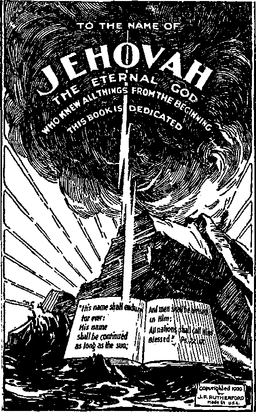For many centuries honest men have sought to understand the prophecies of the Bible. Many men have attempted to interpret such prophecies in advance of their fulfillment. All such have failed. The reason is that "no prophecy of the scripture is of any private interpretation”.
Never before has there been a book published that makes clear so much of the prophecies of the Bible as this book. The Author claims no credit therefor. He does not even attempt to interpret the prophecies. He sets forth the facts, well known to all, showing fulfillment of the prophecies and the proof that it is God’s due time to reveal to man the understanding thereof.
For many centuries the name of Jehovah has been defamed. The reason why God has permitted this is made clear in this book. Best of all, the proof is conclusive that God’s due time is at hand to vindicate his name before all creation; this to be followed shortly by the establishment of the world in peace and righteousness and the blessing of the peoples with prosperity and life.
The publisher can not too strongly recommend this book. Written in plain phrase, it can be understood by all. No attempt is made to honor any creature. The purpose of the book is to honor the name of Jehovah and to open the eyes of the people to the truth.
Prophecy and its fulfillment is the vindication of the name and the Word of Jehovah. No man is the Author of true prophecy. No man can interpret true prophecy. God is the Author of true prophecy, and in his own due time he makes it plain.
In the pages following many of the prophecies as they appear in the Bible are set out. The divine rules for judging prophecy are set forth, and by these rules one may discern between false and true prophets. No attempt is made to interpret prophecy, but the physical facts which have come to pass are set along side the prophecy, thereby showing that God foreknew all things and that in his own due time and good way he has fulfilled and is fulfilling his prophecy. Because it is now God’s due time to make clear his prophecies, any unbiased student can now see much of the fulfillment thereof. Many of the prophecies apply to the future, but in the light of what is now being fulfilled the immediate future can be well approximated and what is about to befall the world is readily seen.
An understanding of prophecy establishes faith and confidence in God and lifts many burdens from mankind. The understanding thereof reveals the true reason why evil has prevailed for many centuries and why God’s due time is at hand to relieve mankind from the oppression of evil. Jehovah God is man’s eternal Friend and Benefactor. Nothing makes this fact clearer than his prophecies which he is now unfolding to these who seek and love the truth.
PROPHECY
[BLANK]
PROPHECY
Origin and Purpose
JEHOVAH, the Almighty God, the Most High, is the Maker of all things good. He is from everlasting to everlasting, and there is none other.
He covers himself with light for his garment, and all light proceeds from him. He created the heavens and stretched them out like a curtain and filled them with his reflected glory. He laid the chief corner stone and foundations of the earth and built it according to his sovereign will. In its youth he made the cloud for its garment of covering and the thick darkness for its swaddling-cloth. He set the sun in the heavens for the light of the earth by day, and the moon and the myriad of stars for its light by night. He even numbered the stars and gave each one a name. With him every thing is order and there is no confusion. He causes the stars and the planets to take their respective places and move continuously in their assigned orbits. He has made the mountains to lift their heads high above the sea and has commanded the eagle to mount up above the rocky crag and to make her nest in the strong places. He has clothed the earth in verdure and filled the great forests with beasts and fowls of the air.
He created man in perfection and made him the prince of earth’s creation. The eternal destiny of all creation he holds in his mighty hand. The depth of the riches of his wisdom and knowledge, and the
9 height of his power and love, are too great for the comprehension of man. The Almighty One, however, condescends to invite man to come and reason with him and to learn of his way. To know and to obey God means to have life everlasting in peace and happiness. Where then should man expect to find knowledge and wisdom except in the revelation of the Almighty God? His Word is a fountain of knowledge and wisdom, ever flowing to supply refreshment and life to these who drink therefrom. He is the Fountain of life everlasting.
Jehovah God is the origin and source of all true prophecy. In proof of this statement it is written: “Thus saith Jehovah, the King of Israel, and his Redeemer, Jehovah of hosts: I am the first, and I am the last; and besides me there is no God. And who, as I, shall call, and shall declare it, and set it in order for me, since I established the ancient people? and the things that are coming, and that shall come to pass, declare unto them.”-Isa. 44: 6,7, R. V., margin.
Every man who loves righteousness and truth, and who loves God and has devoted himself to the Most High, can approach the study of God’s Word without fear, and with confidence that his efforts shall be richly rewarded. When he does so, he not only will rejoice but will sincerely desire to tell others about the goodness and loving-kindness of God. To these who are devoted to him the Lord says: “Fear ye not, neither be afraid; have I not declared unto thee of old, and showed it? and ye are my witnesses. Is there a God besides me? Yea, there is no Rock; I know not any.”—Isa. 44:8, R. V.
Every one who understands and appreciates the prophecy of God will delight to bear the precious truths to others, that they too may rejoice and find the way to life. God is unselfish, and therefore he loves the creatures which are the work of his hand. All his works are perfect. He made man perfect and in his own likeness and.image. (Ps. Ill: 3) God can not look with approval upon sin, evil or wickedness. The sinner is one who breaks God’s law. God is merciful to the sinner who repents and seeks God’s favor in the way appointed. Sin is always attended with sorrow. A wicked one is he who, having been enlightened, wilfully and maliciously sins against that light. Satan is the wicked one, and became such because he wilfully betrayed his sacred trust in order to accomplish his covetous purpose. In so doing he had no regard for the right of man and no consideration for his solemn duty to God. He therefore manifested a malicious heart or motive and acted deliberately and contrary to the light of truth. All who, after having been enlightened, knowingly and persistently go in the way of Satan are wicked. The wicked is ensnared with the work of his own hand. (Ps. 9:16) All the wicked God will destroy. (Ps. 34:16; 145:20) ‘‘ Good and upright is the Lord: therefore will he teach sinners in the way.” (Ps. 25:8) All men aside from Adam were born in sin and shapen in iniquity. (Ps. 51:5) Therefore God has provided the way for the sinner to return to him and to be fully reconciled to him.
The first prophecy was spoken by Jehovah while man was in Eden. That great prophecy covered the whole period of time from the beginning of the manifestation of evil until the recovery of obedient man. At the same time it foretold the destruction of the wicked one who had been the agency that caused man to fall by reason of sin.—Gen. 3:14-19.
The last great prophecy recorded in the Divine Record was one which Jehovah God gave by and through his beloved Son. (Rev. 21:1-7) It foretells the new and glorious government of righteousness in operation for the good of man. The first prophecy marks man’s way in sorrow, sickness, weeping and death. The last great prophecy tells of the blessed time coming when God will wipe away all tears, when sorrow and crying shall eease, when death and the grave shall be for ever destroyed, when all things shall be made new and all obedient ones restored and all humankind shall be the sons of God and for ever blessed.
All true prophecy uttered between the times mentioned has been spoken by creatures as the mouthpieces of Jehovah God and is intended for the benefit of man who seeks truth and life. The study of divine prophecy is the most enlightening and profitable study in which man can engage. Knowing that it proceeds from the Most High and that it is given because of his love for his creatures, the reverential person approaches its study with confidence that it will point out to him the way to endless life and joy.
When mankind was well on the downward road of evil, God caused a prophecy to be uttered concerning his future purpose to send his great executive officer, with his retinue of holy angels, to execute judgment upon all. (Jude 14,15) Enoch was the one who delivered that prophecy, and it was the first prophecy uttered by man. Then in due time followed the prophecy from God uttered by Abraham. That great prophecy foretold of the time coming when God would bring forth “The Seed” through which all the families and nations of the earth shall be blessed. (Gen. 12:3; 22:18-22) All subsequent prophecy may well be said to have related to the carrying out of these expressed purposes of God and to have been so stated that its understanding could be had by man only in God’s due time. A general rule by which the student of prophecy is to be guided with reference to the study thereof may be stated thus: Prophecy can be understood by these devoted to God when the prophecy has been partially or completely fulfilled or is in course of fulfillment. The understanding will be given only in God’s due time.
PROPHET AND SEER
What is a prophet? A prophet is one who speaks for and in behalf of another. The word “prophet” is almost always used in connection with the message which purports to be from God, whether the message is true or false. It is nearly always used concerning these persons whom God uses to speak his message of truth to his people. Such is a true prophet. One who claims to speak in the name of the Lord but who does not is a false prophet. Enoch was a true prophet of God, who spoke in the early days before the great deluge.
There are two words used in the Hebrew Bible from which the English word “prophet” is translated. Those words are nabi and roeh. Nabi is used more frequently. Roeh is rarely used, comparatively, and is generally translated seer. The word nabi is closely related to the word naba, which means to gush forth as a fountain or to rush along as a stream of water. The utterance of the prophet of God did not come forth in measured terms of carefully chosen words, but, as the psalmist has put it, ‘as the heart bubbling over’: “My heart is inditing a good matter”; (or, R. 7.) “my heart overfloweth with a goodly matter.” (Ps. 45:1) In that manner the prophet of God spoke. He was a teller forth of that which God had given him. It would not be true to say that the prophet had no control of his own language. Those who are under the control of evil spirits speak without control of their own language; but not so with the prophet of God. The prophet might not choose his own phrase, but he was the servant of God commissioned to do a specific work and deliver a specific message; and in so doing, the power of God operated upon his mind and caused him to speak as God would have him speak. His mind and his devotion must be upon his work. He was not merely a writing automaton, but God directed him what to say.
A seer was somewhat different. The seer might be a prophet, but was not necessarily so. The seer was one who discerned the will of God and who was permitted to interpret that will. Sometimes, however, the seer was used by the Lord to carry a message to the people (1 Chron. 25:5); but that did not necessarily raise him to the rank of prophet. Gad was called King David’s seer, and was also called a prophet. (2 Sam. 24:11) Jacob on his death-bed discerned the will of God concerning his own sons and what should come out from them, and he gave an interpretation thereof.—Gen. 49:1-27,
It was in the latter days of God’s chosen people Israel that the prophets were most in evidence. After the institution of the prophets of Israel there is only one instance where a prophet of God was sent to another people, and that instance was the sending of Jonah to the people of Nineveh. In the early days of Israel, when God would deliver his people from the bondage of Egypt, he spoke to Moses and offered him the service of delivering his people from oppression. Moses was reluctant about undertaking the task, saying to God that he was a man of few words. Then God told Moses that he would make Aaron his prophet. Moses was as God to Aaron, and Aaron should speak the words which Moses directed him to speak, and that he did. That was the first instance where one speaking for another was called a prophet and that apart from any suggestion of foretelling events. —Ex. 4:15,16; 7:1.
Samuel marked the beginning of the regular line of prophets. Peter the apostle furnishes the proof when he says; “Yea, and all the prophets from Samuel and these that follow after.” (Acts 3:24) Samuel was not the predictor of future events, but he served for the future as well as for the people of his time. It was Samuel who under the power and direction of Jehovah made preparation for the kingdom of Israel. In his day and generation he was specially used by the Lord to serve him. Before Samuel the first who had preeminence as a prophet and servant of God was Moses. While his work was used to guide the people of Israel, it took on a wider scope in that he predicted future things. He foretold generally what should come to pass with Israel. Speaking in the name of Jehovah he uttered some of the most important prophetic speech that is recorded. He prophesied concerning the coming of the great Prophet of which he, Moses, was a representation. He prophesied that such great Prophet was to be raised up from amongst his brethren, that is to say, an Israelite, that in all things the people should hear him, and if they would be pleasing to God they must obey that great Prophet. (Deut. 18:15,18) Moses and Samuel were both spokesmen for Jehovah. To be merely a spokesman for the Lord, however, is not all that is required in order to be a prophet. In speaking for the Lord and for the immediate service of his people, and in interpreting the will of God concerning his people, Samuel was a seer before he became known as a prophet.—1 Sam. 9: 9-11,19.
Israel was God’s chosen people and was used by illustration to set forth God’s purposes for his people in future days. The people of Israel were used to foretell the future of spiritual Israel, that is to say, the people who should become God’s sons by reason of their faith and consecration to do his will. Israel was therefore used to foretell events of the future that would affect all the nations and peoples of the earth. The affairs of the people of Israel were so arranged that what came to pass with them furnished a storehouse of important knowledge for the future. In the formation of the earth God caused a great treasure of coal and oil and mineral and metal to be stored up for man. In the history of Israel God provided a great storehouse of knowledge and truth for these who would seek the truth.
God sent messages by his servants or prophets to that people, which messages have been recorded for the benefit of these who should come after them, and particularly for the benefit of all the true followers of Christ Jesus. The messages thus sent, while frequently intended for immediate use, more particularly had an application to the future. Much thereof could not be used at the time, nor even understood by the prophets themselves. Only in God’s due time could these messages be understood. It seems that God’s due time is now coming for them to be understood, and hence the due time for the careful study of divine prophecy.
The day of the literary prophets, which the little company of sixteen may well be called, extended from the time when the kingdom of Israel was about to be broken up and the people scattered, to the time of their return from Babylon, when God sent the last message by his prophet Malachi. To be sure, these prophets mentioned in the Bible from Isaiah to Malachi were servants of God for their own generation. It is through their writings, however, that the common understanding of the word “prophet” arises, because they spoke particularly of future events. Those who lived before the exile of Israel to Babylon foretold of the destruction of the Assyrian power and of the Babylonish power that was yet to be destroyed. They also foretold the destruction of Jerusalem, which must have been a painful service for them. They also foretold of a time in the far distant future when the despised, dispersed and persecuted Israelites would be regathered and planted again in their homeland and fully restored to God’s favor. They also foretold of things which are coming to pass at this present time and which are seen by all who observe current events.
Because these prophecies are partially fulfilled and in course of fulfillment, he who is now on the Lord’s side can see approximately what is coming to pass in the very near future. These things affect the entire human race. Therefore the study of prophecy at this particular time of the world’s history is most wonderful, thrilling and awe-inspiring. These prophecies give one a broader conception of the Most High, and enable him to see some of the heights and depths and lengths and breadths of God’s marvelous love made manifest toward the children of men.
TRUE AND FALSE
The prophets of Israel claimed to speak in the name of Jehovah. They began their message by saying, “Thus saith Jehovah.” Other men put themselves forward and spoke to the people, claiming to speak in the name and by the authority of the Lord, but having no commission from the Lord to speak. It was necessary for the people to be able to know whether a prophet was true or false. God provided a test by which the people might know, and that rule or test holds good at all times. The test is set forth in the Scriptures: “And if thou say in thine heart, How shall we know the word which the Lord hath not spoken? When a prophet speaketh in the name of the Lord, if the thing follow not, nor come to pass, that is the thing which the Lord hath not spoken, but the prophet hath spoken it presumptuously; thou shalt not be afraid of him. ’ ’—Deut. 18: 21, 22; see also chapter 13:1-5.
From this and other scriptures it will be observed that three things must obtain to prove that the one speaking was truly God’s prophet and representative: (1) He must speak in the name of the Lord; (2) the prophecy that applied to the immediate future must come to pass; and (3) his words must not tend to turn the people away from God but must teach them to be faithful and true to Jehovah. Even theugh a professed prophet spoke in the name of Jehovah and his prophecy came to pass, yet if it appeared from his words that his speech would induce the people to turn away from Jehovah God, then he was false and must be put away from the people and be put to death.
One instance is here mentioned. Jeremiah the prophet of God prophesied to Israel that the people should be taken captive and carried away to Babylon and that Babylon should dominate all the nations. Hananiah claimed to be a prophet of God and he prophesied before the people exactly contrary to the speech of Jeremiah and told the people that they were to have peace. Then Jeremiah answered and said: “The prophet which prophesieth of peace, when the word of the prophet shall come to pass, then shall the prophet be known, that the Lord hath truly sent him.” (Jer. 28:9) Thus Jeremiah restated the divine rule. God had already sent the Prophet Jeremiah before the people to be his true prophet. Hananiah now attempted to prove himself as a true prophet. “Then Hananiah the prophet took the yoke from off the prophet Jeremiah’s neck, and brake it. And Hananiah spake in the presence of all the people, saying, Thus saith the Lord; Even so will I break the yoke of Nebuchadnezzar king of Babylon from the neck of all nations within the space of two full years. And the prophet Jeremiah went his way.” (Jer. 28: 10,11) The words spoken by Hananiah were contrary to Jeremiah’s words and tended to turn the people away from God.
The Lord directed his prophet then to prophesy: “Go and tell Hananiah, saying, Thus saith the Lord, Thou hast broken the yokes of wood; but thou shalt make for them yokes of iron. For thus saith the Lord of hosts, the God of Israel, I have put a yoke of iron upon the neck of all these nations, that they may serve Nebuchadnezzar king of Babylon; and they shall serve him: and I have given him the beasts of the field also. Then said the prophet Jeremiah unto Hananiah the prophet, Hear now, Hananiah; the Lord hath not sent thee; but thou makest this people to trust in a lie. Therefore thus saith the Lord, Behold, I will cast thee from off the face of the earth: this year thou shalt die, because thou hast taught rebellion against the Lord. So Hananiah the prophet died the same year, in the seventh month.” (Jer. 28:13-17) Hananiah, being exposed as a false prophet, was put to death.
Even so it is at the present time. The clergy of today claim to speak in the name of Jehovah God. Their words, however, prove them to be false and untrue representatives of God. The Scriptures show that God is love. The clergy tell the people that God has provided a great lake of fire and brimstone in which to torture for ever these who are not in harmony with what is taught in the churches. Their words therefore tend to turn honest people away from God. The clergy tell the people that many are in purgatory and it is possible to pray them out, and that the clergy can perform this work. Such words are also false and tend to turn away from God honest people not wishing to know a God who would torture a creature and then release him at the supplication of an imperfect man.
The clergy tell the people that the blood of Jesus had no purchasing value, and that the people can save themselves by merely looking upon Jesus as a good man and by becoming a member of the church and following what the church teaches. Those words are not true and they tend to turn honest people away from such a God as the clergy represent. Others of the clergy tell the people that God did not create man perfect, that man did not sin and fall, and that there is no truth in the ransom sacrifice. They tell men that man is a creature of evolution and can and will bring himself up to perfection by his own efforts. Those words are false and tend to turn the people away from Jehovah God.
The clergy teach the people the doctrine of the trinity, to wit, that “God the Father, God the Son, and God the Holy Ghost” arc three persons in one, and all three equal in power, substance and eternity. Such speech or prophecy, which no one can understand, not only is confusing, but dishonors Jehovah God and turns reasonable people away from the great Jehovah God besides whom there is none other.—Isa. 42: 8; 45: 5, 6.
The clergy tell the people that they ‘need not study the Bible, because they can not understand it’, that the clergy are the only ones who can understand it, and that therefore the people should take their instruction from the clergy and follow what they tell them. That speech tends to turn the people away from Jehovah God and to cause them to forsake his Word.
The clergy tell the people that the governments of the world which are called “Christendom”, altheugh very evil and corrupt, constitute God’s kingdom on earth and that the people must be gladly submissive to whatsoever they may suffer from these governments. By such speech honest people are turned away from Jehovah God.
The clergy tell the people that there is no evidence of the second presence of the Lord Jesus Christ, that there is no reason to believe that God will ever bring restitution blessings to the people, that all who are saved must go to heaven, and that these who do not choose to follow in the way the clergy teach concerning heaven must go to eternal torment. Such speech is false and tends to turn the people away from God.
The clergy of modern times teach nothing that induces or tends to induce the people to love, adore and worship the great Jehovah God and to magnify his name; and therefore their speech shows them to be false prophets. While they claim to speak in the name of the Lord, their predictions neither come true nor tend to magnify Jehovah’s name. According to the divine rule they prove to be false, and the Lord promises that in due time he will deal with them as he does with all hypocrites.—Matt. 24: 51.
From the rules by which the prophets would be tested or judged it is evident that some things which were spoken in the name of Jehovah by the prophets were to have fulfillment soon after the time spoken. But the coming to pass of some of these events was not alone sufficient to prove one a prophet. Complete fulfillment must take place in due time. When Jehovah had a message for the future time it was indicated by words of the prophet such as Jeremiah used, to wit, “Behold, the days come, saith the Lord,” or as Isaiah said, “It shall come to pass in that day.” This is an important point in studying prophecy, and the student must keep it in mind. The test was provided by Jehovah, and to such test all the prophecies must be subjected. Many things spoken by the prophets of God have not yet had fulfillment. For instance, Isaiah prophesied that God would establish on earth a righteous government which shall rest upon the shoulder of the Messiah. (Isa. 9:6,7) Also that all the nations would go up to Jerusalem and learn of Jehovah, follow his teachings through his government, and learn war no more. (Isa. 2:2-4) Jeremiah prophesied that God would make and inaugurate a new covenant with Israel and that by the terms of that covenant both these dead and these living should have an opportunity for a blessing. If these prophecies have not been fulfilled, and if all possibility of fulfillment is past, then these prophets are proven false.
The clergy seize upon such as a basis for denying that God will restore Israel and establish his righteous government on earth through Christ. They deny that these men, who thus spoke, truly represented Jehovah God. By so doing the clergy make God a liar, or else these prophets are false. But these who are now truly devoted to the Lord can see from present conditions in the earth that many of the prophecies are at this time in course of fulfillment. The Lord has announced certain physical facts that will come to pass in fulfillment of prophecy by which facts the student can determine when the prophecy is in course of fulfillment. These physical facts show that God’s prophets spoke the truth, and indicate that in the near future all their prophecies will be fulfilled according to God’s will.
The modern clergymen deny that the prophets of the Old Testament spoke anything that applies to the present or future days. To appear considerate before the people they say that these men of old doubtless spoke what they believed to be true, but that they were wrong, and that the modern clergyman has more wisdom than the prophets of old. The clergymen are now what Jesus said about the scribes and Pharisees; namely, they are blind guides of the blind. They do not discern God’s purposes, first to gather ‘the seed of promise’, and then through ‘the seed of promise’ (The Christ) to restore Israel and bless all the peoples of the earth with life by restitution. The clergy therefore dishonor the name of Jehovah God and turn the people away from him.
The issue is now sharply drawn, and is this: Is Jehovah the Almighty God, or is there another? Is the Bible the Word of God or merely the words of men? This issue will be decided in due season. God has caused his Word to be spoken and recorded. In due time he will vindicate both his Word and his name. Therefore God will have at this time some people on earth who will faithfully and truly proclaim his name and his Word to the end that these who desire to know him may learn that he is the one true God, and that the peoples of earth may have notice of his purpose to carry into full operation all that the prophets have foretold.
Those holy men of old called prophets did not write their own message. They wrote as the spirit of the Lord God moved them to write. The spirit of God, or holy spirit, is his power invisible to man but used by him to direct men who were devoted to him. His invisible power operated upon these men of old, his prophets, and caused them to write down the vision they had for the benefit of these who are now on earth. “For the prophecy came not in old time by the will of man: but holy men of God spake as they were moved by the holy [spirit].”-—2 Pet. 1: 21.
PURPOSE
Prophecy recorded in the Bible is not mere literary essay to be dissected by modem critics and compared with their own learning. It is not intended for these who deny the great ransom sacrifice and teach that man is a creature of evolution. It is not intended to be understood by these who push aside the name of Jehovah and exalt the name of some creature. It is not even for these who profess to be followers of Christ Jesus but who magnify the name of some creature instead of honoring and magnifying the name of the Creator. It is not for these professed Christians, even, who ‘accept a man’s person or give flattering titles to men’ and who therefore look to men to guide them rather than to the Lord and his Word.-Job 32: 21, 22.
For what purpose, then, was prophecy written ? It was written for the benefit of the true followers of Christ Jesus who are fully devoted to Jehovah God, and especially for these who in the “last days” are giving their all to Jehovah God and to the honor of his name. (Rom. 15:4; 1 Cor. 10:11) “Every scripture inspired of God is also profitable for teaching, for reproof, for correction, for instruction which is in righteousness: that the man of God may be complete, furnished completely unto every good work.”—2 Tim. 3:16,17, R. V.
Those who wholly devote themselves to the Lord God and joyfully obey his commandments shall understand, because they are wise within the meaning of the Scriptures. They are wise in that, being devoted to the Lord, they apply their knowledge to do as the Lord directs them to do. The wise shall understand, but the wicked shall not understand.—Dan. 12:10.
Jehovah used his chosen people Israel to make pictures, or what we call types, and the reality thereof comes to pass or is applied long after the picture is made. Such pictures or types are really prophecies. He used some other men, such as Job, as types or to make pictures, which constitute prophecies. The tabernacle in the wilderness and the temple in Jerusalem spoke each a prophetic message, altheugh themselves silent. The priestheod, Aaron and his family, and Isaiah and his sons, were types or pictures which spoke prophetically of things to come to pass immediately preceding the inauguration of God’s righteous government. All these things are to be considered as prophecy, in the examination of the subject.
Man had been alienated from God by reason of sin put in active operation by Satan the Devil. God, to be sure, knew that Satan would ever continue to besmirch his good name and bring reproach upon it and turn man away from him and away from the truth. He would let Satan go to the full and let man have the opportunity to choose good or evil. He would also furnish honest and faithful men with evidence of his own supreme power, justice, wisdom and love, and prove that in his own due time he would establish a righteous government, destroy the evil and the workers of iniquity, and magnify his own name that all men might learn the way to life. Therefore he caused the prophets to be his witnesses, and the truth of their testimony he proved centuries after it was uttered. He brings to pass the events which they foretold when speaking as his mouthpieces. Thereby the proof conclusive is furnished that Jehovah God knew the end from the beginning, and that Jehovah alone is the only true God.
James, seeing this and moved by the spirit of the Lord, said: “Known unto God are all his works from the beginning of the world.” (Acts 15:18) Jehovah, knowing the end from the beginning, furnished prophetic testimony by which the man now devoted to God can be thoroughly furnished with the light that enables him to pursue a good and righteous work.
Redemption
JEHOVAH makes it clear in his Word that his purpose has ever been to magnify his Word, to keep his name before men for their own good, and to manifest his loving-kindness toward the children of men. Let the student always keep these truths in mind in the study of prophecy. Also let him bear in mind that at all times, from Eden till this very hour, there has been and is yet in the universe God’s archenemy, who is Satan the Devil, and whose purpose is and always has been to defame God and to bring reproach upon his name and to turn men away from Jehovah God. Keeping these things in mind will enable the student to better understand as he progresses in his studies of divine prophecy.
The fact that God created the perfect man and woman and gave them the power to multiply and fill the earth is at least presumptive proof that Jehovah purposed that in some future day that perfect pair should be surrounded by a multitude of perfect children, all dwelling together upon the earth in happiness and giving glory to the great Almighty Creator. Doubtless he had revealed his purpose to the Logos and Lucifer at the time of the laying of the foundation of the world. (Job 38:7) The rebellious Lucifer attempted to spoil the purpose of Jehovah and to obtain the service and worship of man for himself.
Necessarily the issue at once arose, to wit, Would Jehovah maintain his good name and make good his word, or would he be compelled to destroy his creature for ever and thereby admit that his purpose in 27 the creation of the earth and man upon it had failed? Satan would reason like this: ‘If God does carry out the announced penalty of his law by causing Adam to die, that will be an admission that God can not make a man who will maintain his integrity and his allegiance to Jehovah, and will therefore prove that God’s efforts at creation have failed. If God does not kill Adam according to the announced penalty of his law, then God proves himself a liar and no one of his creatures will have confidence in God. In either event God’s creatures, losing confidence in him, will turn away from him, and I shall receive the worship of man and probably other creatures [which he so much coveted].’
It was Satan’s desire and probably his belief that God would not kill Adam; hence he boldly concocted and told the first lie: “Ye shall not surely die.” He not only made God out a liar, but challenged God to carry out the penalty of his law, reasoning that by so doing God would prove his own weakness. Therefore the rebellion of Lucifer and the fall of man at once involved the word and name of the great Creator. What would God do in vindication thereof ?
God did pronounce the sentence of death on man, but did not carry it into immediate execution. He expelled Adam from Eden and turned His face away from man. If these conditions should continue for ever, with man completely alienated from God, and man should continue to live, man would therein suffer mental torment. Probably the doctrine of eternal torment originated at that time with Satan, and from the time that Adam was expelled from the presence of God till now Satan has kept that defamatory doctrine alive. If God should have compassion upon Adam and set aside his judgment and ignore it thereafter, what would be the effect on his creatures? Man would conclude that he could sin again and continue to violate God’s law with impunity. The angels of heaven would also conclude that they could do likewise. The fact that God did not put Adam to death immediately was doubtless used by Satan to turn many of the angels of heaven away from Jehovah and to cause them to follow Satan. Satan would therefore prove to himself, and have some tangible evidence for others, that God’s not having put man to death made God a liar and destroyed the reason for confidence of his creatures in him. Doubtless this was the reason why many of the angels turned away from Jehovah and followed after Satan.
Men have insisted that God should have forgiven Adam and extended mercy toward him and not enforced the penalty of his law. In support of their conclusion they cite the words of Jesus addressing Peter. Peter asked Jesus how often he should forgive his brother if he sinned against him. Jesus answered: ‘‘Until seventy times seven. ’’ (Matt. 18:21,22) Those who use this as an argument in support of the contention that God should have forgiven Adam, do not recognize that the relationship between two men who are brothers is very different from that of God toward his perfect creature. The creature Adam was perfect and deliberately violated his Maker’s law. The words of Jesus related to brothers, both of whom were imperfect and therefore sinners, and who should have due consideration for the weaknesses of each other. Adam was a perfect man; and his obligation was to obey God’s law. The statement of that law was plain and explicit. (Gen. 2:16,17) There was at least an implied covenant on the part of Adam to keep that law, and he was able to do so; therefore the question of repentance and forgiveness could not be taken into consideration.
Furthermore, if man could sin deliberately and be forgiven, there would be no reason why the angels of heaven also might not sin and be forgiven. The very foundation of God’s entire universe would be shaken. With all these questions that are perplexing to the creature the great Creator was in no wise disturbed. God knew from the very beginning what would be the end, and he let Lucifer and his other creatures reason as they might choose and take the course that they might desire. God’s wisdom is too great for creatures, even including the enemy Satan. (Ps. 10:5; Prov. 24:7; Rom. 11:33) God does, however, open his treasure-house of knowledge and gives wisdom to these who love him, and he permits them to see some of the riches thereof. (Ps. Ill: 10; 25: 9) In due time Jehovah will prove to all intelligent creation that Satan’s logic was entirely false, that his conclusions were wrong, and that all who have followed in his way have been evil. God will prove that He is the only allwise, just and all-powerful and loving One, that there is no other God besides him, and that these who will have life must obtain it in God’s appointed way.
At the same time that God pronounced his sentence of death against Adam, he also pronounced the judgment of death against Satan. He has deferred the execution of the latter even to a day future. Doubtless Lucifer also used this fact to induce the angels of heaven to follow his way, for many of them did so. Therefore it is clear that the issue from then till now is, Who is the great supreme God? That is now the issue that must be determined.
God must be just and must therefore put Adam to death. He had his own good purpose in delaying the execution of his judgment for nine hundred and more years. That judgment of death has affected all of Adam’s offspring. (Rom. 5:12) All being born sinners, all men are entirely helpless to bring about a reconciliation of man to God. If man is ever to be justified and stand right before his Maker, God must provide the way. God alone is wise enough and powerful enough to do it; and, knowing the end from the beginning, he did make provision for man’s justification or reconciliation. Paul, having learned wisdom from the Lord, told how God was just and the justi-fier of man.—Rom. 3: 24,26.
From the very day of the expulsion of Adam from Eden God began to utter prophecy relating to the restitution of man. While God knew the end from the beginning, Satan was not wise enough to know that. In pronouncing the judgment Jehovah foretold of “the seed” that would come in some future day, but not from Adam, which “seed” should be the complete conqueror of Satan and should destroy death and its power. No one was wise enough to know when and how the “seed” and conqueror would come. God made the statement of the fact, and that is all-sufficient.—Gen. 3:15.
COVERING
God prepared the skins of animals, and with these made a covering for Adam and Eve. That was a prophetic act. Necessarily one or more animals must die in order to provide such covering of skins. The covering was provided because of sin. Thus God prophetically indicated that the sin of man could be covered and hid from his sight, but only by and through the death of another. The death of the one furnishing a cover must be a substitute for Adam’s life. That prophetic act of Jehovah pointed to the further fact that he would provide a substitute for man to redeem man; that the Redeemer must become such at a great cost; and that he must be strong and overcome the enemy. From time to time God continued to put things before man which pointed to the future Redeemer. It remained for the latter day, when men are provided with the Bible and have the spirit of the Lord, for them to understand these things by the grace of God. Now, thanks be unto God, the time has come for man to understand and appreciate to at least some degree God’s wisdom, love and power.
DEFINITIONS
Jehovah having uttered a prophecy concerning the Redeemer, let us now determine what is meant by the term “redeemer”. The meaning of the words “redeem” and “redeemer” must be ascertained from the Scriptures. In the Old Testament two Hebrew words are generally employed to translate the words “redeem” and “redeemer”. The word goal is one of the words mentioned, and means to buy back by the next of kin or the avenger, and to deliver by the payment of a purchase price. (Lev. 25: 25,48; Ex. 6:6) The word padah is also employed, and means to rescue, make free or set free, or deliver. (Deut. 13:5; Hos. 13:14) Therefore the correct understanding of “redeemer”, according to the Scriptures, is that the next of kin or the avenger could pay the purchase price required and thereby make free or deliver the one held in bondage. By that means redemption of the one bound is accomplished.
The Scriptural proof is that when Adam sinned the bondage of death resulted to him, and that therein all men have come under such bondage. (Rom. 5:12; 8: 21) If man is to be delivered from that bondage, it must be done by one who can pay and is willing to pay the price that is required; and that one must be strong and able to resist and overcome the power which has kept man in bondage. The first prophecy uttered indicated that there would be a great conflict in connection with the redemption of man from bondage, and that the Deliverer must be a conqueror. The purpose at this time is to show that God prophesied the coming of such a great Redeemer and Deliverer, or means by which deliverance should be accomplished. The purpose is also to show that this was foretold by prophetic words and prophetic action.
SACRIFICE
Jehovah gave respect to the sacrifice of animals. The offering of animals as sacrifices prophetically pointed to what God would require for the release of man from bondage. Abel and Cain each brought an offering for sacrifice unto the Lord. The sacrifice of Abel was the firstling of his flock, and God had respect to that sacrifice. The act of giving respect to that sacrifice by Jehovah must have prophetically pointed to what would be required for man’s release from bondage, because 2500 years thereafter God commanded the Israelites to make a similar sacrifice. (Gen. 4:4; Num. 18:17) The sacrifice of Cain was not acceptable unto the Lord. The reason is now apparent to the careful student, to wit, that Cain’s sacrifice was only the fruit of the ground and did not require the giving up of life; whereas the sacrifice that Abel brought required the shedding of blood. “By faith Abel offered unto God a more excellent sacrifice than Cain.” (Heb. 11:4) This does not mean that God took pleasure in the slaying of animals. It
does mean that it prophetically pointed forward to the time when God would accept a life as a substitute for that which Adam had forfeited, and that such life would be the price of redemption.
There is no Scriptural evidence that men in early times had any knowledge of the real purpose of sacrifice, but faithful men learned that the sacrifice of life had respect by Jehovah and that this had something to do with man’s future blessing. Their faith in God was pleasing to him. By receiving such sacrifice the Lord was making prophecy. Jehovah had no real pleasure or satisfaction in the sacrifice of animals, but such was his methed of prophesying concerning his purpose of providing redemption for man. In his due time he would reveal to the faithful ones the meaning thereof, and thereby their faith and confidence in him would be made strong. (Heb. 10:6) That men had such faith in Jehovah God is proven by what followed.
When Noah came out of the ark he slew animals and offered them in sacrifice unto God, and the Lord had respect to such sacrifices. (Gen. 8:20) That time was far removed from the time of Eden, but undoubtedly the sacrifice offered by Noah was a remembrance of sin and of the necessity for a substitute for the sinners; hence the sacrifice was a prophetic act.
Abraham was justified by faith and he manifested his faith in God by offering up animals in sacrifice. This he did as soon as he reached the land of Canaan. (Gen. 12: 7) It is not to be understood that Abraham knew God’s plan of redemption, but he had faith in God that whatever God did was right; and God directed Abraham’s action, and his sacrifice of animals unto God was a silent prophecy pointing to something better in the future. Then God subsequently directed Abraham in making a sacrifice that spoke with
[BLANK]
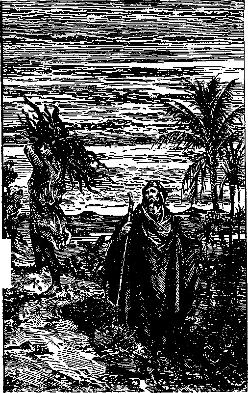By Faith Abraham Offers Fits Son Page 37
prophetic eloquence of the great sacrifice to be made in the future for man’s redemption. God commanded Abraham to take his only son Isaac, whom he loved, and offer him for a burnt offering. (Gen. 22:1-18) Abraham proceeded to do as he was commanded; and when he had gone to the very point of slaying his only beloved son, God stayed his hand. Immediately Jehovah provided an animal for sacrifice in the place of Isaac. By the acts there performed a great prophecy had been uttered with just as much force as if the son had been actually killed. Here was not only a prophecy of what God would require as the price for man’s redemption, but an interpretation of the meaning of the sacrifice of animals. It showed that the sacrifice of animals was merely a prophetic picture saying in substance that in some future day there must be a sacrifice of life that will furnish the great cost price for the redemption of man, and that that life must be a substitute for Adam and therefore a perfect life.
In that prophetic picture Abraham represented God, while Isaac, Abraham’s only son, represented God’s only beloved Son Christ Jesus. Offering up his only son was a great cost to Abraham and prophetically said: Jehovah God is the Redeemer of man by reason of the fact that he makes provision for redemption, and that provision is made with great cost to Jehovah. There was nothing in what Abraham did in connection with the sacrifice to interpret the prophetic picture. But today the student of the Scriptures can well see that God did thereby foretell how the Redeemer would be found and provided, and that in order to be the redeemer of man such Redeemer must die sacrificially.
When God was about to deliver his people from the bondage of Egypt, which bondage represented the bondage of mankind to their oppressor, the enemy Satan, he caused the Israelites to offer a male lamb without blemish. Its blood was sprinkled over the doorpost of each residence, and where that blood was sprinkled the first-borns were protected from death. The Passover lamb was sacrificed, and then Moses, as the active deliverer, led the Israelites out of bondage. (Ex. 12:1-51) Primarily the slain lamb stood for Moses, who could not die and still lead the Israelites out; and therefore the lamb prophetically foretold the Greater than Moses and the One whom Moses represented, and that He should die as a sacrifice.
When God gave the Israelites his law at Mount Sinai he provided for the tabernacle and prescribed the ceremonies to be performed in the use thereof. (Ex. 25:1-40) The tenth day of the seventh month of each year was the one day of the year on which the Israelites were to afflict themselves because of their shortcomings and transgressions. That was their annual atonement day. On that day animals must be slain and the priest must take the blood of these animals and cany it into the Most Holy of the tabernacle and sprinkle the blood upon the mercy seat. First the blood of the bullock, and then the blood of the Lord’s goat, was thus sprinkled. That ceremony made atonement for the sins of the people for the year. Doubtless that is all the Jews could see about what was done. They could not understand the real meaning of these sacrifices. There again, however, a great prophecy was uttered. That prophecy showed that one must be found to be offered up as a sacrifice for mankind, and how atonement should be accomplished. The court that surrounded the tabernacle was the place where the animals were slain, and represented the earth where the great sacrifice must be made. The Most Holy represented heaven itself, and there the blood must be sprinkled; saying in effect that the great redemptive price for the release of man must be paid in heaven and that that price must be a life poured out in sacrifice,
Jehovah caused his chosen people by their very course of action to utter prophecy relating to the future. He showed that the Redeemer must also be the Deliverer. Egypt was holding the Israelites in restraint, with Pharaoh as the ruler thereof representing Satan and his organized power holding mankind in restraint. Moses, strong in the Lord and in the power of his might, delivered the Israelites, thereby uttering a prophecy which said: ‘The day will come when the Greater than Moses shall rise who will redeem and deliver the human race from the bondage of the enemy. ’ Likewise David, in rescuing the Israelites from their enemies, representatively prophesied that God would send a Mighty One who would rescue the people and deliver them from their enemies.
Then God caused men who were really devoted to him to speak words of prophecy concerning the Redeemer. It is not to be expected that these men would understand the meaning of the words they uttered concerning the Redeemer, but they spoke or wrote as the power of God moved them.
In his great suffering and tribulation Job represented, among other things, humankind suffering and desiring to be delivered. Job first speaks of the goodness of God and the insignificance of man, and how impossible it is for imperfect man to bring himself into harmony with his Creator. Then he adds: “There is no umpire [mediator] betwixt us that might lay his hand upon us both.” (Job 9: 33, R. P.) This prophecy said in substance: There must be one to go between God and man, which mediator God will provide for the deliverance of man. Then Job gave utterance to these prophetic words: “But I know that my redeemer liveth, and as the Last over my dust will he arise; and theugh after my skin is struck off this followeth, yet apart from my flesh shall I see God.” —Job 19: 25, 26, Rotherham.
Jehovah caused his prophet to utter these words: “I will ransom them from the power of the grave; I will redeem them from death.” (Iios. 13:14) The word “redeem” in this text means to buy back with a price, and the word “ransom” employed in the same text means to rescue, make free and deliver. The prophecies therefore mean that some day in his appointed way God would buy back the right of man to life, and buy this right with a price, and would rescue, deliver and set men free from the power of death and the grave.
Relating to the same matter God caused his prophet to write: “They that trust in their wealth, and boast themselves in the multitude of their riches; none of them can by any means redeem [deliver and make free] his brother, nor give to God a ransom [provide the covering or redemptive price] for him: . . . that he should still live for ever, and not see corruption. ’ ’ (Ps. 49:6-9) Regardless of all the riches a man might possess, he could not provide the price required to make himself or his brother or the human family fre". God must make the provision. Then the prophecy is uttered that God will do that very thing for man. “Like sheep they are laid in the grave; death shall feed on them; and the upright shall have dominion over them in the morning; and their beauty shall consume in the grave from their dwelling. But God will redeem my soul from the power of the grave: for he shall receive me.”—Ps. 49:14,15.
Gradually God, by words and the actions taken by his people under his direction, disclosed his purpose to provide redemption by the sacrifice of a life as a substitute for Adam. Then through his prophets he tells more specifically of his purposes. He foretells the coming of a man entirely pure and free from sin; that he would be offered as a sacrifice and would willingly submit to death; that he would pour out his being in death and in his death would provide the great cost price that would redeem man from death and the grave; that the perfect man would die as theugh he were a sinner, yet being without sin, and his life would be made an offering for sin; that God would raise him up again, that Jehovah’s purpose would prosper in his hand and that he should not only be the Redeemer of man by his own life-blood but be a great Conqueror and triumph over the enemy. Among other things in this wonderful prophecy he uses these words:
“Surely he hath borne our griefs, and carried our sorrows; yet we did esteem him stricken, smitten of God, and afflicted. But he was wounded for our transgressions, he was bruised for our iniquities; the chastisement of our peace was upon him; and with his stripes we are healed. All we like sheep have gone astray; we have turned every one to his own way; and the Lord hath laid on him the iniquity of us all. He was oppressed, and he was afflicted, yet he opened not his mouth; he is brought as a lamb to the slaughter, and as a sheep before her shearers is dumb, so he openeth not his mouth. He was taken from prison and from judgment: and who shall declare his generation ? for he was cut off out of the land of the living: for the transgression of my people was he stricken. And he made his grave with the wicked, and with the rich in his death; because he had done no violence, neither was any deceit in his mouth. Yet it pleased the Lord to bruise him; he hath put him to grief; when theu shalt make his soul an offering for sin, he shall see his seed, he shall prolong his days, and the pleasure of the Lord shall prosper in his hand. He shall see of the travail of his soul, and shall be satisfied; by his knowledge shall my righteous servant justify many; for he shall bear their iniquities. Therefore will I divide him a portion with the great, and he shall divide the spoil with the strong; because he hath poured out his soul unto death: and he was numbered with the transgressors; and he bare the sin of many, and made intercession for the transgressors,”—Isa. 53:4-12.
The prophetic evidence proves beyond a doubt that from the very moment Lucifer rebelled and man fell God purposed to provide a perfect human being on earth who would prove his complete loyalty and faithfulness to God, maintain his integrity and devotion to Jehovah, be wholly submissive to God’s will and willingly die as a substitute for Adam, and thereby provide a covering and a redemptive price for man; and that that Mighty One God would raise up out of death, grant unto him the divine nature and use him to vindicate his own Word and great name.
THE TEST
How shall we know that these prophecies are true? The answer is, Because they completely meet the divinely-provided test. Every prophet that spoke the truth spoke in the name of Jehovah; therefore the prophecy is Jehovah’s Word. Jehovah provided the test by which the people might know the truth or falsity of such prophecy. All the prophecy herein set forth exactly complies with these requirements; namely, all were spoken in the name of Jehovah, all tend to turn the people to Jehovah and teach them that he is the Almighty God, and many of the prophecies have been fulfilled or are in course of fulfillment, thereby proving that the prophets who spoke were God’s prophets and spoke his Word of truth. If some of the prophecies thus spoken have already been fulfilled, then with absolute confidence we may expect the other portions of the prophecy to be fulfilled.
FULFILMENT
Jesus was born exactly at the place foretold by God’s prophet. (Mie. 5:2) He was begotten, not by man, but by the power of Jehovah God, and was therefore pure and without defilement. (Matt. 1:18; Heb. 7: 26) He was brought into the world to speak, and did speak, in the name of Jehovah God. (John 6: 38, 57) He was born a Jew under the law, and was therefore raised up from among his brethren, even as Moses had prophesied. (Deut. 18:15,18; Gal. 4:4) When he appeared to begin his work on earth as a man, John the Baptist, one of the greatest of the prophets, pointing toward Jesus, said: “Behold the Lamb of God [Jesus, foretold as the sacrificial or Paschal Lamb], which taketh away the sin of the world.” (John 1:29) Jesus had come to be offered up as a sacrifice even as the lamb was offered by the Israelites, and the life of Jesus would be poured out for the sin of the world. The prophet of Jehovah had foretold that he would come ‘to comfort these that mourn’. (Isa. 61:1,2) Jesus went about doing good and comforting these who did mourn, healing the sick and opening the eyes of the blind. (Luke 4:18; Matt. 11: 28) All mankind was in bondage to death and in need of life, and Jesus said: “I am come that they might have life.” (John 10:10) He further said that he came to give his life a ransom, the purchase price, for man.-Matt. 20:28; John 6: 51.
Jesus was persecuted and oppressed; he was assaulted and wrongfully charged with crime; he was tried and convicted as theugh he were a wicked person, and was crucified between two thieves, all of which had been foretold of and concerning him by God’s prophet. He was raised from death by the power of Jehovah. (Acts 10: 38-40) He was raised, and ascended into heaven, the great Conqueror over death, and is alive for evermore, and still leads on, the Conqueror over all opposition. (Rev. 1:18; 6:2) As to why his life-blood was poured out in death God’s inspired witness testified, to wit: ‘‘We see Jesus, who was made a little lower than the angels, for the suffering of death, crowned with glory and honour: that he by the grace of God should taste death for every man. ’ ’—Heb. 2: 9.
“For there is one God, and one mediator between God and men, the man Christ Jesus; who gave himself a ransom for all, to be testified in due time.” (1 Tim. 2:5,6) “Forasmuch as ye know that ye were not redeemed with corruptible things, as silver and gold, from your vain conversation received by tradition from your fathers; but with the precious blood of Christ, as of a lamb without blemish and without spot: who verily was foreordained before the foundation of the world, but was manifest in these last times for you.”—1 Pet. 1:18-20.
He was offered “to bear the sins of many”. ‘He hath appeared to put away sin by the sacrifice of himself.’ (Heb. 9: 26-28) “In whom we have redemption through his blood, the forgiveness of sins, according to the riches of his grace.” (Eph. 1:7) “But now in Christ Jesus ye who sometimes were far off are made nigh by the blood of Christ. For he is our peace, who hath made both one, and hath broken down the middle wall of partition between us; having abolished in his flesh the enmity, even the law of commandments contained in ordinances; for to make in himself of twain one new man, so making peace; and that he might reconcile both unto God in one body by the cross, having slain the enmity thereby.” —Eph. 2:13-16.
“In whom we have redemption through his blood, even the forgiveness of sins; and, having made peace through the blood of his cross, by him to reconcile all things unto himself; by him, I say, whether they be things in earth, or things in heaven.” (Col. 1:14, 20) “Neither is there salvation in any other: for there is none other name under heaven given among men, whereby we must be saved. ’ ’—Acts 4:12.
FALSE PROPHETS
The clergymen or pastors of the various churches of modern times claim to be prophets speaking in the name of God. Before their congregations they sometimes speak of the name of God and of Jesus, and they deny the power thereof. In this they fulfill the prophecy uttered of and concerning them. (Isa. 29: 13; 2 Tim. 3:5) They deny the Bible’s testimony of man’s creation, his sin and fall; they deny that man needs a redeemer, and deny the blood of Jesus poured out as the purchase price for man’s redemption. They wholly renounce the great ransom sacrifice. Dr. Barnes, bishop of Birmingham, England, is a sample of the many modem clergymen, and from a sermon delivered by him on September 26, 1927, the following is a quotation:
“In this age of social and moral confusion, of intellectual progress and unrest, the turmoil was so great that few landmarks seemed safe, and the religious beliefs and traditions of our forefathers were sharply challenged.
“Were they to cling to the old faith? We would rather say: Welcome new discoveries with an open mind and reverence the great men who made them. But let them remember that, behind all the new knowledge, the fundamental issues of life would remain veiled.
“Today there is, among competent men of science, unanimous agreement that man has been evolved from an ape-like stock. He arose, possibly a million years ago, from a tangle of apes which began to vary in different directions.
“As a result the stories of the creation of Adam and Eve, of their primal innocence and of their fall, have become for us folklore. But by the men who built up Cathelic theology they were accepted as solid fact. Man’s special creation was one of the primary assumptions of the Cathelic system. In it the fall explained the sin.
“Darwin’s triumph has destroyed the whole theological scheme. Man is not a being who has fallen from an ideal state of perfect innocence: he is an animal slowly gaining spiritual understanding and, with the gain, rising far above his distant ancestors.”
Ask almost any clergyman of the present time concerning the purchase of mankind by the blood of Jesus, and he will tell you that the blood of Jesus was not shed as a redemptive price. Whether ignorant of the great array of divine pi’ophccy concerning the Redeemer and redemption, or whether these men deliberately misrepresent the truth, does not matter as to the truth or falsity of their words. Put to the divine test, their words are proven false, because (1) they deny the Word of God; (2) their prophecy concerning man’s being able to save himself has never come true and never will; and (3) their teachings turn men away from Jehovah God and produce agnostics and infidels. Therefore such men are false prophets and are representatives of their father the Devil, and his bidding they do even as did their counterparts in the days of the Jews.—John 8:42-44.
The sacrifice of animals, offered by the Jews and made to prophetically show God’s purpose, the modern clergyman claims to abhor. Human sacrifice for the sin of man is to them even more abhorrent. The real trouble with such clergymen is that they do not wish to acknowledge that man is a sinner and that he is wholly dependent upon God for his redemption, deliverance and restitution to life.
All people know from observation and experience that man is imperfect, subject to sickness, pain and death. They know that no man has ever been able to bring himself up to the point of perfection or to live everlastingly. The greatest desire of all sane persons is that they might have life. They want to know the truth. There is no truth except that which is contained in God’s Word or which is fully in harmony with God’s Word of truth as set forth in the Bible. Concerning this Jesus said: “Thy word is truth.” (John 17:17) To know and follow the truth means to know the way to life.
The great array of prophetic utterances concerning redemption of man, accepted and supported by the fulfillment of that prophecy, is conclusive proof that the prophets of God foretold the truth. These prophecies furnish the foundation for faith and the confidence of all honest persons to go on in the study of prophecy. Let the people therefore disregard the theories advanced by men and devote themselves to an honest and careful study of God’s Word of truth. So doing they will learn that Jehovah is the only true God and that he employs the good office of the great Redeemer, the Prophet, Priest and King, to lead men to the way of life. As the honest person pursues these studies it opens to him the great treasure house of knowledge and wisdom leading to boundless blessings. Who then is the great Prophet, Priest and King, who will deliver the people from their bondage and show them the way to life J
Prophet, Priest and King
JEHOVAH, in preparing for the complete vindication of his Word and his name, foretold the mighty agency he would use to accomplish that purpose. He would bring forth a Prophet who would speak authoritatively for Jehovah, a Priest who would serve as the chief executive officer of the Lord, a King who should in God’s due time rule the world in righteousness. Since the Redeemer and Deliverer of man must be strong and a great conqueror, it might be expected that the same Mighty One would fill the office of God’s Prophet, Priest and King.
The work of Moses as a prophet was about done, and God would have him tell Israel of the coming of the Greater than Moses. He therefore said to the Israelites: “The Lord thy God will raise up unto thee a Prophet from the midst of thee, of thy brethren, like unto me; unto him ye shall hearken. And the Lord said unto me, ... I will raise them up a Prophet from among their brethren, like unto thee, and will put my words in his mouth; and he shall speak unto them all that I shall command him. And it shall come to pass, that whosoever will not hearken unto my words which he shall speak in my name, I will require it of him.”—Deut. 18:15,17-19.
All peoples of earth shall in due time hear and obey that mighty Prophet, or Jehovah himself will take the matter in hand. “It is a fearful thing to fall into the hands of the living God.” (Heb. 10:31) It follows that the One here described would come not to speak his own message but to speak the message of
49 the Almighty God and to acquaint the people concerning the will of the Most High, that his will might be done by the peoples on earth as it is done in heaven.
The fact that God said that the great Prophet would bo “like unto” Moses must mean that the work done or duties performed by Moses foretold the kind of work to be done or duties to be performed by the Greater than Moses. That which prominently stands out in the work of Moses may be summed up in this manner: He was appointed by Jehovah. God raised him up to be the deliverer of his people. He was the law-giver. He was the teacher of the people, informing them of God’s will. He was the true and faithful witness of God for the people. He was the father and comforter of the Israelites. Above all, he stood for the name and glory of Jehovah. The Greater than Moses must do likewise, only on a far wider scale. The chief reason why God sent Moses to Egypt was to “redeem [Israel] for a people to himself, and to make him [for himself] a name”. (2 Sam. 7:23) Therefore the chief reason for sending the greater than Moses must be to redeem the people and to make a name for Jehovah God. There is no intimation that he would be sent merely to save some and get them to heaven to help God run his affairs.
If it be found from the Scriptures and from the events that have actually come to pass that the prophecy uttered by Moses concerning the coming of the greater Prophet has been fulfillled, then it follows that the one fulfillling the prophecy is the mighty Representative of Jehovah God and that his words are true and import absolute verity and must be followed and obeyed. It would also follow that any man, whether clergyman or other, who denies the words of Jesus is a false prophet and his words are false. All mankind, be they Jews or Gentiles, must obey whatsoever this great Prophet commands, if they would have the favor of Jehovah God.
FULFILLED
John the Baptist was a prophet. He was the one who made announcement of the coming of Jesus Christ the Son of God. The learned Jews came to John and inquired if he was that Prophet concerning whom Moses prophetically wrote. John answered that he was not, but that the one coming after him and whom he announced is that great Prophet. When Jesus appeared and began his work John said: “This is he of whom I said, After me eometh a man which is preferred before me; for he was before me.”— John 1:21, 30.
When Jesus was baptized in the Jordan the spirit of God descended upon him and there was a voice from heaven saying: “This is my beloved Son, in whom I am well pleased.” (Matt. 3:17) John testified that he witnessed this great demonstration of power. (John 1:33,34) Peter at Pentecost declared Jesus Christ to be the One whom Moses foretold. (Acts 3:19-24) Paul also identifies him as that great Prophet. (Rom. 1:1-3) The New Testament scriptures abundantly testify that Jesus Christ is the great Prophet foretold by Moses. Did he meet the divine requirements of a prophet? He did in every respect. He spoke in the name of Jehovah God; his words on all occasions tended to turn the people to Jehovah God and to honor his name, and many things that he said have come to pass.
He spoke in the name of Jehovah and authoritatively as God’s mouthpiece. “God, who at sundry times and in divers manners spake in time past unto the fathers by the prophets, hath in these last days spoken unto us by his Son, whom he hath appointed heir of all things, by whom also he made the worlds.” (Heb. 1:1, 2) Jesus always honored his Father and claimed no honor for himself. “I seek not mine own will, but the will of the Father which hath sent me.” (John 5:30) “As my Father hath taught me, I speak these things. ... I honour my Father. ... If I honour myself, my honour is nothing: it is my Father that honoureth me.” (John 8: 28,49, 54) He did not attempt to magnify himself, but always magnified God’s name. When these who heard him would not believe him, he asked them to believe him because of his works.—John 14:10,11.
The entire New Testament record of Jesus abundantly proves that he was the great Teacher from God bearing testimony to the truth of Jehovah. For this cause was he born and came into the world. (John 18:37) He was the great expounder of the will of God. As God’s great mouthpiece he declared things to come to pass which could not be understood until they were fulfillled.
Jesus’ great prophecy concerning his second presence and the end of the world is set forth in the record. (Matt. 24) The things there prophesied began to come to pass in the year 1914, and they are still in process of fulfillment. Jesus foretold the fall of Jerusalem and the dispersion of the Jews and that subsequently they would again become the recipients of God’s favor. The first part of that prophecy was long ago fulfillled, and the latter part is now beginning to be fulfillled. He testified that he must die to provide the great redemptive price for man. (Matt. 20 s 28; John 10:10; 6:51) That prophecy has been fulfillled. (Heb. 2: 9; 1 Tim. 2:5, 6) He prophesied that he would be raised from the dead, would ascend into heaven, and would come again; all of which prophecies have been fulfillled. Many of his prophecies have been fulfillled, and many more are yet to be fulfillled. What is here said is said for the purpose of showing that he met in every sense that which was required by the Lord and which proved him a true prophet, and that he is the great Prophet who Moses prophesied was to come.
As Moses was the redeemer and deliverer of the Israelites from Egypt, so is the great Prophet Jesus Christ the Redeemer and Deliverer of all mankind. As Moses was the law-giver to the Israelites, so Jesus Christ is the great Law-giver for the people. As Moses was teacher of the people of Israel, so Jesus Christ is and ever will be the great Teacher of mankind. As Moses was the guide for the Israelites, even so Jesus Christ is the Guide and Leader and Instructor for the people. (Isa. 55:4) As Moses was a “father” to the Israelites, so Jesus Christ is the great Life-giver of the world. (Isa. 9: 6, 7) As Moses stood for the honor of Jehovah’s name, even so the Greater than Moses, Christ Jesus, whom God hath exalted, is now and ever shall be an honor and glory to the name of Jehovah God. (Phil. 2: 9-11) The proof shows beyond all question that Jesus Christ is the great Prophet whom God foretold by the mouth of Moses, and that the words spoken by Jesus are from Jehovah, and that all who would live must hear and obey his words.
A PRIEST
The high priest of Jehovah God is the one who serves him officially as his principal officer. The ceremony performed in connection with the tabernacle on the atonement day was a prophetic ceremony. The priest performed that ceremony. In substance that prophetic ceremony said: The time will come when the great High Priest, appointed by Jehovah, shall serve in that official capacity in making atonement before God for the sins of the world. A perfect human sacrifice must be offered up as a substitute for sinful man, thereby providing the cost price for the redemption of man, and must in due time be presented to Jehovah. Who would be the priest to perform that sacrificial work? Paul, the inspired witness of the Lord, answers the question and identifies Christ Jesus as that great High Priest who was faithful to God who appointed him. (Heb. 3:1-6) The proof shows not only that he was the Priest of God when on earth, but that he still occupies that high office in heaven itself. (Heb. 4:15; 8:1) He did not take that high office by his own appointment, but took it by appointment from Jehovah God.—Ileb. 5: 5, 6.
Once each year, on the atonement day, the high priest of Israel performed the prophetic ceremony by offering the lives of animals; and in fulfillment of that prophecy Jesus Christ, the great High Priest of God, offered his own life-blood once, and thereby provided the ransom price and sin-offering for mankind. “Christ being come an high priest of good things to come, by a greater and more perfect tabernacle, not made with hands, that is to say, not of this building; neither by the blood of goats and calves, but by his own blood, he entered in once into the holy place, having obtained eternal redemption for us. How much more shall the blood of Christ, who through the eternal spirit offered himself without spot to God, purge your conscience from dead works to serve the living God? For Christ is not entered into the holy places made with hands, which are the figures of the true; but into heaven itself, now to appear in the presence of God for us. For then must he often have suffered since the foundation of the world: but now once in the end of the world hath he appeared, to put away sin by the sacrifice of himself.”—Heb. 9:11,12,14, 24, 26.
As further proof that the Jewish ceremony on the atonement day was prophetic, the high priest of the Jews must be taken from the tribe of Levi; and hence it was called the Levitical priestheod. Jesus was from the tribe of Judah, about which tribe nothing was said concerning priestheod. There was another priestheod provided, which is designated in the Scriptures by the Lord as the priestheod “after the order of Melchisedec”. (Heb. 7:11-17) Then Paul, in that connection, quotes the words of the prophet: “without father, without mother, without descent, having neither beginning of days, nor end of life; but made like unto the Son of God, abideth a priest continually.”—Heb. 7:3.
By this language is meant that this priestheod did not come into office by reason of birth, as did the priests of the Levitical order, and that therefore he had neither father nor mother; and since there is no record of the beginning of the Mighty One, and since there is to be no end of his priestheod, it is stated that he was without beginning of days or end of life. Therefore the Levitical priestheod prophetically referred to the work of the great Priest, Christ Jesus, to be performed in connection with the antitypical atonement day, but it did not foreshadow other work that the same great Priest does.
Another prophecy was made foretelling that great Priest and the nature of his work. When Abraham was returning from rescuing Lot he was met by Melchizedek, who was then king of Salem, which means that he was the king of peace, and he was at the same time a priest of the Most High God; and he gave Abraham nourishing food and drink. (Gen. 14:18; Heb. 7:1) That prophecy foretold the coming of a Mighty One who would fill the office of Priest of the Most High God and who would minister lifegiving portions to the peoples of the earth. Jesus Christ fulfillled this prophecy and is God’s great High Priest and chief executive officer for ever, and he gave unto the people that which will bring and sustain life. (Rom. 6:23) Being God’s chief executive officer, he does and will perform all things for Jehovah and in the name of Jehovah. Concerning this it is written that ‘all things are from Jehovah and all things are by Christ Jesus’.—2 Cor. 5:18; 1 Cor. 8: 6.
KING
The prophecy concerning Melchizedek shows also that the great High Priest who fills the office is at the same time the great King or Ruler. God caused Isaiah to prophesy concerning the coming of the Mighty One upon whose shoulder the government of righteousness would rest, and who would give life and peace to the peoples of earth. He foretold that that Mighty One is the Prince of Peace. (Isa. 9: 6, 7) When Jacob was on his death-bed God caused him to utter a prophecy concerning what should come to pass in the future. Among other things he prophesied as follows: “Judah is a lion’s whelp: from the prey, my son, thou art gone up: he stooped down, he couched as a lion, and as an old lion; who shall rouse him up? The seeptre shall not depart from Judah, nor a lawgiver from between his feet, until Shiloh come; and unto him shall the gathering of the people be. ’ ’—Gen. 49: 9,10.
Jesus descended from the tribe of Judah and is identified in the Scriptures as “the Lion of the tribe of Juda”. (Rev. 5:5) The Mighty One thus foretold by this prophet must have the right to rule and be the great Law-giver to the people, even as Moses was the law-giver to Israel. His name Shiloh means peaceful One, or the Prince of Peace. The fact that the prophet declared that unto him shall the gathering of the people be is a prophecy that he would be the Ruler of the people. Jesus has partially fulfillled this prophecy and is in course of fulfillling it all.
Jehovah caused his prophet to foretell the place of the birth of him who must be the rightful Ruler of the world. “But theu, Bcth-lehem Ephratah, theugh thou be little among the thousands of Judah, yet out of thee shall he come forth unto me that is to be ruler in Israel; whose goings forth have been from of old, from everlasting.” (Mic. 5:2) When Jesus was born at Bethlehem this prophecy was fulfillled partially, or in miniature. The words of the prophecy, “Whose goings forth have been from of old, from everlasting, ’ ’ definitely identify the Logos, by whom all things were created and who was made flesh and dwelt among men, as the One who was born to be the Ruler of the world. (John 1:1-4) When Jesus was on earth he was anointed to be King and therefore was the King at that time, but he did not assume the office of Ruler at that time. He must wait until God’s due time, which was future, as he stated to Pilate. (John 18:36-38) The prophet indicated the time that Jesus would assume his office as King when he said: “Therefore will he give them up, until the time that she which travaileth hath brought forth: then the remnant of his brethren shall return unto the children of Israel.”— Mic. 5:3.
That prophecy relates to the time when his nation would be born and his rule would begin, which has now been fulfillled, but which will be discussed in a subsequent chapter. God, through his prophet, referring to a future time, said: “Yet have I set my king upon my holy hill of Zion.” (Ps. 2:6) That prophecy began to have its fulfillment in 1914, as will appear from evidence hereinafter submitted.
The indisputable prophetic testimony shows therefore that he whom Jehovah provided to redeem the human race is also the great Prophet of Jehovah God and speaks with absolute authority for Jehovah. The proof is also that he is the everlasting “Priest of the Most High God” and will for ever administer the duties of that office, and is hence the chief officer of Jehovah. The proof is also that he is the great King and rightful Ruler of the world, who will rule in righteousness for the blessing of the people, and that he received the everlasting right to all these high offices at the time when he was anointed by the holy spirit of Jehovah.
“Anointing” means designation to office and that the one thus anointed is clothed with power and authority to act in that office. The word ‘‘Christ” means anointed one, and it was at the time of his anointing that he received the name Christ. From that time forward he has properly possessed the titles of Prophet, Priest and King. The word “Messiah” also means the anointed one. God, through his prophet, foretold that the Messiah the Prince would be cut off, but not for himself. (Dan. 9:25,26) That prophecy is exactly in harmony with Isaiah’s prophecy concerning the One who should pour out his soul unto death to provide the redemptive price for man. (Isa. 53: 8,12) Jesus fulfillled this prophecy, because he is the Anointed, the Messiah, and he poured out his soul unto death, not for himself but for the benefit of mankind.
When Jehovah God raised Jesus out of death and exalted him to the highest place in heaven, he had then become the Redeemer and the One who makes atonement for sin; and he rightfully holds that title in addition to these of Prophet, Priest and King. Jesus then possessed the power and authority to establish immediately a righteous rule on the earth and take action against the great enemy to oust him from rulership of the world, and to perform the work of vindicating Jehovah’s name, and to command all the people to obey. It would have been his greatest joy to do so then, had it been God’s due time; but God’s due time had not yet arrived; therefore Jehovah said to him as he had foretold through the words of the Prophet David: “The Lord said unto my Lord, Sit theu at my right hand, until I make thine enemies thy footstool.” (Ps. 110:1) Paul recorded the fulfillment of that prophecy when he wrote: “But this man, after he had offered one sacrifice for sins for ever, sat down on the right hand of God; from henceforth expecting till his enemies be made his footstool. Heb. 10:12,13.
The above prophetic statement can not be taken to mean that Jesus must remain idle or inactive when directed to sit down, but must mean that he was to await God’s due time for taking action against the enemy to oust him from the courts of heaven, establish a government of righteousness, and vindicate his Father’s name. There was much other work for him to do in the meantime. When he was about to end his earthly ministry as a man, he said to his disciples: “And I covenant for you, even as my Father has covenanted for me, a kingdom, that you may cat and drink at my table in my kingdom, and sit on thrones, judging the twelve tribes of Israel.” (Luke 22:29, 30, Diaglott) Thus Jesus uttered a prophecy that his faithful followers (meaning his disciples and others who should likewise follow in his footsteps) would be with him in his kingdom.
Again, he said to his disciples about the same time: “I go to prepare a place for you. And if I go and prepare a place for you, I will come again and receive you unto myself, that where I am there ye may be also.” This was also a prophecy, the understanding of which was hidden from his followers until the time of his coming and his kingdom. Now that prophecy has been at least partially fulfillled and is in course of fulfillment, and these who arc devoted to the Lord can understand it and do understand it. Seeing then that the prophecies foretold the Redeemer, the great Prophet, Priest and King, and that these prophecies have been fulfillled or are in course of fulfillment, there is an abundance of proof to establish the faith of all who love Jehovah. The fact that the Lord caused these prophecies to be written for the benefit of the man who devotes himself to Jehovah God is conclusive proof that in God’s due time the prophecies would be understood.
Days of Understanding
JEHOVAH reveals himself and his purposes to his people in his own due time. His prophecy therefore can not be understood until it is God’s due time for understanding it. Prior to his due time any interpretation is merely a guess. without doubt it has been pleasing to the Lord for these consecrated to him to seek an understanding even before the due time to understand. Their very attitude of searching for the truth kept them in harmony with the Lord. The holy angels of heaven sought an understanding; and while the Lord did not reveal his purpose to them, he did not rebuke them, and thus shows that he is not displeased with these who search for the truth. It will be found also that the understanding of the prophecies of God increases as the fulfillment thereof unfolds. Therefore one may see some part of prophecy now, and later see it more clearly. “The path of the just is as the shining light, that shineth more and more unto the perfect day.” (Prov. 4:18) It is also true that prophecy has more than one fulfillment. It will be found that at a certain period of time the prophecy has a small or miniature fulfillment, and later a much larger and complete fulfillment.
Many students have made the grievous mistake of thinking that God has inspired men to interpret prophecy. The holy prophets of the Old Testament were inspired by Jehovah to write as his power moved upon them. The writers of the New Testament were clothed with certain power and authority to write as the Lord directed them. However, since the days of of the apostles no man on earth has been inspired to write prophecy, nor has any man been inspired to interpret prophecy. The Apostle Peter emphatically says: “Knowing this first, that no prophecy of the scripture is of any private interpretation.” (2 Pet. 1:20) The interpretation comes from the Lord in his own due time. When his due time arrives to bring about the physical facts by which these devoted to him can see that these facts are in fulfillment of prophecy, then the prophecy can be understood. The truth does not belong to any man or any other creature. God’s Word is truth. In his due time he makes it clear to these devoted to him, and not before.
To his faithful disciples Jesus said: “When he, the spirit of truth, is come, he will guide you into all truth: . . . and he will shew you things to come.” (John 16:13) The spirit of God was given to these disciples at Pentecost, and thereafter they spoke or wrote under the supervision of the spirit of God. (Acts 2:4) The Lord did show them things to come, and some of them uttered words of prophecy. There is no Scriptural proof, however, that the apostles had successors, and therefore we must conclude that they had a special mission from the Lord to understand and speak according to his will. without doubt some of them at least had a better understanding than they were permitted to disclose to others. Paul speaks of himself as receiving a vision from the Lord and of hearing words which it was not lawful for him to utter. (2 Cor. 12:4) So far as the Bible discloses, there is no other man since the days of the apostles who has had any vision that was not lawful for him to utter. From the words of Jesus we must understand that even his disciples would be permitted to understand God’s purpose only in his due time.
Jesus also said to his disciples: “And now I have told you before it come to pass, that, when it is come to pass, ye might believe.” (John 14:29) This is a plain statement of the rule concerning the understanding of prophecy, namely, that ‘when it comes to pass, ye may believe and understand’. The “ye” in that text refers to the disciples, and it must be limited to these who are devoted to Jehovah God. This explains why the Lord’s Word can not be understood by these who are not in harmony with God. If a man wants to understand the Word of the Lord, he must devote himself to the Lord honestly and sincerely. “The secret of the Lord is with them that fear him; and he will shew them his covenant. ’ ’—Ps. 25:14.
The apostles, under the supervision of the Lord, organized the church in their day. To the members of the church of that time the written epistles of the apostles were directed, but they were intended more particularly for the understanding, aid and comfort of the members of the church at the end of the world. (Rom. 15:4; 1 Cor. 10:11) After the death of the apostles there quickly came upon the church a time of darkness. That was a long period of darkness and is generally mentioned as the “dark ages”. During that long period of time the face of the Lord was turned away from that organization called “the church”, so far as revealing his purposes was concerned. That period of time lasted approximately from the third century to the nineteenth century. In that period there was probably a very small number of the true followers of Christ on earth. The number claiming to be the followers of Christ was large, but these who were faithful and true were few in number. That was the period of time when the true and the false grew together, which Jesus described in the parable as the “wheat” and the “tares” growing in the same field. He declared they must continue thus to grow together until the end of the world. (Matt. 13:24,30,39) Thus growing together, the true followers of Christ were greatly hindered by the false. The teachers in the churches were selfish men interested in political influence and personal flattery. Under the influence and control of the enemy Satan, they caused the truth to become obscure and to be seen very dimly.
Again attention is called to the words of Jesus, the great Prophet, who with authority from Jehovah said to his disciples: “I go to prepare a place for you. And if I go ... I will come again and receive you unto myself.” It should therefore be expected that the coming again of the Lord would mark the beginning of a better understanding of God’s Word. In harmony with this, Peter at Pentecost uttered a prophecy saying; “Times of refreshing shall come from the presence [face] of the Lord [Jehovah]; and he shall send Jesus Christ, which before was preached unto you; whom the heaven must receive [retain] until the times of restitution of all things, which God hath spoken by the mouth of all his holy prophets since the world began.” (Acts 3:19-21) In this the apostle clearly foretells a time of refreshing to the people of the Lord, and that the time would be at the second coming of the Lord Jesus.
That would not mean that Jesus must be bodily present again on the earth, because with him distance is no barrier. He is a spirit being of the divine nature, and his power is without limitation, regardless of his actual bodily position. Being clothed with all power in heaven and in earth, he could administer the affairs of the church from one point as well as from another.
The apostle’s words mean that, at a stated time and acting in accord with Jehovah’s orders, Christ Jesus would begin to minister to these consecrated to God and give them refreshing. What would be the nature of that refreshing?
Peter mentions “restitution”, which would mean a restoring of that which had been taken away or hidden, and would necessarily include the truth that was hidden during the “dark ages”. On another occasion Jesus said that ‘Elijah must first come and restore all things’. (Matt. 17:11) Elijah was a prophet of God who did a restitution work in his time, in that he restored to the Israelites an understanding of the truth concerning God and their covenant relationship with God. (1 Ki. 18: 39) His work was prophetic and foretold that the Lord would restore his truth to his own people. After Elijah was dead, Malachi prophesied that God would send Elijah the prophet before the great and dreadful day of the Lord. (Mal. 4:5,6) That prophecy is proof that another should do a work similar to that done by Elijah, but on a far greater scale and of much more importance.
The restitution or restoring of all things, of which Jesus spoke, and also that mentioned by the Apostle Peter, must begin with the restoring to the people of God the truths that had been hidden during the dark ages. That restitution work would progress during the manifestation of the second presence of Jesus Christ. It would be expected that the days of understanding of the prophecies would begin sometime after the manifestation of the Lord’s second presence, and the understanding would continue to increase thereafter.
The Scriptural proof is that the second presence of the Lord Jesus Christ began in 1874 A.D. This proof
is specifically set out in the booklet entitled Our Lord’s Return. In the Scriptures there are three different Greek words used in connection with the second coming of the Lord Jesus Christ. Those words are, to wit: parousia (Matt. 24:3), which means presence; epiphaneia (2 Tim. 4:1), which means presence and shining forth with increased light; and apokalupsis (Rev. 1:1), which means the presence of the Lord shining forth with increased light and to a complete uncovering or revelation. Thus is shown the progressive unfolding of the prophecies during the presence of the Lord. That is the period of refreshing mentioned by Peter, and that refreshing is given to, and is for, the benefit of the faithful students of God’s Word, because God has turned his face to them and the Lord Jesus Christ is manifesting his presence and is ministering to them.
Within the period of his presence there is a gradual and progressive restoration or restitution of the fundamental truths of the Word of God. Therefore the work of Elijah foretold a period of time for the restoration of all the great fundamental truths of the divine purpose. This prophecy has been fulfilled. Particularly three great fundamental truths were little understood until after the second presence of the Lord. Those truths are, to wit, the philosophy of the ransom sacrifice, the mystery of God concerning Christ and his body members, and the restitution of the human race during the reign of Christ.
That restitution of fundamental truths would not mean an unfolding and understanding of all the prophecies, for the reason that they had never been understood. It is impossible to restore a thing that did not once exist or that was not once understood. without a question of doubt the apostles understood the fundamental truths, mentioned above as being restored. It is also equally certain that there are many of the prophecies that they could not clearly understand, because it was not God’s due time to reveal them. One of these truths, in particular, was in reference to the Lord’s second coming, one which he stated no man understood. (Matt. 24:36) Therefore the conclusion is that the restitution of all things does not have reference to an interpretation of the prophecies.
Another general rule that may be safely followed by the student of prophecy is this: A prophecy is usually in course of fulfillment before the followers of Christ diseem it, and often such followers are used by the Lord to perform a certain part in fulfillment of the prophecy without their being aware that they are so used. Then, after progress in the fulfillment, he makes it known to them. By faith the true Christian goes on doing what he can in'harmony with God’s will, and then the Lord shows him how he has been used by the Lord. Evidently the Lord does this for the purpose of encouraging the Christian and increasing his faith.
Interpretation of prophecy has been written time and again by men, and many have believed such interpretation to be true. Afterward, when they found out that the interpretation was not true, many have become discouraged and have turned away from the study of God’s Word. This is a great mistake. If we always keep in mind that the truth is God’s and not man’s, and that no man can interpret prophecy, but that the true follower of the Lord can see it after it is fulfilled, then the student will be less liable to become discouraged. He will then be giving all honor and glory to Jehovah and not to any man. Jehovah never makes any mistakes. Where the student relies upon man, he is certain to be led into difficulties. When he relies upon the Lord, he will be kept in perfect peace.—Isa. 25: 3.
PREPARING THE WAY
Jesus Christ, the great Prophet of God, prophesied that he would come again. The fulfillment of that prophecy is one of the outstanding parts of the divine plan. Having arranged for others to be taken into the ‘covenant by sacrifice’ and ultimately into the kingdom, the Lord at his second coming would be expected to first do some special work in behalf of these. They must have the truth restored to them to be enabled to discern the presence of the Lord and to do the will of God. They must have a knowledge of the Scriptures in order to be theroughly furnished and prepared for the work the Lord would have them to do. (2 Tim. 3:16,17) When the Lord organized the church he provided that these who are apt to teach would communicate what they had learned to others who desired to know the truth, and thereby the members of the church would be used to aid one another. Such ministry God committed to the faithful followers of Christ Jesus. Of course the enemy would attempt to prevent this and to turn the minds of all away from God.
During the “dark ages” he used the clergy especially to blind the others, and the result was that by far the greater number were unfaithful to what they did know and became blind to all the truth. There were some who were true and faithful. The dishonest ones were used by Satan to blind many. The dishonest clergymen or teachers in the church magnified themselves and other men, and hid from the eyes of the people an understanding of Jehovah God and the Lord Jesus Christ. In this way Satan used them as his instruments. God’s due time came to send Christ Jesus, that refreshing times might begin for his faithful people. As the honest ones would be refreshed by the truth, they would be used by the Lord to aid others in teaching them the truth and preparing them to discern the second presence of the Lord and his kingdom. Such a ministry of truth was given to the apostles, and all honest followers of Christ Jesus since have had some opportunity to do something to enlighten others. To continue pleasing to the Lord they must be honest and preach God’s truth, and particularly his means of salvation by Christ Jesus.
Note the apostle’s argument: “Therefore, seeing we have this ministry, as we have received mercy, we faint not; but have renounced the hidden things of dishonesty, not walking in craftiness, nor handling the word of God deceitfully; but by manifestation of the truth commending ourselves to every man’s conscience in the sight of God. But if our gospel [the message of truth] be hid, it is hid to them that are lost [perishing]; in whom the god of this world [Satan the enemy] hath blinded the minds of them which believe not, lest the light of the glorious gospel of Christ, who is the image of God, should shine unto them. For we preach not ourselves, but Christ Jesus the Lord; and ourselves your servants for Jesus’ sake. For God, who commanded the light to shine out of darkness, hath shined in our hearts, to give the light of the knowledge of the glory of God in the face of Jesus Christ. But we have this treasure in earthen vessels, that the excellency of the power may be of God, and not of us.’’ (2 Cor. 4:1-7) It follows, then, that the first essential to understanding the truth when restored to the church would be honesty. In order to remain in the truth and advance with the light of the Lord’s presence, honor and glory must be given to God and not to man. This would be a preparatory work.
Jehovah, through his prophet, foretold this very work of preparing the way. “Behold, I will send my messenger, and he shall prepare the way before me: and the Lord, whom ye seek, shall suddenly come to his temple, even the messenger of the covenant, whom ye delight in; behold, he shall come, saith the Lord of hosts.” (Mal. 3:1) Christ Jesus the great Prophet, God’s authoritative spokesman, is the great “messenger” who is sent to execute this order of Jehovah. This order is designated in the Scriptures as ‘preparing the way before Jehovah’. This work of preparing the way before Jehovah God would consist of restoring the fundamental truths, and bringing the honest seekers for truth together for the study of the Word of God and for instruction and aid to them in building one another up in the most holy faith. Undoubtedly this is the work concerning which Jesus prophesied when he said that ‘Elijah must first come, and restore all things’. Elijah the prophet did a prophetic work of restoring to Israel a knowledge of God, foretelling a work which Christ Jesus would do and in which the faithful body members would have some part.
That work of restoration, foreshadowed by Elijah’s work, began approximately in 1878 and continued until 1918. During that period of time the good news of the second coming of the Lord, the philosophy of the great ransom sacrifice, the mystery of God, and the final destiny of humankind, were especially taught amongst the truth-seeking people of the earth. That period of time was a time of understanding these great truths as they had never before been understood. To be sure, the vision of the truth continued to increase from the beginning of that period. However, in that period of time much of the truth was not revealed, because it was not God’s due time.
That which was revealed was an understanding of the ten great fundamental truths of the purpose of salvation. An understanding of the prophecies that had been fulfilled was given to the church; but of course these that had not been fulfilled or that were not in course of fulfillment could not be understood, because it was not God’s due time. The work of preparing the way before the Lord took place during the parousia of Christ Jesus and before the epiphaneia, as these words are hereinbefore defined.
Referring again to the prophecy of Malachi, it is easily seen that when the Messenger of Jehovah would finish the work of preparing the way before Jehovah, then something else would be due to come to pass, and that something else is stated in these words: “And [then] the Lord [Jesus Christ], whom ye seek, shall suddenly come to his temple, even the messenger of the covenant, whom ye delight in; behold, he shall come, saith the Lord of hosts.” (Mal. 3:1) Up to 1918 the faithful Christians on earth were especially looking for the Lord to end the work of the church on earth and take them all to glory. They began to get a better understanding of God’s purposes; and the reason therefor was that at that time the Lord came “suddenly” or straightway to his temple.
THE TEMPLE
It is important, then, to understand what is the temple of God and what is meant by the Lord’s coming to his temple. “Moses verily was faithful in all his house, as a servant.” Christ Jesus is the Head of the house of the sons of God. (Heb. 3:6) The temple of God is another name for the house of sons. The temple is made up of God’s anointed, Jesus Christ himself being the “chief corner stone” thereof, and the faithful members of the body constituting the other “living stones”. (Eph. 2:18-22) The apostle furnishes further proof when he says: “Ye are the temple of the living God; as God hath said, I will dwell in them, and walk in them; and I will be their God, and they shall be my people.” (2 Cor. 6:16; 1 Cor. 3:16) The coming of the Lord to his temple would mark the beginning of a time of special understanding by these who are of the temple of God; and the facts show this to be true.
It is the Lord Jesus, the Bridegroom, in whom the bride members of the church delight and for whose coming the bride faithfully watched. This is proven by the prophecy which Jesus spoke concerning the wise virgins. (Matt. 25:1-8) AH during the time that Christ Jesus was ‘preparing the way before Jehovah’ his true and faithful followers were watching and waiting for him to come and gather them to himself, even as he had prophesied he would do. With delight they anticipated his coming, because they delighted in him. This identified the class mentioned by the Prophet Malachi as the ones delighting in Jehovah’s Messenger. These are called the “virgins” because they are pure and undefiled, trusting wholly in the Lord. The church is likened unto a pure virgin espoused to Christ: “For I have espoused you to one husband, that I may present you as a chaste virgin to Christ.” (2 Cor. 11:2) These are “wise” virgins because they diligently apply themselves to know the truth of God’s Word and then to obey it, “A wise son heareth his father’s instruction.” (Prov. 13:1) They are called the sons of God because they receive their life from God. These collectively are called the wise virgins, because the church, the bride of Christ, is represented as a pure woman.
A lamp is a symbol representing God’s Word of truth: “Thy word is a lamp unto my feet, and a light unto my path.” (Ps. 119:105) “For thou art my lamp, 0 Lord; and the Lord will lighten my darkness.” (2 Sam. 22:29) “I have ordained a lamp for mine anointed.” (Ps. 132:17) Referring now to the prophecy that Jesus spoke concerning his coming to his temple and concerning the wise virgins and whatever action would be taken at that time, he said: “Then all these virgins arose, and trimmed their lamps.” (Matt. 25:7) One trims a lamp to make it shine more brilliantly, that he may see to a better advantage. The statement of Jesus therefore means that the faithful ones would at once begin to search the Scriptures more diligently, that they might obtain greater light upon God’s Word. Therefore, with the coming of the Lord to his temple, the wise virgins, being received into the temple condition, would be illuminated and have a better understanding of the Word of God.
Three and one-half years after the anointing of Jesus and after his beginning to preach God’s kingdom on earth, he rode into Jerusalem and offered himself as King, and immediately went to the temple or house of the Lord at Jerusalem and cleansed it. In 1914 Jehovah set his anointed One upon his throne; therefore at that time Christ Jesus took his authority as King. Three and one-half years thereafter, to wit, in 1918, the Lord came to his temple, which is the temple of God. One of the purposes of the Lord’s coming to his temple, as shown by the words of the Prophet Malachi, was and is to give these of the temple class a clearer understanding of God’s purposes. Therefore that would mark the beginning of a clearer understanding of the prophecies, because it was God’s due time.
Again referring to Malachi’s prophecy in this connection, note that it is written: “And he shall sit as a refiner and purifier of silver; and he shall purify the sons of Levi, and purge them as gold and silver, that they may offer unto the Lord an offering in righteousness.” (Mal. 3: 3) Silver, in the Scriptures, is a symbol of the truth; therefore the Lord, after coming to his temple, would refine and purify the truth, that is to say, give a clearer vision of the truth to these of the temple class. It should be expected, therefore, that after 1918 the true followers of Christ would gradually increase in dearness of vision of the truth and would have a better understanding of it than they had before, and particularly with reference to the prophecies. The facts show that that is exactly what has come to pass, and this in fulfillment of the prophecy. The temple class learned that the Lord had not come for the purpose of taking all to heaven; but later they had a better understanding of God’s purposes, and learned that the Lord had something for the temple class remaining on earth to do before being taken into heavenly glory. The coming of the Lord to his temple therefore marks the beginning of the days of understanding.
It was from the sons of Levi that the priests of Israel were taken, which prophetically foretold that the “royal priesthood” would be taken from amongst these consecrated to the Lord God. (1 Pet. 2:9,10) The statement of the prophet that when Jesus came to his temple he would "purify the sons of Levi, and purge them as gold and silver”, foretold that with the coming of the Lord to his temple he would take account with and cleanse these who had been taken into the covenant of sacrifice, that the approved ones might be known, and that these would have a clearer vision of God’s purposes and would joyfully do God’s will. It would be expected, therefore, that after 1918, when this purifying work began, the true followers and the approved ones would have a clearer vision of God’s Word, and that these who were not thus approved would not have a dearer vision of his Word. The physical facts show that that is exactly what occurred following the year 1918. Some became offended and forsook the Lord and his work. Others, after the trying experiences, began to have a clearer vision of the prophecies and God’s purposes, and greatly rejoiced therein. It was after 1918 that God’s anointed people first saw and appreciated the meaning of “the robe of righteousness” and “the garments of salvation”.
God had caused his prophet to say: “I will greatly rejoice in the Lord, my soul shall be joyful in my God; for he hath clothed me with the garments of salvation, he hath covered me with the robe of righteousness, as a bridegroom decketh himself with ornaments, and as a bride adorneth herself with her jewels.” (Isa. 61:10) After 1918 the wise virgin class began to see that the robe of righteousness means Jehovah’s approval, and that the garments of salvation identify these approved ones who are pleasing to God and who are honestly endeavoring to do his will. Seeing this, they began to rejoice greatly, and, having continued under the robe of righteousness, they have likewise continued to rejoice. Many of the other prophecies began to open up to the anointed after that time, and as their vision thereof clarified, their joy in the Lord continued.
Further corroborative testimony is given by the prophecy uttered by Christ Jesus the great Prophet as relating to the end of the world and what followed thereafter. He said: “The kingdoms of this World are become the kingdoms of our Lord, and of his Christ.” (Rev. 11:15) That corresponds exactly with the words of God’s prophet in Psalm 2: 6, when the Lord Jehovah placed his Son upon his throne. Then in that connection Jesus further prophesied: “And the nations were angry, and thy wrath is come.” (Rev. 11:17,18) In 1914 the nations became angry, and the World War began and continued for four years, ending in 1918. That World War and the attending events were exactly in fulfillment of the prophetic words of Jesus recorded in Matthew 24: 7-10. It was in that year of 1918 that the Lord came to his temple: “And the temple of God was opened in heaven, and there was seen in his temple the ark of his testament: and there were lightnings, and voices, and thunder-ings, and an earthquake, and great hail.”-Rev. 11:19.
The temple of God was open to these approved ones of the temple class, and therefore such began to have a better understanding of heavenly things. From that time forward the members of the temple class have understood the prophecies as they had never understood them before, because that marked the beginning of God’s due time for such understanding. The flashing of the “lightning”, as stated by the Lord, represents God’s truth; and as it flashed upon the temple class, the members thereof continued to have a clearer vision of the Lord’s purpose, and particularly of the prophecies. This represents the epiphaneia, or presence of the Lord and shining forth with increased light. Such condition of shining forth with increased light must continue until the apokalupsis, or complete uncovering of God’s purposes pertaining to his kingdom or righteous government.
In answer to a question concerning his second presence, the end of the world, and coming to his own, Jesus Christ the great Prophet said: “And then shall appear the sign of the Son of man in heaven. ’ ’ (Matt. 24:30) It was after 1918, when the Lord came to his temple, that the great sign of the Son of man did appear in heaven in fulfillment of the above-stated prophecy. What, then, is that sign?
CHAPTER V
God’s Organization
JEHOVAH caused his great Prophet, to whom he gave a revelation, to write these prophetic words: "And there appeared a great wonder [or, sign, margin] in heaven; a woman clothed with the sun, and the moon under her feet, and upon her head a crown of twelve stars.” (Rev. 12:1) It is quite certain that the sign mentioned in this prophecy is the same one that is mentioned by Jesus in his prophecy recorded in Matthew 24:30. In both instances the word sign is from the same root. It is also certain that the sign could not be seen and appreciated until the Lord came to his temple and the temple was opened. A sign means an indication or proof given for the purpose of establishing a fact. The "great wonder” or sign must of necessity be something in fulfillment of prophecy. Since this sign is to be seen in heaven, it follows that it would be discernible by these who have a vision of heavenly things.
With Jehovah everything is in order and proceeds orderly. With him there is no confusion. (1 Cor. 14:33) He knew the end from the beginning, and therefore everything with him must work exactly in order and come to pass at his fixed time. In his first prophecy he spoke of the woman that would produce the "seed” or offspring which would be used to accomplish his purposes. That prophecy could not refer to Eve and her child, but must have reference to something prophetically represented by the woman and her seed. The Scriptures furnish the proof that "the seed” is "The Christ”, God’s Anointed. (Gal.
3:16,27-29) In connection with the “seed” it is written that the city of “Jerusalem which is above . . . is the mother of us all”, meaning all who are of that “seed”. The earthly city of Jerusalem must therefore refer to God’s organization above. Therefore a woman is used to represent symbolically God’s organization. We must know that God has an organization, because everything is done in order, and nothing could be done in order without an organization. Therefore the irresistible conclusion is that the woman mentioned in the prophecy of Revelation 12:1 is God’s organization.
It may well be said that God has always had an organization; but since the earth is for man, and the Scriptures were written for men on earth who are being prepared for God’s organization, the prophecy above must have reference to the organization that would have a direct effect upon men. It must have reference to an organization prepared specially for men, and more particularly for these men who are to be taken into the temple class and made a part of God’s organization. The great Prophet Jesus uttered a prophecy to his disciples and said: “In my Father’s house are many mansions: if it were not so, I would have told you. I go to prepare a place for you. And if I go and prepare a place for you, I will come again, and receive you unto myself; that where I am, there ye may be also.”—John 14: 2, 3.
The word “mansion” used in this scripture means a place to stay or abide, a residence. In God’s organization there are many positions or places to stay or abide. But Jesus’ declaration was that he was going to prepare a place in that organization for his faithful followers on earth. He meant that he would prepare a place in God’s organization for them, that they might be there with him; and that in due time he would return and receive them to himself, that they might abide with him. Since the ascension of Jesus into heaven that which has been the great desire and hope of the true followers of Christ Jesus has been his coming and his kingdom.
Jesus was prophesying concerning his coming and his kingdom when he spoke of the “sign” appearing in heaven. The time must come, therefore, when his true followers would have the proof and understanding of his kingdom, when it is brought forth, and when it would begin to operate. When a woman gives birth to a child, it means that the child is brought forth that it may begin its actions of life. It is therefore confidently stated that the sign appearing in heaven is the proof or the indication to the temple class that the kingdom has begun. (Ps. 2: 6) And this some of the faithful would see before being taken to the Lord in glory.
The woman, in the prophecy uttered (Rev. 12:1), appears “clothed with the sun, and the moon under her feet”. God made the sun and the light it gives. (Ps. 74:16) “For the Lord God is a sun and shield.” (Ps. 84:11) In one of God’s prophecies uttered concerning the kingdom it is written: “His seed shall endure for ever, and his throne as the sun before me. ” (Ps. 89:36) Jehovah covers himself with light as with a garment. (Ps. 104:2) The law of God is his expressed will, and these who love him are guided thereby and walk in the right way.—Ps. 19: 7; 89: 37; 119:105.
The woman clothed with the light of the sun and walking in the right way represents God’s organization illuminated by him and moving according to his will. Upon the head of the woman was seen a crown,
which prophetically says: ‘The Head of God’s organization is Christ Jesus, the great Prophet, Priest and King and chief executive officer of Jehovah, clothed with all power in heaven and in earth.’ (Matt. 28:18) The ‘twelve stars in the crown’ shows the twelve divisions of the glorious organization of Jehovah, represented in the twelve apostles. (Rev. 7: 5-8) It is after the temple is opened in heaven that these of the temple class yet on earth, by reason of the “lightnings” of Jehovah, see this great wonder or sign. _
When Jesus ascended into heaven he was directed by his Father to “sit thou at my right hand, until I make thine enemies thy footstool”. (Ps. 110:1) Jesus must have been eager to get into action and oust the enemy and vindicate his Father’s name. The time would come, as shown by the prophet, when he would do that very thing. That would mark the beginning or bringing forth of the kingdom or government. The prophecy therefore describes God’s organization as ‘a woman with child ready for the birth and pained [or anxious] to be delivered’. (Rev. 12:2) The time must come when Jesus Christ would take his power and begin the operation of his kingdom, because God had caused his prophet to prophesy that he would send forth Jesus to rule amongst his enemies. (Ps. 110:2) That would mark the fulfillment of Psalm 2:6, when God would set his King upon his throne. That would represent the birth or bringing forth or beginning of the kingdom, which kingdom is to rule the world. That would be clearly in fulfillment of the prophecy: “And she brought forth a man child, who was to rule all nations with a rod of iron; and her child was caught up unto God, and to his throne. ’ ’—Rev. 12: 5.
The "man child” is God’s government which shall rule and dominate all the nations and peoples of the earth and which will not permit any opposition. Thus is shown God’s kingdom which will rule according to his will. That is the kingdom and rule for which Jesus taught his disciples to pray: "Thy kingdom come. Thy will be done in earth, as it is in heaven.” (Matt. 6:10) Therefore the prophecy shows God’s organization represented by the woman clothed with the sun, and giving birth to or bringing forth the kingdom to rule.
It was in 1914 that the ‘period of waiting’ came to an end. (Ps. 110:1; Heb. 10:13) That marked the time of the end of Satan’s rule, and from that time forward he would not be permitted to go on without hindrance. It was then that the World War began, which marked the fulfillment of the prophecy concerning the Lord’s presence and the end of the world. (Matt. 24: 7-10) It was then that the war in heaven began, resulting in the ousting of Satan from heaven. (Rev. 12:7-9) But the true followers of Christ Jesus could not and did not see that "sign in heaven” until after 1918, because it was in 1918 that the Lord came to his temple and began to give to the temple class greater light upon God’s Word. (Rev. 11:19) By that time the Lord had ‘prepared a place’ for his body members, as he had prophesied; and now he had come to assign them a place in God’s organization and to give them greater light that they might ascertain the will of God concerning them. The birth of the nation or government, the beginning of the Lord’s kingdom by placing the Lord upon his throne, and his coming to his temple, is the key-truth to the unlocking of much of the prophecy which God reveals to his people.
ZION
God has provided in his Word cumulative testimony concerning his purposes, to the end that men who are truly devoted to him may be completely furnished with evidence firmly establishing their faith. Therefore the evidence which is cumulative is here submitted from the Scriptures, proving that God has a great organization visible and invisible, and that his organization is now operating in harmony with his will, and that in this organization is the temple class, some in heaven and some on earth.
Zion is one of the names given to God’s organization. The city of Jerusalem was also called Zion: “The city of David [Beloved], which is Zion.” (1 Ki. 8:1) God organized the city of Jerusalem and put his name there, thus identifying it as his, and it pictures his organization. The prophet records that God “chose the tribe of Judah, the mount Zion, which he loved”, and built his sanctuary there, and chose David as the head thereof. (Ps. 78:68-70; 76:1,2) Thus in prophetic phrase he describes Zion as God’s organization, and Christ Jesus the Beloved of Jehovah as the Head thereof.
When David brought the ark of the covenant from the house of Obed-edom, he placed it in the tabernacle on Mount Zion, in the city of Jerusalem. (1 Ki. 8:1) That was the official part of the city, because the king dwelt there and it was the executive office. Thereafter the temple was built and the ark of the covenant was taken into the temple, and then the name Zion was applied to that place.—1 Ki. 8:4-21.
The ark and the light shining upon it represented the presence of Jehovah, or his place of dwelling. (Lev. 16:2; Heb. 9:5; Isa. 60:19; Ex. 13:21) Zion therefore represents God’s official family, which is his place of dwelling: “Mount Zion, wherein thou didst take up thy habitation.” (Ps. 74:2, ’Rotherham') ‘ ‘ For the Lord hath chosen Zion; he hath desired it for his habitation.”—Ps. 132:13.
In the city of Jerusalem there were many who were not of the official or royal family. Not all of these who were brought into God’s family will constitute a part of his official organization. The Scriptures show that there are many who will not be of the royal family but will be a part of God’s organization, because servants of the royal family. (Rev. 7:15) Therefore the name “Jerusalem” embraces all of the church, or the called-out class, whereas “Zion” more particularly represents these who will be of the royal family and sit with Christ Jesus in his throne. (Rev. 3:21) Jehovah is therefore shown as dwelling in Zion, which more specifically represents his organization. (Ps. 9:11) The two words “Jerusalem” and “Zion”, being used to represent God’s organization, are both symbolized in the Scriptures by a woman.
BUILDING UP ZION
By his prophet God foretold that in due time he would build up Zion. “When the Lord shall build up Zion, he shall appear in his glory.” (Ps. 102:16) The word here translated “build up” is also rendered “obtain children” and “set up”. Consider now another prophecy in connection with Revelation 12:5. Jehovah, through his prophet, foretold Zion’s giving birth to a man child and to children. “Before she travailed, she brought forth; before her pain came, she was delivered of a man child.” (Isa. 66:7) The man child in this prophecy is, without a question of doubt, the same as the man child mentioned in Revelation 12. The mode employed by Jehovah in building up Zion seems to be this: When God’s due time came, he placed his anointed Son Christ Jesus upon his throne. This is represented by his holy hill in Zion, which is the highest place or head of Zion. (Ps. 2:6) That is pictured as the woman, his organization, giving birth to the man child or bringing forth and beginning the government of the Lord for the benefit of the Lord’s people. Then the Lord directed his beloved Son to proceed with his rule and to oust the enemy.—Ps. 110: 2-6.
Up to that time there had been no travail or trouble in Zion; but immediately following the setting cf Christ Jesus upon his throne the travail or trouble began. That travail was a fight, with the Lord Jesus, the great King and Priest of Jehovah, and his holy angels on one side, and the enemy, the Devil, and his angels on the other side. Prior to that time Satan had access to heaven and the heavenly courts. (Job 1: 6) In the fight that followed Satan is ousted from heaven. It is described in the prophecy thus: “And there was war in heaven: Michael and his angels fought against the dragon; and the dragon fought and his angels, and prevailed not; neither was their place found any more in heaven. And the great dragon was cast out, that old serpent, called the Devil, and Satan, which deceiveth the whole world; he was cast out into the earth, and his angels were cast out with him. And I heard a loud voice saying in heaven, Now is come salvation, and strength, and the kingdom of our God, and the power of his Christ; for the accuser of our brethren is cast down, which accused them before our God day and night. And they overcame him by the blood of the Lamb, and by the word of their testimony; and they loved not their lives unto the death. ’ ’—Rev. 12: 7-1L
Shortly following this war in heaven the children of Zion were brought forth, and there was great rejoicing. This was foretold by the prophet when he said: “Who hath heard such a thing? who hath seen such things? Shall the earth be made to bring forth in one day? or shall a nation be born at once? for as soon as Zion travailed, she brought forth her children. Shall I bring to the birth, and not cause to bring forth? saith the Lord: shall I cause to bring forth, and shut the womb? saith thy God. Rejoice ye with Jerusalem, and be glad with her, all ye that love her : rejoice for joy with her, all ye that mourn for her.” —Isa. 66:8-10.
Jesus Christ, of course, was born when he was raised from the dead. The “man child”, however, represents the new nation or kingdom which was born or brought forth when God placed his King upon his throne. But the ‘children of Zion’ must be members of the body of Christ who are brought forth or born after the travail. The prophecies of Isaiah and Revelation 12 are therefore in exact accord with each other.
It would appear that the logical order of bringing forth would be, first, these followers of Christ who had died faithful unto the Lord, such as the apostles, and, after them, the faithful on earth. Jesus had prophesied and said to them: “If I go and prepare a place for you, I will come again and receive you unto myself; that where I am, there ye may be also.” Paul was one of the faithful, and he was about to die when he wrote to Timothy: “For I am now ready to be offered, and the time of my departure is at hand. I have fought a good fight, I have finished my course, I have kept the faith; henceforth there is laid up for me a crown of righteousness, which the Lord, the righteous judge, shall give me at that day: and not to me only, but unto all them also that love his appearing. ’ ’—2 Tim. 4: 6-8.
RESURRECTION OF THE FAITHFUL
Here is the key to the understanding of the matter. Paul knew that he was about to die and must remain dead until the coming of the Lord Jesus to receive him. Paul’s words are in the nature of a prophecy and fix the time of his resurrection, when he says, “at that day.” It will be found that wherever this expression is used in the Scriptures it has reference to the presence of the Lord when he takes his power and begins his reign. Paul further fixes the time even more definitely when he says “which the Lord, the righteous judge, shall give me”. The Lord comes to his temple for the purpose of judgment, and that is when he gives the crown, as Paul here states. (Ps. 11:4, 5) Furthermore, Paul said, on another occasion, “The dead in Christ shall rise first.” Then “we which are alive and remain unto the coming of the Lord shall not prevent [anticipate or precede] them which are asleep”.—1 Thess. 4:15.
The apostles, and others who likewise died faithful, constitute a part of the temple of God. (1 Cor. 3:16, 17) They are a part of Zion, and to be brought into Zion or built up into Zion they must be brought forth from the dead. The conclusion is therefore irresistible that the saints who died faithful to and approved of the Lord would be awakened out of death, brought into the temple and builded up as a part of Zion, after the Lord had prepared a place for them and had come to his temple. Paul wrote: “We must all appear before the judgment seat of Christ” for the purpose of judgment. The awakening of the faithful saints out of death, and bringing of them into Zion, constitutes their final judgment, at which time the righteous Judge, Christ Jesus, gives to each of such approved ones the crown of life, and brings them into the place in God’s organization prepared for them.
JUDGMENT
One of the chief purposes of the Lord’s coming to his temple is for judgment, and that judgment must begin at the house of God. (Mal. 3:1-3; Ps. 11:4, 5; 1 Pet. 4:17) It would follow, then, that the people of the Lord who are on the earth at the time of his coming to his temple must be judged before being installed as a part of God’s organization as members of Zion. Their judgment and approval there would mark the time of building them up into Zion. That the coming of the Lord to his temple would mark the beginning of a fiery and crucial test or trial upon all of these upon earth who professed to be the Lord’s is shown by the words of the prophet who said: “Behold, . . . [he] shall suddenly come to his temple. . . . But who may abide the day of his coming? and who shall stand when he appeareth? for he is like a refiner’s fire, and like fullers’ soap: and he shall sit as a refiner and purifier of silver: and he shall purify the sons of Levi, and purge them as gold and silver, that they may offer unto the Lord an offering in righteousness. ’ ’—Mal. 3:1-3.
Clothed with all power and authority to judge and to execute judgment, Jesus Christ sits in judgment as a refiner to purify the sons of Levi and to make manifest these who are not approved. (John 5:22) The sons of Levi described in the prophecy pointed forward prophetically to the people consecrated to do God’s will and who would be on earth at the time of judgment. That some would not stand in that trial, but would fall, is clearly shown by this prophecy.
Now give consideration to the facts in fulfillment of the prophecy. In the year 1918 there came upon the professed people of God a trying time that tested the faith and devotion of all. During the period of time in which Christ Jesus was ‘preparing the way before Jehovah’, many had come out from the denominational systems and declared their purpose to walk in the light of the truth and serve God. In the fiery experiences of 1918 many of these fell away from the Lord and turned back to the world. Many of such had been looking for the Lord to come and take them to heaven, and had particularly fixed the year 1914 as when this should be done. The year 1914 was a marked date; but these had merely contemplated something to happen which did not come to pass.
Under the fiery trial that came thereafter, to wit, in 1918, such were disappointed, became fearful, lost their faith and fell away. Amongst this consecrated class of Christians there were these who withstood the fiery trial and test, came through it, and continued in their full devotion to the Lord. Those who were thus proven faithful were approved, as represented by “the robe of righteousness”, were brought into the temple condition, and have since then had a clearer vision of the truth than they ever had before. As they have continued to grow in their unselfish devotion to the Lord their vision and appreciation of the truth have increased.
Great numbers of professed Christians upon earth at that time were a part of the organization known as “organized Christianity”, or the denominational church systems. About 1918 the leaders in these church systems forsook the Lord and his kingdom,
But fell completely away, and adopted the makeshift which is called the League of Nations and which is the child of the Devil, and declared it to be God’s kingdom manifested on earth, and that the desire of the people would be brought about through that arrangement. The judgment of the Lord was therefore upon the systems of so-called organized religion. The physical facts fully bear out the conclusion that the judgment on the house of God began in 1918, when the Lord came to his temple, and that then the faithful were built up into Zion.
PARABLES
When teaching his followers concerning his coming and his kingdom, Jesus spoke in parables. Many of these parables were prophecies. Among such are the parables of the pounds and the talents. In the prophecy of the pounds Jesus pictures himself as ‘a nobleman going into a far country to receive for himself a kingdom, and to return’. (Luke 19:12) Jesus actually received his kingdom in 1914, when God commanded him to rule. (Ps. 110: 2) Necessarily his return must be after that time and must therefore refer to his coming for his faithful ones, to receive them unto himself, even as he had prophesied. In the prophetic parable of the pounds Jesus shows himself as a man traveling into a far country: “And he called his ten servants, and delivered them ten pounds, and said unto them, Occupy till I come.” (Luke 19:13) To the same effect it is written concerning the parable of the talents, that ‘he called his servants, and delivered unto them his goods, to one five talents, to another two talents, to another one, to each according to his several ability; and straightway took his journey’.—Matt. 25:14,15.
The fulfillment of these prophecies began when Jesus ascended into heaven, where he must wait until he received his kingdom or government over which he would be the great Ruler. During his absence all the kingdom or government interests here on earth were committed to these who had made a covenant to do God’s will, including all these who came to a knowledge of the truth and consecrated themselves thus to do during that period of time in which Jesus the Messenger was preparing the way before Jehovah. (Mal. 3:1) All of such kingdom interests the Lord represented under symbols of goods, talents, money and pounds.
Who would now remain true and faithful unto the Lord and devote themselves to the Lord’s interests, to the exclusion of these of the world, until his coming? When he came, whom would he find faithful? Then the prophecy reads: “But his citizens hated him, and sent a message after him, saying, We will not have this man to reign over us.” (Luke 19:14) The clergy, as leaders in so-called “Christendom”, have claimed to be citizens of the Lord’s kingdom. That part of the prophecy last above quoted had its fulfillment when the clergy, as leaders and controllers of the denominational systems, declared that they would set up the League of Nations as a methed of rule, that they and their allies, Big Business and politicians, would rule it, and that they would not have Christ to rule over them.
Christ Jesus received his kingdom and began his reign in 1914. Shortly thereafter he returned according to these prophecies. For what purpose? His answer is, that he would come to take an account with his servants, that is to say, for judgment. It is thus stated in the prophetic parable: “And it came to pass, that when he was returned, having received the kingdom, then he commanded these servants to be called unto him, to whom he had given the money, that he might know how much every man had gained by trading.” (Luke 19:15) “After a long time the lord of these servants cometh, and reckoneth with them.” (Matt. 25:19) Accounting with his servants is the same as judgment or trial, as foretold by the ancient prophets.—Mal. 3:1-3; Ps. 11:4, 5.
Then the prophetic parable states what would be the result of that accounting or judgment, and these are considered in reverse order. First, the enemies, which are the clergy and the principal of their flocks: “But these mine enemies, which would not that I should reign over them, bring hither, and slay them before me.” (Luke 19:27) The facts show that this prophecy was fulfillled in 1919, when the League of Nations was accepted by the clergy and the principal of their flocks instead or in place of Christ as the great Ruler. There they lost all opportunity of ever being of Christ’s kingdom. They are pictured in another prophetic parable as the “tares” which are gathered and bound in bundles for destruction. (Matt. 13:30) By reason of the vigorous proclamation of God’s truth by his faithful servants, and by reason of the exercise of the “wisdom” of the clergy, the ecclesiastical systems have been forced to bind themselves into the bundle of the church federation system. Therefore their opportunity of participating in the kingdom of Christ is for ever gone.
The servant who did not make' proper use of the kingdom interests, represented by the pounds and talents, as he had opportunity, had all such interests taken away from him by the Lord at the time of the accounting, and such were given to these whom the Lord approved as faithful. The Lord calls the unfaithful ones “unprofitable servants”, and concerning all such the prophecy declares that they are bound and cast into outer darkness. (Matt. 25: 24-30; Luke 19:20-24) The physical facts show that this part of the prophecy had its fulfillment from and after 1918. Those who failed or refused to faithfully look after the interests of the Lord’s work by earnestly and honestly representing him amongst men, have lost their interest in the kingdom and have no vision or understanding of God’s purposes. They are in the dark.
The great Prophet shows that upon examination when he should come to the temple there would be found a class of faithful ones. Having received the report of these faithful ones, the Lord “said unto him, Well, thou good servant: because thou hast been faithful in a very little, have thou authority over ten cities”. (Luke 19:17) “His lord said unto him, Well done, thou good and faithful servant: thou hast been faithful over a few things, I will make thee ruler over many things: enter thou into the joy of thy lord.” (Matt. 25:21) Those who go to make up the faithful class are approved and are invited to enter into the joy of the Lord. To the faithful ones the Lord then commits all his kingdom interests on earth. All the interests or opportunities of serving the Lord are taken away from the unfaithful and delivered to the faithful, and such faithful class is otherwise designated as the “remnant”.
The Lord spoke another prophecy in connection with his coming to his temple and bringing the faithful into his organization. He likened the fiery trial then to the flood in Noah’s time, using Noah and his faithful family to illustrate the faithful class that would be watching for the Lord and earnestly doing what they could to give attention to his interests. He then shows that two will be serving in the field together, both claiming to represent the Lord, but only one would be approved. Then the Lord adds: “Watch therefore: for ye know not what hour your Lord doth come. Who then is a faithful and wise servant, whom his lord hath made ruler over his household, to give them meat in due season? Blessed is that servant, whom his lord, when he cometh, shall find so doing. Verily I say unto you, That he shall make him ruler over all his goods.”—Matt. 24:42,45-47.
The physical facts show in fulfillment of this prophecy that since 1918 there have been a small number of true and faithful followers of Christ Jesus who have given witness to the name of Jehovah and his King and kingdom. That faithful class have taken the wise course because they have done what the Lord commanded should be done, and the faithful are continually doing it in the Lord’s appointed way; and such the Lord designates as that “faithful and wise servant”. There has also been and is a class taking a contrary course and opposing the work of the Lord in giving a witness to his name and to his kingdom, and these are designated “that evil servant”. (Matt. 24: 48-51) It is these who compose the “faithful and wise servant” class that constitute the children of Zion, brought forth and built up into the organization of the Lord.
THE REMNANT
Jehovah caused his prophet to foretell a remnant or residue among his people. “In that day shall the Lord of hosts be for a crown of glory, and for a diadem of beauty, unto the residue [remnant] of his people, and for a spirit of judgment to him that sitteth in judgment, and for strength to them that turn the battle to the gate. ” (Isa. 28: 5, 6) The Israelites were a prophetic people. Many of the prophecies had a small-measure or miniature fulfillment with that people; but the complete fulfillment is with spiritual Israel and must be with these who have made a covenant with the Lord to follow in the footsteps of Jesus. There was a great falling away of the Jews from the Lord and their covenant, leaving only a small remnant concerning which Paul bore testimony. (Rom. 11: 5-) Isaiah foretold only a remnant to remain. (Isa. 1:9) He further prophesied that he and his children were given for “signs and for wonders in Israel”. (Isa. 8:18) The words “signs” and “wonders” mean signals pointing definitely to something in the future. God directed the naming of Isaiah’s sons. The name of one meant the severe and inevitable judgments by which the Lord would visit his professed people. (Isa. 8:1) The name of the other meant “the remnant shall return” and receive the blessing of the Lord because of faithfulness. (Isa. 7:3) This prophecy corresponds exactly with what Jesus prophesied in the prophetic parables of the pounds and talents.
A remnant is that which remains after the larger number has been removed. The judgment that began when the Lord came to his temple in 1918 has removed or taken away many and left a remnant that vow to continue faithful to the Lord God. The remnant is the approved class which receives the robe of righteousness, and to which are given the garments of salvation (Isa. 61:10; Matt. 22:2-14), and which has on the wedding garment. Referring to the time of coming to his temple and judgment, Jesus said: “When the Son of man cometh, shall he find faith on the earth?” (Luke 18:8) His prophecy, set forth in the parables of the pounds and talents, shows that many would not remain faithful, but that the remnant would remain faithful. He also prophesied on another occasion that he would gather out from among his professed kingdom class these who are unfaithful and lawless, and that a remnant would remain.—Matt. 13:41-49.
God, through his prophet Isaiah, said: “Therefore will I divide him a portion with the great, and he shall divide the spoil with the strong.” (Isa. 53:12) “The strong” represents the faithful who come through the fiery trial and who remain strong in the Lord. (Ps. 118:13,14; Eph. 6:10) Such is the class that will sit with the Lord in his throne and have power over the nations. (Rev. 2:26,27; 3:21) These are they who will reign in heaven with Christ. (Rev. 20:6) Not all who profess to be followers of Christ and speak in his name shall be in the kingdom. (Matt. 7:22,23) It is only the “faithful and true” that will constitute the remnant and be the ones that will receive a portion in the kingdom. All others will be shaken out, as the prophetic words of the Lord show. (Heb. 12:26,27) That shaking and separating has been in progress during and since the year 1918. It is the remnant that is built up and made a part of Zion and has thereby become a part of God’s organization.
GATHERING TOGETHER
Jehovah, through his prophet, foretold the gathering of his faithful people to himself: “Gather my saints together unto me; these that have made a covenant with me by sacrifice.” (Ps. 50:5) The covenant by sacrifice there mentioned is the covenant
Th« Lord of Skmi «n<l Clothtd Tlirm P*;e 31
Published to the Coii'itnu to 31n by Lhc Etr.u-iui Saenfi’.'i?
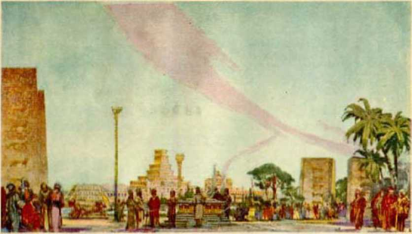Ballon
Kin I ■ ■' MutAk * O'gunizjir cn will; !';.!>*■ ■;-! jji ■ > liu:l.t<
God made with Jesus when he promised to give him the divine nature; and it was made at the Jordan at the time of the baptism of Jesus. Into that covenant others were invited, the condition being a full devotion to the Lord God even unto death. (Luke 22:28-30, Diaglott') Many have agreed to do God’s will; but the mere making of a covenant is not sufficient. The one who is favored by being brought into that covenant must prove himself faithful and true by performing his part of the covenant. Manifestly from the words of the prophet some would prove faithful and some unfaithful. The gathering unto Jehovah takes place when the Lord comes to his temple and puts his professed people to the test. The approved ones are gathered unto the Lord by being brought into the temple condition and builded up as a part of Zion or God’s organization. The faithful are the ones who have the loving-kindness of Jehovah, because they are devoted to him and are objects of his love.
This same text is rendered by Rotherham in this language: ‘ ‘ Gather yourselves unto me, ye my men of lovingkindness, who have solemnised my covenant over sacrifice.” At the appointed time the faithful ones separate themselves from the unfaithful by reason of the wise and faithful course that they take. When the examination is had and the Lord finds them faithful, he sets them aside, or separates them, into a company for his own purposes. (Isa. 43:21) These therefore constitute the remnant. It is against this remnant class that the enemy specially directs his attack, because they are the only ones faithfully representing the Lord on earth; and they freely and joyfully offer themselves in the day of the Lord, and rejoice to do what the Lord gives them to do.—Rev. 12:17; Ps. 110:3.
SECRET PLACE
Jehovah caused his prophet to foretell a secret place for these who were gathered unto the Lord. “He that dwelleth in the secret place of the Most High, shall abide under the shadow of the Almighty/’ (Ps. 91:1) This prophecy could not have its fulfillment until the Lord came to his temple, at least so far as the church on earth is concerned. No one could be in the secret place of the Most High unless that one is a part of the Lord’s organization. When the examination is had and the approved ones are found, the Lord takes them into Jehovah’s organization and there they are safe. If they continue faithful unto the Lord, they shall abide or remain for ever in that place of security. Hence the prophet says: “Because thou hast made the Lord, which is my refuge, even the Most High, thy habitation; there shall no evil befall thee, neither shall any plague come nigh thy dwelling. ’ ’—Ps. 91: 9,10.
To be in the secret place of the Most High means to be within God’s organization with Christ Jesus the Head of Zion. No one could enter that secret place unless he is brought forth as a child of God and anointed with the spirit of Jehovah, proves faithful to his covenant, and is brought into the temple of the Lord and made a part of God’s organization. In this prophecy it is written: “He shall give his angels charge over thee.” (Ps. 91:11) The word “charge” here used means an enjoining upon one or more the care and custody of another. (Zech. 3:7) It is God who does the appointing of the angels, and it follows, therefore, that the angels are a part of God’s organization, and that these who constitute the remnant, and who are brought into the secret place of the Most High, have the special protection which God has provided for them by the good offices of his angels. The Scriptures show that God uses holy angels as his messengers, and that they are a part of his organization; and when the faithful remnant become a part of his organization, they have this special protection. —Luke 1:19; Ps. 34:7.
When Jesus was about to be taken by the mob, Peter smote off the ear of one of the mob. Jesus said to him: “Thinkest thou that I cannot now pray to my Father, and he shall presently give me more than twelve legions of angels?” (Matt. 26:53) Undoubtedly the legions of angels then stood ready to go to the assistance of Jesus and were subject to his command. That the Lord God gives special aid and protection to his faithful remnant, who are brought into his organization, is made certain by the words of the prophet: “He shall call upon me, and I will answer him: I will be with him in trouble; I will deliver him, and honour him.” (Ps. 91:15) There is a special reason for this protection, and this will be considered in a subsequent chapter.
THE STONE
Jehovah commanded that Solomon should build a house or temple in Jerusalem unto the name of the Lord. (1 Ki. 5: 5) The Lord directed the preparation of the material for this house. “And the house, when it was in building, was built of stone made ready before it was brought thither; so that there was neither hammer, nor axe, nor any tool of iron, heard in the house, while it was in building.” (1 Ki. 6:7) The building of Solomon’s temple was a prophetic act. It foretold the building of the spiritual house or temple of God, of which Christ Jesus is Head. (Heb. 3:6) The “spiritual house” of the Lord is built up of living stones. (1 Pet. 2:3-5) God caused his prophet to write: “Therefore thus saith the Lord God, Behold, I lay in Zion for a foundation a stone, a tried stone, a precious corner stone, a sure foundation: he that believeth shall not make haste. Judgment also will I lay to the line, and righteousness to the plummet: and the hail shall sweep away the refuge of lies, and the waters shall overflow the hiding place.” —Isa. 28:16,17.
The fact can not be overlooked that this prophecy refers to the time of judgment in connection with the laying of the “chief corner stone”. The laying of the stone here mentioned by the prophet has to do with God’s organization. What is meant by the stone! The Scriptures frequently speak of Jesus Christ as the King. Those faithful followers who become part of the house or organization of the Lord become also a part of his kingdom or royal family. They are made pillars in the temple of God. The term “kingdom” is sometimes applied to Christ. (Matt. 21:43) Therefore, Scripturally, “The Stone” mentioned by the Prophet Isaiah means God’s anointed King. Sometimes the Scriptures speak of Jesus Christ as the kingdom. (Luke 17: 21) In such instances the kingdom means the Royal One. The apostle quotes the prophecy of Isaiah and definitely identifies Jesus Christ as the Head or chief corner stone. (1 Pet. 2:1-8) The Apostle Paul also quotes from the same prophecy and identifies Jesus as that chief Stone. (Rom. 9: 32,33; Eph. 2:20,22) “The Stone” therefore means God’s anointed King, and the laying of the corner stone means presenting him to God’s professed children as King to rule.
The prophecy (Isa. 28:16) is one that has a double fulfillment. The first or miniature fulfillment took place when Jesus was on earth; a complete fulfillment, later, when he comes to his temple. The Israelites were God’s typical or prophetic people. Jesus was sent to them, and he preached to no one else while on earth. Jesus was anointed as King, and then began to preach concerning the kingdom. At that time, however, the Stone had not been laid. The Jews must have an opportunity to accept him as their King and Jesus must first be tried, because the prophecy says that the Stone was “a tried stone”. During the three and one-half years of his ministry Jesus was put to the severe test or trial, the enemy Satan seeking in every possible way to destroy him. (Matt. 4:1-10) Under the fiery trials he was proven true and faithful to God, and therefore “precious”. In due time Jesus rode into Jerusalem and offered himself to the Israelites as their King. That was the miniature fulfillment of the prophecy.—Matt. 21:1-10.
The official element of the Israelites, made up of the clergy, the politicians and the commercial powers, rejected Jesus as King and sought to turn all others against him. Shortly thereafter Jesus went to the temple and drove out the money-changers, and rebuked these who opposed the kingdom. (Matt. 21:13) The day following, he pronounced the curse upon the fig tree, thereby prophetically declaring that the Jewish nation should no longer prosper but should come to an end. On the same day, while speaking to the ruling element of Israel, he quoted from the prophecy of Psalm 118, saying, “Did ye never read in the scriptures, The stone which the builders rejected, the same is become the head of the corner: this is the Lord’s doing, and it is marvellous in our eyes? Therefore say I unto you, The kingdom of God shall be taken from you, and given to a nation bringing forth the fruits thereof.” (Matt. 21:42,43) There he told them that he had offered himself to them as their King, that they had rejected him, and that their opportunity to be of the kingdom had come to an end.
As Solomon gathered together material for the temple, or the house of the Lord, before he erected it, even so God by Christ Jesus, from Pentecost until his second coming, has gathered material for the spiritual house of the Lord. On the memorable day of Pentecost the faithful disciples of Jesus received the anointing of the holy spirit and were there made prospective members of the house of the Lord. They were there prepared as material for the house and laid aside until the due time for the erection of the temple, even as Paul stated. (2 Tim. 4: 6-8) The period of time from Pentecost until the second coming of the Lord has been used to prepare other living stones to be built up into the house of the Lord. Concerning this it is written: ‘Ye also are living stones built up into the spiritual house.’ (1 Pet. 2:3-5) All the anointed ones of the Lord who shall ever be a part of the royal family of heaven or the kingdom are therefore living stones, prepared like unto Christ Jesus to be placed in the house of the Lord in his due time. The placing thereof is done silently and without attracting the attention of the world, even as the material was placed in Solomon’s temple without sound of tools or confusion.
COMPLETE FULFILMENT
In the year 1914 God placed his anointed King upon his throne and directed him to begin his rule amongst the enemy. (Ps. 2:6; 110:2) Three and one-half years thereafter, to wit, 1918, the Lord came to his temple. At that time he presented himself to his professed people as their King and earth’s rightful Governor. At that time Jesus Christ was also a tried and precious Stone, In the great battle fought in heaven between Christ Jesus and the enemy Satan, Christ Jesus was victorious, therefore tried, true and faithful, and the Conqueror. (Rev. 12:7-10) When he presented himself as King, in the complete fulfillment, these who believed and accepted him rejoiced greatly, and to them he is and ever will be “precious”.
At that time the prophecy was fulfilled in completion so far as the laying of the corner stone is concerned. Then followed the revelation and proclamation of the truth, which the Lord God has used and is using to sweep away the refuge of lies with which Satan has blinded the minds of the people. (Isa. 28:17) In quoting from the prophecy Peter says: “Wherefore also it is contained in the scripture, Behold, I lay in Sion a chief corner stone, elect, precious, and he that believeth on him shall not be confounded.”—1 Pet. 2:6.
God’s anointed King, Christ Jesus, is both the foundation and the chief corner stone. The foundation stone of the building is that which bears up the weight of the building. There comes a time, as the building progresses, that the proper angle or line of the building must be fixed. The chief stone is placed in the building, and to that the plumb line is dropped and every stone must be made to conform to that chief corner stone. As the material of the house of the Lord which Solomon built was prepared in advance and erected without noise of hammer or iron, even so the material for the glorious house of the Lord is prepared and brought together without noise or confusion. The chief corner stone is laid and the other stones of the building are made to conform thereto, because they must be in the image and likeness of the chief corner stone.—Rom. 8:29.
STUMBLING
Jehovah’s prophet, speaking of the same precious Stone, said: “He shall be ... for a stone of stumbling and for a rock of offence to both the houses of Israel.” (Isa. 8:14) There were two parts of the house of Israel, (1) the ruling class in the south part of the country, who claimed to know the law of God, who heard Jesus and had every reason to believe that he was the Messiah; and (2) the common people, more particularly these who resided in the north part of the country. The leaders of Israel drew near to the Lord with their mouths, yet their hearts were far removed from him. It was their duty to teach the people God’s Word of truth, but they did not. The common people had been told to expect a king; and when they heard Jesus they would have made him king by force, had he not prevented them. (John 6:15) When he offered himself as King, the ruling class rejected him, and also nearly all of the common people rejected him. “Both the houses” or parts of Israel stumbled over Christ as the Messiah and King. Only a remnant of Israel believed on the Lord Jesus as the Christ and remained faithful. This was a miniature fulfillment of the prophecy.—Rom. 9: 32, 33; 11: 5.
From Pentecost to the second coming of the Lord the gospel was preached, and many heard and believed. These divided into two houses or companies. The clergy organized a system of religion called the “Christian religion”, and in that system the politicians, military leaders, and the rich have always been “the principal of the flock”. A great many joined themselves to the church but, because they were poor and unlearned, they were kept in the background.
Then in 1878, when the Lord began the work of restoring the fundamental truths to his people, many came away from the denominational systems and came together for the study of the Word of the Lord and to build each other up in the most holy faith. These formed the other spiritual house of Israel. In this house two parts were made manifest: first, the leaders in the church who concluded that by reason of their learning and position in the church they were entitled to more favor and places of honor; the others, these who loved the truth, looked forward to the time when they would be ready to go to heaven and be taken to the Lord. In both branches there have been some who really loved God and have therefore stood the test.
God’s anointed King, the Stone, was laid in completion in 1918 when he came to his temple and offered himself as King. Thereafter the stumbling took place. “Organized Christianity” is called the nominal Christian systems. In 1918 these systems rejected Christ as King and substituted the League of Nations arrangement. They therefore stumbled over the Stone and fell. To these who had come out of the denominational systems, and who had seen and accepted evidences of the Lord’s presence, there came a great test or fiery trial.
Many of these rejected the proof of the Lord’s presence, that he had begun his reign and that he had come to his temple, and they fell away. Those who withstood the test and came through the fiery trial, and were refined, are these who make up the remnant. These became a part of the organization of the Lord. The others are turned aside. Therefore the physical facts show the stumbling of both houses of Israel and a remnant remaining. The test of 1918 is another proof that the Lord came to his temple and was laid as the chief corner stone in completion at that time.
“THAT DAY”
In prophecy the term "in that day” is often used, and has particular reference to the period of time when the Lord is building up Zion. "That day” is the Lord’s day, because it is the time or period beginning when the Lord God placed his King upon his throne and sent him forth to build up Zion. In proof of this, note the words of God’s prophet: "Open to me the gates of righteousness: I will go into them, and I will praise the Lord: this gate of the Lord, into which the righteous shall enter.”—Ps. 118:19,20.
When the Lord Jesus was placed upon his throne (Ps. 2:6) in 1914, the kingdom there began to function, and therefore the way of ingress was opened, as represented by "the gates”, and through these gates into God’s organization the righteous would enter. In this connection the prophet says: "I will praise thee: for thou hast heard me, and art become my salvation,” (Ps. 118:21) This part of the prophecy particularly applies when the Lord brought his approved ones under the robe of righteousness, and gave them the garments of salvation by which they are identified as a part of God’s organization. Then the prophet proceeds:
"The stone which the builders refused is become the head stone of the comer.” (Ps. 118:22) God’s anointed King is presented to the professed people of God, and is rejected by many, but gladly accepted by the remnant. The latter see and appreciate the great truth that the Lord is now in his holy temple, and therefore say: “This is the Lord’s doing; it is marvellous in our eyes. This is the day which the Lord hath made; we will rejoice and be glad in it.’’ (Ps. 118:23,24) By this prophecy, which Jesus quoted and applied to himself, “that day” is definitely and certainly fixed. It is “the day” in which the Lord God begins to work through Christ Jesus to vindicate his name, and therefore it is “the Lord’s day”.—Ps. 110:2-5.
In the examination of prophecy, when the words “in that day” appear in the prophecy the student may fix the time of the beginning of the fulfillment thereof. Having once fixed the time meant by the term “in that day”, he may know that the prophecy could not be fulfilled until after the beginning of “that day” in 1914, so far as the King is concerned, and until after 1918 so far as the faithful associates of the Lord Jesus are concerned. The temple class then begin to realize that there is a fight between the ‘seed of the woman’ and the ‘seed of the serpent’; and having a great desire to be faithful to the Lord and be victorious, with zeal and joy they pray: “Save now, I beseech thee, 0 Lord; 0 Lord, I beseech thee, send now prosperity. Blessed be he that cometh in the name of the Lord: we have blessed you out of the house of the Lord.”—-Ps. 118: 25,26.
THE RULER
God’s prophet not only foretold the place of the birth of Jesus as the Ruler, but fixed the time when his rule would begin and when he would build up Zion and give the remnant a place in God’s organization. “Therefore will he give them up, until the time that she which travaileth hath brought forth; then the remnant of his brethren shall return unto the children of Israel.” (Mic. 5:3) The time is approximately when Zion travails and brings forth the nation of righteousness and it begins to function; and it is then that the remnant are brought into God’s organization.
“And he shall stand and feed in the strength of the Lord, in the majesty of the name of the Lord his God; and they shall abide: for now shall he be great unto the ends of the earth.” (Mic. 5: 4) Jesus Christ, the King and Head of Zion, stands and feeds his people, as stated in the prophecy; and that he does in the name and majesty of Jehovah God. This is in full accord with the prophecy of Jesus when he said: “Blessed are these servants, whom the Lord when he cometh shall find watching: verily I say unto you, that he shall gird himself, and make them to sit down to meat, and will come forth and serve them.”—Luke 12:37.
As the Ruler of the world, as the great Prophet, Priest and King, Christ Jesus stands forth and feeds his household upon the “food convenient” to them by unfolding to them the prophecies, and gives them an appreciation thereof. He spreads a feast for them in the presence of the enemy, and the remnant partake of the food that is graciously provided for them and rejoice. (Ps. 23:5) This food they receive in the name of Jehovah, and give him the glory and honor therefor. This has been particularly fulfilled to the Lord’s people since 1918.
“SEVEN EYES”
Jehovah caused his prophet to write: “In that day shall the branch of the Lord be beautiful and glorious, and the fruit of the earth shall be excellent and comely for them that are escaped of Israel.” (Isa. 4:2) Manifestly this scripture refers to these who have been separated from the unfaithful and who show their faith and devotion to God. Being brought under the robe of righteousness and made members of God’s organization, they are made a part of his “branch” or “servant” class. In corroboration thereof another of God’s prophets wrote: “Behold, I will bring forth my servant the Branch.” (Zech. 3:8) This servant class is composed of Christ Jesus the Head and his ‘ ‘ faithful and wise servant ’ ’ members who are on earth. (Isa. 42:1; Matt. 24:45) “My servant the Branch” is a prophetic statement concerning God’s organization, and has particular reference to the time when the Lord comes to his temple and builds up Zion. Then the prophet says: “For, behold, the stone that I have laid before Joshua: upon one stone shall be seven eyes; behold, I will engrave the graving thereof, saith the Lord of hosts, and I will remove the iniquity of that land in one day. ’ ’—Zech. 3: 8, 9.
The stone here mentioned represents God’s anointed and beloved King; while “Joshua” represents the members of the temple class who have had their filthy garments removed and have been brought under the robe of righteousness, which occurred when the Lord brought them into the temple condition.—Zech. 3: 3-5.
“Seven” is a number symbolic of completeness or perfection, while “eyes” symbolizes wisdom. “Upon one stone shall be seven eyes” represents Christ Jesus the Anointed King as having complete light and wisdom, which shines forth and illuminates these of the temple class. As the prophet describes, the glorious Head of Zion is set before Joshua, which means the members of the temple class, and according to the will of God, Christ Jesus reflects upon them the light of truth. That is the reason why the prophecies are now beginning to unfold and are unfolding since the Lord’s coming to his temple and building up of Zion. The members of the temple class are now assigned to a place in God’s organization; and if they are faithful and remain in the temple condition to the end of their earthly course, they will be given a permanent place in the organization of God to walk among the angels that “stand by’’, thus showing a more exalted position than the angels. “Thus saith the Lord of hosts: If thou wilt walk in my ways, and if thou wilt keep my charge, then thou shalt also judge my house, and shalt also keep my courts; and I will give thee places to walk among these that stand by.”—Zech. 3:7; see also Luke 22:30.
“SHINE”
When Zion is built up, then these of Zion show forth the glory of Jehovah God, and not the glory and honor of men. God caused his prophet to write: “When the Lord shall build up Zion, he shall appear in his glory.” (Ps. 102:16) Many Christians have committed the grievous error- of showing forth the praises of men rather than the praises of Jehovah. The Scriptures are explicit in teaching that the Lord God has called out a people for his name, that such people might show forth his praises. (Acts 15:14; 1 Pet. 2:9,10) Any Christians who will now show forth the praises of men thereby testify that they are not of the organization of God, and that if they ever were of his organization they have been put out. ( Job 32:21,22) “In his temple doth every one speak of his [Jehovah’s] glory.” (Ps. 29:9) It follows, therefore, that they who fail or refuse to speak of the glory of Jehovah, and who magnify men as teachers, are not of the temple class.
Many a professed Christian has removed his teachers “into a comer”. The clergy have done this repeatedly and have caused many others to do likewise. The teachers of the people of God are Jehovah and his beloved Son, The Son always gives honor and glory to the Father. The remnant, now brought into the temple condition and showing forth the praises of Jehovah, have the promise that even theugh they may have tribulation and adversity, no more shall their teachers be removed into a comer, “And theugh the Lord give you the bread of adversity, and the water of affliction, yet shall not thy teachers be removed into a comer any more, but thine eyes shall see thy teachers.” (Isa. 30:20) Those of the temple, then, speak of the glory of God.
In corroboration of this conclusion God’s prophet wrote: “Out of Zion, the perfection of beauty, God hath shined.” (Ps. 50:2) With Zion built up, and the glorious “Branch”, Christ Jesus, the Head thereof, reflecting the light and glory of his Father, Jehovah, and all the members of Zion showing forth the praises of Jehovah, therefore Jehovah shines out of Zion, which is his organization. These show forth the praises of God, and reflect his light, which comes from his organization, that even the people of the world can see much thereof.
LIGHTNING
Jehovah, by his prophet, foretold his people, as members of his organization, “in that day” standing in the temple of the Lord and singing the praises of Jehovah. Then the prophet adds: “He eauseth the vapours to aseend from the ends of the earth; he maketh lightnings for the rain; he bringeth the wind out of his treasuries.” (Ps. 135:1-7) Jeremiah the prophet of God used these same words, and the context shows that they apply “in that day” when the Lord builds up Zion.—Jer. 10:13; 51:16.
Lightning is the discharge of atmospheric electricity and is usually accompanied by a vivid flash of light. Lightning is therefore symbolically used as representing God’s truth illuminated.
All lightnings proceed from Jehovah. “Ask ye of Jehovah rain in the time of the latter rain, even of Jehovah that maketh lightnings; and he will give them showers of rain, to every one grass in the field.” —Zech. 10:1, R. V.
Lightning is usually accompanied by thunder and a downpour of rain. Lightning illuminates and reveals that which was previously obscured by the darkness. Symbolically, God’s lightning illuminates his Word for these who waited upon him, and reveals and exposes that which is opposed to God and his organization. The prophecy therefore shows that its fulfillment would be at a time when God manifests his presence to his people, refreshing them with the truth represented by the rain, and giving them greater light upon his Word, and revealing his purposes toward them, and at the same time exposing the enemy.
Thunder symbolizes the voice of Jehovah. “Hast thou an arm like God ? or canst thou thunder with a voice like him?” (Job 40:9) “The voice of thy thunder was in the heaven.” (Ps. 77:18) “The God of glory thundereth.” (Ps. 29:3) Rain is a symbol of refreshing truth that refreshes and makes glad the heart of the people of God. “And they waited for me as for the rain; and they opened their mouth wide as for the latter rain.” (Job 29:23) “Thou, O God, didst send a plentiful rain, whereby thou didst confirm thine inheritance, when it was weary.” (Ps. 68: 9) “Sing unto the Lord with thanksgiving; sing praise upon the harp unto our God: who covereth the heaven with clouds, who prepareth rain for the earth, who maketh grass to grow upon the mountains.”— Ps. 147:7,8.
These texts show that the truth, and the illumination thereof, comes from Jehovah God. God’s Word is truth. (John 17:17) In prophetic phrase it is therefore shown that God in his own due time and way brings the lightning, thunder and rain, revealing his truth to his people and refreshing them. The time when he begins to reveal a clearer vision of his prophecies by this means is shown to be after the Lord comes to his temple and builds up Zion. “And the temple of God was opened in heaven, . . . and there were lightnings, and voices, and thunderings. ’ ’-Rev. 11:19.
If one sits in the dark during an approaching storm, the flashes of lightning disclose objects that are otherwise obscured by the darkness. One flash will probably reveal the object very dimly, but as other flashes come more rapidly and stronger the object is more clearly disclosed. It is even so with the truth of God’s Word. After the temple was opened and the flashes of light from God came, and therewith downpours of rain representing the truth, then the people of God who are devoted to him had some vision at first, but that vision or understanding continued to increase as the lightning increased with intensity. That is why the truth can be better understood today than in days gone by. It is God's due time for the truth to be understood, especially by the members of his organization. It is the privilege of these of his organization to call the attention of others to the many truths and the prophecies unfolding, that they too may see, take courage and have hope. It is the flashes of lightning from Jehovah that have revealed the great “sign of the Son of man in heaven”, to wit, God’s great organization.
VISION OF HIS ORGANIZATION
Jehovah has always had an organization, and from time immemorial the Logos was the chief officer of Jehovah’s organization. Because of the rebellion of Satan and the resulting fall of man, God made the Logos a man upon earth. At the time of his baptism at the Jordan, there began the “new creation” of God which he will use, especially in dealing with mankind in reconciling the world to himself. Jesus Christ was put to the test and proved faithful and true, and was exalted to the highest place in heaven and again made the Head of God’s organization for ever. And this was in fulfillment of prophecy.—Ps. 110:4; Heb. 7:17.
God organized typical Zion, which was prophetic of the coming of real Zion. With Christ Jesus as Head, he organized the real Zion, which is therefore God’s organization real. The faithful followers of Christ Jesus, built up in Zion and made a part thereof, form that part of God’s organization which will carry out Jehovah’s purposes concerning man. The Lord Jesus, as God’s executive officer, prepares a place for his faithful followers in the organization.
God’s prophet Ezekiel was given a vision, the description of which he records. Ezekiel was a young man, wholly devoted to God, and was used by Jehovah as prophet to write prophecy for the benefit of these “upon whom the ends of the world are come”. In that vision there appeared four living creatures, every one of which had four faces and four wings. “Thus were their faces; and their wings were stretched upward; two wings of every one were joined one to another, and two covered their bodies. And they went every one straight forward: whither the spirit was to go, they went; and they turned not when they went. As for the likeness of the living creatures, their appearance was like burning coals of fire, and like the appearance of lamps; it went up and down among the living creatures; and the fire was bright, and out of the fire went forth lightning. And the living creatures ran and returned as the appearance of a flash of lightning.”—Ezek. 1:11-14.
In the vision Ezekiel saw also four wheels of one likeness: “Now as I beheld the living creatures, behold one wheel upon the earth by the living creatures, with his four faces. The appearance of the wheels and their work was like unto the colour of a beryl: and they four had one likeness: and their appearance and their work was as it were a wheel in the middle of a wheel. When they went, they went upon their four sides; and they turned not when they went. As for their rings, they were so high that they were dreadful; and their rings were full of eyes round about them four. And when the living creatures went, the wheels went by them: and when the living creatures were lifted up from the earth, the wheels were lifted up. Whithersoever the spirit was to go, they went, thither was their spirit to go; and the wheels were lifted up over against them: for the spirit of the living creature was in the wheels. When these went, these went; and when these stood, these stood; and when these were lifted up from the earth, the wheels were lifted up over against them; for the spirit of the living creature was in the wheels. And the likeness of the firmament upon the heads of the living creature was as the colour of the terrible crystal, stretched forth over their heads above. And under the firmament were their wings straight, the one toward the other: every one had two, which covered on this side, and every one had two, which covered on that side, their bodies. And when they went, I heard the noise of their wings, like the noise of great waters, as the voice of the Almighty, the voice of speech, as the noise of an host: when they stood, they let down their wings. And there was a voice from the firmament that was over their heads, when they stood, and had let down their wings. ’ ’—Ezek. 1:15-25.
Then the prophet beheld in the vision a firmament, and above the firmament and above everything animate and inanimate there appeared the likeness of a throne upon which a glorious person sat enshrined in perfect light: “And above the firmament that was over their heads was the likeness of a throne, as the appearance of a sapphire stone; and upon the likeness of the throne was the likeness as the appearance of a man above upon it. And I saw as the colour of amber, as the appearance of fire round about within it, from the appearance of his loins even upward, and from the appearance of his loins even downward, I saw as it were the appearance of fire, and it had brightness round about. As the appearance of the bow that is in the cloud in the day of rain, so was the appearance of the brightness round about. This was the appearance of the likeness of the glory of the Lord. And when I saw it, I fell upon my face, and I heard a voice of one that spake.”—Ezek. 1:26-28.
“Four” is another divine number representing completeness. The vision, therefore, speaks propheti-
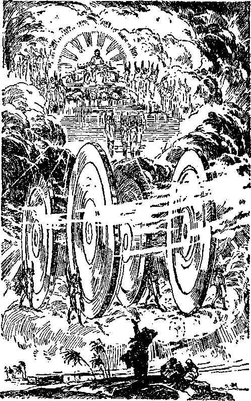Ezekiel's Vision Symbolic of God’s Organization Page 121
[BLANK]
cally of something complete. It is a vision or prophecy to have fulfillment in due time. The living creatures and the inanimate objects, or instruments, appearing in the vision, together give the appearance of an enormous living chariot-like organization extending high into the heavens, and over all of which Jehovah God presides. In that organization, and appearing next to Jehovah, is his great High Priest and executive officer, Christ Jesus. With him in heaven, and forming a part of the great living organization, are these faithful followers of Jesus, including the apostles, who died and for whom the Lord prepared a place in God’s organization, and who had their resurrection and were put in their places when the Lord Jesus came to his temple.
There appear in the organization cherubim, who are executive officers of Jehovah and therefore members of the organization. Then appear legions of pure and mighty angels who have their places in the organization and perform their respective duties. Down on the earth is the remnant, which constitute the “feet of him”, which means the last members of the body of Christ on earth and for whom the Lord has prepared a place to stand and walk about in God’s organization; and these do what the Lord has for them to do, and they are a part of his organization.
The entire organization, represented by the symbols in the vision, revolves within a circlet of divine wisdom and is directed by the perfect wisdom that is from heaven above. The vision, therefore, speaks prophetically of God’s perfect and mighty organization. The prophet says that in the vision “out of the fire went forth lightning”. That must mean that Jehovah sends forth his truth through his organization, and that the lightning represents the illumina-
tion of that truth which comes from Jehovah. The vision is a prophecy; and it is now in course of fulfillment, because the organization is functioning since the Lord came to his temple.
BLESSED ARE THE MEMBERS
Those creatures on the earth who are members of God’s organization are small in number and are surrounded on every side by the enemy and his agencies. They need have no fear, however, and they do not fear. They love Jehovah with a perfect love, and perfect love casteth out fear. (1 John 4:18) For their encouragement the Lord caused his prophet to write: “Unto thee, O Lord, do I lift up my soul. 0 my God, I trust in thee: let me not be ashamed, let not mine enemies triumph over me. ’ ’—Ps. 25; 1, 2.
Because of their complete devotion to the Lord they will never again ‘see their teachers removed into a corner’. (Isa. 30:20) They are fearless because Jehovah has put his hand over them, which is their protection. (Isa. 51:16) Jehovah God has brought them into his house and, they being in “the secret place of the Most High”, he says to them: “Thou shalt not be afraid for the terror by night; nor for the arrow that flieth by day. ’ ’—Ps. 91: 5.
The prophetic vision of Ezekiel, and the fulfillment thereof, shows the faithful saints, such as Paul, now resurrected and assigned to their places in God’s organization in heaven. Those who compose the faithful remnant on earth must have their resurrection change before they can enter a like glorious place in the invisible part of God’s organization. That change comes about through death, because these are in the covenant by sacrifice. As long as they are faithful these have no fear of death, because Jesus uttered a prophecy that has its fulfillment from and after the time that the Lord builds up Zion, saying, “Blessed are the dead which die in the Lord from henceforth: Yea, saith the spirit, that they may rest from their labours, and their works do follow them. ’ ’—Rev. 14:13.
Such faithful ones are in the Lord and in the earthly part of God’s organization; and, there continuing faithful until the time of their resurrection, their change will come “in a moment, in the twinkling of an eye”. To such the Lord Jesus now says: “Be thou faithful unto death, and I will give thee a crown of life.” (Rev. 2:10) Blessed, therefore, is the man who today has the testimony of Jesus Christ that he is of God’s organization, and who appreciates the great privilege of performing the part assigned to him in that organization.
Satan’s Organization
JEHOVAH’S great prophet foretold another sign in heaven that would appear unto these of the temple class. “And there appeared another wonder in heaven; and behold a great red dragon, having seven heads and ten horns, and seven crowns upon his heads. And his tail drew the third part of the stars of heaven, and did cast them to the earth: and the dragon stood before the woman which was ready to be delivered, for to devour her child as soon as it was born.” (Rev. 12:3,4) This scripture is also a prophecy, and it is apparent that its fulfillment takes place approximately at the same time that the prophecy relating to the woman giving birth to the man child is fulfillled, as stated in the scripture. If that conclusion is correct, we should be able to find some facts showing its fulfillment.
The prophecy discloses a great red dragon ready to devour the man child of the woman as soon as it is born. Dragon is one of the names God gave the Devil. It refers to Satan the enemy and all the wicked agencies which he employs. Red, like unto fire, symbolizes that which is destructive. The meaning of the word ‘ ‘ dragon ’ ’ is that which devours. ‘ ‘ Red dragon ’ ’ therefore represents the devilish and extremely wicked organization moving to devour and destroy Zion and the man child, which is the new nation or government that shall rule the world in righteousness.
Therefore the conclusion is that the “great red dragon” in the prophecy represents Satan’s organization that is opposed to God’s organization. There is 124 both a visible and an invisible part of Satan’s organization, because Satan is a spirit being invisible to human eyes. The number seven is a symbol of that Which is complete and invisible, while the number ten symbolizes that which is complete and visible to man. The two numbers, being divinely symbolic numbers, therefore represent the complete organization of Satan, both invisible and visible. The “seven crowns” represent the complete power and authority that is exercised over his organization, and which is invisible to human eyes, and also that the controlling power of the great organization of Satan is invisible to man. “Ten horns” is a symbol of complete dominating power over all the nations of the earth. Jesus told his disciples that Satan the Devil is the invisible ruler of the world and is opposed to him. (John 14:30) Paul gave similar testimony.—2 Cor. 4:3,4.
That Satan’s organization invisible is divided into and operated by departments under subrulers, is quite reasonable; and the conclusion is supported by the Scriptures. We know that is true with reference to the visible part, and the visible always reflects that rule by which the invisible is governed. In addition to this, the prophet of God mentions the “prince of Persia” and the “prince of Grecia” that opposed the angel of the Lord and therefore represented the Devil. (Dan. 10:13,20) This would indicate that the Devil has appointed an acting prince over each nation or earthly division of his organization. Paul tells of these “rulers of the darkness”, and that they war against the members of God’s organization.—Eph. 6:12.
Many have been deceived concerning Satan and made to believe that he does not amount to much, and that he was bound long ago, and that he has no organization. Many have also been induced to believe that Satan has horns and hoofs, and carries an asbestos poker with which he stirs the fires of his inferno and tortures the creatures who fall into his clutches. Satan himself is authority for all such fantastic lies which his agencies use to confuse the people and to blind them to his real course of action.
The Scriptural proof is that Satan is a subtle, wily, elusive, fraudulent, hypocritical and very deceptive enemy of righteousness. He represents himself as an angel of light, and covers his deadly lies with a little truth, that he may deceive the unsuspecting. (2 Cor. 11:14; 2 Thess. 2:9) So subtle are his methods that he has induced many good Christian people to believe that he has nothing to do with the present world governments, and comparatively few have ever seen and appreciated the fact that he has a powerful organization. Therefore it appears to be both important and necessary to set out here the proof concerning his organization, its inception and development, and its purpose.
BABYLON
That which moved Lucifer to rebel and become Satan, the enemy of God, was covetousness. He desired to have an exalted throne above others of creation, that they might bow and worship him even as creation bows before the throne of Jehovah and worships him. He set about to complete his organization, both among the spirit creatures and among human creatures. On earth he organized men into religious systems. Then he organized the commercial power and supported it with a military arrangement, and then a political organization. He saturated the entire organization with a religion. The leaders in the commercial and political parts of his organization he made the principal ones of the flock of the religious part of the organization, and thereby formed a combination of all three parts. Babylon well represents the religious, Assyria the political, and Egypt the commercial factor of his powerful organization. In the world powers that succeeded these three named above, the three elements of commercial, ecclesiastical and political are always prominent and appear as the governing factors.
Babylon was founded by Nimrod, who was the son of Cush, who was the son of Ham. “And the beginning of his kingdom was Babel, and Erech, and Aecad, and Calneh, in the land of Shinar.” (Gen. 10:10, 6-9) The name Nimrod means “rebellious, or him that rules”. (Gruden’s) Nimrod left the land that had been assigned to his father Ham, and invaded the land assigned to Shem in the northern regions, and settled in the land of Shinar. In this he manifested the covetous and rebellious spirit of Satan. It seems fitting that, when the time came for God to send faithful men into the promised land of Canaan, he called Abraham and brought him away from the country controlled by Satan through his agencies. He took Abraham out of the very birthplace of Satan’s organization,
Babylon or Babel is, according to the native etymology of the word, spelled Bab-il, and means “the gate of God”. The Hebrew word Babel means “confusion”. “Therefore is the name of it called Babel [margin, confusion]; because the Lord did there confound the language of all the earth: and from thence did the Lord scatter them abroad upon the face of all the earth.” (Gen. 11:9) It is also called Sheshach (Shishaki), the name of the moon god. The city of Babel was built by Nimrod (the rebellious) for the
129 manifest purpose of making a name for others than Jehovah the true God. (Gen. 11:4) The fact that the city was given the name Bab-il (Babylon) is proof that it was built in defiance of Jehovah God and was the enemy organization from its very inception. It was thus named in derision and in defiance of Almighty God.
The Scriptures show that the deity of the rebellious city was “Bel”. (Isa. 46:1; Jer. 50:2; 51:44) authorities, such as Dr. Strong, state that “Bel” is a contraction from the name “Baal”, which means master, husband, god or lord. Jehovah is the Lord God and “husband” of his people and his organization. (Isa. 54:5) Satan, otherwise called Bel or Baal, was and is the husband and lord of his organization on earth, set up with Nimrod as its visible head. Nimrod became the husband of his own mother. Therefore Satan created and married Babylon his organization. All the acquisition by Satan was the result of his covetousness. Jehovah, through his prophet, says: “0 thou that dwellest upon many waters [peoples and nations] , abundant in treasures, thine end is come, and the measure of thy covetousness.” (Jer. 51:13) Jehovah named Satan the Dragon, which means de-vourer or one who swallows up; and thus Jehovah identifies Bel (Baal) as Babylon’s god, and the city or organization of Babylon as the Devil’s organization which devours others.—Jer. 51: 34.
Baal-worship was the established Devil religion. The devotees worshiped the Devil even as he had designed that they should do. (1 Ki. 16: 31-33; 18:1940) “Religion” was the most prominent part of the organization of the city of Babylon. The manifest purpose was to get the minds of the people turned
away from Jehovah and to induce them to worship the Devil and his creation.
According to one authority, the name Bel means “the confounder”, and he suggests that Babylonians worshiped Bel, and not Jehovah, as the confounder of the language. The confounding of the language or speech at Shinar resulted from the wrong-doing of Satan and his agencies; and therefore Satan is properly called a confounder. Satan has confounded the religious belief and practices, and has blinded the people to the truth. God speaks through his prophet against the Devil and his organization, and commands his faithful witnesses thus: “Declare ye among the nations, and publish, and set up a standard; publish, and conceal not: say, Babylon is taken, Bel is confounded, Merodaeh is broken in pieces.”—Jer. 50:2.
Nimrod, the first king of that wicked city, was a giant and a great hunter of wild beasts, a great campaigner and acquirer of property by seizure, and exalted himself before the people as greater than Jehovah God. He shows forth, therefore, the propensities of the religionists, the profiteer or militarist, and the politician. It is manifest, however, that the chief purpose of the organization, put foremost at that time, was to establish the Devil-worship and bring reproach upon the name of Jehovah God.
In the course of time Nebuchadnezzar succeeded Nimrod as the ruler of Babylon. He also was a strong sponsor of the Devil religion. ‘ ‘ For the king of Babylon stood at the parting of the way, at the head of the two ways, to use divination: he made his arrows bright, he consulted with images, he looked in the liver.” (Ezek. 21:21) “Nebuchadnezzar the king made an image of gold, whose height was three-score cubits, and the breadth thereof six cubits; he set it
up in the plain of Dura, in the province of Babylon.” (Dan. 3:1) He was a wicked, tyrannical and cruel ruler. (Dan. 4:27) Jehovah’s prophet speaks of Nebuchadnezzar the king of Babylon as a dragon: “He hath swallowed me up like a dragon.” (Jer. 51:34) Therefore the Lord, through his prophet, identifies the king of Babylon as the Devil’s representative and gives him one of the Devil’s names. The same prophet also calls the king of Babylon “the king of Sheshach”.—Jer. 25:26.
The Prophet Isaiah definitely identifies Lucifer the Devil as the ruler of Babylon, and supports the identification God gave through Jeremiah: “Thou shalt take up this proverb against the king of Babylon, and say, How hath the oppressor ceased! the golden city ceased! How art thou fallen from heaven, O Lucifer, son of the morning! how art thou cut down to the ground, which didst weaken the nations! For thou hast said in thine heart, I will ascend into heaven, I will exalt my throne above the stars of God: I will sit also upon the mount of the congregation, in the sides of the north.” (Isa. 14:4,12,13) This agrees with the fact that Nimrod established his organization in Babylon in the north instead of in the south; therefore that in forming that organization he invaded the land settled by others.
The evidence is strong and convincing that the king, ruler, god and husband of Babylon is Satan, that old Serpent, the Devil. Babylon is thereby Satan’s wife, and hence is symbolized by an evil and immoral woman. It has been said that Babylon pictured ‘the church nominal which was originally the gateway to glory and to God’, but which fell and “became a gateway to error and confusion and a miserable mixture composed chiefly of tares and hypocrites”. The
U{ i-Ml'iioj |«1 rplJ» U3I)u;iuu3jQ «; 1*SIPHOS
HEI B**d ’dX*3
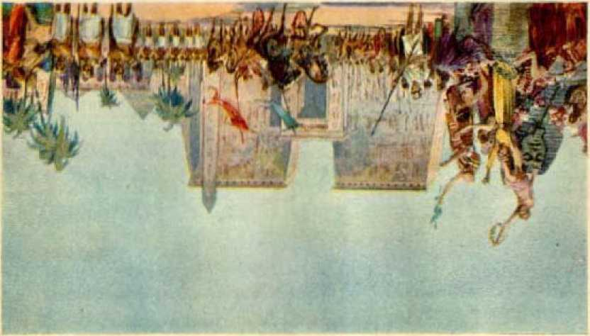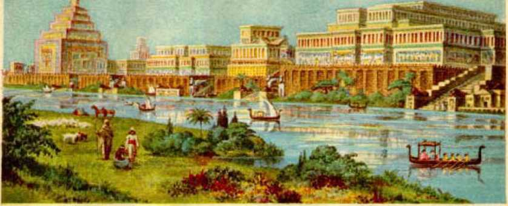iriiiTi
Nineveh Capital of Aaayris Page 145
July 1930 Present Part of Satan's Organization with P<4 tidao* in Column nd
Scriptures do not support that conclusion. Babylon was never the nominal organization of God or of Christ. Babylon was never on the side of the Lord God, but was organized in defiance of Jehovah God and devoted to the Devil religion, and therefore could not fall away from God. Therefore it could not mean an apostate religion; but it does mean that which it is and always has been, a devilish religion and devilish organization. The fact that religions other than the so-called "Christian religion” have fallen to Satan’s organization is entirely a different matter.
Jehovah called it Babel, or "confusion”, from the time it was founded on the plains of Shinar; and therefore Babylon could not represent an organization that was once the gateway to glory. He called it confusion, because it was the place where he confused the tongues or speech of the people. Babylon worshiped the Devil from the very beginning. The facts show beyond all doubt that Babylon (Bab-il) is the organization founded by Jehovah’s arch-enemy, Satan the Devil. That name has from the very beginning stood for the Devil’s organization, and still stands therefor. Manifestly it is only in irony and derision that God addresses it as a virgin.—Isa. 47:1.
The Scriptures show that the Devil’s organization is of two parts, to wit, (1) that which is invisible to man and which really controls, and hence controls the entire organization ■ and (2) that part which is visible to man. The organization is designated "this present evil world”, over which Satan is the god. (Gal. 1:4; 2 Cor. 4: 3,4) The invisible part is called “heaven”, because invisible; while the visible part is called “earth”, because visible to man. (2 Pet. 3:7) “The burden of Babylon, which Isaiah the son of Amoz did see. ... I will punish the world for their evil, and the wicked for their iniquity; and I will cause the arroganey of the proud to cease, and will lay low the haughtiness of the terrible. . . . Therefore I will shake the heavens, and the earth shall remove out of her place, in the wrath of the Lord of hosts, and in the day of his fierce anger. ’ ’—Isa. 13:1-13; Rev. 17:3-5,18.
The construction of the ancient city of Babylon represented both her heavenly and her earthly divisions and position. Out from the well-spring in Eden flowed the River Euphrates, which well represents the human race after the expulsion of man from Eden. The city of Babylon was built on both sides of that river, which flowed from north to south, and the river therefore divided the city into two parts. In one part of the city was built the temple, and in the other part of the city the palace; and the two parts were connected by a beautiful bridge and also by an underground passage. The two divisions of the city hemmed in the river, and the waters of the river passed between the two divisions. The river therefore represents the human race, hemmed in between the invisible and visible parts of the Devil’s organization over which he rules. He rules there, and his organization rests upon and draws support from the people. Babylon is described in the Scriptures as a “whore”, and is referred to by the Lord’s prophet as ‘sitting upon the multitudes, peoples and nations’.-Rev. 17:15.
MORAL STATUS
The city of Babylon, the Devil’s organization, is in the Scriptures charged with and shown as guilty of fornication, idolatry, sorcery, murder, and many other crimes. (Rev. 17:5,6) Babylon the great has “made all nations drink of the wine of the wrath of her fornication”. (Rev. 14: 8) “For all nations have drunk of the wine of the wrath of her fornication, and the kings of the earth have committed fornication with her, and the merchants of the earth are waxed rich through the abundance of her delicacies.” (Rev. 18:3) “Stand now with thine enchantments, and with the multitude of thy sorceries, wherein thou hast laboured from thy youth; if so be thou shalt be able to profit, if so be thou mayest prevail. Thou art wearied in the multitude of thy counsels. Let now the astrologers, the stargazers, the monthly prognosticators, stand up and save thee from these things that shall come upon thee.” (Isa. 47:12,13) “For thy merchants were the great men of the earth; for by; thy sorceries were all nations deceived.” (Rev. 18: 23) “For it is the land of graven images; and they are mad upon their idols.” (Jer. 50: 38) “The nations have drunken of her wine; therefore the nations are mad.” (Jer. 51:7) “The great whore, which did corrupt the earth with her fornication. ’ ’—Rev. 19:2.
The Scriptures associate wine with the harlot. Evidently this is not the wine that the clergy and the advocates of prohibition pretend to be against. The Lord defines what it is when he says: “They also have erred through wine, and through strong drink arc out of the way. ” (Isa. 28: 7) “ They are drunken, but not with [natural] wine; they stagger, but not with strong drink.” (Isa. 29:9) It is manifest that they are intoxicated with the wicked things which the Devil has promulgated and caused to be taught. It is the wine of the harlot and is a counterfeit of the wine of God’s true organization. “Wisdom . . . hath killed her beasts, she hath mingled her wine; she hath also furnished her table.”—Prov. 9; 1,2.
It lias been suggested that “the wine of her fornication” (Rev. 17:2) means the union of the nominal church with the states of this world, thereby manifesting unfaithfulness toward “the Bridegroom”, Jesus. This could hardly be true. Neither literal nor symbolic Babylon was ever espoused to the Bridegroom Jesus, and the church could not therefore be guilty of fornication in this sense. Babylon was espoused and married to the Devil, and the doctrines that she has put forth have caused others to commit fornication and adultery with her. Earth’s kings have committed fornication with her. Babylon, being the product of the Devil’s power, could not be represented otherwise than as an unchaste or immoral woman, representing an immoral organization in the sight of God; and hence the ruling factors of the earth, uniting with her and adopting her religion, would be guilty of uncleanness; and any system uniting with her or being seduced by her, and that had once belonged to the Lord’s organization, would be guilty of fornication and adultery. The worship of idols, especially on the part of these who had once been in a covenant with Jehovah, brands them with adultery and uncleanness, all of which Babylon is guilty of starting or originating.
“Moreover he [Jehoram, king of Judah] made high places in the mountains of Judah, and caused the inhabitants of Jerusalem to commit fornication, and compelled Judah thereto,” (2 Chron. 21:11) The inhabitants of Jerusalem were God’s covenant people, but when they adopted the Devil religion they committed fornication with the Devil’s organization, to wit, Babylon. The same rule applies to spiritual Israel. Those who, having once been God’s covenant people, thereafter became contaminated by the wine or false doctrines of the Devil and adopted the Devil religion, committed fornication with Babylon the mother of harlots, and her name attaches to them by reason of their being adopted into her family.
Jehovah brands Babylon as “the mother of harlots and abominations of the earth”. She is the mother of everything that is abominable in God’s sight. She is the mother of ‘the abomination that maketh desolate, spoken of by Daniel the prophet’. (Matt. 24:15) The name Babylon applies primarily to Satan’s organization, and attaches to all the seed which that organization produces and which represents that evil organization.
The primary purpose of Satan is to reproach Jehovah God, turn the people away from him, and compel worship of himself. Knowing that God’s creatures who love him would sing his praises and worship Him, Satan brought into being his organization, and at the very beginning thereof made religion the most prominent part; and then he makes the commercial and the political or ruling powers a part of his organization, and they adopt his devilish religion. It is the religious element of Satan’s organization that he uses chiefly to blind the people concerning Jehovah God, and therefore the religious element was made the most prominent in the beginning and is the most reprehensible before God.
Until iniquity was found in Lucifer he was a part of God’s organization. By reason of his covetous desire to have the worship of creation he produced a wicked religion. By the multitude of his merchandise, or the commercial factor, he has produced violence; and by his selfish desire to rule creation he produced the political or ruling elements, all of which appear in his organization.—Ezek. 28:14-18.
It was unfaithfulness on Lucifer’s part that caused him to rebel against God and to form the wicked organization and become the husband thereof. Therefore Babylon is represented as an unchaste woman and means an immoral organization, and hence is the mother of all "harlot” systems. The visible part of Satan’s organization, to wit, the earthly governments, is represented under the symbol of "beast”, because harsh, crud, and oppressive. It is the “beast” that carries or bears up the organization of Satan; and she, the organization of Satan, rules over and sits upon the peoples and nations of the earth. (Rev. 17:3,5,15,18) The prophet of God calls the Devil’s organization “the lady of kingdoms”. (Isa. 47:5) This is manifestly an ironical statement. The Scriptural proof is conclusive, therefore, that Babylon was organized by the Devil and that it represents the Devil’s complete organization.
EGYPT
Although Babylon was first organized, Egypt was the first nation of great and dominating strength. The predominating factor of Egypt was her military power, which stands for the commercial factor of the government. The real reason for building up the military power is to acquire or hold property. Almost all wars have been prompted by a covetous desire to acquire the property of others, and have been promoted by the commercial factors of the rulers of the nations. The wars which Jehovah commanded his chosen people to fight were fought either for the execution of God’s judgment against evil-doers or to maintain his good name, and were always carried on for good. God is the Giver of life, and he has the perfect right to take it away when he sees good. Not so with others. The Devil’s organization has carried on war for a selfish and unrighteous purpose, and has builded great military force for that purpose.
Egypt was so called by the Greeks and Romans. The Hebrew name is Mizraim, which means “the en-closer or the embanker of the sea’’, probably referring to the fact that the first Pharaoh turned the Nile into its course by embankments. This is supported by the words ascribed to Satan: “My river is mine own, and I have made it for myself,’’ (Ezek. 29:3) The name is derived from the Hebrew word Mazor (Mdh-tsohr), and, according to Dr. Strong, means “something hemming in, a mound, a siege, and distress”. Sometimes the Hebrew word Mazor is used as the name for Egypt. See Isaiah 19:6; 37:25; Micah 7:12, R. V., margin.
“Rahab,” which means proud, is the ecclesiastical name applied to Egypt, doubtless because of her pride, arrogance and boastfulness against God. (Ps. 87:4; 89:10) “The land of Ham” is another designation, probably because of one of Ham’s sons whose name was Mizraim.—Gen. 10: 6.
In ancient times the land of Egypt was very fertile, especially along the valley of the Nile. Its productivity depended on the regular and annual overflow of the Nile River. The people worshiped the river, evidently because Satan used this means to turn the people away from the true God and make them believe that their gods, of which he was chief, brought the blessings to them through the River Nile. The Scriptures note the absence of rain in Egypt. (Deut. 11: 10,11) Hail, lightning and thunder were probably unknown to the Egyptians until the Lord sent the plagues at the time he sent Moses there. “And Moses stretched forth his rod toward heaven; and the Lord sent thunder and hail, and the fire ran along upon the ground; and the Lord rained hail upon the land of Egypt. So there was hail, . . . very grievous, such as there was none like it in all the land of Egypt since it became a nation.” (Ex. 9:23,24) The extraordinary phenomenon of the fire, which manifestly was lightning, running along upon the ground, called the attention of the people to the fact that Jehovah was the Mighty God, and made for him a name amongst the people.
The natives of Egypt were afflicted with skin diseases, denoting a bad condition of the blood; thus suggesting a bad condition because of sin, as the life is in the blood. God told his people, the Israelites, that if they would be diligent and hearken unto his voice and do right, then he would put none of these diseases upon them which were upon Egypt. (Ex. 15:26; Deut. 7:15) Disobedience to God would bring upon Israel such loathsome diseases as afflicted the Egyptians. (Deut. 28: 27, 60) Thus God would teach his people that only he has the power to remove sin and affliction.
The Egyptians were noted for the use of the horse. "And Solomon had horses brought out of Egypt. . . . And a chariot came up and went out of Egypt for six hundred shekels of silver, and an horse for an hundred and fifty.” (1 Ki. 10:28,29; see also Ezek. 17:15) The primary use of horses was for military purposes. The chariots were drawn by horses, and the chariots were used for war purposes. This arrangement made Egypt a great military power that dominated all the other nations. Because of the misuse of the horse and because it destroys trust in Jehovah, he, the Lord, does not speak favorably concerning the horse: "Woe to them that go down to Egypt for help; and stay on horses, and trust in chariots, because they are many; and in horsemen, because they are very strong; but they look not unto the Holy One of Israel, neither seek the Lord!”— Isa. 31:1-3.
The displeasure of God concerning the use of horses is shown when he directed Josiah to remove them: “And he took away the horses that the kings of Judah had given to the sun, at the entering in of the house of the Lord, by the chamber of Nathan-melech the chamberlain, which was in the suburbs, and burned the chariots of the sun with fire. ’ ’-2 Ki. 23:11.
The enemies of Israel came with horses and chariots of war to fight against the people of God: “And the Lord said unto Joshua, Be not afraid because of them; for to morrow about this time will I deliver them up all slain before Israel: theu shalt hough their horses, and burn their chariots with fire.” (Josh. 11:6) To hough means to hamstring a horse and make it useless. David did the same thing with the horses of the Syrians.—2 Sam. 8:4.
It does not appear that the word “horse” can properly apply to doctrines; but, in particular, the horse does symbolize war, war policies, and war propaganda, and therefore fitly represents a military organization.
A further proof that Egypt was a military power is that the Egyptians hated the peaceful occupation of the herders of sheep. “For every shepherd is an abomination unto the Egyptians.” (Gen. 46:34) It is well known that men or organizations that have used horses and military equipment have little use for the peaceable occupation of a shepherd; and this was first manifested by the Egyptians, and the Lord has shown it in his Word.
The Egyptians worshiped the Devil and practised the Devil religion. The magicians of Egypt were scribes or horoseopists who drew magical lines and circles, and claimed to state thereby what their invisible gods had determined concerning a person. The commercial or military powers were subject to and practised the Devil religion, as did also the political or ruling power. The rulers were against Jehovah and oppressed the people. With indignation the king said to Moses: “Who is the Lord [Jehovah], that I should obey his voice ? ’ ’—Ex. 5: 2.
The religion of Egypt, used of the Devil and opposed to Jehovah, is shown by the following Scriptural proofs: “Against all the gods of Egypt I will execute judgment: I am the Lord [Jehovah].” (Ex. 12:12) “And it came to pass in the morning that his spirit was troubled: and he sent and called for all the magicians of Egypt, and all the wise men thereof: and Pharaoh told them his dream; but there was none that could interpret them unto Pharaoh.” (Gen. 41: 8) “And the spirit of Egypt shall fail in the midst thereof; and I will destroy the counsel thereof; and they shall seek to the idols, and to the charmers, and to them that have familiar spirits, and to the wizards.” (Isa. 19:3) “He shall break also the images of Beth-shemesh, that is in the land of Egypt; and the houses of the gods of the Egyptians shall he bum with fire. ’ ’—Jer. 43:13.
The ruling factors of Egypt therefore comprised the king and princes, the religious professors, the militarists and the building engineers. “The princes also of Pharaoh saw her [Sarah] and commended her before Pharaoh.” This shows that the king had his politicians looking after his personal interests. Concerning Joseph who was in Egypt it is written: “The king sent and loosed him; even the ruler of the people, and let him go free. He made him lord of his house, and ruler of all his substance; to bind his princes at his pleasure, and teach his senators wisdom. ’ ’—Ps. 105:20-22.
Special provision was made in Egypt for the mongers of religion. “Only the land of the priests bought he not; for the priests had a portion assigned them of Pharaoh, and did eat their portion which Pharaoh gave them: wherefore they sold not their lands.” (Gen. 47:22) In the Devil’s organization he had seen to it that the religionists were particularly taken care of and provided for. The Devil has always kept religion prominent and to the fore.
Concerning the military forces it is written that Pharaoh had a great host of chariots, and horses to draw these chariots, and horsemen. (Ex. 15:4; 14: 7, 9) “Harness the horses; and get up, ye horsemen, and stand forth with your helmets; furbish the spears, and put on the brigandines. Egypt riseth up like a flood [of the Nile].....Come up, ye horses; and
rage, ye chariots; and let the mighty men come forth; the Ethiopians and the Libyans, that handle the shield; and the Lydians, that handle and bend the bow.” (Jer. 46: 4, 8, 9) The Ethiopians and Libyans and Lydians were the allies of Egypt, and their place of residence was on the border of Egypt.
As proof that they were great builders and engineers, it is written: “Therefore they did set over them taskmasters, to afflict them with their burdens. And they built for Pharaoh treasure cities, Pithem and Eaamses.” (Ex. 1:11) It is in the land of Egypt that great pyramids and temples have been builded, and without a doubt they were built at the instance of Satan. These combined ruling factors of Egypt were haughty, domineering, blood-guilty, oppressive, presumptuous and blasphemous.—Job 21:14,15; Isa. 19:11.
The proof is conclusive that Egypt was Satan’s organization and that the dominating element in the visible part of that organization was the commercial power, which created and operated the military for its selfish purposes and caused the politicians to do the bidding of that element. The religious element of the nation was that of the Devil, and wielded an uncanny influence over the other ruling factors. Here again the manifest purpose was to turn the people away from God and to corrupt them and keep them in subjection to the Devil, who was particularly represented in Egypt by Pharaoh the king. To further strengthen the proof, God in his Word definitely says that Egypt is the Dragon or Devil organization, created and organized by Satan who claims the earth and everything therein for his own selfish purposes: “Thus saith the Lord God, Behold, I am against thee, Pharaoh [the Devil] king of Egypt, the great dragon that lieth in the midst of his rivers, which hath said, My river is mine own, and I have made it for myself” [let Jehovah keep his hands off],—Ezek. 29:3.
The common people of Egypt were kept in subjection to the rulers, even as Satan keeps the peoples of earth in subjection to himself by and through the rulers. The common people were not so harsh to the Israelites as were the rulers. It is even so today; the common people are not harsh against God’s people, as are the ruling factors. The financial lords today claim the natural resources of the earth which God intended for the people. They also advance the opinion that they properly rule and control the people, and that by divine right. Egypt was a house of bondage to God’s people, Israel; and so the Devil’s organization is holding the peoples of earth in bondage.
ASSYRIA
Assyria was also an organization of the Devil. Three elements or governing factors, to wit, religious, commercial and political, appeared therein, but that which is made the foremost is a political religion, or a political rule, or a form of religion that is used by the politicians. By that is meant that the politicians who controlled the people accepted the religion as a matter of expediency.
The prophetic books of Jonah and Nahum are devoted exclusively to Assyria and Nineveh, its capital city, and strikingly foretell a state of the Devil’s organization in which a political class will be in the saddle and adopt and follow a false religion because it is theught expedient in carrying out the political purposes. In this the political factor is strongly and consistently supported by the commercial power, the “giants”, which together with the politicians are made the principal ones of the flock of the religious system. The prophetic record concerning the Assyrian world power seems to clearly foretell a condition of the Devil’s organization existing during the period of preparation and immediately before the great conflict between Satan’s organization and God’s organization. Otherwise stated, it foretold a condition existing on earth when approaching the time of the establishment of God’s kingdom, which is the present time.
Nimrod was Satan’s chief man on earth. He had built Babylon and three other cities in the land of Shinar, and became a great campaigner against the peacefully-disposed Shemites who lived in Mesopotamia. Asshur was one of the sons of Shem, and evidently he and his offspring settled that part of the valley of Mesopotamia that lies north of Babylon. Nineveh was the capital city of Assyria and, according to the Common or Authorized Version of the Bible, it was built by Asshur. (See Genesis 10:11.) The accuracy of that translation is disputed by many who claim, that it was Nimrod who built Nineveh, the capital city. There is much force to their contention. Genesis 10:10 tells of the beginning of Nimrod’s exploits. From verses six to twenty the record pertains to the sons of Ham, of which Nimrod was the most prominent. It does not seem reasonable that in the very midst of the description of that family it would break off the continuity of the description by interjecting the statement concerning the sons of Shem, who are mentioned in the same chapter, beginning with the twenty-second verse.
One well-recognized authority on translation (Hislop) contends with much force that the proper translation should read thus: “And he [Nimrod], being strengthened [after he had built Babylon, and Erech, and Aecad, and Calneh, in the land of Shinar • and had become a ‘mighty’ man in the earth] went forth out of that land [Shinar], and builded Nineveh, and the city Rehoboth, and Calah.” The marginal rendering of the Common or Authorized Version supports that conclusion, and it reads: “And he [Nimrod] went out, into Assyria.” The weight of authority, therefore, is that Nimrod extended his domain and increased his might in the earth by invading Assyria and bringing Assyria into subjection to him, and that he built Nineveh as its capital city.
One of the prophets of the Lord calls the land of Assyria the land of Nimrod. (Mie. 5:6) Being the capital city, Nineveh was the official residence of the ruler who is called “the king of Nineveh”. (Jonah 3:6) It was the royal city of the second world power, and Babylon became the capital city of the third world power. These facts show that Assyria, and its chief city Nineveh, was an organization of Satan the Devil.
Nineveh was a city or organization of great importance, and is called “Nineveh, that great city”; and, again, the prophet says, “Now Nineveh was an exceeding great city of three days’ journey.” (Jonah 1:2; 3:3) The Hebrew day’s journey being approximately twenty miles would therefore make the city approximately sixty miles in circumference. The prophet says that there were more than sixscore thousand persons (120,000) that could not discern between the right hand and the left hand. This manifestly refers to infants, and would warrant the conclusion that the total population of the city was between 600,000 and a million.
A lion is used in the Scriptures to symbolize a ruler. (Gen. 49: 9,10) Fierce lions would therefore symbolize harsh, cruel and oppressive rulers. Such rulers or political instruments operate selfishly at the behest of the mighty commercial power, and their evil deeds are screened by the hypocritical religionists. Describing the capital city of Nineveh and its rulers, the prophet says: “Where is the den of the lions, and the feeding-place of the young lions, where the lion and the lioness walked, the lion’s whelp, and none made them afraid? The lion did tear in pieces enough for his whelps, and strangled for his lionesses, and filled his caves with prey, and his dens with ravin.” —Nah. 2:11,12, v. 7
In prophetic phrase is here described a company of cruel political rulers, who exploited the people to feed themselves and their allies in the Devil’s organization. Manifestly this record of the prophet is made that the predominating element of that part of Satan’s organization could be disclosed. God then expressly declared that he is against that organization. This is the best proof that the organization mentioned there is that of Satan the Devil.—Nah. 2:13.
The king boasted of his political power and that he had a tremendous political organization: “For he saith, Are not my princes altogether [all of them] kings [politicians]?” (Isa. 10:8) Nineveh was permeated with and debauched by the Devil religion. Here is proof that the “whore” is the Devil’s organization, and particularly the religious part thereof, which the Devil uses to seduce and turn the people away from Jehovah and to cause both rulers and people to walk on in darkness and evil: “Because of the multitude of the whoredoms of the well-favoured harlot [Nineveh], the mistress of witchcrafts, that selleth nations through her whoredoms, and families through her witchcrafts. ’ ’—Nah. 3:4.
The Devil, by appealing to the superstitions of the political and commercial giants and rulers of the land, seduces them and causes the nation to be under his (Satan’s) control. At the present day there is much evidence showing that both politicians and big financiers consult spirit mediums and thus receive information from the Devil. While the politicians in Nineveh were in the van of the organization, the commercial factor was exercising its part. The organization of Assyria, and particularly the capital city, Nineveh, was noted for its commercial wealth. “Take ye the spoil of silver, take the spoil of gold; for there is none end of the store and glory out of all the pleasant furniture.” (Nah. 2:9) “Thou hast multiplied thy merchants above the stars of heaven: the cankerworm spoileth, and fleeth away.” (Nah. 3:16) Let the reader now have in mind the present commercialmilitary powers of the world and see how well the prophet long ago described the same.
Assyria, and its capital city, was a great military power and was strongly fortified. “Thy crowned [rulers or officers of authority] are as the locusts and thy captains [field marshals or military commanders] as the great grasshoppers, which camp in the hedges in the cold day [the latter sitting around ready to act at the bidding of their owners].”— Nah. 3:17.
The Assyrian army which encamped before Jerusalem approximated 200,000 warriors. There were probably many more than that, but the record is that 185,000 of them were killed by the Lord in one night. The king of Assyria defied Jehovah God, and endeavored to turn even God’s consecrated people away from him and cause them to give allegiance to the Devil. (Isa. 36:13-20) And thus is proven her military strength and her use by the Devil.
Assyria, and particularly Nineveh, her capital city, Satan’s organization, and which was ruled by the politicians, profiteers, militarists and religionists, was a bloody organization preying upon others, lying to deceive, exploiting and robbing the people. "Woe to the bloody city! it is all full of lies and robbery; the prey departeth not; the noise of a whip, and the noise of the rattling of the wheels, and of the prancing horses, and of the jumping chariots. ’ ’—Nah. 3:1,2.
It was the rulers of Nineveh who brought about the Samaritans, that company of religious hybrids who mingled their paganism, the Devil religion, with a pretended and superstitious worship of Jehovah. The Lord plainly names them as “adversaries” of his people, who wanted to join with these who were God’s people and to call themselves by the name of the Lord and at the same time practised the Devil’s religion in the name of Jehovah. “Then they came to Zerubbabel, and to the chief of the fathers, and said unto them, Let us build with you: for we seek your God, as ye do; and we do sacrifice unto him since the days of Esar-haddon king of Assur [Assyria], which brought us up hither.” (Ezra 4:1-3) When God’s chosen people refused to join with them, these same hypocritical religionists became the avowed enemies of the Israelites and persecuted them. (Ezra 4:4-7) The Assyrian rulers had carried these aliens into Samaria to repopulate that land, and to establish there the Devil religion in order to corrupt their neighbors the Jews.—2 Ki. 17:24,29.
The three great earthly organizations, namely, Babylon, Egypt, and Assyria, were all Satan’s organizations which show his wicked organization from different viewpoints. Babylon is the mother, and Jehovah in his Word represents her as “the great whore” and “mother of harlots”. (Rev. 17:1-5) The Devil’s organization is that which gives birth to all the other organizations that have opposed and still oppose Jehovah. God and bring reproach upon his name and persecute his anointed. It is the Devil religion that has corrupted the political rulers and the commercial giants of the world and turned them against Jehovah. God’s Word indicates that when the time comes the political and financial powers will awake and, learning a measure of the truth, will hate the old “whore” and make her and everything that is visible of that wicked organization desolate.—Rev. 17:1-17; Isa. 10:5,6.
Assyria therefore more particularly represents the Devil’s organization at a time when political rulers dominate the nations and work together with and under the direction of their commercial allies and support and uphold a false religion, and shows that they will so continue until the crash comes. Egypt, being the Devil’s organization, particularly magnifies the commercial part, which produces and maintains the military power, as predominating, while at the same time the politicians and the religionists work together to carry out its policies. Babylon stands as the "mother” of the whole wicked system, and specifically and primarily represents the Devil’s organization; and all who become a part of her properly take her name and are designated as Babylon.
COUNTERFEIT
The student of prophecy will find that every part of God’s great organization has been counterfeited and duplicated by Satan, so far as it has been possible. It is apparent that Satan’s purpose has at all times been to defy Jehovah God, mock and ridicule him, bring his name into disrepute and reproach before all creation, and turn all creation away from the great God. A comparison between the two will here be found of interest.
THE TRUE
ALMIGHTY GOD: He is the Creator, the Father, and the "husband” of Zion, and is holy.
ZION: The woman symbolizing God’s organization Zion; the mother; the wife that gives birth to that which is holy and is approved by Jehovah.
THE SEED: The anointed of God, Jesus Christ being the Chief thereof, to carry out God’s purposes.
THE FALSE
SATAN, THE FALSE AND MIMIC GOD: The creator and father of Babylon; the husband of that old “whore”; and the father of the wicked ones.
BABYLON: The woman symbolizing the Devil’s organization; the mother of Satan’s organization; the wife; the harlot and “mother of harlots’’organization.
THE SEED: Satan’s anointed rulers, that is to say, these whom he authorizes and uses to carry on the visible rule of his evil organization on earth, and particularly the religious leaders.—John 8: 42-44.
In the first great prophecy the Lord Jehovah God said: “And I will put enmity [hatred and hostility] between thee [Satan] and the woman [God’s woman, his organization] ; and between thy [Satan’s] seed and her seed; it shall bruise thy head, and thou shalt bruise his heel.” (Gen. 3:15) That prophecy must be fulfillled, and is now in course of fulfillment; but the great climax is not yet, but in the future. The two seeds are now developed and made manifest. The hostility not only exists, but is also made manifest.
THE OTHER SIGN
“And there appeared another wonder in heaven; and behold a great red dragon, having seven heads and ten horns, and seven crowns upon his heads.” (Rev. 12:3) The other great sign or wonder, mentioned in the text just quoted, is seen at the same time as the great wonder or sign mentioned in the first verse of the same chapter. The first sign or wonder is the woman ready to give birth to the man child; the second is the great red dragon ready to devour the man child. Both of the signs existed long before, but both appeared at the same time to these who were watching as Jesus had advised them to watch.— Matt. 24:42.
These two great signs or wonders are discerned after the opening of the temple in heaven, and are discerned by these who are devoted to Jehovah and who are privileged to be brought into the temple condition. It was in the year 1918 that the temple was opened in heaven; and after that time that the true followers of Christ on earth discerned the wonders or signs. The first duty of these seeing the signs is to call the attention of. their fellow Christians thereto, and then to tell these truths to all who have a desire to hear. These signs are conclusive proof of the presence of the Lord and of the beginning of his kingdom, and of that which opposes his kingdom; and the truth concerning the same becomes of vital importance to every one who would know the truth.
Many professed Christians have failed to see either of the great signs or wonders. They fail to realize that Jehovah God has an organization. They do not see that the Devil has an organization, and therefore think it wrong to say anything about Satan and his organization and the agencies which he uses. Evidently such have been lulled into a sleep or semi-comatose state, and have therefore not been awake to the unfolding of the divine purpose. Jesus prophesied that there would be just such a class of professed Christians on earth at this time, and he counsels such to ‘anoint their eyes with eye salve [of light and truth], that they may see’. (Rev. 3:18) Failing to do so, these are evidently not permitted to enter the temple condition.
That such a condition of lukewarmness of professed Christians would exist in the very last days of the church’s earthly experience, is made certain, because Jesus the great Prophet of God so stated. It is the hope that the truth herein set forth may aid some such lukewarm or sleepy ones to awake and avail themselves of the great privileges that the Lord has afforded them.
Now it clearly appears to these who are thoroughly awake and devoted to the Lord that the first great sign or wonder described by the Lord Jesus in the scriptures heretofore cited is God’s organization, marking the beginning of the reign of Christ Jesus. It also appears that the other great wonder or sign is the Devil’s organization, putting forth all its power and manifesting all its viciousness to destroy the “seed” of God’s organization and to bring further reproach upon Jehovah’s name.
That Satan began the forming of his organization in the day of Nimrod, the proof hereinbefore set out clearly shows. God caused the records of Babylon, Egypt and Assyria to be made in his Word for the very purpose of aiding and enlightening his people at the time of the end of the world, where we now are. (Rom. 15:4; 1 Cor. 10:11) Therefore it is now God’s due time for the understanding of the meaning of these records concerning the three great world powers above mentioned. It will not do to say that what is here recorded about these world powers is ancient history with which we have nothing to do. The fact that the sign or wonder is revealed to men only after the Lord builds up Zion in these modern times is proof that now is the time when God would have his people to carefully examine that ancient history and learn its meaning. That history is made prominent in the Divine Record concerning Babylon, Egypt and Assyria, manifestly for the purpose of enabling the student to see the hideousness and wickedness of the Devil’s organization at and after the time when the “great red dragon” sign or wonder appears.
The Devil will make a strong effort to cause many to misunderstand what is here written, because it exposes him and his way of wickedness. Every thoughtful person should expect that very thing. Satan’s methods have ever been fraudulent and marked by lies and deception, and are yet. He is the deceiver of men, the slanderer of all who try to do right, the opposcr of God and all righteousness, and the devour-er of everything that would bring honor to Jehovah God’s name.
Satan will attempt to induce some to believe that what is here written is written to cause rebellion of the people against the respective governments of earth. That is not the purpose of what is here written. The people could accomplish nothing by rebellion or revolution. The people are now tied hand and foot and are powerless. They are in complete bondage to the Devil and his organization. There is no possible way for the people to free themselves. As the Israelites were in bondage in Egypt, so now are all the peoples of earth in bondage to the Devil’s organization. God will set them free in his good way and time, as the Scriptures describe and as is herein set out.
The sole purpose of calling attention to the Devil’s organization is that the people may flee from it and turn themselves wholly to the Lord God so as to have his blessings.
The masses of the human race are held in bondage to the Devil’s organization, but they are blind as to what is holding them. without doubt many of the officials or rulers of the nations of earth honestly desire to see a better condition established amongst the people. Many honest endeavors are put forth by such men to better the government and the people, but God’s time has come when the people and the rulers must know that there is no power that can bring relief and blessings except the power of Almighty God. It is therefore important for us to see and appreciate God’s organization, and at the same time to see and understand the power and wickedness of Satan’s organization.
PRESENT POWERS OF CONTROL
The strongest nations on earth today jointly designate themselves as “Christendom”, because they claim that their religion is the “Christian religion”. Other nations, which make no pretense of worshiping God and Christ, but worship idols, are called “heathen”. There are two great organizations existing, to wit, God’s organization and Satan’s organization. To which organization do the nations of the earth today belong? Surely all fair and honest persons would want to determine this question in the right way, because the vital welfare of all the people is involved. It could be of no lasting advantage to any one to blind himself to the truth. Let the facts be dispassionately and honestly weighed, and then let the question be answered according to the truth.
The religion of the nations called Christendom is claimed to be Christian. But is it ? To be a Christian one must be a true follower of Christ Jesus, and must recognize, serve, worship and obey Jehovah God. He must take God’s Word as the truth, because the great Prophet Christ Jesus stated that his Word is the truth. (John 17:17) The majority of the religious leaders of so-called Christendom today deny the truth of the Bible, and deny that the blood of Jesus furnishes the purchase price to redeem man from the bondage of sin and death. The very basis of Christianity is the great ransom sacrifice of Jesus Christ. There is no other means of salvation, as the Word of God plainly states. (Acts 4:12) Every modernist preacher on earth denies that God created man perfect, that he fell because of sin, and that the sacrifice of Jesus was to provide redemption for man; and yet these men claim to be Christians and are the leaders of the religion of Christianity.
There can not be two classes of leaders in God’s organization, because God is not the author of confusion. There are two, and more, classes of leaders in Christendom, namely, the Modernist and the Fundamentalist, the Christian Scientists so called, and others. The Fundamentalists, without exception, teach that every man has an inherently immortal soul which therefore can not die, and that when that which is called death ensues, the soul continues to live either in bliss or in torment. Such is based upon Satan’s lie, and Jesus declared him to be the father of lies. (Gen. 3:4; John 8: 44) Every Fundamentalist leader denies that the blood of Jesus was shed that every man might have an opportunity for life, and denies that God will give every one an opportunity for such relief and restoration to life on earth.
Jesus Christ, whose name Christendom adopts, restated his Father’s commandment, “Thou shalt not kill,’’ and specifically applied that commandment to all true Christians. He further taught that the man who hates his brother is a murderer. During the World War practically all clergymen, Modernists and Fundamentalists, taught and instilled into the people the spirit of hatred, and urged them to kill one another. There were two sides in that great war, and the clergymen of Christendom and the principal ones of their flocks were about equally divided on the respective sides; yet all of them urged the killing of their fellow men on the opposite side. Surely this could not be the spirit of God’s organization.
Jesus refused to have anything to do with the politics of the world. He was not of the world, even theugh he was in it. He overcame the world and told all his followers that they must overcome the world. (John 16:33; 8:23; 18:36-38) The reason he assigned was and is that Satan is the invisible ruler or god of the world. (John 12:31; 14: 30) His true disciples, autherized teachers and representatives of God, told the followers of Jesus that they must keep themselves separate and distinct from the world and devote themselves to telling the truth about God’s King and his righteous kingdom.—2 Cor. 6; 17,18; Jas. 1:27.
Furthermore, they taught that he who claims to be the follower of Christ and who makes himself a part or friend of the world is an adulterer and the enemy of God. (Jas. 4:4; 1 John 2:15) All the clergy of all the denominations, both Catholic and Protestant, participate in worldly polities and diligently seek to control the political element of the governments of earth called “Christendom”. All of them had to do with the carrying on of the World War. Such course is contrary to God’s organization.
But some one will say, ‘Was not the Christian church organized by Jesus and his apostles, and are not these clergymen still holding to the Christian church?’ Jesus and his apostles did organize the Christian church on earth, and for some time thereafter that organized body of men called Christians followed the teachings of Jesus. The church was then pure, and the apostle refers to the same as a pure virgin espoused to Christ. (2 Cor. 11:2) Later that organization was overreached by Satan through his organization.
It is also true that the Israelites took the name of Jehovah God, and were his covenant people and agreed to do his will. They were a prophetic people foretelling the Christian people of God. Because of the unfaithfulness of the Israelites God withdrew his favor from them, and they became the captives to Babylon. What happened to that people was prophetic, and foretold what would happen, and what did come to pass, with these who control the organization called the “Christian church”.
Many centuries ago the religion named the “Christian religion”, and which was organized, ceased to be the true religion because the leaders and principal ones in the flock thereof fell away and became captive to Babylon, which is the Devil’s organization. Their unfaithfulness to God and to Christ was the reason therefor. Satan therefore overreached and corrupted the organization and in due time controlled it. Satan blinded the people and drew them away from the truth of God’s Word and from the study thereof, and since that time the organization has been Christian in name only, having within its folds some good, honest people, and many hypocrites.
‘But,’ another asks, ‘surely it can not be denied that the religion of “Christendom” holds to the name of Christ and of God, and publicly calls upon the name of God and of Christ and prays to God in public, and is not their religion therefore still the true Christian religion?’ To such the answer is that Satan’s methed is always fraudulent. He induced men in the very dawn of man’s history to hypocritically call themselves by the name of the Lord, and he has been doing that time and again since. (Gen. 4:26) The Israelites were God’s chosen and covenant people and they called themselves by the name of the Lord, and because of their unfaithfulness God said to them: “This people draw near me with their mouth, and with their lips do honour me, but have removed their heart [devotion] far from me.” (Isa. 29:13) To the same effect Paul wrote a prophecy concerning the very time in which we are now living, in which he said: “This know also, that in the last days perilous times shall come. For men shall be . . . lovers of pleasures more than lovers of God; having a form of godliness, but denying the power thereof.”—2 Tim. 3:1-5.
As men in the days of Enos were hypocrites and called themselves by the name of God (Gen. 4:26) ; as the Pharisees and other religious leaders of the Jews called themselves by the name of God and were hypocritical (Matt. 23:12-35) ; even so the religionists of Christendom are hypocritical, because they claim to be God’s people and take the name of Christ and call themselves Christians, but by their very words and course of action deny that they serve God and follow Christ. Thus the old “whore”, Babylon, has defiled and debauched that which is called “organized Christianity”. Satan accomplished this evil result by his fraud and deception, and by turning the people away from Jehovah.
Before the Lord came to his temple many students of the Scriptures believed and taught that the Catholic system is “Babylon” and “the mother of harlots”. In that they were in error. Babylon is Satan’s organization and gives birth to every evil organization. Babylon, being the harlot and mother of harlots, is the one that causes other organizations to commit harlotry. When the early church fell away from God and was seduced by the Devil and became a part of his organization, that organization then called the church took the name of the “mother” as well as of the father. The Catholic church became a part of the Devil’s organization; and also the Protestant church, when it fell away and joined hands with Satan’s organization and made an alliance therewith and thereby became guilty of adultery. Leaders of both the Catholic and Protestant systems were blinded and led away into evil by Satan’s fraud and deception. In both Catholic and Protestant church organizations there have been and are now honest and sincere persons; but they have failed to walk in the light of Christ, and therefore Satan has blinded them to the truth. Many of these are crying for relief because they are “prisoners” in the Babylonish or devilish organization, and the Lord has given his promise that in due time these shall be delivered.
The clergy leaders of Christendom now bring into their pulpits politicians and financiers to teach the people, well knowing that such would-be teachers have no understanding of or faith in God and Christ Jesus. They also welcome in their pulpits the Jewish rabbis, who deny the blood of Christ. They also have in their pulpits the teachers of Hinduism, Buddhists and Christian Scientists so called, and all manner of religious leaders; and they tell the people to ‘believe anything they like, because they can be saved by one religion as well as by another’. Because of their attempt to follow a way of salvation contrary to the Lord God’s provision, there has resulted confusion in all the organized systems of so-called ‘1 Christianity”.
It has been Babylon, the Devil’s organization, working by and through the Devil religion, that has brought the politicians and the rulers of the world into the fold of so-called “organized religion” and caused these rulers to commit fornication with that unholy system, (Rev. 11:8) It has been this same Devil’s organization called Babylon that has opened her foul arms and received the commercial giants and profiteers and merchants of the earth into her fold, and has bidden them to partake of her illicit delicacies. These have been made the principal ones in the religious flock. (Rev. 18:3; Jer. 25:34) The history of ancient Babylon therefore clearly and prophetically foretold the present religious condition of so-called Christendom or organized Christianity.
MODERN EGYPT
Satan’s organization is called “the world” because it consists of an invisible and a visible part, and the nations and peoples have for centuries been under Satan’s control and therefore form a part of the world. For this reason it is designated in the Scriptures as the “evil world”. Satan is the prince or god of this world. (John 14:30; 2 Cor. 4: 3,4) God caused the record of ancient Egypt to be made as a prophecy foretelling the conditions that would obtain on earth at the time of the coming of Christ and his kingdom. Therefore ancient Egypt more particularly magnified the commercial and military part of the modern satanic organization. Jesus Christ was crucified in the world, and the place is therefore mentioned by the Scriptures as Egypt. (Rev. 11:8) This is another proof that Egypt was Satan’s organization and that his organization still persists on earth.
Egypt was noted for her wealth and for her military power. The wealth of the world was never so great as it is today, particularly in the nations called Christendom. There are a few millionaires and billionaires, but there are hundreds of millions of paupers, in Christendom. The latter are oppressed by the ultra-rich, even as the poor of ancient Egypt were oppressed. It is the commercial power that makes wars, and this in turn opens the way for them to greatly increase their material wealth. All the great transportation systems; all the great banks and financial institutions; all the light and power corporations; all the great buildings in the cities; and almost all the food-producing lands and nearly all the material wealth of the world today, are owned and controlled by the great commercial giants of Christendom. All the great battleships, submarines, aircraft, explosives, guns, and other weapons of war, are held and owned by the rich governmental powers of Christendom. Does this great material wealth, and do these instruments of destruction, form a part of God’s organization? Does Jehovah God’s organization, of which Christ is the Head, have any need of such weapons and instruments of destruction ? It is so manifest that all these are owned by Satan’s organization that no one should doubt.
The commercial giants of earth today accept the so-called "Christian religion” because they can pay the purchase price thereof, and they hope to be saved thereby from dire penalties that might be brought upon them for evil-doing. By reason of the Devil’s fraudulent religion the merchants of earth have waxed rich and enjoyed many delicacies. They have paid for religious protection and consolation, but the time rapidly approaches when they will awake to the fact that they have been duped by the Devil’s arrangement or organization named Babylon, and particularly by the religious part thereof.
MODERN ASSYRIA
Ancient Assyria was a powerful political organization, with the political rulers in the van. The great power, however, was really exercised by the commercial interests. The political power or representative was in fact the spokesman for the commercial power. Great military organizations were formed and employed to enforce the decrees of the rulers. The Devil religion furnished the camouflage for the bloody and cruel operations of that organization. This was done, as the prophet says, “because of the multitude of the whoredoms of the wellfavoured harlot, the mistress of witchchafts, that selleth nations through her whoredoms, and families through her witchcrafts.”—Nah. 3:4.
“Christendom,” so called, is modern Assyria, corresponding so exactly that it seems certain that God caused the record of ancient Assyria to be made prophetically foretelling the condition on earth at the present time. Today the politicians of the nations of earth are in the van and are speaking great swelling words of their ability to adjust the difficulties of the world and to establish a satisfactory condition. The power behind these political rulers and spokesmen is the great commercial factors of the world. It is the latter that really provide the means for the mighty military machines to enforce the decrees of the rulers.
As the political and financial element of ancient Assyria adopted the Devil religion of that time, even so the religious element of Christendom today ably supports the political and financial factors in world policies. Cathelics and Protestants, Jewish rabbis and all other “approved” religionists, join together in extolling the virtues of the modern ruling powers, and boast of the ability to establish peace on earth and good-will toward men.
Ancient Assyria was a bloody organization. There is more human blood properly charged up to modern Assyria, otherwise called “Christendom”, than to any other period of the world’s history. In the World War millions of people poured out their life-blood, and many more millions have been the prey of the great military powers of Christendom.
Ancient Assyria was “full of lies and robbery”. (Nah. 3:1) The ten years immediately following the World War have been made prominent by the divers fraudulent and false schemes to exploit and rob the people. The farmer has been exploited and robbed by schemes of the financiers, in which the other two ruling factors have rendered aid in wrong-doing. The burden of taxation has been greatly increased, and many persons have lost their homes and lands by reason of exorbitant and unreasonable tax burdens placed against their property for public improvements. Public officials have become the bosses of the people instead of being servants of the people. The great financiers name the political candidates and permit the people to go through the form of voting for them, and then elect these whom the financial power desires. This is particularly true in America. The great financial institutions control the food and raiment supply that the people must have for their maintenance and support.
Material wealth was never so great as it is in modern Christendom, but this wealth is held by a few. Every nation is bristling with guns, warships, aircraft and high explosives, and other means for the destruction of human life.
The political rulers are making peace pacts and thereby claiming that they will outlaw war, while at the same time every nation of Christendom is making greater preparation for war than at any time past. In this policy the political element is strongly supported by the commercial and the religious element.
The religious element of Christendom, while claiming to follow Christ, deny his second coming and his kingdom, and refuse to hear and obey the Word of God. The clergy and religious leaders are proud, haughty, boasters, false accusers of these who serve God, and despisers of all who diligently seek to tell the people the truth in the name of the Lord God. Being a factor of Satan’s organization, the religionists are supported by the other ruling factors because the latter believe it expedient for them so to do.
Paul wrote a prophecy which is in this very day coming to pass, even as he said: “This know also, that in the last days perilous times shall come. For men shall be lovers of their own selves, covetous, boasters, proud, blasphemers, disobedient to parents, unthankful, unholy, without natural affection, trucebreakers, false accusers, incontinent, fierce, despisers of these that are good, traitors, heady, highminded, lovers of pleasures more than lovers of God; having a form of godliness, but denying the power thereof: from such turn away.”—2 Tim. 3:1-5.
Babylon, Egypt and Assyria emphasize, therefore, the three elements of Satan’s visible organization. Thereafter the three ruling elements were manifested in all succeeding world powers. Medo-Persia, Greece and Rome followed in the order named. Each of these world powers practised the Devil religion. The religion of ancient Rome was called pagan. In the course of time the stronger political rulers of Rome adopted the “Christian religion” and carried into that organization, so formed, many of the ceremonies practised by the pagans. Rome became a great military power, and her commercial and political and religious interests walked hand in hand in oppressing the people.
Then came the British Empire as a mighty world power, and in this the three elements, commercial, political and religious, formed the ruling factors and continue to rule. It too has become a tremendous commercial power and a great and cruel military power, and the religionists form a part of the government. Surely it could not be said that any one of these world powers is any part of God’s organization. Since there are but two great organizations, this empire must of necessity be of Satan’s organization. Exactly the same is true concerning America, where the three elements of Satan’s organization rule the people.
The World War produced a condition making possible the formation of the eighth world power, to wit, the League of Nations, and that was foretold in prophecy. (Isa. 8:9,10; Rev. 17:9,11) That alliance or pact was formed by the political element, aided and supported by the financial and military factors, and fully supported and approved by the religionists of Christendom. The latter openly declared in 1919 that ‘the League of Nations constitutes God’s kingdom on earth’ and substitutes therefor. Can it be honestly contended that the League of Nations constitutes any part of God’s organization? If not, then certainly it is of Satan’s organization.
OPPOSING GOD
In 1914 Christ Jesus was placed upon his throne by Jehovah. That same year the World War began, and during that war the hatred of combined Christendom was made manifest against all who sincerely served Jehovah God. The great Prophet of God foretold that condition when he said: "And ye shall be hated of all nations for my name’s sake.’’-Matt. 24:9.
It was in 1918 that all the nations of Christendom involved in the World War openly expressed and manifested a hatred against these who insisted on serving God and telling the people of his coming kingdom for their blessing. Those humble followers of Christ were haled into court, were tried upon false charges and perjured testimony, and were wrongfully convicted. Many were imprisoned, others beaten, and others killed. They were thrown into military prisons and grossly ill-treated because they humbly asked the privilege to serve God and tell his Word of truth and obey his injunction not to kill. Such hatred could have been expressed only by Satan’s organization and instigated by Satan himself.
The ‘seed of Satan’ and the ‘seed of the woman’ were at that time brought forth and made manifest, and Jehovah said that there would be enmity between them, and that the ‘seed of Satan would bruise the heel of the Seed of the woman’. Christ is the ‘Seed of the woman’, and his last faithful followers on earth constitute the ‘‘feet of him”, including the heel. That prophecy long ago uttered began to have its fulfillment in 1918.
The other great wonder or sign, which appeared after 1918 to these who by the grace of God have been enabled to see heavenly things, is Satan’s cruel, blood-guilty organization standing ready to devour the kingdom of God, represented by the man child which was born. (Rev. 12:1-4) It is well known to all that the clergy and religious leaders of “Christendom”, so called, hate and violently oppose these who insist on telling the people that Jehovah is God, that Christ is King, that his kingdom is here, that Jehovah has set him upon his throne, and that shortly he will establish a righteous government and destroy all evil. The Devil hates these who faithfully represent Jehovah, and seeks to devour them; and the clergy and religious leaders of Christendom also hate them, because they do the will of their father whose children or “seed” they are.—John 8:42,44.
Satan has made Christendom a part of Babylon, and therefore the name Babylon applies to Christendom because it is of Satan’s organization. Through the false religionists of Satan’s organization, the political and commercial rulers of earth have been drawn into that evil system. The Lord makes it evident that they have been deceived, because he says that in his due time these shall awake to the truth, in a measure at least, and rid themselves of the vile religious system.
MORAL CONDITIONS
Prior to the World War the moral conditions of the earth were bad enough, but all will agree that since the World War the moral degeneracy is far worse. There is great corruption in public official places. The exploiting of the people is boldly carried on; the public press is full of accounts of crime and scandal. Even the vice among young students has become such that it is appalling and causing great concern to parents. Many honest persons join in the effort to prohibit the manufacture and use of intoxicating liquors, believing that in so doing they will aid the moral status of the people. The facts show that, the Devil has seized upon this condition to increase immorality and debauchery.
Prior to the World War it was thought to be wrong for men to indulge in the use of tobacco and liquor. Since the war women use both tobacco and liquor, even more freely than men, and this is extended even to young girls and boys in the public schools. Because of these alarming conditions many good people are now seeking earnestly to find the remedy. There must be a reason for this terrible condition. There is a reason, and the Lord God’s great Prophet assigned that reason, and it is this:
In 1914 Jehovah placed his King upon his throne. (Ps. 2:6) There followed a war in heaven, with Christ Jesus and his angels on one side against Satan and his angels on the other side, which war resulted in the casting of Satan out of heaven. (Rev. 12: 7-9) Then it is recorded that, because Satan was cast out of heaven, there was great rejoicing; and at the same time it was announced: “Now is come salvation, and strength, and the kingdom of our God, and the power of his Christ.” (Rev. 12:10) Then says the prophet of God: “Woe to the inhabiters of the earth and of the sea! for the Devil is come down unto you, having great wrath, because he knoweth that he hath but a short time.” (Rev. 12:12) Thus the prophecy shows that the Devil is now devoting his entire attention to the things of this earth. The “inhabiters of the earth” are these who control the affairs of the earth; and, in fulfillment of this prophecy, at this time there is great perplexity and distress amongst these who do rule, and they are unable to ascertain the reason why. (Luke 21:26) The “sea” in this prophecy represents the masses of restless humanity, the condition of which grows worse day by day. This explains the reason why there has been such a great moral degeneracy during the past ten years.
The evidence is conclusive that Satan’s organization is now in control of the affairs of earth. The great Prophet of God foretold this condition and it has now come to pass. Carrying out his well-laid plan, Satan is now desperately trying to turn all the peoples of earth away from Jehovah God and to plunge all humanity into the depths of wickedness. He knows that the climax is at hand; hence his desperate deeds of corruption and debauchery.
Politicians and commercial giants may try to reform the conditions; the clergy may talk of bringing about ideal conditions on earth; and all together they may make peace pacts and declare that they will bring about lasting peace, but the joint efforts of all will fail. There is no power on earth now that is able to remedy earth’s evils. Satan’s organization is in control, and the people’s hands are shackled. There are many people of good-will, in the church denominations and outside thereof, who by their combined efforts will try to remedy present conditions; but they can not. There is a remedy, and it is complete. It is the only remedy; and it is of much vital importance that the peoples of the nations of earth now be given an opportunity to know what that remedy is.
To give such information is the very purpose of this publication. It is of vital importance that the people know the cause of the evil, before they can appreciate how the evil can be eradicated. When we see what constitutes Satan’s organization, how cruel, wicked, harsh, bloody, immoral and powerful it is, then we can begin to see the necessity of a greater power to destroy it. At once it becomes apparent that no human powers could accomplish this end. When we see also that the so-called “Christian religion” or “organized Christianity” upholds, aids and supports in carrying on this devilish and oppressive system, then we may know that organized Christianity, so called, is not God’s religion, but the religion of the Devil; and we may know it is a part of the Devil’s organization. It is therefore apparent why the clergy and religious leaders of today oppose the truth that is being promulgated by a company of humble Christians who are generally known as Bible Students.
Never was it so important as now that the people know the truth. Satan is putting forth all his efforts to prevent the people from knowing the truth. Many of the rulers are deceived and blinded by Satan, and likewise the people are blind to the truth. What, then, shall be done that the people may know the truth?
CHAPTER VII
The Testimony
JEHOVAH does not execute his purpose in secret. He gives due notice of his purposes. It was but a brief space of time after the expulsion of man from Eden that Satan formed a company of men and caused them to hypocritically call themselves by the name of the Lord. (Gen. 4:26) Men hurried down the road of evil. Satan also led many of the angelic sons of God into evil, causing them to leave their first estate, take on human form, and debauch the daughters of men. Because of this wickedness God determined to destroy that evil generation. (Gen. 6:7) Before doing so, he sent Noah to bear witness concerning his purpose. (2 Pet. 2: 5; 1 Pet. 3: 20) That which Noah did was prophetic and foretold what would come to pass at the end of the world. Of this there is not the slightest doubt, because Jesus so declared.—Matt. 24: 37.
When God would deliver his people from the oppressive hand of the ruler of Egypt, he sent Moses and Aaron to give testimony before that ruler and the people, of and concerning his purpose. (Ex. 3:18; 4:16; 5:1-4; see also Exodus 6 to 12.) That what was there done by Moses and Aaron, and what followed thereafter with the Israelites, was prophetic and foretold similar things which would come to pass at the end of the world, is also certain. (1 Cor. 10:11) The prophecies fulfillled disclose two mighty organizations, to wit, God’s organization and Satan’s organization, which are at enmity and between which the war in heaven has been fought, and between which there 173 is yet a great war to be fought, involving all the peoples of earth. It should be expected that Jehovah God would give due notice of that approaching conflict by having testimony given in his own good way, of and concerning his purposes.
THE ISSUE
The great question at issue for early determination by all creatures is, Who is the Almighty God? That issue must and will have a final determination, because God has so declared it. When Nimrod, under the supervision of Satan, built the tower of Babel, the purpose was to prove that Satan was equal to Jehovah God, if not greater. Jehovah destroyed that tower and confused the speech of that people that they might learn that he is the Almighty God.
When Egypt’s king became arrogant and oppressed God’s chosen people, the issue then was, Who is the supreme God? Jehovah demonstrated his supreme power at that time, that his name and his supremacy might be kept before his people for good, and to demonstrate to Egypt that Jehovah is God.—2 Sam. 7: 23.
When the king of Assyria appeared with arrogance before the city of Jerusalem the issue raised by him then was, Who is the supreme God? Jehovah destroyed the Assyrian army that the people might see who is supreme.—Isa. 36:18; 37; 36-38.
Today the world powers of combined Christendom give allegiance to Satan the Devil, and east reproach upon Jehovah, while hypocritically claiming to be followers of Christ; and now the great issue is, Who is the Almighty God, and whom shall we obey? Jehovah has expressed his determination that the issue shall be settled, and that shortly; but before doing so, he will cause testimony to be given before the nations
[BLANK]
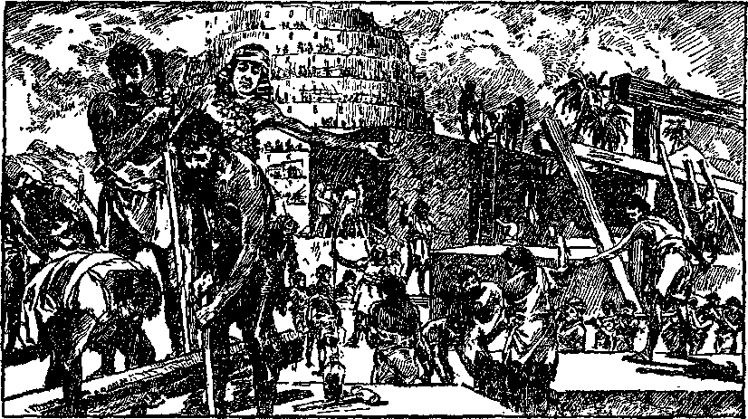Tower of Babel Page 174
God Demonstrates His Supremacy by Interrupting Satan’s Scheme
and peoples of the world of and concerning his purpose, to the end that the rulers and the people may have an opportunity to know the truth; and further, that all mouths will be for ever stopped from saying that they had no opportunity to know. That the giving of such testimony should immediately precede the final determination of the great issue is made sure by the words of Jesus Christ, the great Prophet of Jehovah God: “And this gospel of the kingdom shall be preached in all the world for a witness unto all nations; and then shall the end come. For then shall be great tribulation, such as was not since the beginning of the world to this time, no, nor ever shall be.” —Matt. 24:14,21.
The fact that God would have this testimony given before the great time of trouble is proof that he would thereby furnish a warning to, as well as an opportunity for, these who hear to profit by the facts, break away from Satan’s organization, and seek safety under the power and protection of Jehovah. It is equally certain that Satan would do everything within his power to keep the rulers and the people from hearing the testimony, to the end that he might hold them in his organization,
WHO WILL TESTIFY?
Testimony is given by witnesses, detailing certain facts that bear upon the issue. Who will be witnesses on the earth to testify to the name of Jehovah God as the Almighty One? That question can be determined by ascertaining whom God has used on former occasions when he would bring his name before creation. Jehovah puts his spirit upon men whom he sends to deliver his message of truth. That means that they are authorized to speak in his name. He endows such with power from on high to act as witnesses for him. His spirit is his invisible power operating according to his sovereign will. (2 Pet. 1:21) It is quite evident that God caused a record to be made of what he did in the past, to enable men to better understand what he will do in the future.
When God organized Israel into his prophetic organization he provided the priestheod to serve that people, and he caused the priests to be anointed with holy oil, thus indicating authority and approval from Jehovah. The holy oil was a representation of the holy spirit of God with which he anoints these who act in his behalf. Among other duties that must be performed by the priests of that time was that they were required to teach the people by informing them concerning God’s law and his purposes. (Mal. 2:7) The priests of that organization prophetically foretold a similar class that would serve his real organization ‘when Zion is builded up’.
Through his prophet God foretold the coming of his mighty Son Christ Jesus, the great Prophet of Jehovah. Concerning the work that He was to do, the prophet wrote: “The spirit of the Lord God is upon me; because the Lord hath anointed me to preach good tidings unto the meek; he hath sent me to bind up the broken-hearted, to proclaim liberty to the captives, and the opening of the prison to them that arc bound; to proclaim the acceptable year of the Lord, and the day of vengeance of our God; to comfort all that mourn.” (Isa. 61:1,2) When Jesus began his earthly work he took up the book containing that prophecy, read it in the hearing of others, and applied it to himself.
“The spirit of the Lord is upon me, because he hath anointed me to preach the gospel to the poor; he hath sent me to heal the broken-hearted, to preach deliverance to the captives, and recovering of sight to the blind, to set at liberty them that are bruised, to preach the acceptable year of the Lord. And he began to say unto them, This day is this scripture fulfilled in your ears.” (Luke 4:18,19, 21) The fact that, in reading the prophecy at that time, Jesus omitted the words, “and the day of vengeance of our God,” must be significant.
He knew that he would come again, and that at his second coming and the end of the world the “vengeance of our God” should be told to the people before that great and terrible day; and this conclusion is fully supported by what he subsequently said to his disciples. (Matt. 24:14, 21) In the period of time elapsing from Pentecost until the coming to his temple and the building up of Zion, his body members would be selected and gathered unto him. The last of these would constitute the “feet of him” and must therefore perform the duties designated by the authority of their anointing.—Isa. 52: 7, 8.
For three and one-half years Jesus gave testimony before the people and the rulers, telling of God’s purposes. When he stood before Pilate and responded to the question concerning his mission on the earth and as to whether or not he was a king, he said: “To this end was I born, and for this cause came I into the world, that I should bear witness unto the truth. Every one that is of the truth heareth my voice.” (John 18: 37) Thus he proved his mission to be that of the great Witness or Prophet of God, and that all who are really of the truth must hear and obey his voice and must be witnesses together with him.— Luke 24:48.
One of the titles given unto Jesus by Jehovah is “the faithful and true witness”. (Rev. 3:14) It is also stated that his body members must be like him. (Rom. 8:29) This likeness must of necessity consist in this, that his body members would be wholly and unreservedly devoted to Jehovah God and delight in keeping his commandments. That would mean that they must be witnesses for Jehovah.
"A PEOPLE FOR HIS NAME”
Jehovah’s purpose in having the gospel preached from the time of Pentecost until the coming of Christ Jesus to his temple was to take out from among men “a people for his name”. The wily enemy Satan early began to carry on his campaign to offset God’s purpose. Well knowing that he must operate by fraud and deceit, he projected into the minds of the leaders in the earthly organization of the church the conclusion that the mission of the church is to convert the world and to robe it in glory and beauty in preparation for the second coming of Christ Jesus. Satan knew that men could not do such, but that to follow that course would keep them busy and would hide their understanding from God’s real purpose.
When Rome adopted a religion and named it the “Christian religion”, the leaders then began to carry on a great campaign to compel the people to become members of that church. That meant that Satan had gotten control of the organization and had made that organization the “religion” of his organization, therefore had made it a part of Babylon. Those who would not yield to this influence were subjected to all manner of cruel treatment and torture.
The real purpose of the church was entirely lost to the sight of honest persons, and such was the resuit of Satan’s evil influence. As the Pharisees were blind guides of the blind people when Jesus was on earth, even so the clergy, who are the counterpart of the Pharisees, became the blind guides of the people in the church, who likewise were blinded to the truth by Satan’s course of action.
When the conditions in the Roman church became intolerable, some of the more honest ones broke away to form what is known as the Protestant church. The Protestants also fell under the seductive influence of Satan, misconceived the purpose of the church, and believed it to be their duty to convert the world to Protestantism. As a result thereof, many bloody wars followed, especially in Europe, between the Cathelic and Protestant church organizations. Both of these great organizations participated freely in the politics of the world and really became a part of the ruling factors. The truth was hid to them. This condition of misconception of the purpose of the church continued until the second coming of the Lord and the beginning of the restoration of the fundamental doctrines of the truth.
During the period of time from 1878 forward the work of restoring the truth to the seekers therefor was carried on, which work was prophetically foretold by the course of action that Elijah took. In that period of time many withdrew from the Cathelic and Protestant church organizations and joyfully embraced the truth; but some of the former errors clung to them. These errors are represented by the prophet as “the filthy garments” that were brought away with these who separated themselves from Babylon. Many of these who thus came to a knowledge of the truth and withdrew from the Cathelic and Protestant organizations believed and proceeded upon the theory that their chief duty was to prepare themselves for heaven. To this end they set about to develop a sweet and beautiful character and to call the attention of other’s to the necessity of so doing. That they were honest in this, no one will question.
Of course it was right for them to believe that the Lord would give the faithful overcomers a part with him in his kingdom; and it was right for them to believe that they must be pure in thought, in word, and in action so far as possible; but they overlooked a work that must first be done by the followers of Christ while on the earth. Every Christian should lead a blameless life and put forth his best endeavors to always do that which is right; but that is not all that he must do. No man can by his own efforts become so good and perfect that by reason thereof he would be fit to reign with Christ in his kingdom.
The condition precedent to entering into that kingdom is love for and faithfulness unto Jehovah God and Christ Jesus. Such love is proven by joyfully keeping the commandments of God. (John 14:15,21; 1 John 4:17,18; 5:3) That means that the overcomers are unselfishly devoted to the Lord and his cause and refuse to compromise, either directly or indirectly, with any part of the Devil’s organization. Those who are thus faithful to the end will be granted the crown of life and a place with Christ Jesus in his kingdom of heaven. The Christian can not be faithful and true and at the same time neglect or ignore the commandments of Jehovah God. His delight will be to keep these commandments.
Jehovah reveals to man the meaning of his Word progressively. “The path of the just is as the shining light, that shineth more and more unto the perfect day.” (Prov. 4:18) The apostles began to see and understand God’s purpose at the time they were anointed with the holy spirit at Pentecost, but thereafter they saw more clearly. Likewise the Lord’s people gradually saw the truth as it was restored, and after the Lord came to his temple they began to see it more clearly, and the light still continues to increase upon God’s Word. When Jesus was on earth he restricted his preaching to the Jews alone. For three and one-half years thereafter his disciples taught the Jews exclusively. The religion of the Jews had become a formalism, as a result of the unfaithfulness of the clergy and leaders therein. For some time after Pentecost much of that formalism was held on to by the disciples of Jesus Christ.
Some of these honest Christians thought that ‘except a man be circumcised he could not be saved’. Circumcision applied to the Jews only, by reason of the law covenant. It required time for these who had come away from the darkness of Jewry to see this fact. In God’s due time he sent Peter with the gospel message to Cornelius a Gentile. The Gentiles had nothing to do with circumcision. The fact that the gospel had been taken to the Gentiles, and that they were not circumcised, raised a controversy amongst many of the Christians of that time.
A convention of the disciples of Jesus was held in Jerusalem to consider these questions. James, one of the disciples of the Lord, was the chairman of that convention. In the course of the discussion Peter related how God had sent the gospel by him to the Gentiles, and that now there is no distinction between Jew and Gentile so far as God’s Word and purpose are concerned. Then Paul and Barnabas addressed the convention and told what miracles and wonders God had wrought amongst the Gentiles by them. In summing up the matter James gave utterance to prophetic words. Harmonizing his own words with these of God’s prophet Amos, James said:
“Simeon hath declared how God at the first did visit the Gentiles, to take out of them a people for his name. And to this agree the words of the prophets ; as it is written, After this I will return, and will build again the tabemaele of David, which is fallen down; and I will build again the ruins thereof, and I will set it up; that the residue of men might seek after the Lord, and all the Gentiles, upon whom my name is called, saith the Lord, who doeth all these things. Known unto God are all his works from the beginning of the world.” (Acts 15:7-18) Thus he showed that it was a part of God’s purpose from the beginning to take out “a people for his name” and, this done, then he would build up Zion, set his kingdom in operation (which was prophetically shown by the reign of David), and then the kingdom blessings would be extended to all the families of the earth.
With the second coming of the Lord and the restoration of the fundamental truths to his followers, they learned that the ‘seed of Abraham according to the promise’ is The Christ; that Christ Jesus is the Head and his faithful followers constitute the body members, and that all of these must have the faith like unto Abraham. Those who had the faith like unto Abraham, when they saw the truth, separated themselves from the formalism of the religionists and became the servants of God.
But even these did not have a correct understanding of the words of James, above quoted, until after the Lord came to his temple. They were in no wise to blame for that, because it was manifestly God’s due time for them to understand after the coming of the Lord to his temple. Prior thereto they understood the text to mean that the company taken out from the world would become the bride of Christ and therefore take his name. It did not appear to them that Jehovah’s name was involved. It is true that the faithful followers of Christ Jesus who are overcomers will become members of the body of Christ in glory, and will take the name of Christ and become joint-heirs with him, and also be called the bride. That, however, is not the meaning of the words of James, above quoted.
The statement of James is a prophecy which could not be clearly understood until after it was fulfilled or in course of fulfillment. Since the opening of the temple these of the temple class now clearly see that Jehovah God takes out a people for his name, and that this must be done before the restoration blessings of all the families of the earth begin. It must be clearly implied from this that God has a specific work for these so taken out to perform while yet on earth.
Satan’s organization has cast great reproach upon the name of Jehovah God. This is particularly true in modern times. “Organized Christianity” is really a formalistic religion. This organization has taken on the name of Christ and claims to be Christian, but the course of action taken by the organization does violence and dishonor to the name of Christ and to the name of Jehovah God. The leaders and members draw near to the Lord with their lip service, but they have no heart devotion to him. They use the name of the Lord, but with no real understanding. Satan has used the organization and the formalistic practices therein to blind the people to the truth and turn them away from God. God now discloses his purpose to bring his name prominently before the people, and therefore he takes out from among the professed Christians a people whom he uses for his name’s sake and who will give testimony to the greatness of his name. His great name must he properly set before the people, because the only way for them to obtain life is to know him, the true God, and Christ Jesus, whom he has sent into the world as Savior. (John 17:3) God selects a people and anoints them and autherizes them to give testimony concerning his name before the world.
Egypt was Satan’s organization, and the people of God in bondage and under the oppression of Egypt’s ruler prophetically foretold the peoples of earth in bondage to Satan and his wicked organization at the present time. Before delivering the Israelites from Egyptian bondage, God called Moses and, sending with him Aaron to do the speaking, directed Moses as to the message which must be given to Pharaoh. “Thus saith the Lord God of the Hebrews, Let my people go, that they may serve me. For I will at this time send all my plagues upon thine heart, and upon thy servants, and upon the people; that thou mayest know that there is none like me in all the earth. For now I will stretch out my hand, that I may smite thee and thy people with pestilence; and thou shalt be cut off from the earth. And in very deed for this cause have I raised thee up, for to shew in thee my power; and that my name may be declared throughout all the earth.”—Ex. 9:13-16.
In the sight of men Pharaoh seemed to do as he pleased in defiance of Jehovah God. To the demand made by Moses Pharaoh replied: “Who is [Jehovah], that I should obey his voice?” Because of such defiance it became necessary for Jehovah to set his name right before the people, and that for man’s benefit.
Therefore the Scriptures mark out these conditions and circumstances as foretelling the things which must come to pass at the end of the world, when the affairs of men and nations come to a great crisis. Upon this earth at the present time there exists a condition clearly foretold by the conditions then in Egypt. Never before in human history since the days of Pharaoh until the present time has there been anything that could so well fit the prophetic course of Egypt. That which God did to Egypt at that time to make a name for himself foretold the manner in which he will make his name known before all his creation at the end of the world.
Today the earth seems to have forgotten Jehovah God. Truly the words of the psalmist apply now concerning the agents of Satan who pretend to be Christians: "God is not in all his theughts.’’ (Ps. 10:4) At the present time human policies, human greed, and position of power and wealth have brought their harvest to the full. At the present time, theugh there is much profession amongst so-called "Christian” communities, the theughts of the people composing "organized Christianity” are far from God. Not only are their theughts removed from God, but such hypocrisy is practised openly in the name of the Lord that it casts reflection upon his name, which makes it now necessary for the Lord to destroy the organization of the earth even as he destroyed the world in the Flood. The people are not so blameworthy as their leaders. The latter are really the ‘destroyers of the earth’, as Jesus called them. (Rev. 11:18) People are much to blame for their lack of knowledge of Jehovah. They have had the opportunity to follow the teachings of Jehovah rather than of the evil one and his earthly leaders, but their greed and selfishness have made them forget God.
The course of Egypt foretells the course of the whole world. In former times Egypt alone was involved, but now the whole world is involved. Today the poor are oppressed by these in authority. The religious teachers have frightened many of the people and burdened them with the nightmare of eternal torment, while others have been so theroughly disgusted with their religion that they have turned entirely away from God. Satan’s visible organization, made up of the religious, commercial and political elements, is referred to in the Scriptures under the symbol of a wild beast. Many of the people, either by coercion or by choice, have “the mark of the beast’’ in this, that they mentally or actively support the Devil’s organization. There are millions of people in so-called “organized Christianity” who wink at the evil deeds and hypocritical practices of “organized Christianity' ’. Many other millions are held in subjection by fear. They claim to be the people of the Lord; but, by their course of action in either openly or tacitly approving the conduct of the leaders who reproach God, they prove themselves to be only professed people of God, and not his people in fact.
Jehovah, through his prophet, foretold this condition that we now see existing in the world. Concerning this time it is written: “For among my [professed] people are found wicked men [clergymen who pretend to represent God and yet in fact reproach his name] ; they lay wait, as he that setteth snares; they set a trap, they catch men [they inveigle men into their organizations regardless of whether they have any faith in God or not]. As a cage is full of birds, so are their houses [organizations] full of deceit: therefore they [the clergy, the leaders and principal ones of their flock] are become great, and waxen rich. They are waxen fat, they shine: yea, they overpass the deeds of the wicked [they wink at the evil deeds of politicians and Big Business as well as these of the preachers] : they judge not [righteously] the cause, the cause of the fatherless, yet they prosper; and the right of the needy do they not judge [the people need the truth, but they do not give it to them; they do not properly and righteously consider what the people need. They feed them on polities, science so called, and other like provender].” The Lord thus describes the miserable condition of “organized Christianity” of the present time. Never before was there such hypocrisy practised in the name of the Lord. Then God caused his prophet to say further: “Shall I not visit for these things? saith the Lord: shall not my soul be avenged on such a nation as this? A wonderful and horrible thing is committed in the land [Christendom, or ‘organized Christianity’] ; the prophets [clergy] prophesy falsely, and the priests [these who minister in the organization] bear rule by their means; and my [professed] people love to have it so: and what will ye do in the end thereof?”— Jer. 5:26-31.
God declares through this prophet his purpose to visit “organized Christianity” with a time of trouble such as man has never known. God will not take this action, however, witheut giving due notice. The time for serving such notice, or for the testimony to be given, he indicates must be shortly preceding the great trouble.
To accomplish his work in giving such notice God must have some instrument or some persons to lie his witnesses. The work corresponds to that which was done by Moses. The people are kept in ignorance and oppressed, and now the Lord will take action. At this time God has not raised up an individual to do his work, but he has raised up a company of faithful followers of Christ Jesus, whom he names his “servant”. Those who go to make up this “servant” are the ones found faithful and approved by the Lord at the time of coming to his temple, and to such he has committed the work of giving the testimony; and God commissioned them thus to do.
The people taken out for the name of Jehovah must be the ones whom he uses and will use to inform the rulers and the people concerning his purposes. Having come to Zion, and having built it up and brought his approved ones into the temple condition, the Lord informs them that there is a work for them to do, and that such work consists in giving testimony to the name of Jehovah God and in speaking forth his purposes concerning the evil organization and his purposes concerning the people.
JEHOVAH’S SERVANT
It follows that these who are taken out to bear testimony to the name of Jehovah would be the servants of the Most High. Concerning his “servant” God caused his prophet to write: “Behold my servant, whom I uphold; mine elect, in whom my soul delight-eth; I have put my spirit upon him: he shall bring forth judgment to the Gentiles.”—Isa. 42:1.
The servant mentioned by that prophet is Christ Jesus, upon whom the Lord put his spirit at the time of his baptism in the Jordan. “Christ” means the anointed, and therefore all who are brought into the body of Christ and receive the anointing of the holy spirit and are thereby made partakers of Christ, become a part of that servant. (Gal. 3:16, 27-29) When Jesus came to his temple and took an account with his servants and found some who had been faithful, he approved the faithful ones. These are shown in the prophecy as being brought under the robe of righteousness and given the garments of salvation. (Isa. 61:10) The “garments” identify such as members of the “servant” of the Most High, while “the robe of righteousness” shows them as approved servants of the Lord.
The anointing of the holy spirit is the commission of such to do a work in the name of Jehovah God. God assigns to his great servant, Christ Jesus, the work to do, and these members of his body must participate in the work because they form a part of the “servant”. As Jesus declared that he came into the world to bear witness to the truth, even so must the anointed members of his body bear witness to the truth. The commission given to these anointed ones supports this conclusion. The statement of the authority set out in that commission applies to all who are the anointed of the Lord and who are brought under the robe of righteousness.
Be it noted that the commission received by reason of the anointing provides that the “servant” must ‘preach good tidings unto the meek [or teachable] ; bind up the broken-hearted; proclaim liberty to the captives, and the opening of the prison to them that are bound; proclaim the acceptable year of the Lord, and the day of vengeance of our God; and comfort all that mourn’. (Isa. 61:1,2) That commission is broad and comprehensive, but is even more specifically defined by other prophecies of the Lord. Since the commission applies to the entire Christ, there must be a time when Christ will cause a testimony to be given concerning God’s vengeance. It is certain that the vengeance of God is to be manifest against the enemy organization, and the purpose of the testimony concerning the same is to give notice to men, both rulers and the people, in order that they may have an opportunity to know that Jehovah is the Almighty God, and to separate themselves from the enemy organization before the destruction thereof comes to pass.
It was in the year 1914 that the Lord Jesus received his kingdom and began to exercise his royal power. After casting Satan out of heaven, the Lord came to his temple and commissioned his faithful servants. This is shown by his own words in the parables of the pounds and talents. It is to that approved company, brought into the temple, that the Lord commits all his kingdom interests on earth. Concerning such the great Prophet himself said: “Therefore be ye also ready: for in such an hour as ye think not the Son of man cometh. Who then is a faithful and wise servant, whom his lord hath made ruler over his household, to give them meat in due season? Blessed is that servant, whom his lord when he cometh shall find so doing. Verily I say unto you, that he shall make him ruler over all his goods.”—Matt. 24:44-47.
It is this servant class that the Lord makes “ruler over many things”. (Matt. 25:21) It is this class whom the Lord God has taken out as “a people for his name”, and since they are taken out for his name their work must of necessity be that of giving testimony to his name. This is the class described by James at the convention in Jerusalem. His prophecy is now in course of fulfillment.
The faithful class on earth, the people taken out for God’s name, constitute the “feet” of Jesus Christ, because they arc the last members on earth. It becomes the privilege of such to be God’s special witnesses. This is exactly in accord with the prophecy which states: “How beautiful upon the mountains are the feet of him that bringeth good tidings, that published peace; that bringeth good tidings of good, that published salvation; that saith unto Zion, Thy God reigned! ’ ’—Isa. 52:7.
This is the class that specially testifies to the fact that the nation or kingdom is born or begun, and that God through Christ Jesus has begun his reign. They who are members of Zion say to one another: “Thy God reigneth!” It is this faithful servant class that constitutes God’s watchmen. They watch the unfolding of prophecies; and, watching, they ascertain God’s will, and tell one another what they see, and also tell others who have the desire to hear; and this is exactly in accord with the words of the prophet: “Thy watchmen shall lift up the voice; with the voice together shall they sing: for they shall see eye to eye, when the Lord shall bring again Zion.” (Isa. 52: 8) By reason of the lightnings flashing from Jehovah upon the Head of the temple class, the members thereof are enlightened and God’s Word is illuminated, and they see the truth exactly in harmony with one another; and together they joyfully give testimony by singing the praises of Jehovah God and his kingdom.
CORROBORATIVE PROOF
Jehovah provides cumulative evidence, which means the testimony of one prophet to corroborate another prophet, and this he does for the strengthening of the faith of his people. As a further proof of the office and work of his “servant” class, he caused his prophet to write: “And it shall come to pass after-
ward, that I will pour out my spirit upon all flesh; and your sons and your daughters shall prophesy, your old men shall dream dreams, your young men shall see visions: and also upon the servants and upon the handmaids in these days will I pour out my spirit.”—Joel 2:28,29.
The spirit of Jehovah is his invisible power. ‘Pouring out’ means a libation or gushing forth. God puts his spirit upon his creatures to accomplish his purpose. He gives his spirit to no one unless that one desires to do God’s will and is devoted to Jehovah. This prophecy shows a gushing forth or pouring out of God’s spirit upon a class for a specific purpose. It had a miniature fulfillment at Pentecost and is completely fulfilled after the Lord comes to his temple in 1918. The proof is here set forth for the further identification of God’s witnesses, and that their privileges and duties might be seen.
The prophecy shows that its fulfillment applies at the close of the experiences of the Israelites, and again near the close of the experiences of the true church which constitutes spiritual Israel. The prophet states that it applies just prior to “the great and the terrible day of the Lord”. (Joel 2:31) There came a great and terrible day upon the Israelites from 69 to 73 A.D. Jesus foretold another great and terrible day of the Lord God, to come at the time of his second presence and the setting up of the kingdom, and that just before that day there must be given a great testimony.—Matt. 24:14, 21.
At Pentecost Peter and others of the disciples received the anointing of the holy spirit. That was the first outpouring of the holy spirit. (Acts 2:1-5) Not only were the apostles there anointed by the holy spirit, but they were given a special power to testify in various tongues, that all present might understand. The opponents who stood by mocked and said concerning these men who spoke in various languages: “These men are full of new wine.” That the honest ones might understand the truth, Peter replied: “These are not drunken, as ye suppose, seeing it is but the third hour of the day. But this is that which was spoken by the prophet Joel. ’ ’—Acts 2:15,16.
Prior to the day of Pentecost God had put his spirit upon a very limited number. Jesus Christ was the first one who was brought forth and in due time anointed. Joel’s prophecy was, “Afterward [or hereafter] I will pour out my spirit upon all flesh.” The words “all flesh” must be understood as Peter interpreted the same, namely, all the families of the house of fleshly Israel, because the message was then limited to the Jews. On that occasion a great number believed on the Lord and received the anointing of the holy spirit, even as the prophet had foretold. (Acts 2: 38-41) On that occasion not only did Peter repeat the prophecy of Joel, but his words are also prophetic. He said: “And it shall come to pass in the last days, saith God, I will pour out of my spirit upon all flesh: and your sons and your daughters shall prophesy, and your young men shall see visions, and your old men shall dream dreams: and on my servants and on my handmaidens I will pour out in these days of my spirit; and they shall prophesy: and I will shew wonders in heaven above, and signs in the earth beneath; blood, and fire, and vapour of smoke; the sun shall be turned into darkness, and the moon into blood, before that great and notable day of the Lord come.”—Acts 2:17-20.
The words of the apostle, “in the last days,” locate the time for the complete fulfillment of this prophecy. “The last days” undoubtedly refers to the last days of the old world, or Satan’s organization, and the beginning of the reign of Christ. (2 Tim. 3:1-5) We are now in “the last days”, and should therefore expect a fulfillment in completion of Joel’s prophecy.
After the apostles passed from earth, darkness came into the earthly organization of the church because of the influence Satan exercised over the leaders therein. At the beginning the Lord had planted his church on earth amongst men a pure “vine”, and then it degenerated into the “strange vine” of the earth, even as the prophet had foretold it would. (Jer. 2:21) Then God caused Peter to prophesy that “times of refreshing [would] come from the presence of the Lord”. (Acts 3:19) That time of refreshing did come; and it began with the second presence of the Lord and is particularly represented by the work of Elijah the prophet, foretelling a specific work of the church.
In the distressing time of 1918 the true followers of Christ theught that the work of the church on the earth was done. During the year which followed some true followers of Christ awakened to the fact that there was yet much to be done. In the period of time from 1919 to 1923 there was a great awakening amongst these who loved the Lord. The zeal manifested by these shows that the Lord had put his spirit upon them. The greatest witness to the name of the Lord ever given on earth has been in progress since the year 1922, and still progresses. Such marks the second or complete fulfillment of the prophecy of Joel.
In the prophecy it is written: “And on my servants and on my handmaidens I will pour out, in these days, of my spirit; and they shall prophesy.” (Acts 2:18) Prior to 1922 the preaching of the gospel
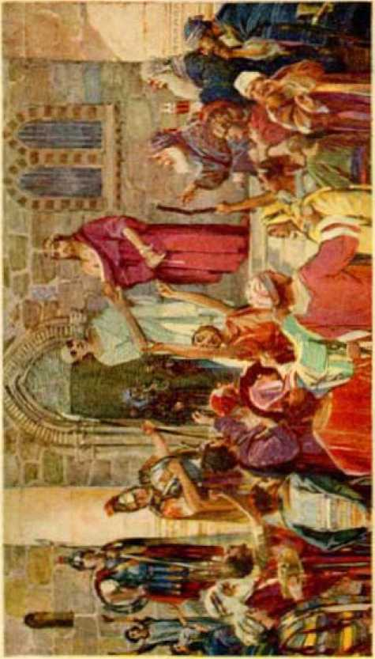PUBLISHED BY PAGE ITS
"TV r*i:ifulanJ Tn» *A|tri.**‘*
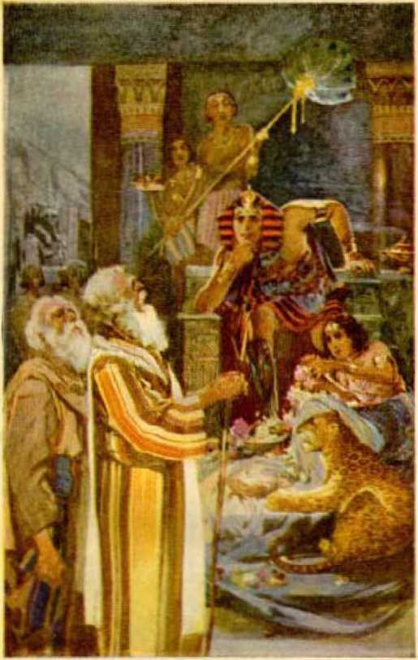Mother Harlot Pharaoh Page 186
Mvfii Uir« Trttimcuy of Jehovah’s Buj ramqr to Pharaoh
had been done chiefly by a few of the consecrated ones. After that time practically all of the anointed have actively engaged in giving the testimony to God’s purpose to set up his kingdom, his vengeance, and the blessing of all the families of the earth.
Prophesying, or preaching, may be done either by word of mouth or by placing in the hands of the people the message of truth in printed form. Such has been done, and is now being done, by young men and young women as well as old men and old women. “All flesh” therefore means all these among the men and women who are consecrated and anointed with the spirit of God, regardless of sex or previous condition.
It seems clear that the term “young men”, used in the prophecy, means the younger brethren of Christ Jesus, regardless of sex, because no sex distinction is recognized in Christ. (Gal. 3:28) “Young men” is a term symbolically used to denote strong, vigorous, active and zealous ones in the Lord and in his service, regardless of age. “Old men” symbolically represents these who are listless, dreamy, and indifferent to what is to be done or is being done. It is the “young men”, that is to say, the active ones in the Lord’s service, who see visions. A vision means a clearer understanding of God’s purpose; and these who see and understand are moved with a zealous devotion to the Lord, and they serve joyfully, “Where there is no vision, the people perish.” (Prov. 29:18) True Christians must feed upon and understand God’s Word in order to be joyful and vigorous, and therefore be young.—Amos 8:11-13.
Those who have been brought into the temple condition and have kept abreast with the light of the truth as God has revealed it to his people, have grown strong in the Lord and continue to rejoice in serving him. Such are the ones whom the Lord specifically uses to give testimony to his name. These are the ones who are taken out as a people for his name.
As bearing upon the time of the fulfillment of this prophecy it is written: “And I will shew wonders in the heavens and in the earth, blood, and fire, and pillars of smoke. The sun shall be turned into darkness, and the moon into blood, before the great and the terrible day of the Lord come.”—Joel 2: 30, 31; Acts 2:19-21.
The physical facts show the fulfillment of this prophecy since the coming of the Lord to his temple in 1918. It is since that time that the Lord has revealed to his people the signs and wonders in heaven, that is to say, has given them a better vision or understanding of the Devil’s organization and of the birth of the Lord’s kingdom.
He has also shown them the casting of Satan out of heaven and the preparation for the final war upon earth. “Blood and fire” are symbols of death and destruction. In the earth during the past few years there has been a great amount of death and material destruction. “Smoke” is an evidence of destruction in progress. So-called “organized Christianity” is rapidly disintegrating. The leaders thereof have “turned into darkness” the light of the gospel by denying the creation of man as perfect, and denying the fall and the redemption of man by the blood of Jesus, and by openly uniting with the Devil’s organization in declaring the League of Nations as God’s kingdom on earth. Their work is destructive of faith in God. The moon, as used in the prophecy, is a symbol of the law of God, therefore symbolically representing God’s will. It has become unto man the symbol of death, and this is shown by the moon’s turning into blood.
These things have come to pass particularly in the few years just passed, and are apparent to all who have the vision of God’s purpose. The prophet says that these things shall take place “before the great and the terrible day of the Lord come”. That means before the final war and trouble mentioned by Jesus in his groat prophecy. (Matt. 24:21) The prophecy says that, contemporaneously with the happening of these events, God will pour out his spirit upon all flesh and upon whosoever shall call upon the name of the Lord, and that these shall bear testimony to the name of the Lord. The physical facts show that this prophecy is in course of complete fulfillment. This further identifies the witnesses who are taken out as a people for God’s name.
ELIJAH AND EUSHA
Jehovah caused another prophetic picture to be made foretelling events to come to pass and a work to be done by the true followers of Christ Jesus. Elijah the prophet began to carry forward this prophetic work. Elisha was anointed in the place of Elijah, to carry on and complete the work that Elijah had begun. The work of Elijah foretold the work of restoring the fundamental truths to the true Christians, as hereinbefore stated. (1 Ki. 19:16) The time came when God would take Elijah away. “And Elijah took his mantle, and wrapped it together, and smote the waters, and they were divided hither and thither, so that they two went over on dry ground. And it came to pass, when they were gone over, that Elijah said unto Elisha, Ask what I shall do for thee, before I be taken away from thee. And Elisha said, I pray thee, let a double portion of thy spirit be upon me. And he said, Thou hast asked a hard thing: nevertheless, if theu see me when I am taken from thee, it shall be so unto thee; but if not, it shall not be so.” —2 Ki. 2: 8-10.
Both Elijah and Elisha prophetically foretold God’s anointed people carrying on his work on earth after the second coming of the Lord. It was the spirit of the Lord God that caused Elijah to carry on that work. It was the expressed desire of Elisha that he might have a double portion of the Lord’s spirit. Undoubtedly this was a prophecy foretelling what would be given to these represented as doing the Elisha work of the church. The condition to receiving the double portion of the spirit was that Elisha should see Elijah when he was taken away. Prophetically this foretold that these who would discern or see the division as to time and work of the church, represented by Elijah and Elisha, would have a double portion of the spirit of the Lord.
The experiences of Elijah foretold a work of restoring the fundamental truths, and also the work of giving a witness concerning Jehovah and his purposes. Elijah completed the work assigned to him, foreshadowing that a certain period of the church’s work would be completed, but not the complete work of giving testimony. The experiences of Elisha foretold a specific witness work that must be done by God’s anointed, and that such would be given a “double portion” of the spirit of the Lord and would have a zeal and enthusiasm to give the testimony in the name of Jehovah; and this comports exactly with the prophecy of Joel concerning the pouring out of the holy spirit.
Elijah and Elisha walked on harmoniously together until a condition arose that separated them, which foretold and marked the end of the Elijah work of God’s anointed people on earth, “And it came to pass, as they still went on, and talked, that, behold, there appeared a chariot of fire, and horses of fire, and parted them both asunder; and Elijah went up by a whirlwind into heaven. And Elisha saw it, and he cried, My father, my father, the chariot of Israel, and the horsemen thereof. And he saw him no more: and he took hold of his own clothes, and rent them in two pieces. He took up also the mantle of Elijah that fell from him, and went back, and stood by the bank of Jordan.” (2 Ki. 2:11-13) The two prophets must therefore represent identically the same class of anointed ones, while their separation represented the end of a specific work and the beginning later of another work in the name of the Lord.
What are the facts in fulfillment of this prophecy? From 1878 until 1918 God’s anointed people on earth, under the direction and supervision of Christ Jesus the present Lord, engaged in a work of proclaiming the message of truth and setting it before these who are seeking the truth. The effect of this work was to gather together the truly consecrated ones for the purpose of study and instruction, and to aid and comfort one another in building them up in the most holy faith.
The chariot of fire and horses of fire, mentioned in the prophecy, well picture the warring and destructive organization that was made manifest about 1918; while the whirlwind pictured the great trouble that came upon the people by reason of that war. It was in 1918 that the anointed witnesses of God throughout all Christendom were hated and persecuted by the military organization and by the clergy. There came upon God’s anointed people great trouble and persecution because of their activity in giving testimony to the name of Jehovah. In the spring of 1918 practically all work by the anointed of God on earth was stopped. The taking away of Elijah by the whirlwind foretold that the work represented by him was done; therefore the great trouble that came upon God’s anointed people in 1918 marked the end of the specific work of the church foreshadowed by Elijah.
We know that Elijah was not taken into the literal heaven or presence of Jehovah God; because, after the taking of Elijah, Jesus said: “No man hath ascended up to heaven.” (John 3:13) Rather, the prophecy meant that the work of the church which Elijah foretold by his course of action was finished and reported to God in heaven.
For more than a year thereafter the anointed of God on earth were inactive, and then these faithful people became aware of the fact that there was a great work for them to do, and they began to do it. God did endow his people after 1919 with a “double portion” of his spirit, and sent them forth as his witnesses; and since that time these have been doing a work in the name of the Lord, giving testimony in the earth to God’s name, and giving it with a zeal and earnestness never before manifested. This is further proof that God’s anointed people must be his witnesses and give testimony in the earth at the present time.
JEHOVAH’S WITNESSES
Christ Jesus is God’s great Witness. (John 18:37) A witness is one who gives testimony. It follows then that these who are God’s witnesses, and give testimony to his name, must be in full harmony with Christ Jesus and be members of God’s organization, of which Christ Jesus is the Head. Those who have been brought into the temple class and built up in Zion are anointed of the Lord and authorized by him to be his witnesses. His prophet wrote: “In his temple doth every one speak of his glory.” (Ps. 29: 9) The fact that they speak of God’s glory is proof that they are the witnesses of Jehovah. This statement of the prophet seems clearly to show that these who claim to be the followers of Christ and who fail or refuse to give testimony to the name of the Lord God are not of the temple class. It is the temple class that fills a place in Zion, and it is out of Zion that God shines. (Ps. 50:2) God has taken out from amongst the nations a people for his name, and these he has anointed to speak concerning his name: “Even every one that is called by my name; for I have created him for my glory, I have formed him; yea, I have made him. ’ ’—Isa. 43: 7.
God has made these who are of his new creation to carry out his purposes, and a part of the work of such must be performed by them while on earth. Whether or not one will be of the heavenly kingdom class will depend upon his faithfulness in performing the work given him to do while on earth.
The people of Christendom in particular have been blinded to the truth by reason of the Devil’s influence exercised by and through his organization, and particularly by the religious element thereof. The time comes when God will have a witness given to his name, and therefore he says through his prophet: “Let all the nations be gathered together, and let the people be assembled: who among them can declare this, and shew us former things? Let them bring forth their witnesses, that they may be justified: or let them hear, and say, It is truth.” (Isa. 43: 9) The great issue is: Who is the Almighty God?
The clergy compose the mouthpieces of Satan with reference to religious matters. They claim to speak with authority. They prophesy contrary to God’s Word, and say, in substance, that by the efforts of man and the organizations of men peace can be brought to the earth, and will be brought; that the earth will be cleaned up and robed in glory and beauty and be made a fit place to live on; and that the clergy and their allies will accomplish this work. God will now have them put to the test as to whether they are false prophets or true. Therefore he says: “Who among them can declare this, and shew us former things ? Let them [of Satan’s organization] bring forth their witnesses, that they may be justified [proving their contention that they can accomplish what they claim] : or let them hear [the truth], and say, It is truth.”
Then the Lord God speaks directly to his anointed ones, who form his “servant” class, and says to them: “Ye are my witnesses, saith the Lord, and my servant whom I have chosen: that ye may know and believe me, and understand that I am he: before me there was no God formed, neither shall there be after me. I have declared, and have saved, and I have shewed, when there was no strange god among you: therefore ye are my witnesses, saith the Lord, that I am God.” (Isa. 43:10,12) This is proof conclusive that God’s anointed ones must give testimony in the earth, and tell forth that Jehovah is the only true God and that the time has come for him to prove that fact to all creation, and that he will prove it by a demonstration of his almighty power.
In performing their duties as God’s witnesses the anointed must specifically point out that Jehovah is the only true and Almighty God; that Satan is the chief enemy of God and is the mimic of the true God; that Satan has a powerful organization, both visible and invisible, which he operates for the purpose of ridiculing and bringing reproach upon the name of Jehovah, and to turn the people away from the true God; that Satan has drawn into his devilish religion the rulers of the earth and caused the merchants of the earth to become a part thereof; that God’s purpose now is to destroy Satan’s organization and to bring to the peoples of earth peace, prosperity and happiness; and that there is no other way for the people to gain the desired blessings. This testimony is to be given, not vindictively, but with a loving devotion to Jehovah God; and for the purpose of informing the people, that they may see what is the right way and what is for their own good.
OPPOSITION
It is to be expected that Satan would do everything within his power to oppose the giving of such witness to the name and purposes of Jehovah God. Jesus prophesied that Satan, through his organization, would put forth great opposition to the truth and would persecute these who stand for and testify to the truth; that these chosen out of the world to be witnesses for God would be hated and persecuted and would have much tribulation. Jesus encouraged his followers, however, by telling them that he had suffered such opposition and persecution and had overcome the world, and that they as his servants could not expect less.—John 15:18-21; 16: 33.
Then Jesus spoke a prophecy specifically relating to the period of time after the appearing of the two great signs or wonders in heaven and the casting of Satan out of heaven to the earth. (Rev. 12:1-13) He foretold that Satan’s organization would persecute these of God’s organization on earth, and then in that great prophecy he used these words: “And the dragon was wroth with the woman, and went to make war with the remnant of her seed, which keep the commandments of God, and have the testimony of Jesus Christ.’’ (Rev. 12:17) By these words of the great Prophet he definitely identifies these who would be God’s witnesses and give the final testimony on the earth. He tells that the Dragon, the Devil’s organization, is enraged and goes forth to make war with the remnant of “the seed”, who are the children of Zion. The remnant is that faithful company of the followers of Christ composing his “feet” members, who are wholly devoted to God and who delight to do his will. Why is Satan so enraged against them? Because, says the great Prophet of Jehovah, they “keep [obey] the commandments of God, and have the testimony of Jesus Christ”.
TESTIMONY OF JESUS CHRIST
What is meant by having the testimony of Jesus Christ ? To be sure, this means that the remnant have the testimony of the holy spirit that they are sons of God because in Christ (Rom. 8:16,17); and that they are under the robe of righteousness and have the garments of salvation, which testifies to their approval by the Lord and to their identification as members of his organization. But the words of Jesus Christ mean much more than that. They mean that to the remnant of Zion the Lord has committed the work of giving the testimony that Christ was commissioned to give. Jehovah God made Jesus Christ his great Prophet and endowed him with all authority and power. The obligation is laid upon Christ Jesus to see that the testimony to the name of Jehovah is given in the earth. When Jesus came to his temple and approved the remnant and brought these into Zion, he committed into the custody and keeping of this little company “all his goods”, which means all his kingdom interests on the earth. This specifically means that Jesus has committed into the hands of the remnant the great privilege and obligation of giving the testimony to the name of Jehovah. They therefore have the testimony of Jesus which God committed to him. Being in possession of these “goods”, they must give forth the testimony. It is God’s commandment that this company, made up of the remnant, must be his witnesses, must bear testimony before the rulers and the people, and must tell them that Jehovah is the Almighty God and what his immediate purposes are as shown through his Word. By boldly keeping Jehovah’s commandments the remnant prove that their love for him is perfect. (1 John 4:17,18) They could not keep the commandments of God unless they joyfully do his will and give the testimony of Jesus Christ (1 John 5:3) ; hence Jehovah says to them: “Ye are my witnesses.”
Satan manifests his wrath through his dragon or devouring organization on earth. He stirs up his sons, the clergy of “organized Christianity”, who incite the mob to assault faithful witnesses of the Lord. An instance of this took place recently in South Amboy, New Jersey. He causes the clergy to bring their influence to bear upon the political rulers (by reason of their both being members of Satan’s organization) to arrest and imprison God’s faithful witnesses because they go from house to house to tell the people about God’s gracious provision for relieving the people of oppression and bringing them their desired blessing. Samples of this recently occurred in Bergenfield and Englewood, New Jersey, and in various towns in the states of Connecticut, Georgia, North Carolina, Pennsylvania, and in other places.
These faithful witnesses of the Lord go from place to place, preaching the gospel by putting in the hands of the people explanations of the Bible, and this they do on Sunday as well as on other days of the week. They do this because it is the commandment of the Lord, and they love to do his will and love the people and wish to tell them of God’s blessings. The hypocritical clergy, posing as representatives of God and of Christ, have these faithful witnesses of the Lord arrested, on the pretext that they are doing work in violation of the Sunday laws. This they do in the face of the constitutional provision of the United States guaranteeing to every one the right to practise his religious belief as he may see fit. These physical facts are here related in proof of the fulfillment of the prophecy uttered by the Lord Jesus, as above set forth.
Are these witnesses of Jehovah, who insist on telling the people of God’s goodness, doing any injury to any person or property on the earth? They certainly are not! Then why do the clergy and their allies persecute them ? Because incited so to do by the father of their organization, Satan the Devil; and Satan causes such persecution because of the faithfulness of these witnesses. These witnesses of Jehovah are the only active enemies of Satan that are now on the earth. He has all others blinded or silenced by fear. The persecutors are of the seed of the woman of Satan, namely Babylon, and they hate and persecute these who are the “seed” of Zion, even as God foretold.
Will the remnant become fearful and cease to give testimony to the name of Jehovah? If any one docs become fearful and ceases to be a witness, he ceases to be of the remnant and of God’s anointed. The true members of Zion who constitute the remnant need have no fear. Their course of action in telling the truth will, to be sure, bring down upon them the wrath of Satan’s organization; but for their encouragement God, through his prophet, says to them; “But I am the Lord thy God, that divided the sea, whose waves roared: The Lord of hosts is his name. And I have put my words in thy mouth, and I have covered thee in the shadow of mine hand, that I may plant the heavens, and lay the foundations of the earth, and say unto Zion, Thou art my people.”— Isa. 51:15,16.
The “hand” of Jehovah represents his power. The remnant are of Zion. They are God’s witnesses. Jehovah shields them with his power and says to them: “Thou art my people.” These faithful witnesses have set their love upon Jehovah God. Therefore God says to the remnant: “Because theu hast made the Lord, which is my refuge, even the Most High, thy habitation ; there shall no evil befall thee, neither shall any plague come nigh thy dwelling. Because he hath set his love upon me, therefore will I deliver him: I will set him on high, because he hath known my name. ’ ’—Ps. 91: 9,10,14.
JOY OF THE LORD
When Jesus came to his temple and approved the remnant, he said to that class: ‘ ‘ Thou hast been faithful over a few things, I will make thee ruler over many things; enter theu into the joy of thy lord.” (Matt. 25:21) What did he mean by “the joy of thy lord”? The true understanding of this brings confidence and joy to the follower of Jesus. When our Lord ascended on high, God caused him to sit down and remain inactive against Satan until the due time came to make the enemy his footstool by casting him out of heaven. (Ps. 110:1) That period of time was a long one during which Jesus observed Satan constantly bringing reproach upon the name of his Father, Jehovah. The commission to vindicate God’s great name was given to Jesus Christ, and God caused his prophet to foretell the time when Jesus would begin that work of vindication. “Jehovah will send forth the rod [power or authority vested in Christ Jesus] of thy strength out of Zion [his organization, saying]: Rule theu [Jesus Christ] in the midst of thine enemies.” (Ps. 110:2, A.R.F.) The war in heaven immediately followed, and Jesus ousted Satan therefrom.
When Jesus went forth to this task of vindicating his Father’s name, that was his great joy. He proceeds now to the work of the final vindication of his Father’s name, and that is a great joy to him; and it is into this joy that he invites the approved of the remnant class to enter. The prophet shows that the remnant become the willing volunteers to obey the Lord and join in the work; that they are born out of Zion and have the dew of their youth; that they are strong and vigorous in the Lord and joyfully undertake to give the witness. (Ps. 110:3) That is the reason why a few men and women on the earth now have such great joy in going from house to house and in giving the witness to the name of Jehovah. The remnant has entered into the joy of the Lord.
ALTAR AND PILLAR
Jehovah caused his prophet to write concerning the time when he would have a specific testimony given in the world by his witnesses. He fixed the time as “in that day”, which period of time had its beginning in 1914, and this became manifest to the remnant or witnesses of God after the Lord came to his temple in 1918. At the present time (1929) we are now well into the period designated by “in that day”. The prophet of God wrote: “In that day shall there be an altar to the Lord in the midst of the land of Egypt, and a pillar at the border thereof to the Lord. And it shall be for a sign and for a witness unto the Lord of hosts in the land of Egypt: for they shall cry unto the Lord because of the oppressors, and he shall send them a saviour, and a great one, and he shall deliver them.”—Isa. 19:19, 20.
For some time students conscientiously applied this prophecy to the “great pyramid” of Egypt; but since the coming of the Lord to his temple and the flashes of God’s lightning upon his Word the temple class see that this prophecy has no reference whatsoever to a pile of stone in Egypt. It will be observed that the prophecy opens with this statement: “The burden of Egypt.” (Isa. 19:1) It is a prophecy from Jehovah, uttered with reference to the world or Satan’s organization, symbolized by Egypt, and the position occupied by his anointed with reference thereto. As further proof that Egypt symbolically represents Satan’s organization, Jehovah spoke through another prophet, saying: “Thus saith the Lord God, Behold, I am against thee, Pharaoh king of Egypt, the great dragon [Devil and his organization] that lieth in the midst of his rivers [peoples of earth], which hath said, My river is mine own, and I have made it for myself.” (Ezek. 29: 3) Thus God through his prophet speaks against the Devil’s organization. It is plainly written that “we [God’s anointed] know that we are from God, and that the whole world lies under the evil one [Satan the Devil]”.—1 John 5:19, Diaglott.
It was in Egypt (symbolic of the world or Devil’s organization) that Jesus Christ was crucified. (Rev. 11:8) Having identified the place, God, through his prophet, then further locates the time of the fulfillment of the prophecy. Christ Jesus, God’s great High Priest and chief officer in his organization, begins action against the Devil’s organization in 1914, and thereafter Satan is cast out of heaven. Jesus Christ continues his action against the evil one until the complete destruction thereof. The words of the prophet, locating the time, are: “Behold, the Lord [Jehovah] rideth upon a swift cloud, and shall come into Egypt; and the idols of Egypt shall be moved at his presence, and the heart of Egypt shall melt in the midst of it.” (Isa. 19:1) In the work Christ Jesus is acting as God’s chief officer. The Prophet Isaiah pictures Jehovah riding on the very top of his organization and moving against the Devil’s organization.
The League of Nations compact was approved by the Federal Council of Churches in January, 1919, and later fully supported by the three elements of Satan’s visible organization. Since then the prophetic words of Jesus are in course of fulfillment, namely, “Upon the earth distress of nations, with perplexity; . . . men’s hearts failing them for fear, and for looking after these things which are coming on the earth.” (Luke 21:25,26) It is well known to all that just now the governing powers of the nations of Christendom are suffering fear, which burdens them almost to the point of heart failure. The prophet definitely locates the time, therefore, as the present, and then says that “in that day’’ there shall be a specific witness given in the world, or Egypt, meaning Satan’s organization.
The prophet further says: “In that day shall there be an altar to the Lord in the midst of the land of Egypt, and a pillar at the border thereof to the Lord.” This prophecy could not possibly refer to a physical altar or pillar of stone in the land of literal Egypt, because it is physically impossible for any object to be in the midst of a piece of land and at the same time on the border thereof. The remnant of God’s people, his witnesses, constitute an altar and a pillar to the Lord, and these are in the world, but not of it; and are on the very border of the evil world, because they stand at the border of God’s world or kingdom. The remnant, therefore, is prophetically foretold by this altar and pillar.
The word “altar”, as used in the prophecy, is derived from the root word meaning “place of sacrifice, or slaughter place”. Those who are anointed of the Lord have been taken into the covenant by sacrifice with Christ Jesus, the Head of The Christ. Concerning such it is written: “We are accounted as sheep for the slaughter.” (Rom. 8:36) And again, the prophet says: “Gather my saints together unto me; these that have made a covenant with me by sacrifice.” (Ps. 50:5) All the consecrated are pictured under the symbol of “the sons of Levi”. When the Lord came to his temple these sons of Levi were purged that they might “offer unto the Lord an offering in righteousness”. (Mal. 3:3) This offering in righteousness is an offering of praise unto God by giving testimony to his name. (Heb. 13:15) These scriptures prove that it is the remnant of God that constitutes the altar in the midst of the world (Egypt) to give testimony to the name of Jehovah God.
The words of the prophecy, “a pillar at the border thereof,” apply to the same class. A pillar means a memorial column that stands forth to bear testimony. The great Prophet, Christ Jesus, speaking to these whom he would find faithful at the time of coming to his temple, says: “Him that overcometh will I make a pillar in the temple of my God.” (Rev. 3:12) The very purpose of mailing one a pillar in the temple of the Lord is that such may be a witness unto God, because “in his temple doth every one speak of his glory”. (Ps. 29:9) The faithful remnant class, composing the “feet of him”, Christ Jesus, and as a part of the elect “servant” of Jehovah, are the witnesses of God. As Jesus was in the world, but not of it, even so the remnant is in the world, but no part of it. (John 17:14) This remnant or pillar stands on the very border line between the Devil’s world and God’s kingdom, and there they bear witness to Jehovah’s name. The faithful are near the time when they will pass over the border into the kingdom. As an altar class they offer sacrifices of praise unto Jehovah God’s name, and as a pillar they bear testimony to his great name.
Furthermore God’s prophet says: “And it shall be for a sign and for a witness unto the Lord of hosts in the land of Egypt; for they shall cry unto the Lord because of the oppressors, and he shall send them a saviour, and a great one, and he shall deliver them.” (Isa. 19:20) The people of the world are now suffering great oppression at the hand of the governing powers, and particularly at the hand of the invisible ruler, Satan the Devil. The cries of the oppressed people ascend unto God and, true to his promise, he will send them shortly his great Prophet, Priest and King, and Savior, who will relieve them of their oppression and save them. It is just preceding that time that the remnant in the world (Egypt) must give the witness unto the name of Jehovah. To this class has been committed the testimony of Jesus Christ. They have been selected as God’s witnesses and commanded to give the witness, and by his grace they are keeping the commandments and giving the testimony.
God has commanded the testimony to be given concerning his name, concerning his purposes against the enemy, and concerning his purpose to completely relieve the people, and save and bless them. Therefore no person on earth who has consecrated himself to do God’s will can be faithful and true unto God and receive the final approval of the Lord if he either fails or refuses to keep God’s commandments; and, keeping them, he must be God’s witness at this time. For that reason there are now some who are daily putting forth this message of truth in printed form, that the people may hear concerning God and his purposes. Their work is not to convert the world to some religion nor to stir up strife or controversy, but they are serving notice upon the rulers and the people because God has commanded it thus to be done. It is God’s due time that the testimony be given in fulfillment of the prophecy uttered by his angels at the birth of Jesus, that the glad tidings of great joy shall come to the people.—Luke 2: 9,10.
HOW LONG?
Jehovah’s prophet said: “Behold, I and the children whom the Lord hath given me are for signs and for wonders in Israel from the Lord of hosts, which dwelleth in mount Zion.” (Isa. 8:18) The words “Lord of hosts” always refer to Jehovah preparing for or going into battle. None dwell in Zion until Zion is built up. The prophecy shows therefore that Isaiah and his children stood as types, or sign men, foretelling the class of faithful witnesses in the world at the time Jehovah is preparing to battle against the enemy, and after Zion is built up. This prophecy therefore locates the time after 1918, when the Lord came to his temple. Isaiah tells that he had a vision in which he saw Christ the King seated upon his throne in the temple, and with him his holy messengers. That time is fixed when the Lord appears at his temple with his holy angels for judgment. (Mal. 3:1-3; Matt. 25: 31) Concerning the vision of Isaiah he says: “And one cried unto another, and said, Holy, holy, holy, is the Lord of hosts: the whole earth is full of his glory. Then said I, Woe is me! for I am undone; because I am a man of unclean lips, and I dwell in the midst of a people of unclean lips: for mine eyes have seen the King, the Lord of hosts.”—Isa. 6: 3, 5.
Being a type of spiritual Israel, Isaiah, by saying that he is a man of unclean lips, would clearly mean that there was a negligence on the part of God’s people in giving testimony. The work of the church foretold by the Prophet Elijah ceased in 1918, and the Elisha work began about 1919. During the interval God’s people on earth were not active in giving testimony. This was due to the fiery trouble of war. After 1919 the church began an active campaign of giving testimony, which shows a recovery from the conditions of uncleanness concerning which the prophet spoke, and his words foretold how it would come to pass: ‘ ‘ Then flew one of the seraphims unto me, having a live coal in his hand, which he had taken with the tongs from off the altar: and he laid it upon my mouth, and said, Lo, this hath touched thy lips; and thine iniquity is taken away, and thy sin purged.” —Isa. 6: 6, 7.
The seraph in this text represents the Lord’s Messenger; and taking fire from the altar and putting it upon the mouth of the prophet foretells that the Lord would cleanse his people by touching their lips and sending them forth to give a testimony to his name. Fire is a symbol of that which cleanses; and the prophet says the iniquity and sin was taken away by fire. In the latter part of 1919 the Lord’s people awakened to the fact that they were inactive and that the Lord had something for them to do; and this is foretold in the prophecy, as Isaiah stated in the vision, to wit: “Also I heard the voice of the Lord, saying, Whom shall I send, and who will go for us [to be witnesses] ? Then said I, Here am I; send me. ’ ’—Isa. 6: 8.
Thus the prophet foretold a willingness on the part of God’s people to grasp the opportunity of giving the witness. The facts are that in 1919, at a convention of Christians assembled in Cedar Point, Ohio, these who were there realized that the time had come to begin an active witness campaign, and that was done. The prophet shows that the giving of this witness would not convert the world, but that it is more particularly for the purpose of serving notice upon the people of and concerning God’s purposes. Therefore the Lord said to his people, as foretold by the prophet: “And he said, Go, and tell this people, Hear ye indeed, but understand not; and see ye indeed, but perceive not. Make the heart of this people fat, and make their ears heavy, and shut their eyes; lest they see with their eyes, and hear with their ears, and understand with their heart, and convert, and be healed. ’ ’—Isa. 6: 9,10.
Then the prophet inquired: “How long” shall the witness be given? Thus he foretold that, after the Lord’s coming to his temple, the anointed people of Jehovah would begin the witness work and would inquire “how long” the giving of this testimony must continue. The Lord himself then gives the answer to the question, and causes the prophet to write: “Until the cities be wasted without inhabitant, and the houses without man, and the land be utterly desolate, and the Lord have removed men far away, and there be a great forsaking in the midst of the land.”—Isa. 6:11,12.
By the words of the prophet God foretold that he would have the testimony to be given continuously “until the cities [the organizations of the Devil] be wasted” by himself, and until the people be far removed from that evil organization. The witness has been in progress since then, and there has been a great falling away of the people from so-called “organized Christianity”, great numbers thereof recognizing that that organization does not represent Jehovah God, but is Satan’s organization.
God’s anointed people, built up in Zion and brought into the temple, realize that Jehovah has been ‘ ‘ angry ’ ’ with them because they were not diligent in doing his work. Later they show diligence in keeping his commandments, and the Lord God brings them comfort ; and this is proven by the words of the Prophet Isaiah: “And in that day thou shalt say, 0 Lord, I will praise thee: theugh theu wast angry with me, thine anger is turned away, and thou comfortedst me. Behold, God is my salvation; I will trust, and not be afraid: for the Lord JEHOVAH is my strength and my song; he also is become my salvation.”—Isa. 12:1,2.
Water is a symbol of God’s truth. The faithful ones, anointed of God, being obedient to God’s commandments, drink deep at the fountain of truth and rejoice. He gives to them a clearer vision of his Word and says to them: “Therefore with joy shall ye draw water [truth] out of the wells of salvation.” (Isa. 12:3) Those who are actively and joyfully engaged in keeping the Lord’s commandments by telling others of his great purposes, are permitted by him to have a clearer understanding of the truth. Drawing the water out of the wells means that they seek the truth by studying the prophecies of the Lord and watching the facts that come to pass in fulfillment thereof.
Again, in this prophecy “that day” is mentioned. “That day” is now here; and concerning this God caused his prophet to record his commandments to his people, which record applies to all these who truly love God and who delight to keep his commandments. The commandments of the Lord therefore are: “And in that day shall ye say, Praise the Lord, call upon his name, declare his doings among the people, make mention that his name is exalted. Sing unto the Lord; for he hath done excellent things: this is known in all the earth. Cry out and shout, thou inhabitant of Zion: for groat is the Holy One of Israel in the midst of thee. ’ ’—Isa. 12:4-6.
The prophecies and the fulfillment thereof prove beyond any question of doubt that Christ Jesus is the great witness for Jehovah God; that when he comes to his temple and takes account with his servants, to these whom he finds faithful he commits the privilege and obligation of giving the witness on earth from that time until the fall of Satan’s organization; that such witnesses are commanded to declare that Jehovah is the only true and Almighty God; and that all who are anointed of the Lord and have his approval constitute the company upon earth to give that testimony. It being the will of God that this testimony must be given at this time, it will be given regardless of all opposition. Blessed are they who have any part in thus testifying to the rulers and the people that Jehovah is God, and that the time has come for the establishment of his kingdom.
It is difficult for many people to understand just why a company of Christians persistently go about speaking of the Lord and his purposes. They can readily see that they are not attempting to convert the people and bring them into some organization. They can also see that they are not doing it for money. Why, then, is such work being done? What is being accomplished by it?
CHAPTER VIII
Dividing the Peoples
JEHOVAH caused his prophet to foretell the reason why his witnesses must now give testimony before the peoples of the world that he is the Almighty God. The enemy and his agents would have the people believe that requiring the giving of testimony that Jehovah is God shows selfishness and weakness on God’s part: selfishness, because, say they, he desires the honor that the people would confer upon him by giving him praise; weakness, in this, that he fears all creation will forsake him. Such conclusions are entirely wrong and are indeed wicked. God could not be selfish, because "God is love”, which means that he is the perfect expression of unselfishness. He never did anything for a selfish reason, but always for the good of his creatures. His great unselfishness and perfect love were specifically shown when he gave his beloved Son to be put to death as a sacrifice that men might live. In this great act, the apostle truly says, Jehovah made a gift for mankind that can not be fully valued: "Thanks be unto God for his unspeakable gift.” (2 Cor. 9:15) This for ever disproves that there is selfishness on Jehovah’s part in having the witness given. No power could exist or be exercised except by the permission of Jehovah, because he is the Author and Creator of heaven and earth, and all power is in his hands. It is therefore impossible for God to fear that anything would be taken away from him. All the facts show that he acts for the vindication of his name and for the benefit of his creatures.
For centuries Satan has attempted to prove to all others of creation that he is equal to Jehovah God; and for this reason he has attempted to duplicate and has counterfeited the principal parts of God’s purposes revealed to man. Satan, by reason of his fraud and misrepresentations, has succeeded in turning the masses of the people away from God. Jehovah has not interfered with Satan’s attempt to exalt himself; but, unless he did interfere at some time, almost all men would be for ever destroyed. Satan has never been able to give life to man, and never could do so. Jehovah God is the fountain of everlasting life. God alone can give everlasting life to his creatures. But he will not force life upon them. He provides life as a gracious gift, and then brings man to a knowledge of his purposes that man may have an opportunity to accept or not. Life is the gift of God through Jesus Christ our Lord.—Rom. 6: 23.
No man could accept a gift without knowledge of the gift and the giver. Therefore if man is ever to receive life everlasting he must know God and know that he is the gracious Giver. The time comes for God to halt Satan in his nefarious course, in order that man, unhindered, may have an opportunity to receive the gift of life. God announces his purpose to destroy Satan and his wicked works, to the end that all willingly obedient ones may have life everlasting in a state of happiness. Before that time of destruction, however, God causes a campaign of education to be carried on in the world for the purpose of informing the people what he intends to do for their good. He will not take action secretly and witheut giving notice. He will have the people told of his purpose, and then he will demonstrate to them his supreme power. The purpose of the witnessing, or the campaign of education, may therefore be briefly stated as this: To enlighten the people by opening their blind eyes, and to enable the “prisoners” to see that there is to be a relief for them, and that all may know the only one and true way to life everlasting in happiness. To do this it is necessary to tell the people what constitutes God’s organization and what constitutes Satan’s organization, and why the one is opposed to the other.
Long centuries ago God caused his prophet to write and foretell that a time would come when a campaign of education would be carried forth in the earth, and that this would be done by his “servant” in whom Jehovah delights: “Behold my servant, whom I uphold ; mine elect, in whom my soul delighteth; I have put my spirit upon him: he shall bring forth judgment to the Gentiles [nations].”—Isa. 42:1.
It will be observed from this prophecy that at the time of its fulfillment there are blind people whose eyes must be opened, and that there are prisoners in the prison-houses who must have an opportunity to be relieved. The prophecy must have a fulfillment, because it is uttered under the direction of Jehovah by his prophet upon whom he has placed his approval. The student will look for the physical facts showing a fulfillment of this prophecy, and, if it is in course of fulfillment, he will be able to discern who are the prisoners and who are they that are blind.
PRISONERS
It has been suggested that the grave is “the prison” and that the dead are in “the prison houses”. That conclusion is clearly incorrect. The Scriptures show that the prisoners groan and cry unto God for help, and he hears them. Dead people do not groan and
cry. They are unconscious and know not anything, waiting in the grave for God’s due time to awaken them out of death. (Eccl. 9:5,10; Ps. 115:17) A prison is a place where men are held in restraint of personal liberty. Thus a man may be held behind iron bars, or he may be held in restraint by fear and for that reason be unable to exercise his liberty. “The fear of man bringeth a snare.” (Prov. 29:25) A prisoner held by reason of coercion that puts him in fear is just as truly a prisoner as one who is physically restrained.
The Scriptural proof is now here submitted, showing that the prison-houses mentioned by the prophet consist of organized systems of religion, and particularly so-called “organized Christianity”. There are many congregations, symbolically called houses, both Catholic and Protestant, all of which have taken the name of Christian, but which in fact show by their course of action that the organizations are anything but Christian. The worship in these houses or congregations is formalism. The worshipers bow down before images and go through forms of worship, which is contrary to the Word of God. They draw near to the Lord with their lips only, but there is no heart devotion to the Lord. They magnify men and go through a ceremony that, instead of reflecting honor upon the Lord, brings reproach upon his name. God is pleased only with these who worship him in spirit and in truth. (John 4: 23, 24) Formalism is an abomination in the sight of the Lord God.
The Israelites fell away to idolatry and formalism, and their course was prophetic, foretelling how professed spiritual Israel would fall away from God and into idolatry. God commanded that no graven image should be made: “Ye shall make you no idols nor graven image, neither rear you up a standing image, neither shall ye set up any image of stone in your land, to bow down unto it: for I am the Lord your God. ’ ’—Lev. 26:1.
The formalism that is practised in so-called “organized Christianity’’ comes clearly within the definition of graven images. (Isa. 44:9; 29:13; 2 Tim. 3:1-5) For that reason such become a part of Babylon, or the Devil’s religion, because the purpose is not to honor Jehovah’s name but to build up an organization that dishonors his name and turns the people away from him. The ecclesiastical systems are therefore the prison-houses.
The chief prison-keeper, or warden, is Satan himself, because he has by fraud obtained control of the organization called “Christian”. In each congregation of these ecclesiastical organizations there is a shepherd, or watchman, otherwise called pastor. These men, who are clergymen, call themselves the shepherds of the flock, or the clergymen of the flock. Each one looks to his own congregation for support. By their course of action they prove that they do not love God and Christ and his kingdom, because they give allegiance and support to the League of Nations, which is the Devil’s makeshift. They otherwise participate in the politics of this world, and are more interested in what they call civic affairs than in telling of God’s great purpose and his kingdom. They refuse to hear the testimony of his Word, and therefore they are blind to what the Lord God is really doing at this time. Not only do they refuse to hear, but they put forth their best endeavors to prevent their congregations from hearing. These clergymen are like their counterpart, the Pharisees, to whom Jesus said: “Woe unto you, lawyers [doctors] ! for ye have taken away the key of knowledge: ye entered not in yourselves, and them that were entering in ye hindered.”—Luke 11: 52; Matt. 23:13.
The lawyers, the Pharisees, the politicians and the commercial leaders stood together amongst the Jews. Today the politicians and the commercial powers support the doctors of divinity, so called. Not only are they blinded to the truth themselves and refuse to hear it, but they take every action within their power to prevent members of their congregations from hearing the truth. The clergymen and the principal of their flocks are blind guides, and, as Jesus said, they will fall into the ditch. (Matt. 15:14) God foretold the condition and course of action of these clergymen who are called watchmen, in these words: “His watchmen are blind: they are all ignorant, they are all dumb dogs, they cannot bark; sleeping, lying down, loving to slumber. Yea, they are greedy dogs which can never have enough, and they are shepherds that cannot understand: they all look to their own way, every one for his gain from his quarter.”—Isa. 56:10,11.
It is these clergymen who are local prison-keepers. Probably in every one of the denominational organizations, called a church, and in every congregation thereof, there are these who do love God and who are anxious to know about him and to obey him. But because of the influence of the clergymen and “the principal of the flock” they are not permitted to freely discuss the Bible in the church meetings, and are discouraged from going anywhere else to get a knowledge of it. In fact, it is in a very few of these organizations that there is any Bible study. The clergy do not talk about the Bible. In fact, the modern clergymen deny that the Bible is God’s Word of truth.
If the attention of these clergymen is called to some book that gives instruction in the Bible and sets forth the Scriptural proof of God’s purpose, the clergymen strongly denounce the book and ask their congregations to have nothing to do with it. The clergymen claim to be the only ones authorized to interpret the Bible. The result is that the people in these congregations are in darkness concerning the true teaching of the Word of God.
The congregation observes that the pastor or clergyman devotes his sermons to worldly politics, science so called, civic affairs and social matters, but never does he give them any food from the Word of God that establishes the faith of the people in God and in his purpose of salvation. If it is suggested that members of the congregation go elsewhere to hear the truth, the clergyman vehemently opposes this, saying that if they withdraw from the church they will be doing an evil work and will therefore participate in wrecking society, and that they will find their own eternal destiny in torment. “A great multitude” of good people are thereby held in fear and restraint in the denominational organizations called churches. As the prophet foretold, they have a superstitious fear of God but that fear toward God “is taught by the precept of men”.—Isa. 29:13.
God foretold through his prophet that the clergymen, or shepherds, would come to a time when they would not feed the congregation but would feed themselves, and he expressed his decided disapproval of such. The Lord caused his prophet to write foretelling these conditions in these words: ‘ ‘ Son of man, prophesy against the shepherds of Israel, prophesy, and say unto them, Thus saith the Lord God unto the shepherds; Woe be to the shepherds of Israel that do feed themselves! should not the shepherds feed the flocks ? Ye eat the fat, and ye clothe you with the wool, ye kill them that are fed: but ye feed not the flock. The diseased have ye not strengthened, neither have ye healed that which was sick, neither have ye bound up that which was broken, neither have ye brought again that which was driven away, neither have ye sought that which was lost; but with force and with cruelty have ye ruled them. Therefore, 0 ye shepherds, hear the word of the Lord • Thus saith the Lord God; Behold, I am against the shepherds; and I will require my flock at their hand, and cause them to cease from feeding the flock; neither shall the shepherds feed themselves any more; for I will deliver my flock from their mouth, that they may not be meat for them. For thus saith the Lord God; Behold, I, even I, will both search my sheep, and seek them out.”—Ezek. 34: 2-4, 9-11.
The people of good-will in these church organizations see that there is no longer any truth taught to the congregation by the clergymen nor by the principal of the flock. When the congregation assembles it is chiefly for the purpose of exhibiting the fine clothes of some and listening to a discourse that has no reference to God’s Word. Therefore there are hungry souls in the denominational church systems who are in great distress because of the condition they see there existing. God, through his prophet, foretells this condition, and puts in the mouth of these in the congregation who are of good-will these words: “Help us, 0 God of our salvation, for the glory of thy name: and deliver us, and purge away our sins, for thy name’s sake.” (Ps. 79:9) They know that the name of God is not honored in the congregation; and they know that the people on the outside, commonly called heathen, look with disgust upon the profession of the clergymen, well knowing that they are hypocrites and that their claim to represent God is not true.
The prophet then represents these honest “prisoners” as saying: “Wherefore should the heathen [these outside of the church systems] say, Where is their God?” They sigh and cry because of this condition, and the prophet represents them further: “Let the sighing of the prisoner come before thee; according to the greatness of thy power preserve theu these that are appointed to die; and render unto our neighbours sevenfold into their bosom their reproach, wherewith they have reproached thee, 0 Lord. So we thy people and sheep of thy pasture will give thee thanks for ever: we will shew forth thy praise to all generations.”—Ps. 79:10-13.
This prophecy shows that the prisoners are alive, but that they are “appointed to die”; and thereby they are definitely identified. All who have made a consecration to do God’s will, and who have been accepted in the name of Jesus and taken into the covenant of sacrifice with him, must die as human beings and be raised out of death as spirit beings, if they live at all. Therefore they are “appointed to die” by reason of the covenant made. Those who willingly and joyfully separate themselves from the worldly religious systems, in obedience to the Lord’s commands (2 Cor. 6:16-18), also must die; but they arc not held prisoners. Feeding upon the Word of God, they have become strong and have left the prisonhouses, and have been brought into Zion. Many of such were once “captives” to Babylon, or the Devil-captured system, but they came away and rejoiced. (Ps. 126:1-3) But these consecrated ones who remain in the denominational systems and are held there by being put in fear or by restraint, arc held as prisoners ; and these are they who cry for relief. God’s great Prophet then shows that this class is the “great multitude” who must pass through the time of trouble and wash their robes in the blood of the Lamb and thereby receive God’s approval, and that then “God shall wipe away all tears from their eyes”. They will not be of the royal family of heaven, but they will serve ‘ ‘ before the throne of God ’ ’.-Rev. 7:11-17; Zech. 14:2.
The facts are that in the denominational church organizations, both Catholic and Protestant, there are today many souls hungry for the truth, and yet the clergymen or prison-keepers do their best to keep them from knowing the truth. In their distress these prisoners pray unto God: “I looked on my right hand, and beheld, but there was no man that would know me: refuge failed me; no man eared for my soul. I cried unto thee, 0 Lord: I said, Thou art my refuge and my portion in the land of the living. Attend unto my cry; for I am brought very low: deliver me from my persecutors; for they are stronger than I. Bring my soul out of prison, that I may praise thy name: the righteous shall compass me about; for thou shalt deal bountifully with me. ’ ’—Ps. 142:4-7.
Through his prophet God foretells of a time when he would hear the cries of these prisoners and send relief, and then shows that the time that such relief would be sent would be after the building up of Zion. This proof shows a work that the temple class must do, and one reason for giving the witness: “When the Lord shall build up Zion, he shall appear in his glory. He will regard the prayer of the destitute, and not despise their prayer. This shall be written for the generation to come; and the people which shall be created shall praise the Lord. For he hath looked down from the height of his sanctuary; from heaven did the Lord behold the earth; to hear the groaning of the prisoner; to loose these that are appointed to death. ’ ’—Ps. 102:16-20.
The Lord has, just at the right time, brought the radio into action, which permits the people to remain in their homes and listen to a proclamation of the truth, regardless of the opposition of the prison-keepers, the clergy. Knowing this, the clergymen unite with Big Business to control the radio and, if possible, to prevent the truth from being broadcast. The Lord has also provided a great number of books explaining the Bible, and his faithful witnesses go from house to house and put these in the hands of the people that the prisoners may have some food. The prophet shows then that God will open the prison doors by giving these who honestly seek the truth an opportunity to hear and know him. “Praise ye the Lord . . . which made heaven, and earth, the sea, and all that therein is: which keepeth truth for ever: which executeth judgment for the oppressed: which giveth food to the hungry. The Lord looseth the prisoners; the Lord openeth the eyes of the blind; the Lord raiseth them that are bowed down: the Lord loveth the righteous.” —Ps. 146:1-8.
The proof shows, therefore, that the consecrated ones in the denominational church organizations who desire to know God and his Word are hungry and in distress, and that they cry for help; and that the clergy are the prison-keepers who render no help and concerning whom God says: “Behold, I am against the shepherds; and I will require my flock at their hand, and cause them to cease from feeding the flock; neither shall the shepherds feed themselves any more, ’ ’•—Ezek. 34:10.
And then God, through his prophet, shows how he will bring relief to the prisoners by giving them a knowledge of the truth. Through his prophet he says to the faithful “servant” class, these who are of the temple and whom he has appointed as his witnesses: ‘I have called you in righteousness, and I will hold your hand, and sustain you and give you the power. I will send you to open the blind eyes and to bring the prisoners from the prison-houses and them that sit in darkness out of the prison. That you may say to the prisoners, Go forth; to them that are in darkness, Show yourselves. They shall feed in tire ways, and their pastures shall be in all high places.’— Isa. 42:5-7; 49:9.
This is one of the reasons why the testimony of the truth of God’s Word must now be given by the temple class; and that work is now progressing in fulfillment of prophecy. That is the reason why faithful men and women go from house to house with books that explain the Bible, and place them in the hands of the people at a nominal cost. That is the way they preach the gospel, because it is God’s appointed way. The effect of giving the testimony by radio, by books and by other means, is to separate or divide the people. It brings the honest persons of good-will, who want to serve God, out from these who are hypocrites. It is neither the purpose, nor the result, to get any one to join an organization; but the testimony is given to enable them to get their eyes opened and to take their stand on the side of Jehovah God. God having commanded this testimony to be given to the prisoners, his witnesses must deliver the testimony; otherwise they could not be pleasing to him.
THE PEOPLE
There are millions of people of good-will in the world who are no part of Satan’s organization but who are under the influence and control of that oppressive organization. They are not held in the church prison-houses, but are on the outside. They see the hypocrisy in the churches and hold themselves aloof therefrom. They arc blind to the truth, however, and Satan has caused their blindness. (Isa. 42: 7; 2 Cor. 4:3,4) It is God’s purpose that such persons may have an opportunity to learn the truth and have their eyes, which means their understanding, opened to enable them to take their stand on the side of Jehovah God and against the Devil. Jehovah, through his prophet, foretold that he would make provision for this work, and he has made provision for it. By his prophet he foretold that he would make an everlasting covenant with Christ, his beloved Son, and that others would be brought into that covenant, and that the ones faithful to that covenant should be members of his “servant” class that is approved.—Isa. 55:1-3; 42:1-0.
That he provides these witnesses to do a work for the benefit of the people is made clear. Through his prophet he said: “Behold, I have given him for a witness to the people, a leader and commander to the people.” (Isa. 55:4) These words of the prophet apply primarily to Jesus Christ, who declared that he came into the world that he might be a witness to the truth. They apply to all who are in Christ, which includes these who are in the temple and therefore of Zion. The last members of The Christ on earth are therefore designated by Jehovah as his witnesses to the people, and the obligation laid upon them is made plain. Under the supervision of the great Witness, Christ Jesus, these are to be made, and are made, “a witness to the people, a leader and commander to the people.”
The remnant constitute the “feet of him”, the great Witness, and are therefore of Zion and in the temple and, being yet on earth, are standing at the very borders of God’s glorious kingdom. These are God’s watchmen, and he speaks of them as being placed upon the walls of Jerusalem, which represents the organization of his people on earth; and then through his prophet he says of and concerning them: “I have set watchmen upon thy walls, 0 Jerusalem, which shall never hold their peace day nor night: ye that make mention of the Lord, keep not silence.”—Isa. 62:6.
The remnant must continue to give the witness, even unto the time of entering the kingdom. The entrance therein is symbolized by the “gates”, and, addressing the remnant class who are his witnesses, Jehovah says: “Go through, go through the gates; prepare ye the way of the people; east up, cast up the highway; gather out the stones; lift up a standard for the people. ’ ’—Isa. 62:10.
With their faces toward the heavenly kingdom the faithful witnesses are pointing the people to the right way. These faithful ones are ‘preparing the way of the people ’ by telling them the reason for their blindness and oppression, and of God’s gracious provision to release them from their burdens and to show them the way to endless life. This is not an effort to convert the world, such as the clergy have pretended that they could do, but it is a campaign of education, informing the people according to God’s commandments.
These faithful witnesses “cast up the highway” for the people by showing them that God has provided a great, broad and clear way for man to return to him and to receive everlasting blessings. These witnesses are commanded to “gather out the stones”, which is a part of the work of preparing the way for the people. Satan the enemy, through the operation of his agents, and particularly the clergy, has placed many stumbling stones in the way of the people. Amongst such stumbling stones are the falsehoods, that God is responsible for all the evil of the world; that God takes little children away in death because he wants them; that God causes all the sickness and suffering of man on earth; and that when man dies, if he is outside the church, he is for ever tormented in fire and brimstone.
Another great stone in the way of the people is that, as they have been told by the clergy, “this present evil world” is God’s kingdom on earth; that therefore God is responsible for their oppression under the wicked rulership of the nations. The people must be told the truth, to wit, that Satan the Devil is “the god of this world” and that so-called Christendom is a blasphemy of God’s holy name, because it assumes to represent Christ the beloved Son of Jehovah. The people must be told that Jehovah is the only true and Almighty God, and that his way is always right because he is love.
The witnesses are commanded to “lift up a standard for the people”. A standard means a guidon or staff to which the people may rally and identify themselves with a specific side. The standard to be lifted up for the people is God’s standard concerning salvation and his government of righteousness. Tho people must be told that Satan is the real enemy of mankind and that Jehovah is man’s true and everlasting Friend. This must be done in order that all the people of good-will may have opportunity to take their stand on the side of the Lord God and under his standard.
It was in obedience to the commandments of the Lord God to “lift up a standard for the people” that a company of Christians, wholly devoted to Jehovah, assembled at Detroit, Michigan, on August 5, 1928, and by unanimous vote adopted and sent forth to the peoples of the world the following declaration:
DECLARATION AGAINST SATAN AND FOR JEHOVAH
The Bible Students in international convention assembled do declare themselves against Satan and wholly for Jehovah of hosts, and emphatically announce further these vital truths, to wit:
First: That the peoples of earth, organized into forms of government and under the control of a superior and invisible ruler, constitute the world;
Second: That Jehovah is the only true and Almighty God and the source of all just authority; that he is the King Eternal, the God of justice, wisdom, love and power, and the true friend and benefactor of all creation;
Third: That Jehovah delegated to his son Lucifer the authority to be the overseer of man; that Lucifer became disloyal, rebelled against God and caused man to fall away from righteousness, and since that rebellion Lucifer has been known by the titles Dragon, Serpent, Satan and Devil; that Satan the Devil has caused strife amongst the nations and is responsible for all the cruel wars, wicked murders, all heinous crimes and other corrupt acts that have been committed; that until now Jehovah has not restrained Satan from the exercise of power and influence over man, to the end that mankind might learn the baneful results of evil doing; that for many centuries Satan has been the invisible ruler of the world, constantly defaming the name of Jehovah God and working great injury to men and nations;
Fourth: That Jehovah promised that in his due time he Would restrain Satan and establish a righteous government in the earth, that men. might have an opportunity for life everlasting in happiness; and to that end he anointed his beloved Son Jesus to be the redeemer and invisible ruler of the world;
Fifth: That Jehovah's due time has come to fulfill his promise and to clear his reputation in the minds of all creation; that Christ Jesus has taken his high office as the executive of Jehovah, and the great issue now is, Who is God, and who shall rule the peoples and nations J
Sixth: That because Satan will not surrender his wicked rule over the nations and peoples of the earth, Jehovah of hosts with his anointed executive officer Christ Jesus will press the conflict against Satan and all of his forces of evil, and henceforth our battle-cry shall be, THE SWORD OF JEHOVAH AND OF HIS ANOINTED; that the great battle of Armageddon, soon to begin, will result in the full restraint of Satan and the complete overthrow of his evil organization, and that Jehovah will establish righteousness in the earth by and through Christ the new ruler, and will emancipate mankind from evil and bring everlasting blessings to all the nations of the earth;
Seventh: Therefore the due time has come for all who love righteousness to take their stand on the side of Jehovah and obey and serve him with a pure heart, that they may receive the boundless blessings which the Almighty God has in reservation for them.
There are these who claim to be consecrated to God who insist that in the proclamation of the truth nothing should be said about Satan’s organization, and particularly about the clergy as the representatives of Satan. The argument of such is that to speak of Satan’s organization and the clergy is liable to cause offense and hinder the spreading of the truth. Such argument and such course of action are pleasing to Satan and are vigorously denounced by Jehovah in his Word. How can the people know anything about God’s organization if they are not told? If God’s anointed witnesses do not tell them, who will tell the people? How can the people know anything about the great enemy Satan and his wicked organization that oppresses them if God’s witnesses do not tell them? If the clergy are no part of God’s righteous organization, and if they support the politicians and profiteers of this world, then they are on the Devil’s side and their course of action turns the people away from God and his righteous government. By so doing the clergy steal the thoughts, the allegiance, and the devotion of the people from Jehovah.
He who steals is a thief. It is far more reprehensible to steal the faith and allegiance and devotion of the people from Jehovah than to steal the people’s money. The profiteers steal the money of the people. The clergy steal the allegiance and devotion of the people from Jehovah, and therefore they are much more reprehensible. When the clergymen tell the people that God did not create man perfect; that man did not fall because of sin; that the Devil had nothing to do with man’s fall; that man is a creature of evolution and can bring himself to the desired condition; that the blood of Jesus was not shed for the purchase of man’s right to life; that God and Christ Jesus and the holy spirit are one; and then, further, add insult to injury by declaring that the present oppressive governments on earth, combined under a league or compact, are an expression of God’s kingdom, then the clergy are guilty of a crime in the sight of God far greater than that of highway robbery.
If the consecrated person, who claims to follow in the footsteps of Jesus and to obey God’s commandments, sees the clergy thus stealing the faith, the allegiance and devotion of the people away from God, and turning them against God and turning them to the side of the Devil, and such consecrated Christian fails or refuses to cry out and give warning to the people, then he also is a party to the crime. Such are they who hate instruction that comes from the Lord and prefer rather to have the approval of the clergy or some of their allies. They arc fearful of losing their own reputation or standing or position amongst the people, and are not fully devoted to the Lord.
God, through his prophet, foretold this condition at the present time, and that some who claim to be his true followers would insist on putting on the “soft pedal” concerning the clergy and their allies. Concerning such, God says: “what hast thou to do to declare my statutes, or that thou shouldest take my covenant in thy mouth [theu that claimest to be my son and witness] ? seeing thou hatest instruction, and castest my words behind thee. when thou sawest a thief, then thou consentedst with him, and hast been partaker with adulterers.”—Ps. 50:16-18.
No one can be faithful to God and receive his approval by taking a compromising position. He must be wholly on the Lord’s side if he would have God’s approval. He can find more favor amongst men of the world by pursuing a compromising course and speaking easy concerning Satan and his organization, and particularly the clergy; but if he does so, by taking such a course of friendship with the world he becomes God’s enemy. (Jas. 4:4) If the fear of man and the loss of prestige or material wealth causes him to take such compromising course, he should remember the instruction from the Lord, who says through his prophet: “He [Jehovah] shall be for a sanctuary [a place of safety]. . . . Sanctify the Lord of hosts himself; and let him be your fear.”—Isa. 8:13,14.
Jehovah’s truth is that which divides the people. He is having it declared to afford the people an opportunity to take their stand before the great and terrible battle of God Almighty against Satan’s organization. He advises all people of good-will to seek meekness and righteousness now, that by so doing they may provide for themselves a hiding-place in that time of terrible trouble which shall shortly come upon the world. (Zeph. 2: 2, 3) As the truth is now being declared by radio, by the wide publication and distribution of books, and by personally speaking to the people, multitudes of people are separating themselves from the Devil’s religious system called “organized Christianity”, and are fleeing therefrom as rats flee from a sinking ship. By so doing they take their stand on the side of Jehovah God, and wait upon him. So doing, they may have the hope of being brought through the trouble and being the ones with whom he shall begin his restoration blessings upon earth; and, being obedient, they shall live and never die.
The work of dividing the people of God is set forth in the prophecies. The work of Elijah and of Elisha ■were both prophetic. Elijah smote the waters with his mantle, and the waters were divided. (2 Ki. 2:8) Elijah’s mantle represented the message of truth, and the smiting work he did foretold the work of the church from 1878 to 1918, during which time many people separated themselves from the denominational church systems and became the true followers of Christ Jesus. Then later Elisha picked up the mantle that had fallen from Elijah and smote the waters, and they were divided. (2 Ki. 2:14) Thus was prophetically foretold a witness work of the church from 1919 forward; and the result is the dividing of the people according to the will of God. By dividing the people is meant affording the people an opportunity to choose whether they wish to place themselves on the side of a hypocritical religion or to honestly acknowledge Jehovah as their God.
Let it be understood that the testimony given by the witnesses of Jehovah is not a personal attack upon politicians, rich men or clergymen. Many of these men have high ideals and are conscientious, while there are many among them who are dishonest and hypocrites, But whether they are one or the other would make no difference so far as the giving of the testimony of the truth is concerned. It is for the best interest of all men to know the truth and to follow it. The purpose of giving the testimony which God has commanded is that the people may learn the truth.
If the people have been deceived and hoodwinked by Satan, surely all honest ones amongst them would want to know how this has been accomplished and what is the remedy. God’s Word fully informs them. No good could be accomplished by personal attacks upon men, but much good can come by exposing error which men have followed. If the truth shows that men are practising a false and hypocritical religion which is turning the people away from Jehovah God, then the sooner they know the truth the better for them. God foretold what the Devil would do in deceiving man, and he caused his prophet to foretell the same; and now God’s time has come to expose Satan and make known the truth.
Jesus Christ is the Head of the church of God, and all these who started to follow Jesus started in the right way. Many years ago Satan seductively led the teachers in the church organization into a trap. Satan projected into the minds of such that it was their duty to convert the world, and that, in order to do so, the church must get into politics and business and bring the politicians and business men into the church regardless of what they might believe. They made the politics of the world a part of the church, which they call God’s organization; which Jesus declared was wrong. (John 18: 36; Jas. 4: 4) The rulers and commercial men have been unwittingly led into the denominational church organizations. Those organizations brought many errors into the church from the pagan Devil religion. Those organizations, however, still bear the name of Christian, but in fact they practise a Satanic religion.
God declares his purpose to destroy the Devil’s organization, and he commands that notice thereof be given. He strongly indicates in his Word that the political rulers and commercial men of the world will get their eyes open to the fact that they have been inveigled into the organization that is hypocritical and that misrepresents God, and in fact represents the Devil, and that then they will break away from that Satanic religion. Therefore God commands the testimony to be given, that the governments may be informed and that the people may see the true standard and learn the right way to go. Those who are giving this testimony are the real friends of all the people, because they are telling them what is for their good. While this work is going on Jehovah God is moving majestically forward to destroy Satan’s organization and to completely establish righteousness in the earth and bring blessings to the people.
Day of His Preparation
JEHOVAH is preparing for battle against the enemy. There is now no possibility of preventing that great battle. God foretold it by his prophets when he directed that the cup of his fury should be handed to all the nations. Had the teachers of “organized Christianity” stood by God’s Word and caused the people to hear the truth, the great battle upon Christendom would have been avoided. But not now! (Jer. 23:21,22) Prophetically, God announces his decision when he directs his prophet to take the wine cup of his fury and pass it to every nation. “For thus saith the Lord God of Israel unto me; Take the wine cup of this fury at my hand, and cause all the nations, to whom I send thee, to drink it. And they shall drink, and be moved, and be mad, because of the sword that I will send among them. . . . And all the kings of the north, far and near, one with another, and all the kingdoms of the world, which are upon the face of the earth: and the king of Sheshach shall drink after them.”—Jer. 25:15-26.
The “wine cup” is a symbol of the potion which Jehovah has decreed shall be drunk by all the ruling powers of the earth. “Sheshach” is one of the names applied to Babylon, which means the Devil’s organization, and therefore the prophecy particularly applies to Christendom so called, or “organized Christianity”. It applies, of course, to all of the Devil’s religions, but greater responsibility is upon these who have had ample opportunity to know better. While God proceeds with this preparation, he causes notice 245 of his purpose to be delivered to the nations.—Matt. 24:14.
By his prophet Jehovah foretold the end of the Gentile times, the end of the world, and the beginning of the reign of Christ, and stated that it would be marked by the World War, quickly followed by famines, pestilences, distress of nations, the regathering of the Jews to Palestine, and the federation of the organizations of Christendom. The physical facts in fulfillment of this great prophecy began to come to pass in 1914. Between that date and 1918, Christ Jesus, the great executive officer of Jehovah, ousted Satan from heaven. Next in order thereafter is the preparation for the final battle for the destruction of Satan’s organization. The evil organization that controls the nations of the earth must be destroyed before Christ Jesus, earth’s rightful King, inaugurates righteousness amongst the nations of the earth. Satan is now devoting his attention to the earth, as the great Prophet foretold; and "because he knoweth that he hath but a short time”, Satan is preparing for the final battle. (Rev. 12:12; 16:14) Just when that great battle will take place is not now revealed to man; but because the preparations are being made, the indications are that it will come to pass in the very near future.
The Prophet Nahum had a vision concerning Nineveh, the ruling city of Assyria, and he began his prophecy by saying, "The burden of Nineveh.” The word "burden” means "an utterance of doom”. His prophecy that follows relates to the day of God’s preparation for the expression of his vengeance against his enemy, and incidentally refers to Satan’s preparation also. Assyria, as the reader will recall, was the Devil’s organization in which politics held sway, and at the same time the political element was ably supported by the commercial and religious elements. The fact that Nahum’s prophecy is directed against Nineveh, the capital city that ruled Assyria, is strongly significant that the day of preparation marks a period of time when, in the world organization, politics holds sway, and at the same time the political rulers are ably supported by Big Business and the religious elements.
The conditions existing at the present time exactly fit the description of the prophecy. Just now it is the political rulers who are making peace pacts and treaties, and forming leagues, and declaring that they are going to make the world safe for democracy and a desirable place in which to live. In this they are ably supported by the commercial powers, which powers join in the cry of “Peace!” and at the same time are spending great sums of money to prepare for war. The claim is that the best way to prevent war is to prepare for war. In other words, the best way to prevent two men from killing each other is to arm each one of them with all the guns he can carry.
In the peace movements and war preparations the clergy and religious leaders are giving their unstinted support. These religious leaders occupy high seats at the councils held for the consideration of a world arrangement to prevent war. It is just at this time (1929) that the great political power restores temporal power to the head of the church of Rome, and a large sum of money is handed to the pope in connection therewith, which evidently the financiers had something to do with providing. All the facts show that the political rulers are in the saddle, Big Business and the preachers are in the chariot, and the entire combine is moving on to the great climax. All the facts show that Nahum’s prophecy is now in course of fulfillment.
The vision of Nahum can now be understood and is understood by these who are devoted to the Lord, because its fulfillment has begun and is progressing. The name Nahum means “comforter”, and his prophecy contains words of comfort to the people of God. The anointed arc told that Jehovah is slow to anger and great in power; that he will not acquit the wicked, but that he will have his own way in the trouble, and that he has in mind these that trust him. (Nah. 1:1-7) These arc words of comfort to these who are in “the secret place of the Most High”.
Then the Lord tolls his own that he will make an utter end to the wicked and that affliction shall not arise the second time. (Nah. 1:8-11) The prophet tells how the elements of the enemy organization are folded together like therns and drunk with ambition and their own schemes, but that God is preparing to destroy them like stubble. The Lord then informs his people that their day of affliction is about ended. ‘ ‘ For now will I break his yoke from off thee, and will burst thy bonds in sunder.” For the further encouragement of his people, God then tells them that the Devil’s wicked system shall be destroyed, and adds: “I will make thy grave; for theu art vile. ”-Nah. 1:10-14.
Jehovah calls his people Judah, because Judah means “praise”, and they praise his name; and in this connection, for the further encouragement and comfort of his own people, he says to them: “0 Judah, keep thy solemn feasts, perform thy vows [having been brought into the covenant by sacrifice, be faithful to it]: for the wicked shall no more pass through thee.” (Nah. 1:15) The faithful remnant has been cleansed that the members thereof might “offer unto the Lord an offering in righteousness”, which is the praise of their lips and their full heart devotion to him. (Mal. 3:1-3; Heb. 13:15) They appreciate the fact that they have been taken into the covenant by sacrifice, and joyfully perform their part. (Ps. 50: 5,14; 24:4; Rom. 12:1) This is another proof that whatsoever was written in the Scriptures aforetime was written for the benefit and encouragement of these who devote themselves wholly to the Lord God and prove faithful to him in the last days.
Then the prophet shows Jehovah preparing for the siege of the enemy and his strongholds. The fact that God foretold through his prophet the day in which he would prepare for battle is proof that the battle will be fought. The physical facts which we now see show the fulfillment of the prophecy, and are proof also that the great battle is in the very near future. Addressing these who arc of Zion and who are watching the fulfillment of God’s prophecy, the prophet of the Lord says: “He that dasheth in pieces is come up before thy face.” That means that Christ Jesus, the great executive officer of Jehovah, is present and preparing the siege, which he does after casting Satan out of heaven.
Another of God’s prophets describes the mighty officer of Jehovah, Christ Jesus, as the maul or war club with which he beats to pieces the enemy organization, and specifically names Babylon as that enemy. (Jer. 51:20-24) Appropriate to this same time, the Lord’s prophet says concerning the compact of the League of Nations: “Gird yourselves, and ye shall be broken in pieces. Take counsel together, and it shall come to nought. ’ ’—Isa. 8: 9,10.
Further addressing God’s anointed concerning the preparation for the siege against the enemy, Nahum, the prophet says: “Keep the munition, watch the way, make thy loins strong, fortify thy power mightily [pull yourselves together firmly]. For the Lord [Jehovah] hath turned away [restored, Rotherham] the excellency of Jacob [his people].” (Nah. 2; 1,2) God announces that his time is at hand when he will show his favor in a special manner to his anointed, and he tells them to prepare for the siege and to be of great courage. Up to this time “plunderers have plundered” these of God’s anointed. (Rotherham) They have “emptied out” God’s people and marred their vine branches; but now from henceforth and for ever God will protect them and keep them night and day.—Nah. 2:2; Isa. 27: 2, 3; Ps. 125:1-3.
Then says the Prophet Nahum: “The shield of his mighty men is made red, the valiant men are in scarlet: the chariots shall be with flaming torches in the day of his preparation, and the fir trees shall be terribly shaken.” (Nah. 2:3) This and the subsequent verses of the prophecy have been heretofore understood and described to mean the “chariots” for rapid transportation in this day. While the words of the prophet do well describe the modem means of fast travel, yet the prophecy surely has a deeper meaning than that. That deeper meaning could not be understood until the coming of the Lord to his temple and the building up of Zion, and until God’s lightnings flash, illuminating the prophecy. Instead of criticizing any interpretation heretofore given this prophecy, rather should God’s people rejoice because of the greater illumination that the Lord puts upon it in his own due time.
The words of the prophecy, now illuminated by the lightnings of Jehovah, show that they are descriptive of Almighty God’s preparation for war. It is Jehovah who lays siege to Nineveh, the Devil’s organization. Jehovah provides the shield for his mighty men. God then tells the enemy to get ready for the siege because he is going to destroy him. He says: “Draw thee waters for the siege, fortify thy strongholds. . . . There shall the fire devour thee; the sword shall cut thee off, it shall eat thee up like the cankerworm: make thyself many as the cankerworm, make thyself many as the locusts. ’ ’—Nah. 3:14,15.
Jehovah’s ‘mighty man’ who is commanding all of his forces is the great Christ Jesus. His other “mighty men’’ are these who are fully and completely devoted to God as members of the army of the Lord. To Christ Jesus, the great Field Marshal, Jehovah says: ‘ ‘ Gird thy sword upon thy thigh, O most mighty, with thy glory and thy majesty. And in thy majesty ride prosperously because of truth and meekness and righteousness; and thy right hand shall teach thee terrible things.’’ (Ps. 45:3,4) Concerning all the members of Zion, Jehovah says: “I have commanded my consecrated ones, yea, I have called my mighty men for mine anger, even my proudly exulting ones.” —Isa. 13: 3, R. V.; see also Zech. 10: 5.
A shield wards off or turns aside the blows of the enemy. Jehovah is the Shield to the members of Zion: “Thou hast also given me the shield of thy salvation.” (Ps. 18:35) Jehovah is the right-hand support of his mighty officer, Christ Jesus, in the battle. (Ps. 110:5) Describing the faithful of the Lord who “finally” or at the end are equipped for the war, the apostle mentions the shield of faith which turns aside the fiery missiles of the enemy. (Eph. 6:16) The abiding faith of the anointed in the shed blood of Christ and the faithful keeping of the covenant by sacrifice into which they have been graciously brought well represent the shield “made red”.
Again, another picture is given by the prophet. The mighty Christ Jesus is described as returning from the war and the question is propounded to him, “Wherefore art theu red in thine apparel?” and he replies that he has stained his raiment with the blood of the enemy. (Isa. 63:1-3) “The valiant men are in scarlet,” says the prophet; and these words show that the garments are made red, which identifies them with these who have the absolute and abiding faith in the shed blood of Christ Jesus as the Redeemer and Deliverer, in whose footsteps they joyfully follow. The so-called “organized Christianity” has no faith in the shed blood of Jesus, because his blood is denied as a means of salvation. It is only these who valiantly stand for the Lord that are identified by their garments of scarlet. These are given the garments of salvation when the Lord builds up Zion.—Isa. 61:10.
Again, God’s prophet speaks of these faithful followers and calls them volunteers who joyfully obey the commandments of the Lord “in that day”. (Ps. 110:3) Those who are of Zion occupy the position of favor with the Lord, and concerning them it is written: “Through God we shall do valiantly.” (Ps. 108:13; 118:16) It is important to note that both of these prophecies are made to apply “in that day”, which is the day of God’s preparation.
“The chariots shall be with flaming torches in the day of his preparation.” “Chariots” represent the divisions of Jehovah’s militant organization. (Ezek. 1:4-26) Bearing upon this point, mention is here made of Elisha’s experience at Dothan. For the purpose of taking Elisha, his enemy the king sent “horses and chariots, and a great host, and they came by night and compassed the city about”. Elisha’s servant was terrified by the great power of the enemy, but Elisha was not at all disturbed. He held firmly to his shield of faith, the shield with which God had provided him, and then it was that the Lord disclosed that he had filled the mountains round about with horses and chariots of fire for the protection of Elisha. (2 Ki. 6:12-17) That record was made for the benefit of God’s people, and now we are “in that day” when God is making ready for the war and when the enemy, the dragon organization, would take the remnant and destroy the members thereof because doing the work foretold by Elisha; and the Lord surrounds the remnant with his fiery chariots. “The chariots of God are twenty theusand, even thousands of angels; the Lord is among them, as in Sinai, in the holy place.” —Ps. 68:17.
Throughout the earth today there are small militant groups of the remnant of God’s organization, who are active in the service of the Lord. These are divisions of God’s organization, and are represented as his chariots; and these flash with the light of fire from the “lightning” of Jehovah, which shines upon them by and through his present King, who is now in his temple. The words of the prophet do not convey the theught of a burning torch, as is well shown by other translations of the text which are here given: “The chariots flash with steel in the day of his preparation.” (It. V.) “On fire are the chariot-steels.” (Rotherham) God’s chariots or divisions of his organization are fired with a zeal peculiar to his house, and are illuminated by Jehovah’s lightnings and by the beams of light arising from “the Sun of righteousness” now present and in command of the forces of Jehovah.
It is “the day of his preparation”, because it is the day which God has made for the accomplishment of his great work. (Ps. 118: 24) The word “preparation”, used by the Prophet Nahum in this text, is from the Hebrew word kun. It is interesting to note the manner in which this word is used in the prophecy. It means “to prepare, to perfect, to establish or be established”: “The path of the just is as the shining light, that shineth more and more unto the perfect [kun] day.” (Prov. 4:18) This would indicate that the day of Jehovah’s preparation is the beginning of “the perfect day”. Other texts in which the same Hebrew word is used arc: “The house of the Lord shall be established [kun] in the top of the mountains.” (Mic. 4:1) “God will establish [kun] it for ever.”—Ps. 48: 8 • 87: 5.
The conclusion is therefore that “the day of his preparation” must be the day in which Jehovah’s chariots (divisions of his organization) begin to receive the light of “the perfect day” because of the presence of the Head of Zion in his temple and because of the flashes of Jehovah’s lightnings. It is the time when the Lord lays “the Stone” before the members of the temple class and when the perfect light shines thereupon.—Zech. 3: 9.
To be sure, Jehovah is always fully equipped to engage his enemy in war; therefore “the day of his preparation” seems to refer more particularly to the fact that he is preparing by enlightening his own people, who are members of his organization, as to the time when the great conflict is approaching, and fortifying them to do their part which he has assigned to them. He sends the remnant forth to proclaim his praises and to advise the world of the approaching day of his vengeance, and while these faithful ones do so he enlightens them. He shields them and protects them, and puts them in proper order in his organization.
“And the fir trees shall be terribly shaken.” What could that mean in connection with God’s preparation? It appears that God’s consecrated people are likened unto fir trees. The prophet foretells the shaking of spiritual Israel and the protection of these who shall ‘dwell under the shadow of his wing’. These are represented as saying: “I am like a green fir tree. From me is thy fruit found.” Then adds the prophet: “Who is wise, and he shall understand these things? prudent, and he shall know them? for the ways of the Lord are right, and the just shall walk in them: but the transgressors shall fall therein.” —Hos. 14:7-9.
Following the coming of the Lord to his temple in 1918, judgment began at the house of God. (1 Pet. 4:17) From that time forward there was a great shaking amongst the consecrated, and these who took the wise course God has blessed with an understanding of his Word, while others who claim consecration have been shaken down. This is in exact accord with what Paul declared would take place immediately preceding the destruction of Satan’s organization and the complete establishment of God’s kingdom on earth.—Heb. 12: 27,28.
Other translators render these words thus: “The chariots flash with steel in the day of his preparation, and the cypress [or fir] spears are brandished.” (A. R. V.) “And the lances are put in motion.” (Rotherham') God’s anointed are likened unto polished shafts or spears. A spear made of a fir tree or cypress, polished, and brandished in the sunlight, flashes and reflects the light. It is written concerning the "servant” class by the prophet of the Lord: "He hath made ... me [as] a polished shaft.” —Isa. 49:2.
With the coming of the Lord to his temple, and the judgment that followed, there was a great shaking among the consecrated. The approved ones, like polished spears, were put in motion by the great zeal manifested by them for the witness work in which they have participated and which is still in progress. This further suggests that God’s preparation is to fortify his people for ‘that great and terrible day’; and before the battle he sends them forth to serve, upon the enemy and upon the people, notice of his intention to lay siege to the enemy organization and bring about its destruction. The prophet describes the great war and its preparation, and some of God’s instruments are mentioned as his "glittering spear”. (Hab. 3:11) Throughout the nations of the earth there are numerous groups, called ecelesias, who are consecrated and devoted to the Lord, and who therefore form parts of his organization; and they may be properly spoken of as divisions of God’s organization, a number of whom are polished like a shaft ready for the service of the King.
The war that is impending is not the battle merely of men. It is "the battle of that great day of God Almighty”. God has not kept it secret and is not now proceeding in secrecy. He causes his witnesses to proclaim the facts, that even his arch-enemy and all of his organization may have an opportunity to know of his purposes. Satan is now aware of the fact that he is facing the greatest conflict of his existence. Recently he engaged in a fight with Christ Jesus in heaven and was worsted in that fight and cast out of heaven down to the earth. The Devil now has
[BLANK]
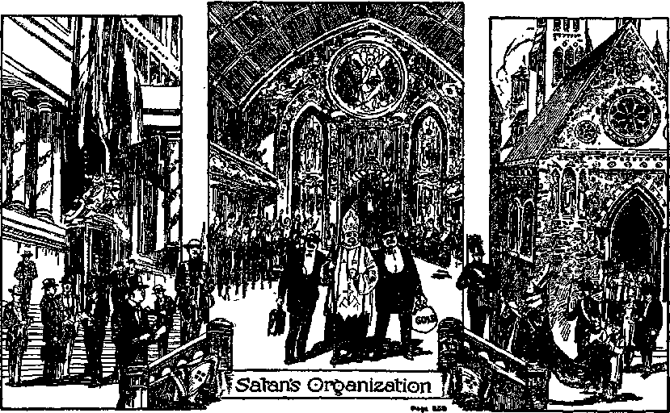"great wrath, because he knoweth that he hath but a short time” to prepare.—Rev. 12:12,
ENEMY’S PREPARATION
In keeping with his usual mode of procedure, Satan the enemy prepares for war, and he does so with great noise and boasting and at the same time keeps the peoples in ignorance of his purpose. Christ Jesus, God’s great Prophet, caused John to make a record of this prophecy: "And I saw three unclean spirits like frogs come out of the mouth of the dragon, and out of the mouth of the beast, and out of the mouth of the false prophet. For they are the spirits of devils, working miracles, which go forth unto the kings of the earth and of the whole world, to gather them to the battle of that great day of God Almighty.”—Rev. 16:13,14.
The three unclean spirits here mentioned are likened unto frogs. A frog swells up, is bombastic, and boasts of what he is going to do and makes much noise about it. The noise of a bullfrog strikes terror to the mind of one who does not know whence the noise emanates. The Devil has the whole world in fear and distress because his ‘bullfrogs’ are bellowing forth their noise. The "dragon” in the text represents the entire satanic organization, while the "beast” is symbolic of the visible part of that organization, and the ‘ ‘ false prophet ’ ’ particularly represents the fraudulent religions. With one accord all these elements of Satan’s organization boast and make much noise of what they are doing and arc going to do.
In substance they say: ‘The earth is ours, and we are going to fix everything to our liking; and when we get through the people will like it.’ This is but voicing the sentiment of the Devil, who says: "My river [peoples] is mine own, and I have made it for myself.” (Ezek. 29: 3) The visible part of the organization makes peace pacts and boldly announces: ‘We have outlawed war and hence there will be no more war, and let the people be assured to that end.’
When the Paris Peace Pact was pending before the United States Senate for ratification, its chief sponsor in America was prancing about like a well-groomed horse that wanted to show itself. Even moving pictures were made of his antics, and these were exhibited before the people throughout the land. At the same time the war organization was pushing the lawmaking body both for the ratification of the peace pact and for more battle-ships. The political whip was brought to bear to carry out the purposes of these in power: “The noise of a whip, and the noise of the rattling of the wheels, and of the prancing horses, and of the jumping chariots. ’ ’—Nah. 3: 2.
Within a few days after the United States Senate ratified the Paris Peace Pact by an almost unanimous vote, the law-making machinery provided for the building of a more powerful navy than has ever before been had, and provided for the expenditure of $275,000,000 for new war vessels, to say nothing about the great expenditure for other military preparations. Public press dispatches, dated February 13, 1929, announced that the president signed a bill that day to authorize the construction of fifteen modern war-ships, and within a few minutes thereafter the building program was begun. The clergy and the religious leaders loudly applaud the action of the political and commercial powers, and say to the people, in substance: ‘ There will be no more war, because we have outlawed war. At the same time we must prepare by building more ships.’
It is rather difficult for the common people to understand the consistency of such actions and declarations. The building of war machines proceeds upon a gigantic scale in every nation called Christendom. The political factors, in the saddle, make the legal provision; the commercial giants arrange for the money; and the clergy provide the sanctimonious smoke screen which their “father” employs to blind the people to the truth. Just as the prophet says, all three are like bullfrogs; but the loudest one, and the most sanctimonious among the three, is the “false prophet” religion.
The preparation goes on and Satan causes his agents, the rulers of the earth, to take counsel together against God and against his Anointed, and to say in substance: ‘Let us break their bands asunder, and cast away their cords from us, and fix the world to suit ourselves.’ “He [Jehovah] that sitteth in the heavens shall laugh; the Lord shall have them in derision. ’ ’—Ps. 2: 2-4.
Returning now to the consideration of Nahum’s prophecy relative to preparation, it is found to be exactly in accord with the prophecy of Revelation above quoted. Jehovah speaks through Nahum and says: “The chariots shall rage in the streets, they shall justle one against another in the broad ways: they shall seem like torches, they shall run like the lightnings.”—Nah. 2:4.
The chariots mentioned in this last quoted verse are not the same chariots as these mentioned in verse three of the same chapter. The chariots first mentioned are outside of the city (the Devil’s organization) and are preparing to lay siege to the Devil’s organization. The chariots mentioned in verse four are in the streets or roadways inside of the city, and are therefore a part of and belong to the city which is the Devil’s organization. These chariots last mentioned are therefore the military organization and machinery of Satan.
The Hebrew word used to translate the word “rage” in verse four of the prophecy is hallal, and means “to praise or to boast”, and is also rendered, “to show oneself foolish.” (Young) Thus the “chariots” of Satan’s organization that “rage” in the streets means the military preparations that are vainglorious and carried on in a boastful manner; and these who are doing it swell up and bellow like bullfrogs making a great noise, while praising their own greatness, and thereby seek to impress the people by appearing in the streets and exhibiting themselves. Why all the noise in the public press and upon the screens of the moving pictures concerning war preparations? Why the great military and naval display at every national function? Why the exhibition at every moving picture show of some politician or warrior who is preparing for war? It is the war organizations and war lords raging in the streets and making themselves foolish. Why, in all the war preparations, at the canteens, in the art galleries, in the public press and in the moving pictures, is the religious element made so prominent? It is always a part of the same bombastic campaign that Satan himself is engineering, and he is blinding the men who are really engaged in it and using them as his dupes. These fraudulently say: ‘We are Christian, and we therefore represent Christendom.’ But be it noted that they do not praise God nor his King, but they praise themselves. They are hurrying in their preparations and boast of their power and make themselves mad and foolish before the Lord. And the preparation goes on!
One translator renders the text thus: “They rush along in the broadways. ” (Rotherham) Thus they do, because among the people they can make better speed by boasting of their power and that they are making the world safe for democracy. Another translator renders the text: ‘ ‘ They rush to and fro in the broad ways.” (A. R. V.) The theught of friction is absent. By means of diplomacy they avoid friction, and thereby keep the real meaning hid from the eyes of the people. Such is always Satan’s method.
Then adds the prophet: ‘ ‘ They shall seem [the appearance of them is, R. V.] like torches.” The word “torches” in this verse is more frequently translated “lamp”, and suggests the view that Satan’s organization-units, or his foremost agencies, will claim or appear to be as lamps lighting the way of the people, or like torches of liberty lighting the way for freedom and progress in the government of the people. It is the clergy that use their pulpits and the radio to harangue the people and to tell them of the great torches of liberty that the heroes are holding forth to light the people into a desirable condition. They are really blind guides and false prophets. God foretold exactly that the condition would exist which now does exist. “For such are false apostles [preachers and teachers], deceitful workers, transforming themselves into the apostles of Christ [claiming to represent Christ, and hence called 'organized Christendom’, or ‘organized Christianity’], And no marvel; for Satan himself is transformed into an angel of light. Therefore it is no great thing if his ministers [the clergy] also be transformed as the ministers of
righteousness; whose end shall be according to their works. ’ ’—2 Cor. 11:13-15.
Then adds the prophet: “They shall run like the lightnings.” They are swift in the execution of their preparations, because Satan knows he has but a short time (Rev. 12:12), and the rulers are in distress and perplexity because of what they see approaching.—■ Luke 21:26.
God’s prophet proceeds: “He shall recount his worthies [margin, gallants] : they shall stumble in their walk; they shall make haste to the wall thereof, and the defence shall be prepared.” (Nah. 2: 5) The word “worthies”, or gallants, in this text is in the American Revised Version rendered “nobles”. The same Hebrew word is rendered “principal of the flock” (Jer. 25:34-36), and also “famous”. (Ps. 136:18) It is Satan’s nobles or principal ones of the flock of the religious organization who are here meant. He has them in mind and recounts them. He takes a census of his chief agencies, and measures the strength of his fighting force as well as of his bellowing “frogs”. Those men are of Satan’s world; hence Satan gives consideration to them.—John 15:19.
Those who carry out Satan’s purposes are his favored ones, hence called his “worthies”, or nobles or famous ones. This is one of his schemes to turn the people away from Jehovah God. Satan keeps before the people the great heroes of his organization. In the religious organizations, in the great political meetings, in meetings of the financiers, in all of these the importance of the principal men, as examples and heroes worthy of praise, is held before the people. The metropolitan press, which is merely the tool or mouthpiece of Satan’s organization, publishes glowing accounts of the valor of the mighty officers of
war, of the power and virtue of the financial giants, and of the greatness of the religious element and religious leaders. It is a mutual admiration society; and the press and the radio, the moving pictures and the artist, are all called into action to glorify the names of men, all of which keeps the minds of the people turned away from Jehovah God.
In his preparation for the great battle Satan summons his nobles and the principal of his flock, and these “noble” clergymen and principal of the flock, hypocritically claiming to be Christians, hurry to obey the summons of their master, Satan, even as the prophet of God says they would do; and as they come “they stumble in their march”. (Zech. 10:5 They stumble over “The Stone”, which is God’s anointed King, as the prophet foretold. They make haste to the defense of Satan’s world or organization; and in so doing they stumble and fall, even as Jesus the great Prophet foretold they would. (Matt. 21:44) “And many among them shall stumble, and fall, and be broken, and be snared, and be taken.” (Isa. 8: 14,15) They hasten to aid in the preparation for the assault upon God’s Anointed, but they fall. “When the wicked, even mine enemies and my foes, came upon me to eat up my flesh, they stumbled and fell.” —Ps. 27:2.
The prophet says: “They shall make haste to the wall thereof.” The clergy and the principal of their flocks make haste to seek the instruments available for the persecution and punishment of these of God’s people who are known as the remnant, and who are diligent in spreading among the people the truth of Jehovah. They make haste to man the bulwarks of Satan’s organization, that the hated remnant may be destroyed. But while this preparation is going on. the clergy, or “nobles”, decline to appear in the open and defend their cause. Their policy is to never enter into an open discussion with these who represent God, because that would expose their duplicity to the people. They are “mighty men of Babylon” (the religious part of the organization), and they swagger about and content themselves with boasting words, and secretly bring their influence to bear upon the political factors to torment God’s witnesses until the day the great battle will be fought.—Jer. 51:30.
Satan knows that shortly he must fight the Lord, and therefore he prepares for the conflict. His method of preparation, however, is that of darkness. By loud boasting, by exalting the virtues and achievements of men, and by putting the nations in fear of each other, he hastens the gathering of the people together for the great day of battle. He is really keeping the men of his visible organization in the dark. Satan hates the remnant of God with a deadly hatred, and he incites his nobles and the principal of the flock to attempt their destruction. Doubtless Satan is confident that he can destroy the insignificant and “pestilential” group in the coming battle, but he now attempts to torment and persecute them.
Satan would completely destroy the remnant now, were it not for the protection God furnishes his own. The prophet refers to Satan’s preparation and to his cohorts preparing for battle, and then says: “And the defence shall be prepared.” These latter words manifestly refer to the protection God furnishes to his remnant. The word rendered “defence” appears in the margin as “covering”, and is a covering or protection for these assaulting Satan’s organization. Rotherham renders the text: “Yet the storming cover is prepared.” Jehovah is the covering, and his protection for his own is “in the secret place of the Most High”, under the shadow of his wing; 'he shall cover these with his feathers, and under his wings shall they trust. ’—Ps. 91:1-4.
Jehovah sent Jonah to prophesy against the capital city of Assyria. The prophecy was given when Jonah had been delivered from the belly of the whale. The destruction of the city was deferred until the day of God’s preparation. Since Jesus Christ was raised from the dead, which was foretold by the deliverance of Jonah (Matt. 12:40), there has been given a testimony to the nations of earth; and particularly has this testimony been given since the second coming of the Lord and the resurrection of the faithful body members of Christ. During that period of time there has been a partial repentance of these who claim to be followers of Christ. Now the testimony work is about complete. The day of God’s preparation is done. War upon and destruction of Satan’s organization is now about due. As the gates of ancient Babylon were opened and the army entered and the city fell, so, as the prophet says, “The gates of the rivers shall be opened, and the palace shall be dissolved,” and Satan’s organization shall fall.—Nah. 2: 6.
The day of battle draws nigh. The day for the judgment of the nations is at hand. The Lord is in his holy temple for judgment. “Hear, all ye people; hearken, 0 earth, and all that therein is; and let the Lord God be witness against you, the Lord from his holy temple. ’ ’—Mic. 1: 2.
Notice must be given to the world, because God does not take action in secret. Through his prophet Jehovah says: “Proclaim ye this among the Gentiles; Prepare war, wake up the mighty men, let all the men of war draw near; let them come up: beat your plowshares into swords, and your pruninghooks into spears: let the weak say, I am strong. Let the heathen be wakened, and come up to the valley of Jehoshaphat [the place and time for Jehovah to pronounce and execute judgment]: for there will I sit to judge all the heathen round about. ’ ’—Joel 3: 9,10,12.
Satan marches his great army into “the valley of decision” for war. With blaring bands of military music and flying banners his officers approach. In the van march the kings, the princes, the presidents, the governors, and the smaller political rulers; the judges and the attendants upon the great judicial systems; the parliaments, the congresses, and all others having to do with the political machinery of the world. More bands and banners, and on come the financial giants of the world, comparatively small in number, but great in power. More music, banners and floats, and then appear in the line of march the mighty ecclesiastical pontiffs, the bishops, the cardinals, the priests, the rabbis, the doctors of divinity, the right reverends and all the other clergy, each wearing an apparel that identifies him, and accompanied by lay leaders and these who serve and receive the collections. Proud, haughty, cold, calculating and severe, and with heavy dignity, each one of the three great governing factors of the visible part of the Devil’s organization takes its respective position in the line of march. Self-importance is written upon their countenance, and selfpraise is upon all lips.
March! March! March! And on they come! In the line there are great magazine owners and publishers, who use their columns to extol the virtues of the mighty worldly organization. There are the owners and publishers of the great metropolitan newspapers, which mold public opinion in favor of the ruling heroes. More bands of music, and on come the chariots and horses of war. These are no part of the ruling factors, but they are instruments employed by the ruling factors.
Tramp! Tramp! Tramp ! Will they never cease to tramp? All the nations must come, because they must assemble to drink of that cup of wrath which God has poured for them, and none can refuse.— Jer. 25:28.
There are more than sixty nations that are putting forth their best endeavors to equip for war. Some idea of the number of poor souls that are prepared for the slaughter, and which form a military instrument of the Devil’s organization, may be gathered from the following table, which sets out the name of the country, the active army, the organized reserve, the unorganized reserve, and the total military manpower. These figures are published by the U. S. War Department, as of September 24, 1928.
|
Country |
Active Army |
Organized, Reserve |
Unorganized Reserve |
Total Military Man-Power |
|
Albania |
13,200 |
122,800 |
136,000 | |
|
Austria |
43,045 |
1,002,613 |
1,045,658 | |
|
Belgium |
71,495 |
500,000 |
312,280 |
883,775 |
|
Bulgaria |
33,000 |
750,000 |
783,000 | |
|
Czechoslovakia |
150,000 |
1,489,000 |
475,000 |
2,114,000 |
|
Denmark |
9,177 |
150,000 |
394,000 |
553,177 |
|
Estonia |
17,000 |
27,000 |
127,000 |
171,000 |
|
Finland |
25,500 |
235,000 |
265,000 |
525,500 |
|
France |
666,945 |
5,010,000 |
600,000 |
6,276,945 |
|
Germany |
100,500 |
8,600,500 |
8,701,000 | |
|
Great Britain |
212,044 |
318,579 |
6,469,377 |
7,000,000 |
|
Greece |
79,676 |
415,000 |
400,324 |
895,000 |
|
Hungary |
71,236 |
1,267,108 |
1,338,344 | |
|
Irish Free State |
12,950 |
13,573 |
358,477 |
375,000 |
|
Italy |
346,990 |
2,995,246 |
2,000,000 |
5,342,236 |
|
Jugoslavia |
142,000 |
1,200,000 |
850,000 |
2,192,010 |
|
Latvia |
19,000 |
200,000 |
21,000 |
240,000 |
|
Lithuania |
21,235 |
170,000 |
108,765 |
300,000 |
|
Netherlands |
32,126 |
341,465 |
812,000 |
1,185,591 |
|
Norway |
30,000 |
315,000 |
105,000 |
450,000 |
|
Poland |
242,372 |
500,000 |
2,000,000 |
2,742,372 |
|
Portugal |
34,957 |
372,891 |
638,496 |
1,046,344 |
|
Roumania |
266,500 |
750,000 |
583,500 |
1,600,000 |
|
Russia |
658,000 |
5,425,000 |
7,877,000 |
13,960,000 |
|
Spain |
260,700 |
1,853,503 |
885,797 |
3,000,000 |
|
Sweden |
10,200 |
720,375 |
254,425 |
985,000 |
|
Switzerland 494 Arabia China 1,500,000 |
309,636 |
323,310 1,012,500 14,000,000 |
633,440 1,012,500 15,500,000 | |
|
India Iraq |
163,556 6,075 |
89,096 |
2,747,348 412,055 |
3,000,000 418,130 |
|
Japan |
210,000 |
2,038,000 |
5,092,000 |
7,340,000 |
|
Turkey |
119,500 |
250,000 |
375,000 |
744,500 |
|
Abyssinia 50,000 Egypt & Sudan 19,826 |
250,000 |
1,146,430 3,116,474 |
1,446,430 3,136,300 | |
|
Liberia Union of |
3,300 |
3,500 |
100,000 |
106,800 |
|
South Africa |
9,545 |
24,000 |
231,455 |
265,000 |
|
Argentina |
33,790 |
310,751 |
1,156,491 80,000 |
1,501,032 |
|
Bolivia |
8,750 |
30,000 |
118,750 | |
|
Brazil |
46,436 |
195,821 |
899,638 |
1,141,895 |
|
Canada |
3,496 |
60,982 |
785,522 |
850,000 |
|
Chile |
46,604 |
177,000 |
435,000 |
658,604 |
|
Colombia |
9,959 |
34,960 |
250,000 |
294,919 |
|
Costa Rica |
318 |
37,955 |
13,205 |
50,578 |
|
Cuba |
1,157 |
2,000 25,000 |
199,862 |
214,019 |
|
Ecuador Guatemala |
5,814 7,794 |
100,000 125,000 |
130,814 132,794 | |
|
Haiti |
3,144 |
20,000 |
200,000 |
223,144 |
|
Honduras |
2,253 |
39,375 |
22,925 |
64,553 |
|
Mexico Newfoundland Nicaragua Paraguay |
76,243 1,200 2,722 |
12,741 |
1,111,016 50,600 64,638 55,000 |
1,200,000 50,600 65,838 57,722 |
|
Peru Salvador |
14,222 3,929 |
20,000 215,576 |
80,000 |
114,222 219,505 |
|
Santo Domingo 2,100 |
25,000 |
80,000 |
107,100 | |
|
United States Uruguay |
134,505 9,300 |
291,744 7,000 |
149,000 |
18,500,000 165,300 |
|
Venezuela |
7,500 |
78,500 |
80,000 | |
|
Australia |
1,600 |
53,000 |
545,400 |
600,000 |
|
New Zealand |
533 |
22,039 |
177,427 |
199,999 |
It will be observed that the total military man-power set forth above is, to wit, 124,192,440 men. For all these men there must be war equipment, such as guns, swords, knives, knapsacks, gun carriages, tanks, ammunition, bombs, and all other instruments of destruction used by men of war. Then add to the above the tremendous navies of the countries, which are not here set forth, including torpedoes and numerous submarines. To this add the enormous aircraft that fly through the air and drop deadly missiles upon men. To this add poison gases, a comparatively small quantity of which would destroy a whole city in less than a day.
These are all marching into “the valley of decision”, the mass of them ignorant of why they are going there. There are multitudes upon multitudes of people who are no part of this organization, but who are either indirectly or directly affected thereby. These include the drivers of motors, the hospital corps, these who supply and convey the food necessary to feed the armies, the doctors and the nurses. And then there are other multitudes upon multitudes of people who are indirectly affected, because their necessities of life must be curtailed in order to supply the military organization. And then, over and above all this visible organization, unseen by all and known by a very few, rides the Devil, its mighty god, flanked and supported by hordes of evil angels.
In view of all this array of organized power, even some who claim to be Christians scorn the thought of a Devil’s organization. It might here be asked, Whose organization is it that is above described? Surely God does not need such; and while these come in the name of the Lord, they come hypocritically in his name, but in fact in the name of Satan the Devil.
The visible part of God’s organization is really small and insignificant, so small, in fact, as to hardly deserve notice. They are on the other side of the valley of decision, under the banner of the Lord. They bear no weapons of warfare; only their trumpets do they have with which to sound the praises of Jehovah God. The visible members of Satan’s organization look upon this small and insignificant company of trumpeters with contempt. They are the only visible foes of Satan, and they refuse to compromise with any part of his organization. They persist in singing forth Jehovah’s praise and in declaring the wonders of his works. Satan incites the clergy to destroy the little band of trumpeters, or singers, because the great ecclesiastics are annoyed by the presence of and the noise made by this small company of witnesses. The little company is doing no harm to any one; the politicians would find no occasion against them except for the influence of the ecclesiastics, and the financiers are too busy to give them any heed; but both must heed their ally’s demands, because Satan is very mad at this little company and would destroy them. (Rev. 12:17) The Lord says to them: ‘Continue to sound your trumpets, cease not day or night, and fear not; no evil shall befall you; I have put my words in your mouth; tell it out that others might know that I am God.’—Isa. 62: 6; 51:16; Ps. 91:10.
The power and military strength of the invisible part of God’s organization can not be stated, because it is not revealed. We know that Jesus said that he could call for twelve legions of angels for his own defense. We know, therefore, that there are angels of great power who form a part of God’s mighty organization. Christ Jesus is the Head of it, the field marshal leading the forces; and over and above it all rides the Almighty God. The power thereof may be approximated somewhat by the results that follow. The great issue to be determined finally is, Who is the Almighty God? The day of decision is at hand, and these who have some knowledge of and faith in the Word of God are now enabled to determine from the words of the prophets what shall be the result.
CHAPTER X
War
JEHOVAH begins the battle, because it is his war. It is an expression of his righteous indignation against the assembled nations. (Isa. 34:1, 2) His great executive officer is revealed in the prophecy as seated upon a white horse, “and in righteousness he doth judge and make war. ’’ (Rev. 19:11) The “white horse” is symbolic of the righteous war which he is about to begin. The crowns upon his head show that he is clothed with all power and authority.
It is the great valley of judgment, because the nations are assembled there in battle array to receive the decision of the Almighty God. It is the valley of slaughter, because there Satan’s organization shall be destroyed. Jehovah caused his prophet to say to the enemy organization: “I have laid a snare for thee, and theu art also taken, 0 Babylon, and theu wast not aware: theu art found, and also caught, because theu hast striven against the Lord. The Lord hath opened his armoury, and hath brought forth the weapons of his indignation: for this is the work of the Lord God of hosts in the land of the Chaldeans. ’ ’ (Jer. 50: 24, 25) “In their heat I will make their feasts, and I will make them drunken, that they may rejoice, and sleep a perpetual sleep, and not wake, saith the Lord. I will bring them down like lambs to the slaughter, like rams with he goats. How is Sheshach taken! ’ ’—Jer. 51:39-41.
Jehovah has proven that every one of his prophets is true, and has proven it by applying to each one and his prophecy the three divinely-made rules, to 274 wit: (1) Each one of them spoke in the name of Jehovah; (2) each one spoke with loyalty to Jehovah, intending to turn the people to Jehovah and to honor his name; and (3) at least a portion of the things foretold by each prophet has come to pass, and what is yet unfulfillled is certain to come to pass. Those parts of the prophecies that have not come to pass relate to the great battle, or the war of God Almighty against Satan and his organization, which will involve every nation of earth. These prophecies must be accepted as true when the divine rule mentioned is applied to the prophecies, and it therefore follows that the great war of Jehovah God is yet to come, is now impending, and will shortly begin.
Jehovah pours the cup or potion of his wrath and compels each nation to drink thereof, so the prophet declares. It is a death potion, because they shall drink, “and fall, and rise no more, . . . for I will call for a sword upon all the inhabitants of the earth, saith the Lord of hosts.” (Jer. 25: 27, 29) But why should God bring such a great calamity upon all the nations and inhabitants of the earth? He assigns a reason for so doing.
THE REASON
Is it because a few men have become possessors of exceeding great riches that God will bring the great war? Surely that is not the reason. Material riches alone are not condemned by the Lord. Solomon was very rich. (2 Chron. 1:12) Jehoshaphat had riches in abundance. (2 Chron. 17:5) Hezekiah had “exceeding much riches”. (2 Chron. 32:27) God did not condemn any of them because of their riches.
Is the great war impending and about to fall because the political rulers have not ruled the people perfectly? Surely not that. Some one had to rule, and, all men being imperfect, no man could rule perfectly. There have been many men in politics who have honestly done the best they knew how to do. Many of the rieh men in politics have used their means to do good.
Then why should this great impending calamity come upon the people and nations of the earth? It is because the people have been turned away from Jehovah God and caused to worship the Devil, and because Jehovah’s holy name has been hypocritically used thereby, bringing reproach upon him and turning the people away from him to their own injury, and therefore turning the people in the way of the Devil and destruction. And who is the most reprehensible and responsible for this condition?
Call to mind that Satan first organized Babylon and instituted the Devil religion, inducing the people to worship him and to reproach and defame Jehovah God’s holy name. Then he organized Egypt the great world power, putting the commercial and military forces to the front, and saddled his Devil religion upon the nations; and this he did to bring reproach upon Jehovah God’s name. Then he organized Assyria with the politicians in the fore, supported by the commercial power, and saddled upon that world power the satanic religion and turned the people away from Jehovah God. In turn he saturated with the Devil religion every world power that followed, and by fraud and deception has brought reproach upon God’s name and turned the people away from him.
When Christianity, which was organized as a pure organization, began to grow, Satan organized a great commercial and political world power and caused it to adopt the Christian religion in name only, and corrupted the organization known as Christianity and made it a Devil religion. This does not mean that he corrupted the pure Christians, but he corrupted the organization, made it a part of his own organization, and called it “Christian”. It is therefore clearly seen that Babylon is the Devil’s organization, is ‘the mother of all harlots’, and has caused the political rulers and the commercial giants of the earth to commit fornication with her; and thereby all the world powers, made up of political, commercial and religious factors, have brought ignominy and shame and reproach upon the name of Jehovah God. The politicians and the rulers and the commercial giants, who have gathered great riches and honor and power, have been adopted by Satan’s wicked religious system and drawn into his net, and have been made a part of Babylon.
The Lord has caused the names and history of the first three great world powers to be recorded that it may be seen at the end of the world how they have represented the Devil. Egypt is one of the names of the Devil’s organization with the commercial and military power in the van; Assyria is one of the names of the same Devil’s organization with the political rulers made prominent; and Babylon is the name of the Devil’s organization with religion made prominent. All constitute the Devil’s organization, and all are combined at the present time in the League of Nations and in peace treaties and world courts, in which the wickedness of the enemy has been brought to the full. Many of the inhabitants of the earth have been drawn into the organization and willingly support it. Both the political and the commercial rulers are responsible before God for what wrong they have done, but the most reprehensible and responsible before Jehovah, and who deserve and shall receive the severest punishment, are the religious leaders and the principal ones of the religious flocks.
God has plainly indicated in his Word that the peoples of Egypt and Assyria shall be recovered and saved. (Isa. 19:20-23) But that Babylon shall become utterly desolate and never arise again, is made certain by his Word. The religions, organized by the Devil and carried on by his agencies, have been deliberately so formed and used to reproach God and to turn the people in the way of destruction. There was never any excuse for this, and therefore there are no extenuating circumstances to be taken into consideration at the final judgment upon Babylon. By the words of his prophet God names three reasons why he will bring the great calamity of the final war upon the world: “Behold, the Lord maketh the earth empty, and maketh it waste, and turneth it upside down, and scattereth abroad the inhabitants thereof. The earth also is defiled under the inhabitants thereof; because they have [1] transgressed the laws, [2] changed the ordinance, [3] broken the everlasting covenant. ’ ’—Isa. 24:1, 5.
The laws of Jehovah are rules of action which he has made and promulgated for the benefit of man. He is the great Life-giver, and no man can obtain life everlasting without knowing and obeying God. Therefore for man’s benefit he made these laws: (1) “Thou shalt have no other gods before me.” (Ex. 20:3) (2) “Thou shalt not make unto thee any graven image, or any likeness of any thing that is in heaven above, or that is in the earth beneath, or that is in the water under the earth. ” (Verse 4) (3) “Thou shalt not bow down thyself to them, nor serve them.” —Verse 5.
Every nation under the sun practises a religion that is in violation of these laws. The most reprehensible lawbreakers among all who have practised a hypocritical religion are these known as “organized Christianity” or “Christendom”, because such has been practised as the religion of and in the name of Jehovah God and his beloved Son Christ Jesus; and it has been practised and is practised hypocritically. Hypocrisy is an abomination in the sight of God. The majority of the nations that form the League of Nations claim to practise the “Christian religion”, and they do so blasphemously by assuming that the League of Nations represents Christ’s kingdom on earth. This devilish religion is “the abomination that mak-eth desolate”. Both Cathelics and Protestants join together in the name of Christ and hypocritically ‘take their stand in the holy place’, claiming to represent God on earth. The pope, as head of the Cathelic religious system, claims to be the special vicegerent of Christ and his kingdom, and that the present wicked kingdoms of the world are Christ’s kingdom. Both Cathelic and Protestant religions name the name of Christ and, forming what is known as “organized Christianity”, join together in the adoption of the League of Nations, claiming that the whole arrangement is the visible expression of God’s kingdom on earth; therefore these have particularly broken the laws of God, as stated above by the prophet. —Matt. 24:15.
Another reason assigned is that they have “changed the ordinance”. The ordinance is a commandment. Note that it is “the ordinance”, stated in the singular, and therefore must mean the chief commandment. In response to the question as to what constitutes the great or chief commandment of God, Jesus answered: “Thou shalt love the Lord thy God with all thy heart, and with all thy soul, and with all thy mind. This is the first and great commandment.”—Matt. 22:37, 38.
Every religious organization or system of the world has changed this great commandment. Particularly is this statement true with reference to “organized Christianity” so called. It changes the commandment and causes the people of earth to bow down to a man, as, for example, the head of the Roman system. It changes the commandments by teaching the people to bow down and worship objects and things in the church organization. Let every honest person judge for himself as to whether or not the clergy and religious teachers of “organized Christianity” so called are wholly devoted to the Lord God. If they are not, then they have changed the ordinance. If they loved God and were wholly devoted to him, they would keep his commandments to tell the people concerning his plan of redemption by and through the blood of Christ Jesus his beloved Son, and that his kingdom, when established on earth, will offer the opportunity of life everlasting to the peoples of earth who will obey his laws.
Instead of so doing, they deny the Bible account of creation and the fall of man and redemption through the blood of Christ Jesus. They teach the wicked and devilish doctrine of the so-called “holy trinity”, in which they make Jesus and the “Holy Ghost” equal with Jehovah God, and then fail to show any love for either God or Christ Jesus. They have freely entered into and participated in the politics of this world, and hypocritically tell the people that the present organized powers will bring them lasting peace and health and happiness and make the earth a fit place to live on. They designedly indulge in and practise a religion that turns the people away from God and causes them to hate him rather than to love him. They teach that Jehovah God is a great fiend who has prepared a place of indescribable torture for all who do not come within the folds of their religious system and loyally remain there. If they loved God they would not do that.
A third reason assigned for the impending war is that they have “broken the everlasting covenant”. After the tragedy of Eden the first covenant mentioned in the Bible is that made with Noah. When Noah came out of the ark God told him that he could have everything needful to sustain his life, that he might even take the lives of animals for that purpose, but that he must not eat the blood thereof, wherein is the life. There it was that God made the everlasting covenant with Noah; and in that covenant the sanctity of human life is emphasized. God said to Noah: “And surely your blood of your lives will I require; at the hand of every beast will I require it, and at the hand of man; at the hand of every man’s brother will I require the life of man. Whoso sheddeth man’s blood, by man shall his blood be shed: for in the image of God made he man. ’ ’—Gen. 9:5,6.
This is the “everlasting” covenant referred to by the prophet, because God so names it. At the same time God promised that there should never be another flood that would destroy all the creatures of earth; but the most important part of that covenant was the sanctity of life, which God particularly specified in the covenant. He set a rainbow in the heavens as a token to man of the covenant. Then he said: “And the bow shall be in the cloud; and I will look upon it, that I may remember the everlasting covenant between God and every living creature of all flesh that is upon the earth.”—Gen. 9:16.
This covenant can not be limited to the destruction of the world by a flood. If God should refrain from destroying the people by a flood of water, he could still keep that covenant and destroy all the people by some other means. The entire context shows that the most important part of that everlasting covenant is that no man shall take the life of another, except he do so as the duly constituted executive officer authorized by the Lord so to do.
The reason for the law is the life of the law. Jehovah God is the great Life-giver, and therefore no man can with impunity take the life of another. Man could not give life ■ and he is not authorized to take that which he can not give. When God made his law covenant with the Israelites, he again emphasized the importance of life when he specifically commanded them, saying, “Thou shalt not kill.” It is God who gives life, and God alone has the right to take away life. (Job 1:21) God may and does delegate that autherity to others. For instance, he did this in autherizing his people to destroy the enemies of Israel. He delegated the right of execution to his beloved Son Christ Jesus, and he is the great executive officer who will execute Jehovah’s judgment in the impending war or trouble.
All nations, without an exception, have broken the everlasting covenant. It may be said that most of them have done so ignorantly; but they have done it. It becomes the duty of these who claim to be teachers of God’s law to know the law and to teach the people the truth thereof. The clergy, as the people well know, have sanctified war and induced the people to believe that it was and is their sacred duty to kill. Let the peoples be the judge as to whether or not the clergy have had any excuse or justification for the course they have taken concerning war.
In the World War of 1914 to 1918 many clergymen went with Germany and her allies, and blessed the armies of such, and urged them to kill their fellow men. Britain and her allies were strongly supported by the clergy of their respective countries, both at home and near the battle-field, where they preached to the young men and told them it was their solemn duty to hate and kill their fellow man. No clergyman can stand before an audience anywhere on earth today and honestly declare that “organized Christianity” has ever taken an unequivocal stand on the side of the Lord and asked the people not to kill. The people will be the judges, when considering the facts, that all nations, particularly so-called Christendom, have broken the everlasting covenant; and this is one of the reasons why God will bring the great war upon the nations of earth as a just punishment. “Whoso sheddeth man’s blood, by man shall his blood be shed. ’ ’ The man who preaches and urges men to go to the front and kill is equally guilty of the crime with these who kill; and therefore God will punish the nations, and particularly Christendom, and he declares that “the man Christ Jesus” shall be the executive officer to inflict divine punishment.
Jehovah God promised to assemble the nations for judgment and for execution. (Zeph. 3:8; Joel 3:1114) In the valley of decision, with the great assembly, as mentioned in the preceding chapter, stand the -haughty, austere, proud and disdainful clergy. These gentlemen usually wear peculiar garments to identify themselves, and often wear skirts. By his prophet God notifies the assembled ones of his purpose to begin the war, and he assigns the reasons therefor. Addressing himself to the clergy and the religious leaders and principal of their flock, he tells them in substance: ‘You have a form of godliness, but you deny the power thereof; you draw near to God with your lips, but your hearts are far removed from the Lord; therefore you are hypocrites. ’—2 Tim. 3:5; Isa. 29:13; Matt. 23:13-32.
Then, addressing them specifically, the Lord Jesus says to all such hypocrites: “Ye serpents, ye generation of vipers, how can ye escape the damnation of hell ? . . . Upon you may come all the righteous blood shed upon the earth, from the blood of righteous Abel unto the blood of Zacharias.” (Matt. 23: 33-36) The Lord Jehovah tells the political and commercial factors of the nations of the earth of their bloody deeds in violation of the everlasting covenant, and then, specifically addressing himself to the clergy or religious leaders, says: “In thy skirts is found the blood of the souls of the poor innocents; I have not found it by secret search, but upon all these.”— Jer. 2:34.
The innocent blood, mentioned in the last above quoted prophecy, includes the blood of many who have been killed because they faithfully represented Jehovah God: “And I saw the woman [Babylon] drunken with the blood of the saints, and with the blood of the martyrs of Jesus; and when I saw her, I wondered with great admiration.” (Rev. 17:6) “And in her was found the blood of prophets, and of saints, and of all that were slain upon the earth.” —Rev. 18: 24.
Addressing the great organization of Satan assembled in the valley of decision, Jehovah pronounces final judgment upon that organization, symbolized by Egypt: “Thus saith the Lord God; Behold, I am against thee, Pharaoh king of Egypt, the great dragon that licth in the midst of his rivers, which hath said, My river is mine own, and I have made it for myself. ... I will bring thee up out of the midst of thy rivers. ... I will leave thee thrown into the wilderness, thee and all the fish of thy rivers. ... I have given thee for meat to the beasts of the field and to the fowls of the heaven. ... I am against thee, and against thy rivers, and I will make the land of Egypt utterly waste and desolate. ’ ’—Ezek. 29: 3-5,10.
Then says the Lord: “Behold, the Lord rideth upon a swift cloud, and shall come into Egypt; and the idols of Egypt shall be moved at his presence, and the heart of Egypt shall melt in the midst of it. And I will set the Egyptians against the Egyptians; and they shall fight every one against his brother, and every one against his neighbour; city against city, and kingdom against kingdom. ’ ’—Isa. 19:1, 2.
Jehovah pronounces his final judgment against the Devil’s organization, represented by Assyria, and says: “Woe to the bloody city! it is all full of lies and robbery; the prey departeth not. Behold, I am against thee, saith the Lord of hosts; and I will discover thy skirts upon thy face, and I will shew the nations thy nakedness, and the kingdoms thy shame. And it shall come to pass, that all they that look upon thee shall flee from thee, and say, Nineveh is laid waste: who will bemoan her ? whence shall I seek comforters for thee ? ’ ’—Nah. 3:1, 5, 7; Mie. 5: 6,
Jesus, the great Prophet, denounces Satan as “a murderer from the beginning”. Satan’s organization has followed a like course. (John 8: 42-44) Of all the haughty, austere, arrogant and disdainful men that have filled the organization of Satan, the religious leaders have taken the front seats. The paintings in the great art galleries stand as silent witnesses to their austerity. The history of the world shows how cruel and austere they have been. As an example, John Calvin, the great ecclesiastic, condemned his fellow man Servetus to death because of his disagreement with Calvin’s belief concerning the Bible. Calvin signed the death warrant and caused Servetus to be burned alive at the stake. There are many places throughout the earth that mark the martyrdom of men and women who were burned or otherwise maliciously murdered because of the cruelty of the religious leaders.
God pronounces final judgment upon the Devil’s organization as symbolized by Babylon and says: “For she hath been proud against the Lord, against the Holy One of Israel. . . . Behold, I am against thee, 0 theu most proud, saith the Lord God of hosts; for thy day is come, the time that I will visit thee. And the most proud shall stumble and fall, and none shall raise him up; and I will kindle a fire in his cities, and it shall devour all round about him.” (Jer. 50:29-32) Then the Lord addresses himself to this devilish organization, particularly to the Devil himself, and says: “0 theu that dwellest upon many waters, abundant in treasures, thine end is come, and the measure of thy covetousness. Behold, I am against thee, 0 destroying mountain, saith the Lord, which destroyest all the earth: and I will stretch out mine hand upon thee, and roll thee down from the rocks, and will make thee a burnt mountain,” (Jer. 51:13, 25) That it may be understood that this judgment is upon the Devil as well as his organization, Jehovah, through his prophet, says: “And I will punish Bel [head of the organization] in Babylon, and I will bring forth out of his mouth that which he hath swallowed up: and the nations shall not flow together any more unto him: yea, the wall of Babylon shall fall.”—Jer. 51:44.
Today the nations of the earth, particularly these forming the League of Nations, call themselves Christendom or Christian, therefore they “call themselves by the name of the Lord”. Addressing himself to all the nations forming the visible part of Satan’s organization, and specifically pointing out “organized Christianity”, or Christendom so called, Jehovah, through his prophet, says: “For, lo, I begin to bring evil on the city which is called by my name, and should ye be utterly unpunished? Ye shall not be unpunished : for I will call for a sword upon all the inhabitants of the earth, saith the Lord of hosts. Therefore prophesy thou against them all these words, and say unto them. The Lord shall roar from on high, and utter his voice from his holy habitation; he shall mightily roar upon his habitation; he shall give a shout, as they that tread the grapes, against all the inhabitants of the earth. A noise shall come even to the ends of the earth; for the Lord hath a controversy with the nations, he will plead with all flesh; he will give them that are wicked to the sword, saith the Lord. Thus saith the Lord of hosts, Behold, evil shall go forth from nation to nation, and a great whirlwind [war] shall be raised up from the coasts of the earth.”—Jer. 25:29-32.
Having pronounced his specific judgment against the Devil’s organization assembled in the valley of decision, Jehovah begins the battle. He commands, and his mighty executive officer, Christ Jesus, leads the assault. “For he commandeth, and raiseth the stormy wind, which lifteth up the waves thereof. They mount up to the heaven, they go down again to the depths: their soul is melted because of trouble. They reel to and fro, and stagger like a drunken man, and are at their wits’ end.” (Ps. 107:25-27) A stormy wind or whirlwind is a symbol of a great war. The great battle of God Almighty is on and proceeds to a conclusion.
THE RESULT
The prophets of Jehovah described the progress of the war, and the result. Knowing that these prophets are proven to be true prophets of God, their testimony here given imports absolute verity. Jehovah is the right-hand support of his beloved Son who leads the fight, and concerning which the prophet says: “The Lord [Jehovah] at thy right hand shall strike through [shatter] kings in the day of his wrath. He shall judge among the heathen [nations] ; he shall fill the places with the dead bodies; he shall wound the heads [hath shattered the head, Rotherham] over many countries.”—Ps. 110: 5, 6.
Jehovah will give such a demonstration of his power that all may see and know that he alone is the Almighty God. The time having come to settle the issue, it shall be settled. “Who can stand before his indignation? and who can abide in the fierceness of his anger? his fury is poured out like fire, and the rocks are thrown down by him. The Lord is good, a strong hold in the day of trouble; and he knoweth them that trust in him. But with an overrunning flood he will make an utter end of the place thereof, and darkness shall pursue his enemies.” (Nah. 1:6-8) “And I will bring distress upon men, that they shall walk like blind men, because they have sinned against the Lord; and their blood shall be poured out as dust, and their flesh as the dung. Neither their silver nor their gold shall be able to deliver them in the day of the Lord’s wrath; but the whole land shall be devoured by the fire of his jealousy: for he shall make even a speedy riddance of all them that dwell in the land.”—Zeph. 1:17,18.
Jesus Christ, the great Prophet, declared that the battle of God Almighty will be the worst trouble that ever has been or ever will be visited upon the world. (Matt. 24:21) That it will completely uncover and destroy the Devil’s organization and all the works and workers of iniquity, the prophet makes clear when he says: “And the slain of the Lord shall be at that day from one end of the earth even unto the other end of the earth: they shall not be lamented, neither gathered, nor buried; they shall be dung upon the ground. ’ ’—Jer. 25: 33.
That it will be a day of despair and vain howling of the shepherds, the prophet also plainly states: 1 ‘ Howl, ye shepherds, and cry; and wallow yourselves in the ashes, ye principal of the flock: for the days of your slaughter and of your dispersions are accomplished; and ye shall fall like a pleasant vessel.” (Jer. 25:34) When a pleasant vessel falls and is destroyed, these who possessed it are in distress. The illustration is an apt one, that the shepherds who have deceived the people shall so fall, as the prophet states.
Further describing the calamity befalling the organization, the prophet says: “And the shepherds shall have no way to flee, nor the principal of the flock to escape. A voice of the cry of the shepherds, and an howling of the principal of the flock, shall be heard: for the Lord hath spoiled their pasture. And the peaceable habitations are eut down because of the fierce anger of the Lord. He hath forsaken his
covert, as the lion; for their land is desolate, because of the fierceness of the oppressor, and because of his fierce anger.”—Jer. 25:35-38.
The Devil’s organization, represented by Babylon, shall fall and become desolate, as it is written by the prophet: “Babylon the great is fallen, is fallen, and is become the habitation of devils, and the hold of every foul spirit, and a cage of every unclean and hateful bird.” (Rev. 18:2) From the very beginning Babylon was the Devil’s organization and associated with unclean spirits. This text in no wise disproves that conclusion. On the contrary, the prophecy here quoted describes the condition of desolation that comes upon Babylon after her fall. The words are these of description, showing her condition after God has broken her down.
Good men and women have long been held in Babylon by the sophistry and deception of Satan and his agencies. After her fall, no more shall men or women dwell in her, but she becomes the habitation of hateful birds and beasts. She will be shunned by every man and woman. Another prophet of Jehovah supports this conclusion: “And Babylon, the glory of kingdoms, the beauty of the Chaldees’ excellency, shall be as when God overthrew Sodom and Gomorrah. It shall never be inhabited, neither shall it be dwelt in from generation to generation: neither shall the Arabian pitch tent there; neither shall the shepherds make their fold there. But wild beasts of the desert shall lie there; and their houses shall be full of doleful creatures; and owls shall dwell there, and satyrs shall dance there. And the wild beasts of the islands shall cry in their desolate houses, and dragons in their pleasant palaces.” (Isa. 13:19-22) “And Babylon shall become heaps, a dwellingplace for dragons, an astonishment, and an hissing, without an inhabitant.” (Jer. 51: 37) The destruction of the Devil’s organization will therefore be complete, and will demonstrate to all creation that Jehovah is the Almighty God besides whom there is none.
THE WINE-PRESS
Jehovah uses apt illustrations to make plain his purposes. In the sixty-third chapter of Isaiah his prophet sets out one of such illustrations. What is there recorded follows shortly upon the coming of the great witness that God commands to be given, as detailed by the same prophet in Isaiah 62:10. The prophet has a vision of one returning from the slaughter of Edom and Bozrah and whose raiment is sprinkled -with blood. Undoubtedly the one seen in such apparel is the same one described in another prophecy: ‘‘And he was clothed with a vesture dipped in blood; and his name is called The Word of God.” —Rev. 19:13.
It is helpful to an understanding of a prophecy to first explain the meaning of some of the words which appear therein and in connection therewith.
The name “Edom” represents that which is opposed to the Lord. (Obad. 1) It has the same meaning as “Esau”, and therefore refers to the organization of Satan, the most reprehensible element of which is the religious element. Idumea has the same meaning as “Edom”, and really is Edom. (Isa. 34: 5) The wrath of God is especially against Idumea. (Ezek. 35:15) It refers to the same wicked system as described in Revelation 19:19, 20.
Bozrah was the chief city of Edom. Therefore Bozrah would represent that which is the center or most important part of the Devil’s organization, to wit, the ruling factors. These consist of the commercial, political, and religious factors, the latter being the most reprehensible because claiming directly to represent God.
The wine-press is the instrument, or organization, employed by Jehovah to crush or break up the fruit of the evil vine. “The vine of the earth,” or that evil vine (Rev. 14:18,19), produces the grapes or fruit of the earth. The earth represents the Devil’s organization visible to man. The vine of the earth is the very opposite of “the true vine”, and is therefore the official part of the Devil’s organization.
The American Revised Version gives a better rendering of the text, and therefore the quotation is from that version. The prophecy begins with a colloquy. The first speaker is the prophet, and the second speaker is Christ Jesus, the mighty executive officer of Jehovah God who assaults the stronghold of the enemy. —Isa. 63:1-6, A. R. V.
The first speaker propounds the question: “Who is this that cometh from Edom, with dyed garments from Bozrah? this that is glorious in his apparel, marching in the greatness of his strength?”
Second speaker: “I [Christ, the great executive officer and Prophet of Jehovah] that speak in righteousness, mighty to save.” (He is the mighty Savior and Deliverer of oppressed humanity.)
First speaker: “Wherefore art theu red in thine apparel, and thy garments like him that treadeth in the winevat [or trough] ?”
Second speaker: “I have trodden the winepress alone; and of the peoples there was no man with me: yea, I trod them in mine anger, and trampled them in my wrath; and their lifeblood is sprinkled upon my garments, and I have stained all my raiment. For the day of vengeance was in my heart, and the year of my redeemed is come. And I looked, and there was none to help ; and I wondered that there was none to uphold: therefore mine own arm brought salvation unto me; and my wrath, it upheld me. And I trod down the peoples in mine anger, and made them drunk in my wrath, and I poured out their lifeblood on the earth.”—Isa. 63: 3-6, A. R. V.
The wine-press, being the instrument employed by Jehovah to crush out the vine of the earth, is therefore God’s organization which he employs to destroy Satan’s organization. The great Prophet, Christ Jesus, is the chief One in this organization and leads the warfare. He made mention of the wine-press in his prophecy: “And the angel thrust in his sickle into the earth, and gathered the vine of the earth, and east it into the great winepress of the wrath of God.” (Rev. 14:19) “He treadeth the winepress of the fierceness and wrath of Almighty God. ’ ’—Rev. 19:15.
The time arrives for the great executive officer of Jehovah to begin his work of destruction against the enemy organization. He says: “And I looked, and there was none to help.” Necessarily this must take place before the actual assault begins. Here is further proof that Christendom, or “organized Christianity”, is not on the side of Jehovah, but on the side of Satan the enemy. The World War of 1914 brought this proof into the open. The religious element, in violation of the everlasting covenant, openly advocated the shedding of human blood in that war. In the spring of 1918 a few leaders amongst the clergymen of London, the very seat of “organized Christianity”, issued a manifesto declaring their belief, by reason of the war and attending facts, that the kingdom of God was at hand. That manifesto was entirely rejected by the clergy of Christendom, and in January, 1919, “organized Christianity” openly approved the League of Nations and declared it to represent God’s kingdom on earth. There Christendom, or “organized Christianity”, took its stand openly on the side of Satan. The great Prophet Christ Jesus, continuing, says: “I wondered that there was none to uphold” in the assault upon the enemy. After he goes into the war, and upon returning, he says: “I have trodden the winepress alone, and of the peoples there was no man with me.” That statement does not refer to the angels, of course, nor to any of the members of the body of Christ, because the latter are a part of Christ himself. (Ps. 69:5) Furthermore, the prophet shows that these body members are willing volunteers in the day of his wrath. (Ps. 110:3) (See also Revelation 19:14.) Undoubtedly what the words mean is, that no man of the professed “organized Christianity” on earth will be with the Lord in this fight. Only these who constitute the “remnant” and who are therefore members of the body of Christ are with him, and they sing forth the praises of Jehovah while the fight proceeds.
The great war results in the complete destruction of Satan’s organization. The visible part of the organization is represented under the symbol of “beast”, and is made up of the three elements, political, commercial and religious factors; while the religious element is specifically named as “the false prophet”. (Rev. 19:19,20) The Lord declares that the Devil himself shall be “cast . . . into the bottomless pit, . . . that he should deceive the nations no more”. (Rev. 20:1-3) Thus ends for ever Satan’s wicked organization, which shall not rise again.
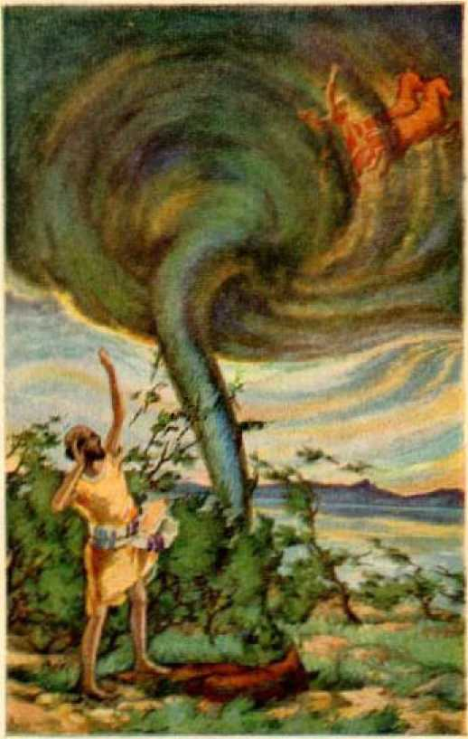Parting of Elijah and Elisha Page 203
Preaching of the True Witness to the World.
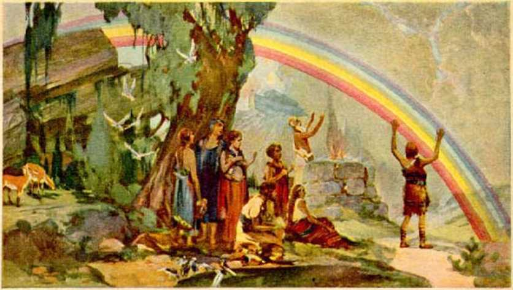The First Rainbow Page 231
The Token of God’s Everlasting Covenant
In that great battle the part to be performed by the faithful remnant is to sing forth the praises of Jehovah’s name. (1 Pet. 2:9,10) In so doing they show an absolute confidence in God and boldly tell of his mighty name and works. They do so because they love him, and ho is to his people “a crown of glory” in that day. The battle is not the remnant’s, but it is Jehovah God’s, and the remnant are his witnesses to tell the peoples of earth concerning God and his purposes.—Isa. 28:5,6; 1 John 4:17,18; 2 Chron. 20:15-22.
That millions of people will be killed in that battle is certain from the words of the prophet: “And the slain of the Lord shall be at that day from one end of the earth even unto the other end of the earth: they shall not be lamented, neither gathered, nor buried; they shall be dung upon the ground.” (Jer. 25:33) It will be the worst trouble the world will ever have known, and it will be the last. (Matt. 24: 21,22) That many will be brought through the trouble and given an opportunity to begin right and obey the Lord and receive life, is also made certain by the words of the prophet: “Blessed is he that considereth the poor; the Lord will deliver him in time of trouble. The Lord will preserve him, and keep him alive; and he shall be blessed upon the earth: and they will not deliver him unto the will of his enemies. ’ ’—Ps. 41:1, 2.
As a further encouragement to the millions of people on earth today, who are no part of Satan’s organization but who are held in subjection to it, the Lord counsels them to seek meekness and righteousness before the war begins; and, so doing, they have this promise: “Before the day of the Lord’s anger come upon you, seek ye the Lord, all ye meek of the earth, which have wrought his judgment; seek righteousness, seek meekness; it may be ye shall be hid in the day of the Lord’s anger.”—Zeph. 2: 2, 3.
It is of the greatest importance to the people that they now be told the truth. The privilege and obligation of telling the truth is laid upon God’s remnant, that little company of people which constitutes his true and faithful witnesses from this time forward. Let all, therefore, who truly love God now “shew forth the praises of him who hath called [them] out of darkness into his marvellous light”. Let them thus do in the face of the greatest opposition. By the proclaiming of the doings of Jehovah and his purposes the people may now know the meaning of the presentday events, and what shall shortly come to pass, and what will be for their good.
CHAPTER XI
Peace
JEHOVAH has his own due time for everything. By his prophet he says there is “a time of war, and a time of peace”. (Eccl. 3:8) In the preceding chapters the proof is submitted concerning the greatest war the world will ever have known. It is the war of the great God Almighty and, when done, there will be no enemy to carry on warfare. Jehovah speaks by his prophets and tells of the end of war and the time of lasting peace: “He maketh wars to cease unto the end of the earth; he breaketh the bow, and cutteth the spear in sunder; he burneth the chariots in the fire.” (Ps. 46: 9, R. E.) “And I will cut off the chariot from Ephraim, and the horse from Jerusalem; and the battle bow shall be cut off; and he shall speak peace unto the nations: and his dominion shall be from sea to sea, and from the River to the ends of the earth.” (Zech. 9:10, R. V.) It is manifest that there could be no peace as long as the wicked organization of Satan exists. The very purpose of the great war of Jehovah is to cleanse the earth, by ridding it of the Devil’s organization. Then peace and righteousness, like a river, shall flow unto the people, and they shall be glad.
Seeing the day of great crisis approaching, Satan comes to the fore with a makeshift to deceive the people and turn their minds away from Jehovah. This time it is a counterfeit peace arrangement. To be sure, Satan knows that all honest persons desire to have peace. The politicians always wish to appear to be making provision to carry out the will of the peo-299 pie. Doubtless the major number of the political rulers, and even the profiteers, would prefer to have peace. Not knowing Jehovah and his purposes, they are easily deceived by Satan. He is the father of lies, and a murderer, and never will there be peace while he has power over the nations of the earth.
On August 27, 1928, fifteen of the representative nations of the earth, by their ambassadors, met at Paris and signed a treaty which is called “The general pact for the renunciation of war”. Both Japan and the United States signed that peace pact at that time. Later forty-four other nations signified their approval of the treaty.
The clergymen of “organized Christianity” pushed themselves forward to have a part in the ratification of that peace treaty. They told the people that the peace pact was arid is a real Christian treaty. Their purpose in so doing was, of course, to obtain the support of all the professed Christian people of earth for the treaty. The Federation of Churches of America sent out a letter, under date of November 11, 1928, advocating the ratification of the peace treaty by the United States Senate. Among other things, that letter said: “As Christmas draws near what better gift could it bring to America, and through her to the world, than the Senate’s prompt, cordial and united ratification of this great instrument!”
Another letter, bearing date of December 3, 1928, issued by the National Council for the Prevention of War, and sent out from its headquarters in Washington, D. C., made this statement: “We are advising that letters be sent to the senators, urging them to make the pact our Christmas present to the world, and to pass it without reservation.”
The clergymen throughout America preached from their pulpits many sermons to the same effect, and connected the peace pact with the name of Christ, as though it had the approval of Christ and of God. That was a nice sugar-coated bait with which many honest people were deceived and caught and led to believe that it was their solemn Christian duty to urge the representatives of the people in the United States Senate to approve the peace pact.
On January 15, 1929, the Senate got in line with the other “nobles” of “organized Christianity” and passed the resolution ratifying the peace treaty; and two days later the prancing secretary appeared before the national executive, and in the presence of senators, representatives, and others, the treaty was approved, while the cameras clicked to make a show for the people; and many went home with a sigh of relief, and saying: “There shall be no more war.”
Many senators voting for the approval of the treaty, however, were not of that mind. They expressed themselves as having little faith in the treaty as a means of preventing war. They proved their lack of faith that this piece of paper will prevent war, by a bill, passed a few days later, in which provision was made for a greater navy than has heretofore existed in America, to be used in the event of war.
To be sure, Jehovah knew from the beginning the fraudulent schemes Satan would employ through his agencies, and particularly the religious element thereof, to mislead the people concerning permanent peace. By his prophet he foretold this outward demonstration to mislead the people: “For from the least of them even unto the greatest of them, every one is given to covetousness: and from the prophet even unto the priest every one dealeth falsely. They have
302 healed also the hurt of the daughter of my people slightly, saying, Peace, peace; when there is no peace.”—Jer. 6:13,14.
Every person who thinks seriously well knows that the piece of paper signed by the nations and approved by the United States Senate will not prevent war. All the nations, from the least to the greatest of them, are moved by covetousness, because each nation wishes to get an advantage over the other. The prophet of God plainly states that the preachers and priests and the leaders of the religious part of the organization deal falsely. With high-sounding words and sanctimonious voices they cry out, ‘Peace, peace! see what we have done to make peace 1 ’ and the Lord says, ‘‘There is no peace.”
God has ordained the destruction of Satan’s organization, and nothing can prevent it. That the peace pact movement is a part of Satan’s seductive and deceptive scheme is further shown by the words of God’s inspired apostle, who wrote concerning the day of the presence of the Lord, where we now are: ‘ ‘ For yourselves know perfectly that the day of the Lord so cometh as a thief in the night. For when they shall say, Peace and safety; then sudden destruction cometh upon them, as travail upon a woman with child; and they shall not escape. But ye, brethren, are not in darkness, that that day should overtake you as a thief.”—1 Thess. 5: 2-4.
Those who are really devoted to God shall understand and do understand how lasting peace will come, and that it will come only after the great war of God Almighty, in which the organization of Satan shall be completely destroyed. All the palaver and noise and boasting conferences and conventions, preaching and passing of resolutions, will absolutely fail to
bring peace. When these agencies of the enemy all raise their voices in one accord and say, “Peace, and safety,” then sudden destruction shall come upon them.
Again, by his prophet, Jehovah foretold how he would assemble the nations of the earth, and pour upon them his righteous indignation in the great devastating war that will come upon them “in the valley of decision”. And then he added: “For then will I turn to the people a pure language, that they may all call upon the name of the Lord, to serve him with one consent.” (Zeph. 3:8,9) God will have peace, and have it in his own way; and when he brings peace, it shall come to stay.
It should be apparent, to all who think, that there could be no real peace on earth until wickedness is completely put down. While unrighteousness rules, some will be given advantage at the expense of others. The strong survive for a time, and fall when another stronger one arises. Disorder, strife, oppression and murder have ruled amongst men for centuries, because Satan the evil one has been in control. There must come One greater and stronger than Satan, and who acts in exact harmony and under the direction of the Almighty God, and who will joyfully obey the commandments of Jehovah God. Then in peace and righteousness he will draw the people to him. Jehovah long ago foretold by his prophet the coming of his mighty One. He who would be the peace-maker for the people, and be their peace, must also be the Redeemer of man.
Jehovah arranged that his beloved Son the Logos should leave the courts of heaven and be born a man child, grow to manhood’s estate, suffer death to provide the price of redemption for man, and then become the great Euler of the world and establish peace for ever amongst men. Therefore, when Jesus was born at Bethlehem, where the prophet foretold he would be born (Mic. 5:2), God caused his mighty angel from heaven to announce this prophecy: “I bring you good tidings of great joy, which shall [in future days] be to all people. For unto you is born this day, in the city of David, a Saviour, which is Christ the Lord.” Immediately following that great prophetic announcement a host of angels joined in the song of praise, which was heard by men • and the words of that song were prophetic, because they foretold the day when the people would be at peace, and when Jehovah God would bring them peace through the beloved One who was born that day in the city of David. The angels sang: “Glory to God in the highest, and on earth peace, good will toward men.”— Luke 2:10-14.
That great prophecy must be fulfillled, and with the conclusion of the great battle of God Almighty it will be fulfillled. God will fight for peace (and then peace will be on earth for ever), and this he will do by and through his beloved Son. Like a mantle of light, peace will cover the earth and good-will toward men shall be permanently established. It can come in no other way. Men who attempt to run ahead of Jehovah and establish peace by their arrangements are an abomination in his sight.
Long before the birth of the man child Jesus, God caused his prophet to foretell of his birth and the work that he would later do. For centuries the people have walked on in darkness because ‘the prince of darkness’ has blinded them and led them in the wrong way. (Eph. 2:2; 6:12) Out of Bethlehem came the mighty Savior of the world, the great Ruler, and in due time he shall light all men of the world. (John 1:9) God’s prophet spoke concerning the future, foretelling what should come to pass, and now we see that prophecy partially fulfillled and the fulfillment thereof still in progress. God has placed his King upon his throne; he has committed to him all power and authority, and the great day of peace is near at hand. Through him, whom God anointed, shall come peace and light and blessings to the people, even as his prophet long ago foretold. “The people that walked in darkness have seen a great light: they that dwell in the land of the shadow of death, upon them hath the light shined. For unto us a child is born, unto us a son is given: and the government shall be upon his shoulder: and his name shall be called Wonderful Counsellor, The mighty God, The everlasting Father, The Prince of Peace. Of the increase of his government and peace there shall be no end, upon the throne of David, and upon his kingdom, to order it, and to establish it with judgment and with justice from henceforth even for ever. The zeal of the Lord of hosts will perform this.”—Isa. 9: 2, 6, 7.
Christ Jesus is earth’s rightful and righteous Governor and will rule in righteousness. The people will learn to call him the “Wonderful Counsellor”, because he will guide them in the right way. He is the Mighty One to whom Jehovah has committed all power in heaven and in earth, therefore “the mighty God”. He is “the everlasting Father”, because it is by and through him that Jehovah grants life to the people as a gracious gift. (Rom. 6:23) He is “the Prince of Peace”, and the peace he brings to earth will continue for ever.—Nah. 1:9.
The people have learned to war against each other because of the covetousness and evil projected into their minds and hearts by Satan the enemy. When the government of Christ is over all the world, the peoples of earth will learn the truth; they will cease for ever in the preparation for war, and will reduce their war machines and instruments of destruction to instruments that may be used to beautify the earth.—Isa. 2: 2-4; Mie. 4:1-4.
Why, then, do the ruling powers of the nations continue to rage about preparations for war, and at the same time claim to have outlawed war? Why do the people meditate “a vain thing”, putting their confidence and trust in men and their ability to establish lasting peace on earth? God’s prophet propounded these questions, so appropriate at the present time, and which apply now, and then gave the answer to them. The prophetic answer is, Because the ruling factors of Satan’s visible organization have taken counsel together against God and against his anointed King. (Ps. 2:1,2, 2?. P.) They have no desire to know and acknowledge Jehovah as the only true and almighty God. They are proud of what they claim to be able to do by peace pacts, conventions and leagues. “The wicked, through the pride of his countenance, will not seek after God: God is not in all his thoughts.” (Ps. 10:4) For that reason Jesus Christ, God’s great executive officer, will destroy the organization of the enemy, and clean out the workers of iniquity, that righteousness and peace may be fully established in the earth.—Ps. 2:9.
The great desire of the peoples of the nations of earth is for peace and harmony, that they might dwell together without fear. Jehovah, by his chief executive officer, will bring the peoples their heart’s desire.
“The meek shall inherit the earth, and shall delight themselves in the abundance of peace. ”(Ps. 37:11) “In his days shall the righteous flourish; and abundance of peace so long as the moon endureth.”— Ps. 72:7; Isa. 32:17,18.
EGYPTIANS AND ASSYRIANS
Jehovah specifically mentions the Egyptians and the Assyrians and the blessings that will be extended to them during the administration of his righteous government under Christ, The Prince of Peace. He makes no such promise with reference to Babylon. There must be a reason for this difference. Men who have acquired material wealth and builded great military machines and organizations have not done so with the primary purpose of defaming God’s holy name. They have been hard-hearted and cruel in their course of action, and have been moved by selfishness. They have had ambitious desires for power and honor. They have been overreached by the religious part of the Devil’s organization and have been turned blind concerning the great Jehovah God. But the Scriptures show that when that blindness has been removed and they see the true God, their hearts will be made tender. Learning that he is not the God that has been misrepresented to them by the clergy, many of these men will turn to the Lord God.
The political rulers or politicians of the world, prophetically foretold by the organization and course of Assyria, have been moved by selfishness in the course of action taken by them. Their selfish desire has been for power and honor amongst men, and such has been the inducing cause for their course of action. They have been overreached by the Devil religion, and have practised that and become members of the religious organization because it seemed to be to their selfish advantage. They joined the church for the same reason that they join a lodge. They expect some votes from that quarter. They have been blinded to the truth by the Devil religion and these who practise it. When the political rulers see and understand the hypocrisy of the Devil religion now practised by “organized Christianity” so called, and learn something about the true God, and have their blindness removed, doubtless many of them will serve the Lord God with gladness of heart.
But the Devil religion, represented particularly by the Devil’s organization named Babylon, has at all times brought reproach upon the good name of Jehovah God. It has been organized and carried on for the very purpose of defaming Jehovah’s name and turning the people away from him. In the great war shortly to follow, the Devil religion, together with all these who hold on to and willingly practise it, shall go down never to rise again. The workers of iniquity shall cease.
The spirit of Egypt, the Devil’s earthly organization in which the commercial and military power predominates, has been that of military conquest and the harsh exercise of power. Men instinctively worship something. The only true worship is that of Jehovah God. The Devil religion has turned men to the worship of idols and induced them to consult evil spirits, because they have been blinded to the truth. When God delivered the Israelites from Egypt he said: “Against all the gods of Egypt I will execute judgment.” (Ex. 12:12) Speaking by his prophet concerning the great war of God Almighty, he says: “And the spirit of Egypt shall fail in the midst thereof: and I will destroy the counsel thereof: and they shall seek to the idols, and to the charmers, and to them that have familiar spirits, and to the wizards. ” —Isa. 19:3.
When the spirit of military power and conquest has been broken, then will men who have put their trust in such powers seek the counsel and advice of wizards and evil spirits, and these will fail them. Having reached their wits’ end they will cry unto the Lord, as it is written: “Then they cry unto the Lord in their trouble, and he bringeth them out of their distresses. He maketh the storm a calm, so that the waves thereof are still.”—Ps. 107: 28,29.
The prophet of Jehovah foretells the great witness that must be given in the earth “in that day”, that the people may know of Jehovah, and foretells that the cries of the oppressed will be heard by Jehovah. “He shall send them a saviour, and a great one, and he shall deliver them.” Then the prophet adds: “And the Lord shall be known to Egypt, and the Egyptians shall know the Lord in that day, and shall do sacrifice and oblation; yea, they shall vow a vow unto the Lord, and perform it. And the Lord shall smite Egypt: he shall smite and heal it; and they shall return even to the Lord, and he shall be entreated of them, and shall heal them.” (Isa. 19:20-22) This proves that the people will turn to Jehovah for their own good and, having so done, will receive his blessings.
What is said concerning Egypt applies likewise to Assyria, that is, to the people forming the earthly organization of Satan in which the political rulers are in the saddle and leading. The government of peace established by Jehovah and ruled by his beloved Son, the Prince of Peace, will open the way for the people to return unto God. Jehovah foretold tha establishment of that highway and way when he caused his prophet to -write: “And an highway shall be there, and a way, and it shall be called, The way of holiness; the unclean shall not pass over it; but it shall be for these: the wayfaring men, though fools, shall not err therein.” (Isa. 35:8) These words of the prophet beautifully describe how God opens the highway and shows the people that the way to return to him is by wholly devoting themselves to him, and that while so doing there will be none to hinder, because “no lion [fierce political ruler] shall be there, nor any ravenous beast [cruel, harsh military government] shall go up thereon, it shall not be found there; but the redeemed shall walk there”.—Isa. 35: 9.
Christ, the great Redeemer, has provided the ransom price for all, and all shall have an opportunity to return to Jehovah by and through him. “And the ransomed of the Lord shall return, and come to Zion with songs and everlasting joy upon their heads; they shall obtain joy and gladness, and sorrow and sighing shall flee away. ’ ’—Isa. 35:10.
Having in mind now that Egypt represented earth’s organized power with the commercial and military elements predominating, and that Assyria represented earth’s organized power with the political rulers predominating, and that these and the people have been deceived by Satan and turned away from God by the Devil religion, consider now the words of God’s prophet: “In that day shall there be a highway out of Egypt to Assyria, and the Assyrian shall come into Egypt, and the Egyptian into Assyria, and the Egyptians shall serve [God] with the Assyrians.”— Isa. 19:23.
Then the Assyrian will march into Egypt, not to rule nor to dominate, and the Egyptian will march into Assyria, not in military conquest, but there will be complete harmony between all these who will come together and worship God in spirit and in truth, and they shall serve God and help one another.
A highway from Egypt to Assyria would necessarily pass over the land of Canaan, and this prophetically foretells that the peoples of the nations must receive their blessings in the same way that the Israelites will receive theirs, to wit, through Christ the Prince of Peace: “In that day shall Israel be the third with Egypt and with Assyria, even a blessing in the midst of the land; whom the Lord of hosts shall bless, saying, Blessed be Egypt my people, and Assyria the work of my hands, and Israel mine inheritance.”— Isa. 19: 24, 25.
Jehovah God announces that, for these who forsake the Devil religion and turn to the Lord God and serve him, he will open a way to receive them and grant them the blessings of life everlasting. The people of the world, and particularly the political rulers and the commercial giants and builders of military powers, have been and are wicked because of their wrongful course. Their wickedness has been induced chiefly by giving their allegiance to the Devil religion that has reproached Jehovah God. When the Prince of Peace, by the grace of God, has opened the understanding of the people, even though many of these have been great transgressors, they shall have an opportunity to receive the blessings of everlasting life. Concerning these, God, through his prophet, says: “Again, when the wicked man turneth away from his wickedness that he hath committed, and doeth that which is lawful and right, he shall save his soul alive. Because he considereth, and turneth away from all his transgressions that he hath committed, he shall surely live, he shall not die.” (Ezek. 18:27,28) Thus God shows his mercy and loving-kindness to every one who will manifest a right condition of heart devotion.
Had the politicians and commercial giants been taught the truth and been induced to use their power and influence to honor Jehovah and turn the people to him, they might have accomplished much good. But the preachers and the priests of every organized religion have led them in the wrong way, because they practise Satan’s organized religion. Be sure Jehovah knows full well how men have been misled by the hypocritical teachers of organized religion, and in mercy he opens the way for men to know the truth and return to him. Therefore it becomes of the greatest importance at this time to tell the people the truth concerning God.
The leaders of organized religion oppose the truth; and they do so because they are under the influence of Satan. By the use of fraud and misrepresentation they induce the political and commercial powers to believe that these who tell the truth are enemies of good government, and therefore seek to destroy the work of these who do teach the truth. But their opposition can not succeed. God has begun to give the truth to the people, and no power can stop it.
There is no desire or attempt on the part of these who teach the truth of God’s Word to induce any one to join some organization or body. Their only purpose is to inform the people concerning Jehovah God and his provision for their blessing. Jehovah commands these who love him to now be his witnesses in the earth. He causes them to publish the truth now, that the hypocritical mask may be removed from “organized Christianity” so called, and from other organized Devil religions, in order that the people may learn the truth and get in line for the blessings that God will bestow upon all who love and obey him. These blessings he will bestow, during the reign of the Prince of Peace, upon as many as obey him and honor his name.
King David drove the enemies of Israel out of Palestine. He thereby prophetically foretold of Christ driving the enemy organization out of the world. The reign of Solomon followed that of David, and is famous for the majesty, wisdom and peace that marked his reign. He thereby prophetically foretold of the peaceful and blessed reign of Christ, the “greater than Solomon’’. Christ Jesus, the great Prophet, spoke of himself and of his glorious reign as greater than that of Solomon. He also foretold that the peoples of Egypt and Assyria would rise up in the time of his reign, but that the hypocritical religious leaders would be condemned.—Luke 11: 31, 32.
Concerning Solomon it is written: “And the Lord magnified Solomon exceedingly in the sight of all Israel, and bestowed upon him such royal majesty as had not been on any king before him in Israel.’* (1 Chron. 29:25) The name Solomon means “peaceful one’’. As peace, wisdom, riches and glory marked the reign of Solomon, so even far greater peace, wisdom, riches and glory shall mark the reign of Christ, the Prince of Peace.
Jehovah caused his prophet to write concerning his organization, of which Christ Jesus is the Head: “For thus saith Jehovah, Behold, I will extend peace to her like a river, and the glory of the nations like an overflowing stream: and ye shall suck thereof: ye shall be borne upon the side. ’ ’—Isa. 66:12, R. V.
When the peoples and nations come to know of God and his righteousness and peace, they will seek his organization called Zion. “They shall ask the way to Zion with their faces thitherward, saying, Come, and let us join ourselves to the Lord in a perpetual covenant that shall not be forgotten.” (Jer. 50:5) The obedient ones will become the children of Christ, because they shall receive the blessings of life through Christ, the Prince of Peace.
Let the people cease their vain imaginations that “organized Christianity”, so called, can bring them relief, peace and prosperity. Let them break away from Satan’s organization, take their stand on the side of Jehovah God, and give their allegiance and devotion to him. The prophet foretells what shall then come to pass: “I will hear what God the Lord will speak: for he will speak peace unto his people, and to his saints: but let them not turn again to folly. Surely his salvation is nigh them that fear him; that glory may dwell in our land.” With the reign of the Prince of Peace in full sway, God’s prophet foretells that these who love righteousness will say: “Mercy and truth are met together: righteousness and peace have kissed each other. Truth shall spring out of the earth; and righteousness shall look down from heaven. Yea, the Lord shall give that which is good; and our land shall yield her increase. Righteousness shall go before him; and shall set us in the way of his steps. ’ ’-Ps. 85: 8-13.
Jehovah’s due time is now come for the people to hear the truth. The truth is being told by a few, who are devoted to Jehovah God, and in obedience to his commandments, because it is his due time. “Organized Christianity”, so called, opposes the truth because that organization is under the domination of Satan. That the people may know that Jehovah is the only true God, and that Christ is the Prince of Peace and the Redeemer of man and earth’s rightful Ruler, the truth must now be told, and is being told.
God is uncovering and revealing his prophecies for man’s good, and his light is shining thereupon daily with increased brilliancy.
Christ, earth’s rightful King, has taken his power. With the end of the great war of God Almighty, he shall enlighten and judge the people. “Then judgment shall dwell in the wilderness, and righteousness remain in the fruitful field. And the work of righteousness shall be peace; and the effect of righteousness quietness and assurance for ever. And my people shall dwell in a peaceable habitation, and in sure dwellings, and in quiet resting places. ”-Isa. 32; 16-18.
CHAPTER XII
His Name
JEHOVAH’S name is the most vital issue before all creation. A few have settled the question by taking an unequivocal stand on the side of Jehovah, and now give all honor and glory to his name. All who will ever enjoy life everlasting must do likewise. Speaking by his prophet concerning his anointed, to whom he will give the divine nature and the highest position in his organization, Jehovah says: “I will set him on high, because he hath known my name.” (Ps. 91:14) As the same anointed ones approach the consummation of their hopes the prophet of God foretells their saying: “In that day shall this song be sung in the land of Judah [the condition of these who give their unstinted praise to Jehovah’s name]; We have a strong city [organization] ; salvation will God appoint for walls and bulwarks. Open ye the gates, that the righteous nation which keepeth the truth may enter in.” (Isa. 26:1,2) Then addressing Jehovah God, the same anointed ones say in the language of the prophet: “The way of the just is uprightness: thou , most upright, dost weigh the path of the just.”—Isa. 26:7,8.
There is a mutual love between Jehovah and the anointed ones of his organization. These have fought against all opposition and triumphed in righteousness, and will witness the downfall of the enemy organization. Referring thereto, the prophet of Jehovah says: “In that day the Lord [Jehovah], with his sore, and great and strong sword [his mighty executive officer], shall punish leviathan the piercing serpent, even leviathan that crooked serpent; and he shall slay the dragon that is in the sea [amidst the restless elements of the world]. In that day sing ye unto her [Zion, God’s blessed organization], A vineyard of red wine. I the Lord do keep it; I will water it every moment: lest any hurt it, I will keep it night and day.” (Isa. 27:1-3) Thus docs the prophet speak of and concerning them that are ‘taken out for God’s name’, and who show forth his praises by declaring his name. —Acts 15:14; 1 Pet. 2: 9,10; Isa. 12:4.
Those who have trusted in Jehovah and his provision for salvation through the blood of his beloved Son; who have devoted their life exclusively to him, and who have overcome the world, rejoice and say: “Our soul is escaped as a bird out of the snare of the fowlers; the snare is broken, and we are escaped. Our help is in the name of the Lord, who made heaven and earth.” (Ps. 124: 7, 8) Appreciating the precious privilege of knowing his name, they say: ‘ ‘ Thy name, 0 Lord, endureth for ever; and thy memorial, 0 Lord, throughout all generations.”—Ps. 135:13.
When Jehovah God gives a name to a creature, that name is significant. With stronger reasoning, when he reveals himself by a name, that name is of the greatest importance to his creatures. Ue reveals himself by his name God, which means the Creator of heaven and earth and of all things that are good, and the Giver of life to all that obey. He reveals himself by the name Jehovah, which means his purposes concerning his creation. He reveals himself by the name Almighty God, which means that his power is unlimited, and that none can stand against it. He reveals himself by the name the Lord of hosts, which means the Almighty God of war who destroys these that persist in wrong-doing. When Jesus came to earth Jehovah revealed himself as the heavenly Father of the new creation, meaning that he is the source of life to all who live for ever in the heavenly realm. He reveals himself by the name Most High, which means that he is above and over all, moved always by love, and rules the universe in justice and righteousness. Understanding these truths, then man begins to appreciate the force of the words of Jesus who said: “And this is life eternal, that they might know thee the only true God, and Jesus Christ, whom thou hast sent.”—John 17:3.
PERMISSION OF EVIL
Evil has been active in the world for many centuries. Satan is the very embodiment of evil and the one who has persisted in carrying on evil. He has builded a powerful organization, drenched the earth with human blood, caused crime and wickedness to run riot, and has dragged down men and angels to the depths of woe. Almighty God is supreme, as his name implies, and could long ago have destroyed Satan and all other workers of iniquity. Why has he not done so? By not destroying the evil-workers and not preventing the operation of evil, God has permitted evil to persist. What is the reason?
The answer often given is that man by experience might learn the exceeding sinfulness of sin, and that angels likewise might learn by observation. That answer does not seem to assign an adequate reason for the permission of evil. The statement, “that sin by the commandment might become exceeding sinful,” occurs only one time in the Bible. The statement was made by Paul concerning the relation of the Jews to the law covenant, and that statement was made approximately four theusand years after man had been going into death and evil had been in operation.
It is true that man learns by experience that wrongdoing leads to suffering and death; but these who have put forth their best endeavors to do good have also suffered and died. A very large proportion of these going into death have died as infants, without the mental capacity to learn the effect of sin, and therefore they could not have learned. A large proportion have died infants mentally altheugh mature in years, and they have learned nothing by experience. When these are awakened out of death and learn of God, and then any disobey, they will be destroyed, and therefore their experience will have brought them no profit. As to the angels, many of them have had experience with sin, and yet there is no scripture to prove that they will profit by their experience or observation.
While it is true that these creatures who are granted life everlasting because of full obedience to God will learn that wrong-doing leads to death, that does not seem to be an adequate reason for the permission of such great wickedness as Satan has wrought during the centuries past. There must be a more potent reason.
A reason for the permission of evil, more potent, and consistent with the Scriptures and supported thereby, seems to be this: That Jehovah in his due time might fully demonstrate to all intelligent creation his own supremacy in power, his exact justice, his perfect wisdom and his complete unselfishness, and thereby open the way, to all who love him and who maintain their integrity, to a full opportunity for faith and confidence in him and for gaining and receiving the blessings of life everlasting. His Word and his name are the great questions involved, and the vindication thereof must be the paramount reason for the permission of evil.
The rebellion of Lucifer at once raised the issue, Who is the supreme God? The Word and name of Jehovah were necessarily involved in that issue. God had created the perfect man and told him that death would be the penalty for the infraction of his law. Lucifer was appointed man’s overlord and immediately set up his own wisdom and power as equal to that of Jehovah God. Lucifer concluded that he was wise enough and powerful enough to prevent the death of man, or that, should God kill the man, God would thereby demonstrate his own imperfect wisdom, because the infliction of the death penalty would prove God’s inability to create a man that could maintain his integrity with God. The Bible record concerning Job is strong proof in support of this conclusion.
To be sure, God could have immediately killed Adam and Lucifer, created another perfect man, and placed another spirit being in Eden as man’s overlord, and have begun anew to people the earth. Had he done so, that would have demonstrated only his supreme power and his justice. Other creatures in his realm would have insisted that the failure of man was evidence of the imperfect wisdom on the part of the Creator, and the basis for complete faith and confidence would have been shaken. There would have been no opportunity to show that God is both ‘just toward man and the justifier of man’. Neither would there have been opportunity to demonstrate the complete unselfishness of Jehovah, that creatures might know that “God is love”.
Satan pitted his own wisdom and power against that of Jehovah God. Satan, after his rebellion, was devoid of justice and love; therefore he could not pit his justice and love against that of Jehovah. If Satan could convince others of creation that Jehovah is not supreme in wisdom and power, then he would destroy the confidence of such creatures in Jehovah; and when these suffered, they would become unfaithful to God and turn from him. The indisputable facts show that Satan has convinced the greater number of men that God is not supreme in power nor the possessor of all wisdom. He has also convinced the major portion of men that God is unjust and that he is not loving. He convinced many of the angels to the same effect, and induced them to follow his course of wickedness. Satan has used various methods to accomplish his purposes. He has caused many to believe the first lie, to wit, that man has an immortal soul and therefore can not die; and by this he has made God appear to be a liar and imperfect in wisdom and power. Satan has caused many to believe that God has prepared a place of torture wherein he will eternally torment multitudes of mankind, and by this has intended to prove, and has proved to many, that God is void of justice and love.
At any moment since the rebellion, God could have destroyed Satan and all his works and all other wicked creatures. The fact that he has not done so is no proof that God is at all responsible for the evil in the world. God is in no wise responsible for the sorrow, suffering, sickness, calamities and death that have fallen upon humankind. These things are the natural results that flow from sin, which is the violation of God’s law. He has permitted the operation of evil and wickedness in that he has not prevented it. That, however, is no argument that he will not end it in his own due time. It is not the slightest argument that God favors evil for a moment. On the con-
trary, his Word declares that he hates evil and the workers of iniquity. (Ps. 5: 5; 45: 7; Prov. 6:16-19) The proof of his Word is plain, that in his due time God will destroy all the wicked and completely annihilate the workers of iniquity.-Ps. 145: 20 ■ Nah. 1: 9.
The great ransom sacrifice of the man Christ Jesus is not involved in the question of the duration of the permission of evil. The ransom sacrifice is God’sieving provision made for the recovery man. The ransom sacrifice could have been made available for the restoration of man immediately following its presentation as a sin-offering in heaven, as well as later, and yet evil has gone on until now. From the time of the presentation of the ransom price as an offering for sin, God has been selecting and gathering his church, which is the body of Christ. The duration of the permission of evil has not necessarily been affected by the selection of the church, but the church has been selected in spite of the evil. What God has done is this: He has permitted Satan to pursue his own course of wickedness, but in his own due time God will cut Satan and his evil agencies short in exact justice. The course of Satan has at all times been a challenge to Jehovah God. Satan said to God concerning Job: ‘Put him to the test of suffering and he will curse you to your face.’ God permitted Satan to try his hand on Job and to put Job to the test, and amidst all the suffering Job remained stedfast in his integrity and held the confidence of Jehovah God.
Satan knows that God has said that he created the earth for man, and man to have dominion over the earth. He knows that it was God’s announced purpose to fill the earth with a perfect race of human beings, and that God had declared that the condition was that man must be obedient to him. (Isa. 45:12,18;
Gen. 1: 28; 2; 17) In substance he said to Jehovah: ‘You can not put a man on earth who will maintain his integrity, and who, according to your law, will receive your blessings of life everlasting on earth.’ Satan therefore put in issue the word of Jehovah God. God declares: “My word . . . shall not return unto me void, but it shall accomplish that which 1 please, and it shall prosper in the thing whereto I sent it.” (Isa. 55:11) Therefore the issue upon the word of God was joined; and with what result ? Otherwise stated, God said to Satan: ‘You may do your worst and I will prove my word is true.’
HIS WORD
Jehovah’s faithful servant and prophet wrote: “I will bow down towards thy holy temple, and thank thy Name for thy lovingkindnesi and for thy faithfulness, for thou hast magnified above all thy Name thy word.” (Ps. 138:2, Rotherham) From the very beginning of man’s experience God gave his word that he would raise up a “seed” that would destroy Satan and his works. That word he will keep inviolate. God called Abraham and gave to him his word and promise that he would raise up a “seed” by which he would redeem and bless all the families of the earth. To Moses Jehovah gave his word that he would raise up a great Prophet, foreshadowed by Moses, who would be the Deliverer of the people. He sent forth his prophets to whom he committed his Word, and they faithfully declared the Word of God, prophesying that there should come to earth a man who would be faithful to God; who would be subjected to great persecution because of his faithfulness; who would bear the sins of the people; who would suffer an ignominious death, and that not for his own wrong; who would be raised up out of death and exalted to heaven; and who by his death would provide the redemptive price for man and open the way for the justification of men to life.—Gen. 22:17,18; Deut. 18:15-18; Hos. 13:14; Mic. 5:2; Ps. 16:10; Isa. 53:1-12; 55:1-4.
These prophecies have been fulfillled in Jesus Christ, the beloved Son of God.—John 3:16; Matt. 20:28; John 10:10; 1 Tim. 2:3-6.
To say that God permitted evil in order that by experience man might learn the exceeding sinfulness of sin, would necessarily mean that evil has been carried on by the consent of Jehovah. If by his consent, then there would attach a responsibility to God for the practice of evil in the world. Such could not be true; because he has no pleasure in wickedness, neither does evil dwell with him. (Ps. 5:4) He hates evil; and he can not consent to that which he hates.
Paul said nothing about God’s permitting evil that by experience man might learn the exceeding sinfulness of sin. Paul was discussing the law and the commandment of God. (Rom. 7:7-13) To Israel God had given his law and his commandment. The statement of the Lord’s law is embodied in these words: “Thou shalt have no other gods before me. Thou shalt not make unto thee any graven image, or any likeness of any thing that is in heaven above, or that is in the earth beneath, or that is in the water under the earth.”—Ex. 20:3,4.
The commandment of first importance Jesus declared to be this: “Thou shalt love the Lord thy God with all thy heart, and with all thy soul, and with all thy mind. This is the first and great commandment. ”—Matt. 22: 37, 38.
The law and the commandment of God made mani-
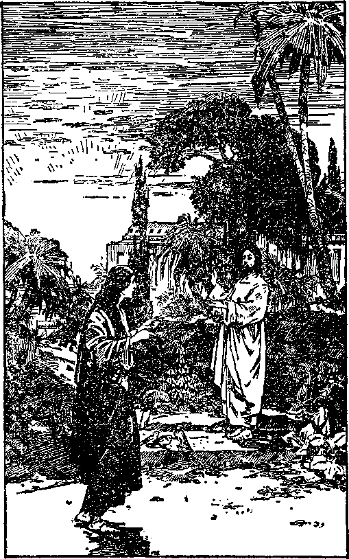Christ Appears After His Resurrection Pages 44, 324
[BLANK] fest what great sinners men are who attempt to divide their allegiance between God and the Devil. The Jews were under obligation to obey God’s law and commandment, because they had agreed so to do. They had not been faithful thereto, and because of their unfaithfulness God east them away. Paul’s argument is that he would not have known the evils of sin except by the law, but that the law and the commandment had manifested to him how exceedingly evil these sinners are who agree to know and do God’s will and yet do contrary thereto.
God would have it understood that he approves no one who divides his allegiance between him and the Devil; because Jehovah is the only true God. He who loves God with his whole heart, mind and being, is unreservedly devoted to Jehovah God. The rule that Paul was laying down is that these who are pleasing to the Lord God are the ones who love him without reservation and serve him joyfully. That rule, then, would mean that every one must in due time come to a knowledge of the truth and have an opportunity to take his stand unreservedly on one side or the other, either for Jehovah or against him.
It will not do to say that God willingly permitted the operation of evil, and therefore assented to it, in order that he might provide and carry out the purpose of redemption through the sacrifice of his beloved Son. The wisdom of Jehovah, being perfect, was sufficient to enable him to meet any contingency that might arise; and when sin entered into the world by the disobedience of man, God’s wisdom was equal to the occasion, and did provide for all such conditions.
The facts, as shown by the Scriptures, are these: Adam was a perfect man, and he was told that a violation of God’s law would be punished by death.
Lucifer challenged that statement by saying: ‘You shall not surely die if you violate God’s law.’ Because of Adam’s selfishness and lack of love for his Creator, he followed the advice of Satan and did so knowingly. Satan now reasoned: ‘If God kills Adam, he admits his imperfect wisdom and his inability to make a man that will maintain his integrity. If he does not kill him, he is a liar. ’ The word of God was therefore put at issue. The word of God and his name, and the vindication thereof, are more important than all the lessons that creatures might learn by experience.
The course of action taken by Jehovah, and which is shown by the Scriptures, is this: Satan had rebelled and put evil into operation, and challenged God’s word and name. God said: ‘ Satan has challenged my word and my name; let him do his worst; my Son the Logos loves me and will gladly do my will. By and through him I will provide the redemption for man. He shall be made a man and given the opportunity to sacrifice himself to provide the redemptive price for man.’ That is exactly what came to pass. It was the love of God that moved him to take action and to exercise his wisdom in carrying out his purposes in providing for the ransom sacrifice. He knew of his ability to raise Jesus out of death; and he did so.
All men, by reason of Adam’s sin, inherited death. (Rom. 5:12) In the exercise of his love God gave his beloved Son to die, that these who believe on him might live for ever. (John 3:16) In due time the knowledge of this loving course taken by Jehovah shall be given to all men, that all through Christ may have the opportunity of obeying the Lord, and receiving the free gift, and being justified to life.—Rom. 5:18; 6:23.
Centuries before the coming of Jesus to earth, God gave his word that Jesus would come, and what he would do. He has kept that word and magnified it. This proves conclusively that Jehovah knew from the beginning that he would put the man Jesus on earth, who would stedfastly maintain his integrity at all times and under all conditions. Thereby God would prove and did prove his word true and right, and settled entirely on the side of Jehovah the issue which Satan raised.
Satan was permitted by Jehovah to go the very limit in his effort to cause Jesus to fall and prove unfaithful to Jehovah, even as he had caused Adam to do. Adam was in every respect a perfect man, and Jesus also was in every respect a perfect man. One was exactly equal to the other. Otherwise Jesus could not have become the ransom sacrifice for Adam. Adam failed to maintain his integrity, and that without any excuse. Jesus did remain stedfast in his integrity, and Jehovah made him the Savior of the world and exalted him to the highest place in his universe.
Jehovah thereby proved his Word; proved that his power is supreme; proved that he is just and the justifier of them that believe in his provision for salvation ; proved his complete and perfect wisdom, and gave the greatest exhibition of love that can ever be given. Those who trust in Jehovah God know that he has proven his Word true, and that the issue which Satan raised concerning the Word of God is settled in God’s own favor and to his eternal glory.
Jehovah first spoke by his prophets, and then, when he sent Jesus his great Prophet, by him he declared his Word of truth, and which was fully corroborated in what the prophets had previously testified. (Heb.
1:1, 2) Since then God has taken out from the world a class of men and women who have willingly devoted themselves unto God and has taken them into the covenant of sacrifice with Christ Jesus, and because thereof they have been the objects of great persecution by Satan and his agencies.
Of these called, many fell away to Satan, but the required number of these called have maintained their integrity and have held fast to God’s Word and his name, and have the confidence of and protection from Jehovah. Now these faithful ones joyfully say: “Sing unto him [Jehovah] a new song. . . . For the word of the Lord is right; and all his works are done in truth.” (Ps. 33:3,4) “The grass withereth, the flower fadeth; but the word of our God shall stand for ever.”—Isa. 40: 8.
From Abel to John the prophet there appeared on earth a few men who were made the servants and prophets of Jehovah, and to whom he committed his Word. Those men were subjected to all manner of persecution by Satan and his agencies, and yet amidst all they maintained their integrity and held stedfast-ly to God. They believed his Word and trusted implicitly in him. Those men God will make the visible rulers in all the earth, while Christ Jesus rules invisibly and brings blessings to humanity. (Heb. 11: 1-40; Ps. 45:16; Isa. 32:1) Thereby God again proves his Word and magnifies it, and settles the issue concerning his Word in his own favor and to his own glory.
MISNAME
Jehovah’s name has been reproached by Satan from the very beginning. In derision and mockery Satan caused the people to call themselves by the name of the Lord. (Gen. 4:26, margin) Satan organized Babylon, Egypt, Assyria, and other world powers, and saturated them with his Devil religion and has used them, and particularly the false religious clement, to bring reproach upon the name of Jehovah God. Today every organized religion under the sun either openly or covertly reproaches the name of Jehovah God. The holy prophet wrote: “Blessed is the nation whose God is Jehovah.” (Ps. 33:12, A. R. V.) But where is there a nation on earth in the year 1929 whose God is Jehovah and which nation and people are devoted wholly to God and to the honor of his name? Let the people answer. The answer must be that there is not one. The religion and politics and commerce of the world are united to rule in every nation under the sun; and they have Satan for their god, even theugh outwardly calling themselves by the name of the Lord.-2 Cor. 4:3,4; John 14: 30.
In times past God has magnified his Word above his name, but the time has come for him to exalt his name as well as his Word. Both his name and his Word are now exalted in Zion, which is his own organization. (Ps. 102:16; 132:13) Upon earth there is now a remnant of these whom the Lord God has called, and to such he has committed his Word and the honor of bearing testimony to his name. These God has taken out as “a people for his name”. (Acts 15:14) To such Jehovah says: “I have put my words in thy mouth, and I have covered thee in the shadow of mine hand, that I may plant the heavens, and lay the foundations of the earth, and say unto Zion, Thou art my people. ’ ’—Isa. 51:16.
The time is at hand when the great issue, Who is the almighty One? must be for ever settled. Jehovah has permitted the evil one to carry on his evil work throughout all the centuries. At given times, and for the benefit of these who love God, he has brought his own name prominently to the fore. (2 Sam. 7:23; Isa. 37:1-36) Today men who claim to be Christians and teachers of the Christian religion deny the Word of God concerning his creation of man, the disobedience and fall of man, and the provision for redemption through the blood of Christ; and in doing so they cast reproach upon the name of Jehovah God. They teach doctrines that dishonor his name, and openly declare their allegiance unto Satan’s organization. Their course of action is a mockery and a reproach to the Lord. “As Jannes and Jambres withstood Moses, so do these also resist the truth: men of corrupt minds, reprobate concerning the faith,” because Satan is their god. Jehovah says concerning them: “But they shall proceed no further, for their folly shall be manifest unto all.” (2 Tim. 3:8,9) There is a limit to the practice of evil, and that limit has been reached by Satan and his agencies. The issue of the almighty name is now to be settled for ever, Who, then, is the Almighty God?
Jehovah says: “I am the Lord [Jehovah] ; that is my name, and my glory will I not give to another.” (Isa. 42:8) Jehovah will now make known to the blinded people his supreme power, his wisdom, justice, and love. He causes all the people and nations to be gathered together, and demands that the Devil’s witnesses speak and justify their course of action or else acknowledge the truth that Jehovah is the only true God. Then addressing his faithful remnant he says: ‘Ye are my witnesses that I am God; before me there was no God formed, neither shall there be after me.’—Isa. 43: 8-12.
This great issue will now be settled finally, and Jehovah declares that he will settle it by destroying Satan and his evil organization. Before that great war of destruction, he causes his faithful witnesses to serve notice upon the nations and peoples of the earth of his purpose to end the practice of evil, Jehovah assembles the nations of earth for decision. (Joel 3:14) The nations are now assembled. He pronounces upon them his judgment, and then pours upon them his righteous indignation and destroys Satan and his organization. (Zeph. 3:8) That is the end of the permission of evil.
Instead of destroying Satan at the very beginning, God has permitted him to pursue his course of wickedness and do everything within his power to oppose God. In the meantime God has kept his Word and his name before these who have sincerely desired to know and to do righteousness, and such he has preserved from the assaults of the enemy. When Satan has done all that he can possibly do to dispute the supremacy, the power, the wisdom, the justice, and the love of Jehovah God, then Jehovah, in the great war, stops Satan’s operations of evil in the earth. Jehovah thereby proves himself to be supreme in power, the Almighty Eternal God, the Most High, besides whom there is none other. By so doing, Jehovah for ever stops the mouths of all creatures from saying that there is another like unto Jehovah God. This is the most effective way to teach creation that there is but one Almighty God.
Jehovah removes the blindness of the people, that they may know him, and that they may know that there is no way of obtaining everlasting life besides the way which Jehovah God has prepared, and that that way is through the sacrifice of Jesus Christ his beloved Son. By this course of action Jehovah opens the way for full faith and confidence in him, that all creation may come to know that he is the Almighty God, that he is perfect in wisdom, that he is just and has made provision for the justification of men, and that he is love because he is the perfect expression of unselfishness.
All creation will then come to know that Satan is the enemy of God and of every creature that wants to do right, and that he is the one who has been and is responsible for all the evil and wickedness that has been practised in the world. Concerning him the Lord God long ago caused his prophet to write: "Yet thou shalt be brought down to hell, to the sides of the pit. They that sec thee shall narrowly look upon thee, and consider thee, saying, Is this the man that made the earth to tremble, that did shake kingdoms; that made the world as a wilderness, and destroyed the cities thereof; that opened not the house of his prisoners? All the kings of the nations, even all of them, lie in glory, every one in his own house. But thou art cast out of thy grave like an abominable branch, and as the raiment of these that are slain, thrust through with a sword, that go down to the stones of the pit; as a carcase trodden under feet. Thou shalt not be joined with them in burial, because thou hast destroyed thy land, and slain thy people; the seed of evildoers shall never be renowned.” (Isa. 14:15-20) "All they that know thee among the people shall be astonished at thee; thou shalt be a terror, and never shalt thou be any more.”—Ezek. 28:19.
The people will come to know that Jehovah is the only true God and that he is their true and Almighty Friend. Through his prophet he says to the people: "Look unto me, and be ye saved, all the ends of the earth: for I am God, and there is none else. I have sworn by myself, the word is gone out of my mouth in righteousness, and shall not return, That unto me every knee shall bow, every tongue shall swear.”— Isa. 45: 22, 23.
The prophet wrote foretelling also what the people shall say when they come to know the truth: “And it shall be said [by the people] in that day, Lo, this is our God; we have waited for him, and he will save us; this is the Lord; we have waited for him, we will be glad and rejoice in his salvation.” (Isa. 25:9) “And the Lord shall be king over all the earth: in that day shall there be one Lord, and his name one.” —Zech. 14:9.
The prophet represents these who have come to know God, and who have full faith and confidence in him, as saying, “O Lord, thou art my God; I will exalt thee, I will praise thy name; for thou hast done wonderful things; thy counsels of old are faithfulness and truth.” (Isa. 25:1-4) Thus will the people manifest their appreciation of the almighty power, the perfect wisdom, the exact justice, and the unfathomable love of the Almighty God.
As further proof that the vindication of God’s Word and name is the chief reason for the permission of evil and the recovery of the human race therefrom, his prophet wrote: “Therefore say unto the house of Israel, Thus saith the Lord God; I do not this for your sakes, 0 house of Israel, but for mine holy name’s sake, which ye have profaned among the heathen, whither ye went. And I will sanctify my great name, which was profaned among the heathen, which ye have profaned in the midst of them; and the heathen shall know that I am the Lord, saith the Lord God, when I shall be sanctified in you before their eyes.” —Ezek. 36: 22,23.
It was Satan who caused Israel to prove unfaithful to God, and it is the same wicked rebel that is responsible for the evil amongst all the nations and peoples of the earth. The Israelites were God’s chosen people, and therefore necessarily dear to him. If he would recover them not for their sakes but for his own name’s sake, then with stronger reasoning has he permitted evil in the world, not merely to teach his creatures the exceeding sinfulness of sin, but that he might establish for ever his glorious name before creation. When this is accomplished, then the lovers of righteousness will join with the prophet in saying: ‘ ‘ Give unto the Lord, 0 ye mighty, give unto the Lord glory and strength. Give unto the Lord the glory due unto his name; worship the Lord in the beauty of holiness. ’ ’—Ps. 29:1, 2.
It is the name of Jehovah that the faithful remnant of the followers of Christ now on earth exalt and praise. (Isa. 12:4-6) It will be the name of Jehovah, the Almighty God, that the people will honor for ever when they know him and learn of his love. God’s prophet foretold the song of praise that will flow from the lips of the people to the glory of his name when they are settled in peace in his kingdom: “Make a joyful noise unto God, all ye lands; sing forth the honour of his name; make his praise glorious. Say unto God, How terrible art thou in thy works! through the greatness of thy power shall thine enemies submit themselves unto thee. All the earth shall worship thee, and shall sing unto thee; they shall sing to thy name. ’ ’—Ps. 66:1-4.
The present is the most blessed time since the days of Jesus that a Christian has ever been permitted to live on earth. It is now the blessed privilege of these who are wholly devoted to God to be witnesses for and to the name of Jehovah the Most High. Another great prophecy is now in course of fulfillment, to wit: “The Spirit [Jehovah the great Spirit, and his Beloved Son, of the same spirit (2 Cor. 3:17)] and the bride [in the temple giving praise to God (Ps. 29:9)] say, Come. And let him that heareth say, Come. And let him that is athirst come. And whosoever will, let him take the water of life freely. ” (Rev. 22:17) And now let all the peoples of earth who love that which is right come and take their stand on the side of Jehovah God. Let these who love Jehovah God tell others about him and his wondrous works. “0 give thanks unto the Lord; call upon his name: make known his deeds among the people. Sing unto him, sing psalms unto him: talk ye of all his wondrous works. Glory ye in his holy name: let the heart of them rejoice that seek the Lord. ’ ’—Ps. 105:1-3.